As we were writing Design Patterns, we knew the patterns we were describing had value because they had proven them selves in many different contexts. Our hope was that other software engineers would benefit from these patterns as much as we had.
Now, three years after its debut, we find ourselves both grateful and thrilled by how the book has been received. Lots of people use it. Many tell us the patterns have helped them design and build better systems. Many others have been inspired to write their own patterns,and the pool of patterns is growing. And many have commented on what might be improved about the book and what they would like to see inthe future.
A recurring comment in all the feedback has been how well-suited thebook is to hypertext. There are numerous cross-references, and chasing references is something a computer can do very well. Since much of the software development process takes place on computers, it would be natural to have a book like ours as an on-line resource. Observations like these got us excited about the potential of this medium. So when Mike Hendrickson approached us about turning the bookinto a CD-ROM, we jumped at the chance.
Two years and several megabytes of e-mail later, we're delighted thatyou can finally obtain this edition, the Design Patterns CD, and put its unique capabilities to work. Now you can access a pattern from your computer even when someone has borrowed your book. You can search the text for key words and phrases. It's also considerably easier to incorporate parts of it in your own on-line documentation. And if you travel with a notebook computer, you can keep the book handy without lugging an extra two pounds of paper.
Hypertext is a relatively new publishing venue, one we are learning to use just like everyone else. If you have ideas on howto improve this edition, please send them to mailto:design-patterns-cd@cs.uiuc.edu. If you have questions or suggestions concerning the patterns them selves, send them to mailto:thegang-of-4-patterns@cs.uiuc.edu mailing list. (To subscribe, send e-mail to mailto:gang-of-4-patterns@cs.uiuc.edu with the subject subscribe.) This list has quite a few readers, and many of them can answer questions as well as we can—and usually a lot faster! Also, be sure to check out the Patterns Home Page at http://hillside.net/patterns/. There you'll find other books and mailing lists on patterns, not to mention conference information and patterns published on-line.
This CD entailed considerable design and implementation work. We are indebted to Mike Hendrickson and the team at Addison-Wesley for theiron-going encouragement and support. Jeff Helgesen, Jason Jones, and Daniel Savarese garner many thanks for their development effort andfor patience despite what must appear to have been our insatiable appetite for revision. A special acknowledgment is due IBM Research, which continues to underwrite much of this activity. We also thank the reviewers, including Robert Brunner, Sandeep Dani, Bob Koss, ScottMeyers, Stefan Schulz, and the Patterns Discussion Group at the University of Illinois Urbana-Champaign. Their advice led to at least one major redesign and several minor ones.
Finally, we thank all who have taken time to comment on DesignPatterns. Your feedback has been invaluable to us as we striveto better our understanding and presentation of this material.
Zurich, Switzerland E.G.
Sydney, Australia R.H.
Urbana, Illinois R.J.
Hawthorne, New York J.V.
August 1997
Preface to Book
This book isn't an introduction to object-oriented technology or design. Many books already do a good job of that. This book assumes you are reasonably proficient in at least one object-oriented programming language, and you should have some experience in object-oriented design as well. You definitely shouldn't have to rush to the nearest dictionary the moment we mention types and polymorphism, or interface as opposed to implementation inheritance.
On the other hand, this isn't an advanced technical treatise either. It’s a book of design patterns that describes simple and elegant solutions to specific problems in object-oriented software design. Design patterns capture solutions that have developed and evolved overtime. Hence they aren't the designs people tend to generate initially. They reflect untold redesign and recoding as developers have struggled for greater reuse and flexibility in their software. Design patterns capture these solutions in a succinct and easily applied form.
The design patterns require neither unusual language features nor amazing programming tricks with which to astound your friends and managers. All can be implemented in standard object-oriented languages, though they might take a little more work than ad hoc solutions. But the extra effort invariably pays dividends in increased flexibility and reusability.
Once you understand the design patterns and have had an Aha! (and not just a Huh?) experience with them, you won't ever think about object-oriented design in the same way. You'll have insights that can make your own designs more flexible, modular, reusable, and understandable—which is why you're interested in object-oriented technology in the first place, right?
A word of warning and encouragement: Don't worry if you don’t understand this book completely on the first reading. We didn’t understand it all on the first writing! Remember that this isn't a book to read once and put on a shelf. We hope you'll find yourself referring to it again and again for design insights and for inspiration.
This book has had a long gestation. It has seen four countries, three of its authors' marriages, and the birth of two (unrelated) offspring. Many people have had a part in its development. Special thanks are due Bruce Anderson, Kent Beck, and André Weinand for their inspiration and advice. We also thank those who reviewed drafts of the manuscript: Roger Bielefeld, Grady Booch, Tom Cargill, Marshall Cline, Ralph Hyre, Brian Kernighan, Thomas Laliberty, Mark Lorenz, Arthur Riel, Doug Schmidt, Clovis Tondo, Steve Vinoski, and Rebecca Wirfs-Brock. We are also grateful to the team at Addison-Wesley for their help and patience: Kate Habib, Tiffany Moore, Lisa Raffaele, Pradeepa Siva, and John Wait. Special thanks to Carl Kessler, Danny Sabbah, and Mark Wegman at IBM Research for their unflagging support of this work.
Last but certainly not least, we thank everyone on the Internet and points beyond who commented on versions of the patterns, offered encouraging words, and told us that what we were doing was worthwhile. These people include but are not limited to Jon Avotins, Steve Berczuk, Julian Berdych, Matthias Bohlen, John Brant, Allan Clarke, Paul Chisholm, Jens Coldewey, Dave Collins, Jim Coplien, Don Dwiggins, Gabriele Elia, Doug Felt, Brian Foote, Denis Fortin, Ward Harold, Hermann Hueni, Nayeem Islam, Bikramjit Kalra, Paul Keefer, Thomas Kofler, Doug Lea, Dan LaLiberte, James Long, Ann Louise Luu, Pundi Madhavan, Brian Marick, Robert Martin, Dave McComb, Carl McConnell, Christine Mingins, Hanspeter Mössenböck, Eric Newton, Marianne Ozkan, Roxsan Payette, Larry Podmolik, George Radin, Sita Ramakrishnan, Russ Ramirez, Alexander Ran, Dirk Riehle, Bryan Rosenburg, Aamod Sane, Duri Schmidt, Robert Seidl, Xin Shu, and Bill Walker.
We don't consider this collection of design patterns complete and static; it's more a recording of our current thoughts on design. We welcome comments on it, whether criticisms of our examples, references and known uses we've missed, or design patterns we should have included. You can write us care of Addison-Wesley, or send electronic mail to mailto:design-patterns@cs.uiuc.edu. You can also obtain soft copy for the code in the Sample Code sections by sending themessage send design pattern source to mailto:design-patterns-source@cs.uiuc.edu. And now there's a Web page at http://st-www.cs.uiuc.edu/users/patterns/DPBook/DPBook.html for late-breaking information and updates.
Mountain View, California E.G.
Montreal, Quebec R.H.
Urbana, Illinois R.J.
Hawthorne, New York J.V.
August 1994
Foreword
Consider the work of a future software archeologist, tracing the history of computing. The fossil record will likely show clear strata: here is a layer formed of assembly language artifacts, there is a layer populated with the skeletons of high order programming languages (with certain calcified legacy parts probably still showing some signs of life). Each such layer willbe intersected with the imprint of other factors that have shaped the software landscape: components, residue from the great operating system and browser wars, methods, processes, tools. Eachline in this strata marks a definitive event: below that line, computing was this way; above that line, the art of computing hadchanged.
Design Patterns draws such a line of demarcation; this is a work that represents a change in the practice of computing. Erich, Richard, Ralph, and John present a compelling case for the importance of patterns in crafting complex systems. Additionally, they give us a language of common patterns that can be used in a variety of domains.
The impact of this work cannot be overstated. As I travel about the world working with projects of varying domains and complexities, it is uncommon for me to encounter developers who have not at least heard of the patterns movement. In the more successful projects, it is quite common to see many of these design patterns actually used.
With this book, the Gang of Four have made a seminal contribution to software engineering. There is much to learnedfrom them, and much to be actively applied.
Grady Booch
Chief Scientist, Rational Software Corporation
Guide to Readers
This book has two main parts. The first part (Chapters 1 and 2) describes what design patterns are and how they help you design object-oriented software. It includes a design case study that demonstrates how design patterns apply in practice. The second partof the book (Chapters 3, 4, and 5) is a catalog of the actual design patterns.
The catalog makes up the majority of the book. Its chapters divide the design patterns into three types: creational, structural, and behavioral. You can use the catalog in several ways. You can read the catalog from start to finish, or you can just browse from pattern to pattern. Another approach is to study one of the chapters. That will help you see how closely related patterns distinguish them selves.
You can use the references between the patterns as a logical route through the catalog. This approach will give you insight into how patterns relate to each other, how they can be combined with other patterns, and which patterns work well together. Figure 1.1 depicts these references graphically.
Yet another way to read the catalog is to use a more problem-directed approach. Skip to Section 1.6 to read about some common problems in designing reusable object-oriented software; then read the patterns that address these problems. Some people read the catalog through first and then use aproblem-directed approach to apply the patterns to their projects.
If you aren't an experienced object-oriented designer, then start with the simplest and most common patterns:
It's hard to find an object-oriented system that doesn't use at least a couple of these patterns, and large systems use nearly all of them. This subset will help you understand design patterns in particular and good object-oriented design in general.
Introduction
Designing object-oriented software is hard, and designing reusable object-oriented software is even harder. You must find pertinent objects, factor them into classes at the right granularity, define class interfaces and inheritance hierarchies, and establish key relationships among them. Your design should be specific to the problem at hand but also general enough to address future problems and requirements. You also want to avoid redesign, or at least minimize it. Experienced object-oriented designers will tell you that a reusable and flexible design is difficult if not impossible to get right the first time. Before a design is finished, they usually try to reuse it several times, modifying it each time.
Yet experienced object-oriented designers do make good designs. Meanwhile new designers are overwhelmed by the options available and tend to fall back on non-object-oriented techniques they've used before. It takes a long time for novices to learn what good object-oriented design is all about. Experienced designers evidently know something inexperienced ones don't. What is it?
One thing expert designers know not to do is solve every problem from first principles. Rather, they reuse solutions that have worked for them in the past. When they find a good solution, they use it again and again. Such experience is part of what makes them experts. Consequently, you'll find recurring patterns of classes and communicating objects in many object-oriented systems. These patterns solve specific design problems and make object-oriented designs more flexible, elegant, and ultimately reusable. They help designers reuse successful designs by basing new designs on prior experience. A designer who is familiar with such patterns can apply them immediately to design problems without having to rediscover them.
An analogy will help illustrate the point. Novelists and playwrights rarely design their plots from scratch. Instead, they follow patterns like Tragically Flawed Hero (Macbeth, Hamlet, etc.) or The Romantic Novel (countless romance novels). In the same way, object-oriented designers follow patterns like represent states with objects and decorate objects so you can easily add/remove features. Once you know the pattern, a lot of design decisions follow automatically.
We all know the value of design experience. How many times have you had design déjà-vu—that feeling that you've solved a problem before but not knowing exactly where or how? If you could remember the details of the previous problem and how you solved it, then you could reuse the experience instead of rediscovering it. However, we don't do a good job of recording experience in software design for others to use.
The purpose of this book is to record experience in designing object-oriented software as design patterns. Each design pattern system atically names, explains, and evaluates an important and recurring design in object-oriented systems. Our goal is to capture design experience in a form that people can use effectively. To this end we have documented some of the most important design patterns and present them as a catalog.
Design patterns make it easier to reuse successful designs and architectures. Expressing proven techniques as design patterns makes them more accessible to developers of new systems. Design patterns help you choose design alternatives that make a system reusable and avoid alternatives that compromise reusability. Design patterns can even improve the documentation and maintenance of existing systems by furnishing an explicit specification of class and object interactions and their underlying intent. Put simply, design patterns help a designer get a design right faster.
None of the design patterns in this book describes new or unproven designs. We have included only designs that have been applied more than once in different systems. Most of these designs have never been documented before. They are either part of the folklore of the object-oriented community or are elements of some successful object-oriented systems—neither of which is easy for novice designers to learn from. So although these designs aren't new, we capture them in a new and accessible way: as a catalog of design patterns having a consistent format.
Despite the book's size, the design patterns in it capture only a fraction of what an expert might know. It doesn't have any patterns dealing with concurrency or distributed programming or real-time programming. It doesn't have any application domain-specific patterns. It doesn't tell you how to build user interfaces, how to write device drivers, or how to use an object-oriented database. Each of these areas has its own patterns, and it would be worthwhile for someone to catalog those too.
What is a Design Pattern?
Christopher Alexander says, Each pattern describes a problem which occurs over and over again in our environment, and then describes the core of the solution to that problem, in such a way that you can use this solution a million times over, without ever doing it the same way twice [AIS+77]. Even though Alexander was talking about patterns in buildings and towns, what he says is true about object-oriented design patterns. Our solutions are expressed in terms of objects and interfaces instead of walls and doors, but at the core of both kinds of patterns is a solution to a problem in a context.
In general, a pattern has four essential elements:
The pattern name is a handle we can use to describe a design problem, its solutions, and consequences in a word or two. Naming a pattern immediately increases our design vocabulary. It lets us design at a higher level of abstraction. Having a vocabulary for patterns lets us talk about them with our colleagues, in our documentation, and even to ourselves. It makes it easier to think about designs and to communicate them and their trade-offs to others. Finding good names has been one of the hardest parts of developing our catalog.
The problem describes when to apply the pattern. It explains the problem and its context. It might describe specific design problems such as how to represent algorithms as objects. It might describe class or object structures that are symptomatic of an inflexible design. Sometimes the problem will include a list of conditions that must be met before it makes sense to apply the pattern.
The solution describes the elements that make up the design, their relationships, responsibilities, and collaborations. The solution doesn't describe a particular concrete design or implementation, because a pattern is like a template that can be applied in many different situations. Instead, the pattern provides an abstract description of a design problem and how a general arrangement of elements (classes and objects in our case) solves it.
The consequences are the results and trade-offs of applying the pattern. Though consequences are often unvoiced when we describe design decisions, they are critical for evaluating design alternatives and for understanding the costs and benefits of applying the pattern. The consequences for software often concern space and time trade-offs. They may address language and implementation issues as well. Since reuse is often a factor in object-oriented design, the consequences of a pattern include its impact on a system's flexibility, extensibility, or portability. Listing these consequences explicitly helps you understand and evaluate them.
Point of view affects one's interpretation of what is and isn't a pattern. One person's pattern can be another person's primitive building block. For this book we have concentrated on patterns at a certain level of abstraction. Design patterns are not about designs such as linked lists and hash tables that can be encoded in classes and reused as is. Nor are they complex, domain-specific designs for an entire application or subsystem. The design patterns in this book are descriptions of communicating objects and classes that are customized to solve a general design problem in a particular context.
A design pattern names, abstracts, and identifies the key aspects of a common design structure that make it useful for creating a reusable object-oriented design. The design pattern identifies the participating classes and instances, their roles and collaborations, and the distribution of responsibilities. Each design pattern focuses on a particular object-oriented design problem or issue. It describes when it applies, whether it can be applied in view of other design constraints, and the consequences and trade-offs of its use. Since we must eventually implement our designs, a design pattern also provides sample C++ and (sometimes) Smalltalk code to illustrate an implementation.
Although design patterns describe object-oriented designs, they are based on practical solutions that have been implemented in mainstream object-oriented programming languages like Smalltalk and C++ rather than procedural languages (Pascal, C, Ada) or more dynamic object-oriented languages (CLOS, Dylan, Self). We chose Smalltalk and C++ for pragmatic reasons: Our day-to-day experience has been in these languages, and they are increasingly popular.
The choice of programming language is important because it influences one's point of view. Our patterns assume Smalltalk/C++-level language features, and that choice determines what can and cannot be implemented easily. If we assumed procedural languages, we might have included design patterns called Inheritance, Encapsulation, and Polymorphism. Similarly, some of our patterns are supported directly by the less common object-oriented languages. CLOS has multi-methods, for example, which lessen the need for a pattern such as Visitor. In fact, there are enough differences between Smalltalk and C++ to mean that some patterns can be expressed more easily in one language than the other. (See Iterator for an example.)
Design Patterns in Smalltalk MVC
The Model/View/Controller (MVC) triad of classes [KP88] is used to build user interfaces in Smalltalk-80. Looking at the design patterns inside MVC should help you see what we mean by the term pattern.
MVC consists of three kinds of objects. The Model is the application object, the View is its screen presentation, and the Controller defines the way the user interface reacts to user input. Before MVC, user interface designs tended to lump these objects together. MVC decouples them to increase flexibility and reuse.
MVC decouples views and models by establishing a subscribe/notify protocol between them. A view must ensure that its appearance reflects the state of the model. Whenever the model's data changes, the model notifies views that depend on it. In response, each view gets an opportunity to update itself. This approach lets you attach multiple views to a model to provide different presentations. You can also create new views for a model without rewriting it.
The following diagram shows a model and three views. (We've left out the controllers for simplicity.) The model contains some data values, and the views defining a spreadsheet, histogram, and pie chart display these data in various ways. The model communicates with its views when its values change, and the views communicate with the model to access these values.
Taken at face value, this example reflects a design that decouples views from models. But the design is applicable to a more general problem: decoupling objects so that changes to one can affect any number of others without requiring the changed object to know details of the others. This more general design is described by the Observer design pattern.
Another feature of MVC is that views can be nested. For example, a control panel of buttons might be implemented as a complex view containing nested button views. The user interface for an object inspector can consist of nested views that may be reused in a debugger. MVC supports nested views with the CompositeView class, a subclass of View. CompositeView objects act just like View objects; a composite view can be used wherever a view can be used, but it also contains and manages nested views.
Again, we could think of this as a design that lets us treat a composite view just like we treat one of its components. But the design is applicable to a more general problem, which occurs whenever we want to group objects and treat the group like an individual object. This more general design is described by the Composite design pattern. It lets you create a class hierarchy in which some subclasses define primitive objects (e.g., Button) and other classes define composite objects (CompositeView) that assemble the primitives into more complex objects.
MVC also lets you change the way a view responds to user input without changing its visual presentation. You might want to change the way it responds to the keyboard, for example, or have it use a pop-up menu instead of command keys. MVC encapsulates the response mechanism in a Controller object. There is a class hierarchy of controllers, making it easy to create a new controller as a variation on an existing one.
A view uses an instance of a Controller subclass to implement a particular response strategy; to implement a different strategy, simply replace the instance with a different kind of controller. It's even possible to change a view's controller at run-time to let the view change the way it responds to user input. For example, a view can be disabled so that it doesn't accept input simply by giving it a controller that ignores input events.
The View-Controller relationship is an example of the Strategy design pattern. A Strategy is an object that represents an algorithm. It's useful when you want to replace the algorithm either statically or dynamically, when you have a lot of variants of the algorithm, or when the algorithm has complex data structures that you want to encapsulate.
MVC uses other design patterns, such as Factory Method to specify the default controller class for a view and Decorator to add scrolling to a view. But the main relationships in MVC are given by the Observer, Composite, and Strategy design patterns.
Describing Design Patterns
How do we describe design patterns? Graphical notations, while important and useful, aren't sufficient. They simply capture the end product of the design process as relationships between classes and objects. To reuse the design, we must also record the decisions, alternatives, and trade-offs that led to it. Concrete examples are important too, because they help you see the design in action.
We describe design patterns using a consistent format. Each pattern is divided into sections according to the following template. The template lends a uniform structure to the information, making design patterns easier to learn, compare, and use.
Pattern Name and Classification
The pattern's name conveys the essence of the pattern succinctly. A good name is vital, because it will become part of your design vocabulary. The pattern's classification reflects the scheme we introduce in Section 1.5.
Intent
A short statement that answers the following questions: What does the design pattern do? What is its rationale and intent? What particular design issue or problem does it address?
Also Known As
Other well-known names for the pattern, if any.
Motivation
A scenario that illustrates a design problem and how the class and object structures in the pattern solve the problem. The scenario will help you understand the more abstract description of the pattern that follows.
Applicability
What are the situations in which the design pattern can be applied? What are examples of poor designs that the pattern can address? How can you recognize these situations?
Structure
A graphical representation of the classes in the pattern using a notation based on the Object Modeling Technique (OMT) [RBP+91]. We also use interaction diagrams [JCJO92, Boo94] to illustrate sequences of requests and collaborations between objects. Appendix B describes these notations in detail.
Participants
The classes and/or objects participating in the design pattern and their responsibilities.
Collaborations
How the participants collaborate to carry out their responsibilities.
Consequences
How does the pattern support its objectives? What are the trade-offs and results of using the pattern? What aspect of system structure does it let you vary independently?
Implementation
What pitfalls, hints, or techniques should you be aware of when implementing the pattern? Are there language-specific issues?
Sample Code
Code fragments that illustrate how you might implement the pattern in C++ or Smalltalk.
Known Uses
Examples of the pattern found in real systems. We include at least two examples from different domains.
Related Patterns
What design patterns are closely related to this one? What are the important differences? With which other patterns should this one be used?
The appendices provide background information that will help you understand the patterns and the discussions surrounding them. Appendix A is a glossary of terminology we use. We've already mentioned Appendix B, which presents the various notations. We'll also describe aspects of the notations as we introduce them in the upcoming discussions. Finally, Appendix C contains source code for the foundation classes we use in code samples.
The Catalog of Design Patterns
The catalog contains 23 design patterns. Their names and intents are listed next to give you an overview. The number in parentheses after each pattern name gives the page number for the pattern (a convention we follow throughout the book).
Convert the interface of a class into another interface clients expect. Adapter lets classes work together that couldn't otherwise because of incompatible interfaces.
Avoid coupling the sender of a request to its receiver by giving more than one object a chance to handle the request. Chain the receiving objects and pass the request along the chain until an object handles it.
Encapsulate a request as an object, thereby letting you parameterize clients with different requests, queue or log requests, and support undoable operations.
Compose objects into tree structures to represent part-whole hierarchies. Composite lets clients treat individual objects and compositions of objects uniformly.
Define an interface for creating an object, but let subclasses decide which class to instantiate. Factory Method lets a class defer instantiation to subclasses.
Define an object that encapsulates how a set of objects interact. Mediator promotes loose coupling by keeping objects from referring to each other explicitly, and it lets you vary their interaction independently.
Define a family of algorithms, encapsulate each one, and make them interchangeable. Strategy lets the algorithm vary independently from clients that use it.
Define the skeleton of an algorithm in an operation, deferring some steps to subclasses. Template Method lets subclasses redefine certain steps of an algorithm without changing the algorithm's structure.
Represent an operation to be performed on the elements of an object structure. Visitor lets you define a new operation without changing the classes of the elements on which it operates.
Organizing the Catalog
Design patterns vary in their granularity and level of abstraction. Because there are many design patterns, we need a way to organize them. This section classifies design patterns so that we can refer to families of related patterns. The classification helps you learn the patterns in the catalog faster, and it can direct efforts to find new patterns as well.
We classify design patterns by two criteria (Table 1.1). The first criterion, called purpose, reflects what a pattern does. Patterns can have either creational, structural, or behavioral purpose. Creational patterns concern the process of object creation. Structural patterns deal with the composition of classes or objects. Behavioral patterns characterize the ways in which classes or objects interact and distribute responsibility.
The second criterion, called scope, specifies whether the pattern applies primarily to classes or to objects. Class patterns deal with relationships between classes and their subclasses. These relationships are established through inheritance, so they are static—fixed at compile-time. Object patterns deal with object relationships, which can be changed at run-time and are more dynamic. Almost all patterns use inheritance to some extent. So the only patterns labeled class patterns are those that focus on class relationships. Note that most patterns are in the Object scope.
Creational class patterns defer some part of object creation to subclasses, while Creational object patterns defer it to another object. The Structural class patterns use inheritance to compose classes, while the Structural object patterns describe ways to assemble objects. The Behavioral class patterns use inheritance to describe algorithms and flow of control, whereas the Behavioral object patterns describe how a group of objects cooperate to perform a task that no single object can carry out alone.
There are other ways to organize the patterns. Some patterns are often used together. For example, Composite is often used with Iterator or Visitor. Some patterns are alternatives: Prototype is often an alternative to Abstract Factory. Some patterns result in similar designs even though the patterns have different intents. For example, the structure diagrams of Composite and Decorator are similar.
Yet another way to organize design patterns is according to how they reference each other in their Related Patterns sections. Figure 1.1 depicts these relationships graphically.
Figure 1.1: Design pattern relationships
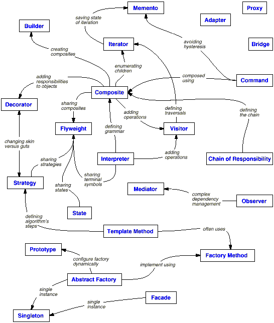
Clearly there are many ways to organize design patterns. Having multiple ways of thinking about patterns will deepen your insight into what they do, how they compare, and when to apply them.
How Design Patterns Solve Design Problems
Design patterns solve many of the day-to-day problems object-oriented designers face, and in many different ways. Here are several of these problems and how design patterns solve them.
Finding Appropriate Objects
Object-oriented programs are made up of objects. An object packages both data and the procedures that operate on that data. The procedures are typically called methods or operations. An object performs an operation when it receives a request (or message) from a client.
Requests are the only way to get an object to execute an operation. Operations are the only way to change an object's internal data. Because of these restrictions, the object's internal state is said to be encapsulated; it cannot be accessed directly, and its representation is invisible from outside the object.
The hard part about object-oriented design is decomposing a system into objects. The task is difficult because many factors come into play: encapsulation, granularity, dependency, flexibility, performance, evolution, reusability, and on and on. They all influence the decomposition, often in conflicting ways.
Object-oriented design methodologies favor many different approaches. You can write a problem statement, single out the nouns and verbs, and create corresponding classes and operations. Or you can focus on the collaborations and responsibilities in your system. Or you can model the real world and translate the objects found during analysis into design. There will always be disagreement on which approach is best.
Many objects in a design come from the analysis model. But object-oriented designs often end up with classes that have no counterparts in the real world. Some of these are low-level classes like arrays. Others are much higher-level. For example, the Composite pattern introduces an abstraction for treating objects uniformly that doesn't have a physical counterpart. Strict modeling of the real world leads to a system that reflects today's realities but not necessarily tomorrow's. The abstractions that emerge during design are key to making a design flexible.
Design patterns help you identify less-obvious abstractions and the objects that can capture them. For example, objects that represent a process or algorithm don't occur in nature, yet they are a crucial part of flexible designs. The Strategy pattern describes how to implement interchangeable families of algorithms. The State pattern represents each state of an entity as an object. These objects are seldom found during analysis or even the early stages of design; they're discovered later in the course of making a design more flexible and reusable.
Determining Object Granularity
Objects can vary tremendously in size and number. They can represent everything down to the hardware or all the way up to entire applications. How do we decide what should be an object?
Design patterns address this issue as well. The Facade pattern describes how to represent complete subsystems as objects, and the Flyweight pattern describes how to support huge numbers of objects at the finest granularities. Other design patterns describe specific ways of decomposing an object into smaller objects. Abstract Factory and Builder yield objects whose only responsibilities are creating other objects. Visitor and Command yield objects whose only responsibilities are to implement a request on another object or group of objects.
Specifying Object Interfaces
Every operation declared by an object specifies the operation's name, the objects it takes as parameters, and the operation's return value. This is known as the operation's signature. The set of all signatures defined by an object's operations is called the interface to the object. An object's interface characterizes the complete set of requests that can be sent to the object. Any request that matches a signature in the object's interface may be sent to the object.
A type is a name used to denote a particular interface. We speak of an object as having the type Window if it accepts all requests for the operations defined in the interface named Window. An object may have many types, and widely different objects can share a type. Part of an object's interface may be characterized by one type, and other parts by other types. Two objects of the same type need only share parts of their interfaces. Interfaces can contain other interfaces as subsets. We say that a type is a subtype of another if its interface contains the interface of its supertype. Often we speak of a subtype inheriting the interface of its supertype.
Interfaces are fundamental in object-oriented systems. Objects are known only through their interfaces. There is no way to know anything about an object or to ask it to do anything without going through its interface. An object's interface says nothing about its implementation—different objects are free to implement requests differently. That means two objects having completely different implementations can have identical interfaces.
When a request is sent to an object, the particular operation that's performed depends on both the request and the receiving object. Different objects that support identical requests may have different implementations of the operations that fulfill these requests. The run-time association of a request to an object and one of its operations is known as dynamic binding.
Dynamic binding means that issuing a request doesn't commit you to a particular implementation until run-time. Consequently, you can write programs that expect an object with a particular interface, knowing that any object that has the correct interface will accept the request. Moreover, dynamic binding lets you substitute objects that have identical interfaces for each other at run-time. This substitutability is known as polymorphism, and it's a key concept in object-oriented systems. It lets a client object make few assumptions about other objects beyond supporting a particular interface. Polymorphism simplifies the definitions of clients, decouples objects from each other, and lets them vary their relationships to each other at run-time.
Design patterns help you define interfaces by identifying their key elements and the kinds of data that get sent across an interface. A design pattern might also tell you what not to put in the interface. The Memento pattern is a good example. It describes how to encapsulate and save the internal state of an object so that the object can be restored to that state later. The pattern stipulates that Memento objects must define two interfaces: a restricted one that lets clients hold and copy mementos, and a privileged one that only the original object can use to store and retrieve state in the memento.
Design patterns also specify relationships between interfaces. In particular, they often require some classes to have similar interfaces, or they place constraints on the interfaces of some classes. For example, both Decorator and Proxy require the interfaces of Decorator and Proxy objects to be identical to the decorated and proxied objects. In Visitor, the Visitor interface must reflect all classes of objects that visitors can visit.
Specifying Object Implementations
So far we've said little about how we actually define an object. An object's implementation is defined by its class. The class specifies the object's internal data and representation and defines the operations the object can perform.
Our OMT-based notation (summarized in Appendix B) depicts a class as a rectangle with the class name in bold. Operations appear in normal type below the class name. Any data that the class defines comes after the operations. Lines separate the class name from the operations and the operations from the data:
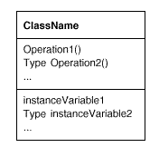
Return types and instance variable types are optional, since we don't assume a statically typed implementation language.
Objects are created by instantiating a class. The object is said to be an instance of the class. The process of instantiating a class allocates storage for the object's internal data (made up of instance variables) and associates the operations with these data. Many similar instances of an object can be created by instantiating a class.
A dashed arrowhead line indicates a class that instantiates objects of another class. The arrow points to the class of the instantiated objects.
New classes can be defined in terms of existing classes using class inheritance. When a subclass inherits from a parent class, it includes the definitions of all the data and operations that the parent class defines. Objects that are instances of the subclass will contain all data defined by the subclass and its parent classes, and they'll be able to perform all operations defined by this subclass and its parents. We indicate the subclass relationship with a vertical line and a triangle:
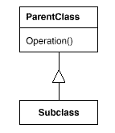
An abstract class is one whose main purpose is to define a common interface for its subclasses. An abstract class will defer some or all of its implementation to operations defined in subclasses; hence an abstract class cannot be instantiated.
The operations that an abstract class declares but doesn't implement are called abstract operations. Classes that aren't abstract are called concrete classes.
Subclasses can refine and redefine behaviors of their parent classes. More specifically, a class may override an operation defined by its parent class. Overriding gives subclasses a chance to handle requests instead of their parent classes. Class inheritance lets you define classes simply by extending other classes, making it easy to define families of objects having related functionality.
The names of abstract classes appear in slanted type to distinguish them from concrete classes. Slanted type is also used to denote abstract operations. A diagram may include pseudocode for an operation's implementation; if so, the code will appear in a dog-eared box connected by a dashed line to the operation it implements.
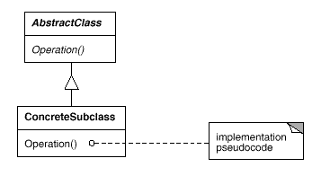
A mixin class is a class that's intended to provide an optional interface or functionality to other classes. It's similar to an abstract class in that it's not intended to be instantiated. Mixin classes require multiple inheritance:
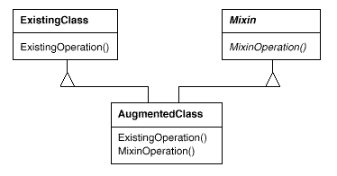
Class versus Interface Inheritance
It's important to understand the difference between an object's class and its type.
An object's class defines how the object is implemented. The class defines the object's internal state and the implementation of its operations. In contrast, an object's type only refers to its interface—the set of requests to which it can respond. An object can have many types, and objects of different classes can have the same type.
Of course, there's a close relationship between class and type. Because a class defines the operations an object can perform, it also defines the object's type. When we say that an object is an instance of a class, we imply that the object supports the interface defined by the class.
Languages like C++ and Eiffel use classes to specify both an object's type and its implementation. Smalltalk programs do not declare the types of variables; consequently, the compiler does not check that the types of objects assigned to a variable are subtypes of the variable's type. Sending a message requires checking that the class of the receiver implements the message, but it doesn't require checking that the receiver is an instance of a particular class.
It's also important to understand the difference between class inheritance and interface inheritance (or subtyping). Class inheritance defines an object's implementation in terms of another object's implementation. In short, it's a mechanism for code and representation sharing. In contrast, interface inheritance (or subtyping) describes when an object can be used in place of another.
It's easy to confuse these two concepts, because many languages don't make the distinction explicit. In languages like C++ and Eiffel, inheritance means both interface and implementation inheritance. The standard way to inherit an interface in C++ is to inherit publicly from a class that has (pure) virtual member functions. Pure interface inheritance can be approximated in C++ by inheriting publicly from pure abstract classes. Pure implementation or class inheritance can be approximated with private inheritance. In Smalltalk, inheritance means just implementation inheritance. You can assign instances of any class to a variable as long as those instances support the operation performed on the value of the variable.
Although most programming languages don't support the distinction between interface and implementation inheritance, people make the distinction in practice. Smalltalk programmers usually act as if subclasses were subtypes (though there are some well-known exceptions [Coo92]); C++ programmers manipulate objects through types defined by abstract classes.
Many of the design patterns depend on this distinction. For example, objects in a Chain of Responsibility must have a common type, but usually they don't share a common implementation. In the Composite pattern, Component defines a common interface, but Composite often defines a common implementation. Command, Observer, State, and Strategy are often implemented with abstract classes that are pure interfaces.
Programming to an Interface, not an Implementation
Class inheritance is basically just a mechanism for extending an application's functionality by reusing functionality in parent classes. It lets you define a new kind of object rapidly in terms of an old one. It lets you get new implementations almost for free, inheriting most of what you need from existing classes.
However, implementation reuse is only half the story. Inheritance's ability to define families of objects with identical interfaces (usually by inheriting from an abstract class) is also important. Why? Because polymorphism depends on it.
When inheritance is used carefully (some will say properly), all classes derived from an abstract class will share its interface. This implies that a subclass merely adds or overrides operations and does not hide operations of the parent class. All subclasses can then respond to the requests in the interface of this abstract class, making them all subtypes of the abstract class.
There are two benefits to manipulating objects solely in terms of the interface defined by abstract classes:
Clients remain unaware of the specific types of objects they use, as long as the objects adhere to the interface that clients expect.
Clients remain unaware of the classes that implement these objects. Clients only know about the abstract class(es) defining the interface.
This so greatly reduces implementation dependencies between subsystems that it leads to the following principle of reusable object-oriented design:
Program to an interface, not an implementation.
Don't declare variables to be instances of particular concrete classes. Instead, commit only to an interface defined by an abstract class. You will find this to be a common theme of the design patterns in this book.
You have to instantiate concrete classes (that is, specify a particular implementation) somewhere in your system, of course, and the creational patterns (Abstract Factory, Builder, Factory Method, Prototype, and Singleton let you do just that. By abstracting the process of object creation, these patterns give you different ways to associate an interface with its implementation transparently at instantiation. Creational patterns ensure that your system is written in terms of interfaces, not implementations.
Putting Reuse Mechanisms to Work
Most people can understand concepts like objects, interfaces, classes, and inheritance. The challenge lies in applying them to build flexible, reusable software, and design patterns can show you how.
Inheritance versus Composition
The two most common techniques for reusing functionality in object-oriented systems are class inheritance and object composition. As we've explained, class inheritance lets you define the implementation of one class in terms of another's. Reuse by subclassing is often referred to as white-box reuse. The term white-box refers to visibility: With inheritance, the internals of parent classes are often visible to subclasses.
Object composition is an alternative to class inheritance. Here, new functionality is obtained by assembling or composing objects to get more complex functionality. Object composition requires that the objects being composed have well-defined interfaces. This style of reuse is called black-box reuse, because no internal details of objects are visible. Objects appear only as black boxes.
Inheritance and composition each have their advantages and disadvantages. Class inheritance is defined statically at compile-time and is straightforward to use, since it's supported directly by the programming language. Class inheritance also makes it easier to modify the implementation being reused. When a subclass overrides some but not all operations, it can affect the operations it inherits as well, assuming they call the overridden operations.
But class inheritance has some disadvantages, too. First, you can't change the implementations inherited from parent classes at run-time, because inheritance is defined at compile-time. Second, and generally worse, parent classes often define at least part of their subclasses' physical representation. Because inheritance exposes a subclass to details of its parent's implementation, it's often said that inheritance breaks encapsulation [Sny86]. The implementation of a subclass becomes so bound up with the implementation of its parent class that any change in the parent's implementation will force the subclass to change.
Implementation dependencies can cause problems when you're trying to reuse a subclass. Should any aspect of the inherited implementation not be appropriate for new problem domains, the parent class must be rewritten or replaced by something more appropriate. This dependency limits flexibility and ultimately reusability. One cure for this is to inherit only from abstract classes, since they usually provide little or no implementation.
Object composition is defined dynamically at run-time through objects acquiring references to other objects. Composition requires objects to respect each others' interfaces, which in turn requires carefully designed interfaces that don't stop you from using one object with many others. But there is a payoff. Because objects are accessed solely through their interfaces, we don't break encapsulation. Any object can be replaced at run-time by another as long as it has the same type. Moreover, because an object's implementation will be written in terms of object interfaces, there are substantially fewer implementation dependencies.
Object composition has another effect on system design. Favoring object composition over class inheritance helps you keep each class encapsulated and focused on one task. Your classes and class hierarchies will remain small and will be less likely to grow into unmanageable monsters. On the other hand, a design based on object composition will have more objects (if fewer classes), and the system's behavior will depend on their interrelationships instead of being defined in one class.
That leads us to our second principle of object-oriented design:
Favor object composition over class inheritance.
Ideally, you shouldn't have to create new components to achieve reuse. You should be able to get all the functionality you need just by assembling existing components through object composition. But this is rarely the case, because the set of available components is never quite rich enough in practice. Reuse by inheritance makes it easier to make new components that can be composed with old ones. Inheritance and object composition thus work together.
Nevertheless, our experience is that designers overuse inheritance as a reuse technique, and designs are often made more reusable (and simpler) by depending more on object composition. You'll see object composition applied again and again in the design patterns.
Delegation
Delegation is a way of making composition as powerful for reuse as inheritance [Lie86, JZ91]. In delegation, two objects are involved in handling a request: a receiving object delegates operations to its delegate. This is analogous to subclasses deferring requests to parent classes. But with inheritance, an inherited operation can always refer to the receiving object through the this member variable in C++ and self in Smalltalk. To achieve the same effect with delegation, the receiver passes itself to the delegate to let the delegated operation refer to the receiver.
For example, instead of making class Window a subclass of Rectangle (because windows happen to be rectangular), the Window class might reuse the behavior of Rectangle by keeping a Rectangle instance variable and delegating Rectangle-specific behavior to it. In other words, instead of a Window being a Rectangle, it would have a Rectangle. Window must now forward requests to its Rectangle instance explicitly, whereas before it would have inherited those operations.
The following diagram depicts the Window class delegating its Area operation to a Rectangle instance.
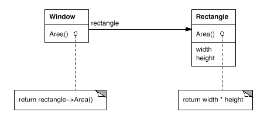
A plain arrowhead line indicates that a class keeps a reference to an instance of another class. The reference has an optional name, rectangle in this case.
The main advantage of delegation is that it makes it easy to compose behaviors at run-time and to change the way they're composed. Our window can become circular at run-time simply by replacing its Rectangle instance with a Circle instance, assuming Rectangle and Circle have the same type.
Delegation has a disadvantage it shares with other techniques that make software more flexible through object composition: Dynamic, highly parameterized software is harder to understand than more static software. There are also run-time inefficiencies, but the human inefficiencies are more important in the long run. Delegation is a good design choice only when it simplifies more than it complicates. It isn't easy to give rules that tell you exactly when to use delegation, because how effective it will be depends on the context and on how much experience you have with it. Delegation works best when it's used in highly stylized ways—that is, in standard patterns.
Several design patterns use delegation. The State, Strategy, and Visitor patterns depend on it. In the State pattern, an object delegates requests to a State object that represents its current state. In the Strategy pattern, an object delegates a specific request to an object that represents a strategy for carrying out the request. An object will only have one state, but it can have many strategies for different requests. The purpose of both patterns is to change the behavior of an object by changing the objects to which it delegates requests. In Visitor, the operation that gets performed on each element of an object structure is always delegated to the Visitor object.
Other patterns use delegation less heavily. Mediator introduces an object to mediate communication between other objects. Sometimes the Mediator object implements operations simply by forwarding them to the other objects; other times it passes along a reference to itself and thus uses true delegation. Chain of Responsibility handles requests by forwarding them from one object to another along a chain of objects. Sometimes this request carries with it a reference to the original object receiving the request, in which case the pattern is using delegation. Bridge decouples an abstraction from its implementation. If the abstraction and a particular implementation are closely matched, then the abstraction may simply delegate operations to that implementation.
Delegation is an extreme example of object composition. It shows that you can always replace inheritance with object composition as a mechanism for code reuse.
Inheritance versus Parameterized Types
Another (not strictly object-oriented) technique for reusing functionality is through parameterized types, also known as generics (Ada, Eiffel) and templates (C++). This technique lets you define a type without specifying all the other types it uses. The unspecified types are supplied as parameters at the point of use. For example, a List class can be parameterized by the type of elements it contains. To declare a list of integers, you supply the type integer as a parameter to the List parameterized type. To declare a list of String objects, you supply the String type as a parameter. The language implementation will create a customized version of the List class template for each type of element.
Parameterized types give us a third way (in addition to class inheritance and object composition) to compose behavior in object-oriented systems. Many designs can be implemented using any of these three techniques. To parameterize a sorting routine by the operation it uses to compare elements, we could make the comparison
an operation implemented by subclasses (an application of Template Method,
the responsibility of an object that's passed to the sorting routine (Strategy, or
an argument of a C++ template or Ada generic that specifies the name of the function to call to compare the elements.
There are important differences between these techniques. Object composition lets you change the behavior being composed at run-time, but it also requires indirection and can be less efficient. Inheritance lets you provide default implementations for operations and lets subclasses override them. Parameterized types let you change the types that a class can use. But neither inheritance nor parameterized types can change at run-time. Which approach is best depends on your design and implementation constraints.
None of the patterns in this book concerns parameterized types, though we use them on occasion to customize a pattern's C++ implementation. Parameterized types aren't needed at all in a language like Smalltalk that doesn't have compile-time type checking.
Relating Run-Time and Compile-Time Structures
An object-oriented program's run-time structure often bears little resemblance to its code structure. The code structure is frozen at compile-time; it consists of classes in fixed inheritance relationships. A program's run-time structure consists of rapidly changing networks of communicating objects. In fact, the two structures are largely independent. Trying to understand one from the other is like trying to understand the dynamism of living ecosystems from the static taxonomy of plants and animals, and vice versa.
Consider the distinction between object aggregation and acquaintance and how differently they manifest themselves at compile- and run-times. Aggregation implies that one object owns or is responsible for another object. Generally we speak of an object having or being part of another object. Aggregation implies that an aggregate object and its owner have identical lifetimes.
Acquaintance implies that an object merely knows of another object. Sometimes acquaintance is called association or the using relationship. Acquainted objects may request operations of each other, but they aren't responsible for each other. Acquaintance is a weaker relationship than aggregation and suggests much looser coupling between objects.
In our diagrams, a plain arrowhead line denotes acquaintance. An arrowhead line with a diamond at its base denotes aggregation:
It's easy to confuse aggregation and acquaintance, because they are often implemented in the same way. In Smalltalk, all variables are references to other objects. There's no distinction in the programming language between aggregation and acquaintance. In C++, aggregation can be implemented by defining member variables that are real instances, but it's more common to define them as pointers or references to instances. Acquaintance is implemented with pointers and references as well.
Ultimately, acquaintance and aggregation are determined more by intent than by explicit language mechanisms. The distinction may be hard to see in the compile-time structure, but it's significant. Aggregation relationships tend to be fewer and more permanent than acquaintance. Acquaintances, in contrast, are made and remade more frequently, sometimes existing only for the duration of an operation. Acquaintances are more dynamic as well, making them more difficult to discern in the source code.
With such disparity between a program's run-time and compile-time structures, it's clear that code won't reveal everything about how a system will work. The system's run-time structure must be imposed more by the designer than the language. The relationships between objects and their types must be designed with great care, because they determine how good or bad the run-time structure is.
Many design patterns (in particular those that have object scope) capture the distinction between compile-time and run-time structures explicitly. Composite and Decorator are especially useful for building complex run-time structures. Observer involves run-time structures that are often hard to understand unless you know the pattern. Chain of Responsibility also results in communication patterns that inheritance doesn't reveal. In general, the run-time structures aren't clear from the code until you understand the patterns.
Designing for Change
The key to maximizing reuse lies in anticipating new requirements and changes to existing requirements, and in designing your systems so that they can evolve accordingly.
To design the system so that it's robust to such changes, you must consider how the system might need to change over its lifetime. A design that doesn't take change into account risks major redesign in the future. Those changes might involve class redefinition and reimplementation, client modification, and retesting.
Redesign affects many parts of the software system, and unanticipated changes are invariably expensive.
Design patterns help you avoid this by ensuring that a system can change in specific ways. Each design pattern lets some aspect of system structure vary independently of other aspects, thereby making a system more robust to a particular kind of change.
Here are some common causes of redesign along with the design pattern(s) that address them:
Creating an object by specifying a class explicitly. Specifying a class name when you create an object commits you to a particular implementation instead of a particular interface. This commitment can complicate future changes. To avoid it, create objects indirectly.
Dependence on specific operations. When you specify a particular operation, you commit to one way of satisfying a request. By avoiding hard-coded requests, you make it easier to change the way a request gets satisfied both at compile-time and at run-time.
Dependence on hardware and software platform. External operating system interfaces and application programming interfaces (APIs) are different on different hardware and software platforms. Software that depends on a particular platform will be harder to port to other platforms. It may even be difficult to keep it up to date on its native platform. It's important therefore to design your system to limit its platform dependencies.
Dependence on object representations or implementations. Clients that know how an object is represented, stored, located, or implemented might need to be changed when the object changes. Hiding this information from clients keeps changes from cascading.
Algorithmic dependencies. Algorithms are often extended, optimized, and replaced during development and reuse. Objects that depend on an algorithm will have to change when the algorithm changes. Therefore algorithms that are likely to change should be isolated.
Tight coupling. Classes that are tightly coupled are hard to reuse in isolation, since they depend on each other. Tight coupling leads to monolithic systems, where you can't change or remove a class without understanding and changing many other classes. The system becomes a dense mass that's hard to learn, port, and maintain.
Loose coupling increases the probability that a class can be reused by itself and that a system can be learned, ported, modified, and extended more easily. Design patterns use techniques such as abstract coupling and layering to promote loosely coupled systems.
Extending functionality by subclassing. Customizing an object by subclassing often isn't easy. Every new class has a fixed implementation overhead (initialization, finalization, etc.). Defining a subclass also requires an in-depth understanding of the parent class. For example, overriding one operation might require overriding another. An overridden operation might be required to call an inherited operation. And subclassing can lead to an explosion of classes, because you might have to introduce many new subclasses for even a simple extension.
Object composition in general and delegation in particular provide flexible alternatives to inheritance for combining behavior. New functionality can be added to an application by composing existing objects in new ways rather than by defining new subclasses of existing classes. On the other hand, heavy use of object composition can make designs harder to understand. Many design patterns produce designs in which you can introduce customized functionality just by defining one subclass and composing its instances with existing ones.
Inability to alter classes conveniently. Sometimes you have to modify a class that can't be modified conveniently. Perhaps you need the source code and don't have it (as may be the case with a commercial class library).
Or maybe any change would require modifying lots of existing subclasses. Design patterns offer ways to modify classes in such circumstances.
These examples reflect the flexibility that design patterns can help you build into your software. How crucial such flexibility is depends on the kind of software you're building. Let's look at the role design patterns play in the development of three broad classes of software: application programs, toolkits, and frameworks.
Application Programs
If you're building an application program such as a document editor or spreadsheet, then internal reuse, maintainability, and extension are high priorities. Internal reuse ensures that you don't design and implement any more than you have to. Design patterns that reduce dependencies can increase internal reuse. Looser coupling boosts the likelihood that one class of object can cooperate with several others. For example, when you eliminate dependencies on specific operations by isolating and encapsulating each operation, you make it easier to reuse an operation in different contexts. The same thing can happen when you remove algorithmic and representational dependencies too.
Design patterns also make an application more maintainable when they're used to limit platform dependencies and to layer a system. They enhance extensibility by showing you how to extend class hierarchies and how to exploit object composition. Reduced coupling also enhances extensibility. Extending a class in isolation is easier if the class doesn't depend on lots of other classes.
Toolkits
Often an application will incorporate classes from one or more libraries of predefined classes called toolkits. A toolkit is a set of related and reusable classes designed to provide useful, general-purpose functionality. An example of a toolkit is a set of collection classes for lists, associative tables, stacks, and the like. The C++ I/O stream library is another example. Toolkits don't impose a particular design on your application; they just provide functionality that can help your application do its job. They let you as an implementer avoid recoding common functionality. Toolkits emphasize code reuse. They are the object-oriented equivalent of subroutine libraries.
Toolkit design is arguably harder than application design, because toolkits have to work in many applications to be useful. Moreover, the toolkit writer isn't in a position to know what those applications will be or their special needs.
That makes it all the more important to avoid assumptions and dependencies that can limit the toolkit's flexibility and consequently its applicability and effectiveness.
Frameworks
A framework is a set of cooperating classes that make up a reusable design for a specific class of software [Deu89, JF88]. For example, a framework can be geared toward building graphical editors for different domains like artistic drawing, music composition, and mechanical CAD [VL90, Joh92]. Another framework can help you build compilers for different programming languages and target machines [JML92]. Yet another might help you build financial modeling applications [BE93]. You customize a framework to a particular application by creating application-specific subclasses of abstract classes from the framework.
The framework dictates the architecture of your application. It will define the overall structure, its partitioning into classes and objects, the key responsibilities thereof, how the classes and objects collaborate, and the thread of control. A framework predefines these design parameters so that you, the application designer/implementer, can concentrate on the specifics of your application. The framework captures the design decisions that are common to its application domain. Frameworks thus emphasize design reuse over code reuse, though a framework will usually include concrete subclasses you can put to work immediately.
Reuse on this level leads to an inversion of control between the application and the software on which it's based. When you use a toolkit (or a conventional subroutine library for that matter), you write the main body of the application and call the code you want to reuse. When you use a framework, you reuse the main body and write the code it calls. You'll have to write operations with particular names and calling conventions, but that reduces the design decisions you have to make.
Not only can you build applications faster as a result, but the applications have similar structures. They are easier to maintain, and they seem more consistent to their users. On the other hand, you lose some creative freedom, since many design decisions have been made for you.
If applications are hard to design, and toolkits are harder, then frameworks are hardest of all. A framework designer gambles that one architecture will work for all applications in the domain. Any substantive change to the framework's design would reduce its benefits considerably, since the framework's main contribution to an application is the architecture it defines. Therefore it's imperative to design the framework to be as flexible and extensible as possible.
Furthermore, because applications are so dependent on the framework for their design, they are particularly sensitive to changes in framework interfaces. As a framework evolves, applications have to evolve with it. That makes loose coupling all the more important; otherwise even a minor change to the framework will have major repercussions.
The design issues just discussed are most critical to framework design. A framework that addresses them using design patterns is far more likely to achieve high levels of design and code reuse than one that doesn't. Mature frameworks usually incorporate several design patterns. The patterns help make the framework's architecture suitable to many different applications without redesign.
An added benefit comes when the framework is documented with the design patterns it uses [BJ94]. People who know the patterns gain insight into the framework faster. Even people who don't know the patterns can benefit from the structure they lend to the framework's documentation. Enhancing documentation is important for all types of software, but it's particularly important for frameworks. Frameworks often pose a steep learning curve that must be overcome before they're useful. While design patterns might not flatten the learning curve entirely, they can make it less steep by making key elements of the framework's design more explicit.
Because patterns and frameworks have some similarities, people often wonder how or even if they differ. They are different in three major ways:
Design patterns are more abstract than frameworks. Frameworks can be embodied in code, but only examples of patterns can be embodied in code. A strength of frameworks is that they can be written down in programming languages and not only studied but executed and reused directly. In contrast, the design patterns in this book have to be implemented each time they're used. Design patterns also explain the intent, trade-offs, and consequences of a design.
Design patterns are smaller architectural elements than frameworks. A typical framework contains several design patterns, but the reverse is never true.
Design patterns are less specialized than frameworks. Frameworks always have a particular application domain. A graphical editor framework might be used in a factory simulation, but it won't be mistaken for a simulation framework. In contrast, the design patterns in this catalog can be used in nearly any kind of application. While more specialized design patterns than ours are certainly possible (say, design patterns for distributed systems or concurrent programming), even these wouldn't dictate an application architecture like a framework would.
Frameworks are becoming increasingly common and important. They are the way that object-oriented systems achieve the most reuse. Larger object-oriented applications will end up consisting of layers of frameworks that cooperate with each other. Most of the design and code in the application will come from or be influenced by the frameworks it uses.
How to Select a Design Pattern
With more than 20 design patterns in the catalog to choose from, it might be hard to find the one that addresses a particular design problem, especially if the catalog is new and unfamiliar to you. Here are several different approaches to finding the design pattern that's right for your problem:
Consider how design patterns solve design problems.Section 1.6 discusses how design patterns help you find appropriate objects, determine object granularity, specify object interfaces, and several other ways in which design patterns solve design problems. Referring to these discussions can help guide your search for the right pattern.
Scan Intent sections.Section 1.4 lists the Intent sections from all the patterns in the catalog. Read through each pattern's intent to find one or more that sound relevant to your problem. You can use the classification scheme presented in Table 1.1 to narrow your search.
Study how patterns interrelate.Figure 1.1 shows relationships between design patterns graphically. Studying these relationships can help direct you to the right pattern or group of patterns.
Study patterns of like purpose. The catalog has three chapters, one for creational patterns, another for structural patterns, and a third for behavioral patterns. Each chapter starts off with introductory comments on the patterns and concludes with a section that compares and contrasts them. These sections give you insight into the similarities and differences between patterns of like purpose.
Examine a cause of redesign. Look at the causes of redesign starting on Section Designing for Change to see if your problem involves one or more of them. Then look at the patterns that help you avoid the causes of redesign.
Consider what should be variable in your design. This approach is the opposite of focusing on the causes of redesign. Instead of considering what might force a change to a design, consider what you want to be able to change without redesign. The focus here is on encapsulating the concept that varies, a theme of many design patterns. Table 1.2 lists the design aspect(s) that design patterns let you vary independently, thereby letting you change them without redesign.
Table 1.2: Design aspects that design patterns let you vary
operations that can be applied to object(s) without changing their class(es)
How to Use a Design Pattern
Once you've picked a design pattern, how do you use it? Here's a step-by-step approach to applying a design pattern effectively:
Read the pattern once through for an overview. Pay particular attention to the Applicability and Consequences sections to ensure the pattern is right for your problem.
Go back and study the Structure, Participants, and Collaborations sections. Make sure you understand the classes and objects in the pattern and how they relate to one another.
Look at the Sample Code section to see a concrete example of the pattern in code. Studying the code helps you learn how to implement the pattern.
Choose names for pattern participants that are meaningful in the application context. The names for participants in design patterns are usually too abstract to appear directly in an application. Nevertheless, it's useful to incorporate the participant name into the name that appears in the application. That helps make the pattern more explicit in the implementation. For example, if you use the Strategy pattern for a text compositing algorithm, then you might have classes SimpleLayoutStrategy or TeXLayoutStrategy.
Define the classes. Declare their interfaces, establish their inheritance relationships, and define the instance variables that represent data and object references. Identify existing classes in your application that the pattern will affect, and modify them accordingly.
Define application-specific names for operations in the pattern. Here again, the names generally depend on the application. Use the responsibilities and collaborations associated with each operation as a guide. Also, be consistent in your naming conventions. For example, you might use the Create- prefix consistently to denote a factory method.
Implement the operations to carry out the responsibilities and collaborations in the pattern. The Implementation section offers hints to guide you in the implementation. The examples in the Sample Code section can help as well.
These are just guidelines to get you started. Over time you'll develop your own way of working with design patterns.
No discussion of how to use design patterns would be complete without a few words on how not to use them. Design patterns should not be applied indiscriminately. Often they achieve flexibility and variability by introducing additional levels of indirection, and that can complicate a design and/or cost you some performance.
A design pattern should only be applied when the flexibility it affords is actually needed. The Consequences sections are most helpful when evaluating a pattern's benefits and liabilities.
A Case Study: Design a Document Editor
This chapter presents a case study in the design of a What-You-See-Is-What-You-Get (or WYSIWYG) document editor called Lexi.1 We'llsee how design patterns capture solutions to design problems inLexi and applications like it. By the end of this chapter you willhave gained experience with eight patterns, learning them byexample.
Figure 2.1 depicts Lexi's user interface. AWYSIWYG representation of the document occupies the large rectangulararea in the center. The document can mix text and graphics freely ina variety of formatting styles. Surrounding the document are theusual pull-down menus and scroll bars, plus a collection of page icons for jumping to a particular page in the document.
Figure 2.1: Lexi's user interface
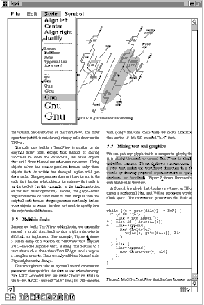
Design Problems
We will examine seven problems in Lexi's design:
Document structure. The choice of internal representation for the document affects nearlyevery aspect of Lexi's design. All editing, formatting, displaying, and textual analysis will require traversing the representation. Theway we organize this information will impact the design of the rest ofthe application.
Formatting. How does Lexi actually arrange text and graphics into lines and columns? What objects are responsible for carrying out different formatting policies? How do these policies interact with thedocument's internal representation?
Embellishing the user interface. Lexi's user interface includes scroll bars, borders, and drop shadowsthat embellish the WYSIWYG document interface. Such embellishments arelikely to change as Lexi's user interface evolves. Hence it'simportant to be able to add and remove embellishments easily withoutaffecting the rest of the application.
Supporting multiple look-and-feel standards. Lexi should adapt easily to different look-and-feel standardssuch as Motif and Presentation Manager (PM) without major modification.
Supporting multiple window systems. Different look-and-feel standards are usually implemented on differentwindow systems. Lexi's design should be as independent of the windowsystem as possible.
User operations. Users control Lexi through various user interfaces, includingbuttons and pull-down menus. The functionality behind theseinterfaces is scattered throughout the objects in the application. The challenge here is to provide a uniform mechanism both foraccessing this scattered functionality and for undoing its effects.
Spelling checking and hyphenation. How does Lexi support analytical operations such as checking formisspelled words and determining hyphenation points? How can weminimize the number of classes we have to modify to add a newanalytical operation?
We discuss these design problems in the sections that follow. Eachproblem has an associated set of goals plus constraints on how weachieve those goals. We explain the goals and constraints in detailbefore proposing a specific solution. The problem and its solutionwill illustrate one or more design patterns. The discussion for eachproblem will culminate in a brief introduction to the relevantpatterns.
Document Structure
A document is ultimately just an arrangement of basic graphicalelements such as characters, lines, polygons, and other shapes. Theseelements capture the total information content of the document. Yet anauthor often views these elements not in graphical terms but in termsof the document's physical structure—lines, columns, figures, tables, and other substructures.2 In turn, these substructures have substructures of theirown, and so on.
Lexi's user interface should let users manipulate thesesubstructures directly. For example, a user should be able to treat adiagram as a unit rather than as a collection of individual graphicalprimitives. The user should be able to refer to a table as a whole, not as an unstructured mass of text and graphics. That helps make theinterface simple and intuitive. To give Lexi's implementationsimilar qualities, we'll choose an internal representation thatmatches the document's physical structure.
In particular, the internal representation should support thefollowing:
Maintaining the document's physical structure, that is, thearrangement of text and graphics into lines, columns, tables, etc.
Generating and presenting the document visually.
Mapping positions on the display to elements in the internalrepresentation. This lets Lexi determine what the user isreferring to when he points to something in the visual representation.
In addition to these goals are some constraints. First, we shouldtreat text and graphics uniformly. The application's interface letsthe user embed text within graphics freely and vice versa. We shouldavoid treating graphics as a special case of text or text as a specialcase of graphics; otherwise we'll end up with redundant formatting and manipulation mechanisms. One set of mechanisms should suffice forboth text and graphics.
Second, our implementation shouldn't have to distinguish betweensingle elements and groups of elements in the internal representation. Lexi should be able to treat simple and complex elementsuniformly, thereby allowing arbitrarily complex documents. The tenthelement in line five of column two, for instance, could be a singlecharacter or an intricate diagram with many subelements. As long as weknow this element can draw itself and specify its dimensions, itscomplexity has no bearing on how and where it should appear on thepage.
Opposing the second constraint, however, is the need to analyze thetext for such things as spelling errors and potential hyphenationpoints. Often we don't care whether the element of a line is a simpleor complex object. But sometimes an analysis depends on the objectsbeing analyzed. It makes little sense, for example, to check thespelling of a polygon or to hyphenate it. The internalrepresentation's design should take this and other potentiallyconflicting constraints into account.
Recursive Composition
A common way to represent hierarchically structured information isthrough a technique called recursive composition, which entails building increasingly complex elements out of simpler ones. Recursive composition gives us a way to compose a document out of simple graphical elements. As a first step, we can tile a set of characters and graphics from left to right to form a line in thedocument. Then multiple lines can be arranged to form a column, multiple columns can form a page, and so on (see Figure 2.2).
Figure 2.2: Recursive composition of text and graphics
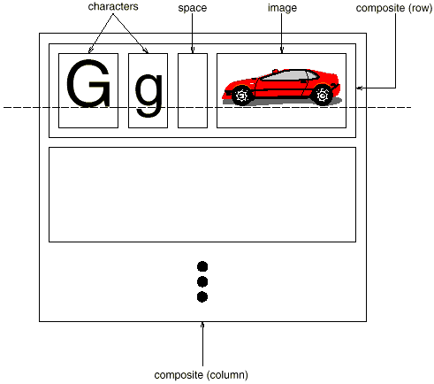
We can represent this physical structure by devoting an object to eachimportant element. That includes not just the visible elements likethe characters and graphics but the invisible, structural elements aswell—the lines and the column. The result is the object structureshown in Figure 2.3.
Figure 2.3: Object structure for recursive composition oftext and graphics
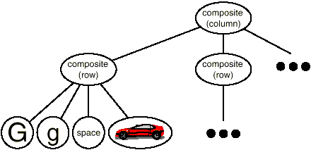
By using an object for each character and graphical element in thedocument, we promote flexibility at the finest levels of Lexi's design. We can treat text and graphics uniformly with respect to howthey are drawn, formatted, and embedded within each other. We canextend Lexi to support new character sets without disturbing other functionality. Lexi's object structure mimics the document'sphysical structure.
This approach has two important implications. The first is obvious:The objects need corresponding classes. The second implication, whichmay be less obvious, is that these classes must have compatibleinterfaces, because we want to treat the objects uniformly. The way tomake interfaces compatible in a language like C++ is to relate theclasses through inheritance.
Glyphs
We'll define a Glyph abstract class for allobjects that can appear in a document structure.3 Its subclasses define bothprimitive graphical elements (like characters and images) and structural elements (like rows and columns). Figure 2.4 depicts a representative partof the Glyph class hierarchy, and Table 2.1 presents the basic glyph interfacein more detail using C++ notation.4
Figure 2.4: Partial Glyph class hierarchy
Table 2.1: Basic glyph interface
Responsibility
Operations
appearance
virtual void Draw(Window*)
virtual void Bounds(Rect&)
hit detection
virtual bool Intersects(const Point&)
structure
virtual void Insert(Glyph*, int)
virtual void Remove(Glyph*)
virtual Glyph* Child(int)
virtual Glyph* Parent()
Glyphs have three basic responsibilities. They know (1) how to drawthemselves, (2) what space they occupy, and (3) their children and parent.
Glyph subclasses redefine the Draw operation to renderthemselves onto a window. They are passed a reference to a Windowobject in the call to Draw. The Window class definesgraphics operations for rendering text and basic shapes in a window on thescreen. A Rectangle subclass of Glyph might redefineDraw as follows:
where _x0, _y0, _x1, and _y1 are data members of Rectangle that define two opposing corners ofthe rectangle. DrawRect is the Window operation that makesthe rectangle appear on the screen.
A parent glyph often needs to know how much space a child glyph occupies, for example, to arrange it and other glyphs in a line so that none overlaps(as shown in Figure 2.3). The Bounds operation returns the rectangular area that the glyph occupies. It returns the opposite corners of the smallest rectangle thatcontains the glyph. Glyph subclasses redefine this operation to return therectangular area in which they draw.
The Intersects operation returns whether a specified pointintersects the glyph. Whenever the user clicks somewhere in thedocument, Lexi calls this operation to determine which glyph orglyph structure is under the mouse. The Rectangle class redefinesthis operation to compute the intersection of the rectangle and thegiven point.
Because glyphs can have children, we need a common interface toadd, remove, and access those children. For example, a Row's childrenare the glyphs it arranges into a row. The Insertoperation inserts a glyph at a position specified by an integer index.5 The Remove operation removes a specified glyph if it is indeed a child.
The Child operation returns the child (if any) at the givenindex. Glyphs like Row that can have children should use Childinternally instead of accessing the child data structure directly. That wayyou won't have to modify operations like Draw that iteratethrough the children when you change the data structure from, say, an arrayto a linked list. Similarly, Parent provides a standard interfaceto the glyph's parent, if any. Glyphs in Lexi store a reference totheir parent, and their Parent operation simply returns thisreference.
Composite Pattern
Recursive composition is good for more than just documents. We can useit to represent any potentially complex, hierarchical structure. The Composite pattern captures the essence ofrecursive composition in object-oriented terms. Now would be a goodtime to turn to that pattern and study it, referring back to thisscenario as needed.
Formatting
We've settled on a way to represent the document's physical structure. Next, we need to figure out how to construct a particular physical structure, one that corresponds to a properlyformatted document. Representation and formatting are distinct: Theability to capture the document's physical structure doesn't tell ushow to arrive at a particular structure. This responsibility restsmostly on Lexi. It must break text into lines, lines into columns, and so on, taking into account the user's higher-level desires. For example, the user might want to vary margin widths, indentation, and tabulation; single or double space; and probably many other formattingconstraints.6 Lexi's formatting algorithm must take all of these into account.
By the way, we'll restrict formatting to mean breaking a collection ofglyphs into lines. In fact, we'll use the terms formatting and linebreaking interchangeably. The techniques we'll discuss applyequally well to breaking lines into columns and to breaking columns intopages.
Encapsulating the Formatting Algorithm
The formatting process, with all its constraints and details, isn't easy toautomate. There are many approaches to the problem, and people have come upwith a variety of formatting algorithms with different strengths and weaknesses. Because Lexi is a WYSIWYG editor, an important trade-off toconsider is the balance between formatting quality and formatting speed. We want generally good response from the editor without sacrificing how goodthe document looks. This trade-off is subject to many factors, not all ofwhich can be ascertained at compile-time. For example, the user mighttolerate slightly slower response in exchange for better formatting. Thattrade-off might make an entirely different formatting algorithm moreappropriate than the current one. Another, more implementation-driventrade-off balances formatting speed and storage requirements: It may bepossible to decrease formatting time by caching more information.
Because formatting algorithms tend to be complex, it's also desirable to keep them well-contained or—better yet—completely independentof the document structure. Ideally we could add a new kind of Glyphsubclass without regard to the formatting algorithm. Conversely, adding a new formatting algorithm shouldn't require modifying existingglyphs.
These characteristics suggest we should design Lexi so that it'seasy to change the formatting algorithm at least at compile-time, ifnot at run-time as well. We can isolate the algorithm and make iteasily replaceable at the same time by encapsulating it in an object. More specifically, we'll define a separate class hierarchy for objects that encapsulate formatting algorithms. The root of the hierarchy willdefine an interface that supports a wide range of formatting algorithms, and each subclass will implement the interface to carryout a particular algorithm. Then we can introduce a Glyph subclassthat will structure its children automatically using a given algorithmobject.
Compositor and Composition
We'll define a Compositor class for objectsthat can encapsulate a formatting algorithm. The interface (Table 2.2) letsthe compositor know what glyphs to format and whento do the formatting. The glyphs it formats are the children ofa special Glyph subclass called Composition. Acomposition gets an instance of a Compositor subclass (specializedfor a particular linebreaking algorithm) when it is created, and it tells the compositor to Compose its glyphs whennecessary, for example, when the user changes a document. Figure 2.5 depicts the relationships between the Composition and Compositor classes.
Table 2.2: Basic compositor interface
Responsibility
Operations
what to format
void SetComposition(Composition*)
when to format
virtual void Compose()
Figure 2.5: Composition and Compositor class relationships
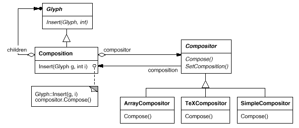
An unformatted Composition object contains only the visibleglyphs that make up the document's basic content. It doesn't containglyphs that determine the document's physical structure, such asRow and Column. The composition is in this state just after it'screated and initialized with the glyphs it should format. Whenthe composition needs formatting, it calls its compositor's Compose operation. The compositor in turn iteratesthrough the composition's children and inserts new Row and Columnglyphs according to its linebreaking algorithm.7 Figure 2.6 shows the resulting objectstructure. Glyphs that the compositor created and inserted intothe object structure appear with gray backgrounds in the figure.
Each Compositor subclass can implement a different linebreaking algorithm. For example, a SimpleCompositor might do a quick pass without regard forsuch esoterica as the document's color. Good color means having an evendistribution of text and whitespace. A TeXCompositor would implement thefull TeX algorithm [Knu84], which takes things like color into accountin exchange for longer formatting times.
The Compositor-Composition class split ensures a strong separationbetween code that supports the document's physical structure and thecode for different formatting algorithms. We can add new Compositorsubclasses without touching the glyph classes, and vice versa. Infact, we can change the linebreaking algorithm at run-time by adding asingle SetCompositor operation to Composition's basic glyphinterface.
Strategy Pattern
Encapsulating an algorithm in an object is the intent of the Strategy pattern. The key participants in thepattern are Strategy objects (which encapsulate different algorithms) and the context in which they operate. Compositors are strategies;they encapsulate different formatting algorithms. A composition is thecontext for a compositor strategy.
The key to applying the Strategy pattern is designing interfaces forthe strategy and its context that are general enough to support arange of algorithms. You shouldn't have to change the strategy orcontext interface to support a new algorithm. In our example, thebasic Glyph interface's support for child access, insertion, and removal is general enough to let Compositor subclasses change thedocument's physical structure, regardless of the algorithm they use todo it. Likewise, the Compositor interface gives compositions whateverthey need to initiate formatting.
Embellishing the User Interface
We consider two embellishments in Lexi's user interface. Thefirst adds a border around the text editing area to demarcate the pageof text. The second adds scroll bars that let the user view differentparts of the page. To make it easy to add and remove theseembellishments (especially at run-time), we shouldn't use inheritanceto add them to the user interface. We achieve the most flexibilityif other user interface objects don't even know the embellishments arethere. That will let us add and remove the embellishments withoutchanging other classes.
Transparent Enclosure
From a programming point of view, embellishing the user interface involves extending existing code. Using inheritance to do such extension precludesrearranging embellishments at run-time, but an equally serious problem is the explosion of classes that can result from an inheritance-basedapproach.
We could add a border to Composition by subclassing it to yield a BorderedComposition class. Or we could add a scrolling interface inthe same way to yield a ScrollableComposition. If we want both scrollbars and a border, we might produce a BorderedScrollableComposition, and so forth. In the extreme, we end up with a class for everypossible combination of embellishments, a solution that quicklybecomes unworkable as the variety of embellishments grows.
Object composition offers a potentially more workable and flexibleextension mechanism. But what objects do we compose? Since we knowwe're embellishing an existing glyph, we could make the embellishmentitself an object (say, an instance of class Border). Thatgives us two candidates for composition, the glyph and the border. Thenext step is to decide who composes whom. We could have the bordercontain the glyph, which makes sense given that the border willsurround the glyph on the screen. Or we could do the opposite—putthe border into the glyph—but then we must make modifications to thecorresponding Glyph subclass to make it aware of the border. Our firstchoice, composing the glyph in the border, keeps the border-drawingcode entirely in the Border class, leaving other classes alone.
What does the Border class look like? The fact that borders have anappearance suggests they should actually be glyphs; that is, Bordershould be a subclass of Glyph. But there's a more compelling reasonfor doing this: Clients shouldn't care whether glyphs have borders ornot. They should treat glyphs uniformly. When clients tell a plain, unbordered glyph to draw itself, it should do so withoutembellishment. If that glyph is composed in a border, clientsshouldn't have to treat the border containing the glyph anydifferently; they just tell it to draw itself as they told the plainglyph before. This implies that the Border interface matches the Glyphinterface. We subclass Border from Glyph to guarantee thisrelationship.
All this leads us to the concept of transparent enclosure, which combines the notions of (1) single-child (orsingle-component) composition and (2) compatibleinterfaces. Clients generally can't tell whether they're dealing withthe component or its enclosure (i.e., the child's parent), especially if the enclosure simply delegates all its operations to itscomponent. But the enclosure can also augment the component'sbehavior by doing work of its own before and/or after delegating anoperation. The enclosure can also effectively add state to thecomponent. We'll see how next.
Monoglyph
We can apply the concept of transparent enclosure to all glyphs thatembellish other glyphs. To make this concept concrete, we'll define asubclass of Glyph called MonoGlyph to serve as an abstractclass for embellishment glyphs, likeBorder (see Figure 2.7). MonoGlyph stores a reference to a component and forwards all requests to it.
Figure 2.7: MonoGlyph class relationships
That makes MonoGlyph totally transparent to clients by default. For example, MonoGlyph implements the Draw operation like this:
MonoGlyph subclasses reimplement at least one of these forwardingoperations. Border::Draw, for instance, first invokes the parentclass operation MonoGlyph::Draw on the component to let thecomponent do its part—that is, draw everything but the border. ThenBorder::Draw draws the border by calling a privateoperation called DrawBorder, the details of which we'llomit:
Notice how Border::Draw effectively extends the parentclass operation to draw the border. This is in contrast to merelyreplacing the parent class operation, which would omit the call toMonoGlyph::Draw.
Another MonoGlyph subclass appears in Figure 2.7. Scroller is a MonoGlyph that draws its component in differentlocations based on the positions of two scroll bars, which it adds asembellishments. When Scroller draws its component, it tells thegraphics system to clip to its bounds. Clipping parts of the componentthat are scrolled out of view keeps them from appearing on the screen.
Now we have all the pieces we need to add a border and a scrollinginterface to Lexi's text editing area. We compose the existingComposition instance in a Scroller instance to add the scrollinginterface, and we compose that in a Border instance. The resultingobject structure appears in Figure 2.8.
Figure 2.8: Embellished object structure
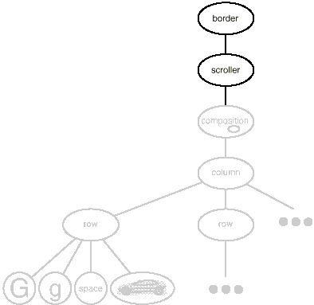
Note that we can reverse the order of composition, putting thebordered composition into the Scroller instance. In that case theborder would be scrolled along with the text, which may or may not bedesirable. The point is, transparent enclosure makes it easy toexperiment with different alternatives, and it keeps clients free ofembellishment code.
Note also how the border composes one glyph, not two or more. This isunlike compositions we've defined so far, in which parent objects wereallowed to have arbitrarily many children. Here, putting a borderaround something implies that something is singular. We couldassign a meaning to embellishing more than one object at a time, butthen we'd have to mix many kinds of composition in with the notion ofembellishment: row embellishment, column embellishment, and so forth. That won't help us, since we already have classes to do those kinds ofcompositions. So it's better to use existing classes for compositionand add new classes to embellish the result. Keeping embellishmentindependent of other kinds of composition both simplifies theembellishment classes and reduces their number. It also keeps us fromreplicating existing composition functionality.
Decorator Pattern
The Decorator pattern captures class and objectrelationships that support embellishment by transparent enclosure. The term embellishment actually has broader meaning than whatwe've considered here. In the Decorator pattern, embellishment refers to anything that adds responsibilities to an object. We can thinkfor example of embellishing an abstract syntax tree with semanticactions, a finite state automaton with new transitions, or a networkof persistent objects with attribute tags. Decorator generalizes the approach we've used in Lexi to make it more widely applicable.
Supporting Multiple Look-and-Feel Standards
Achieving portability across hardware and software platforms is amajor problem in system design. Retargeting Lexi to a newplatform shouldn't require a major overhaul, or it wouldn't be worthretargeting. We should make porting as easy as possible.
One obstacle to portability is the diversity of look-and-feel standards, which are intended to enforce uniformity between applications. Thesestandards define guidelines for how applications appear and react to theuser. While existing standards aren't that different from each other, people certainly won't confuse one for the other—Motif applications don'tlook and feel exactly like their counterparts on other platforms, and viceversa. An application that runs on more than one platform must conform tothe user interface style guide on each platform.
Our design goals are to make Lexi conform to multiple existinglook-and-feel standards and to make it easy to add support for newstandards as they (invariably) emerge. We also want our design tosupport the ultimate in flexibility: changing Lexi's look and feelat run-time.
Abstracting Object Creation
Everything we see and interact with in Lexi's user interface is aglyph composed in other, invisible glyphs like Row and Column. Theinvisible glyphs compose visible ones like Button and Character and laythem out properly. Style guides have much to say about the look and feel of so-called widgets, another term for visible glyphs likebuttons, scroll bars, and menus that act as controlling elements in auser interface. Widgets might use simpler glyphs such as characters, circles, rectangles, and polygons to present data.
We'll assume we have two sets of widget glyph classes with which toimplement multiple look-and-feel standards:
A set of abstract Glyph subclasses for each category of widgetglyph. For example, an abstract class ScrollBar will augment the basicglyph interface to add general scrolling operations; Button is anabstract class that adds button-oriented operations; and so on.
A set of concrete subclasses for each abstract subclass thatimplement different look-and-feel standards. For example, ScrollBarmight have MotifScrollBar and PMScrollBar subclasses that implementMotif and Presentation Manager-style scroll bars, respectively.
Lexi must distinguish between widget glyphs for different look-and-feelstyles. For example, when Lexi needs to put a button in its interface, it must instantiate a Glyph subclass for the right style of button(MotifButton, PMButton, MacButton, etc.).
It's clear that Lexi's implementation can't do this directly, say, using a constructor call in C++. That would hard-code the button of aparticular style, making it impossible to select the style atrun-time. We'd also have to track down and change every suchconstructor call to port Lexi to another platform. And buttons areonly one of a variety of widgets in Lexi's user interface. Littering our code with constructor calls to specific look-and-feelclasses yields a maintenance nightmare—miss just one, and you couldend up with a Motif menu in the middle of your Mac application.
Lexi needs a way to determine the look-and-feel standard that's beingtargeted in order to create the appropriate widgets. Not only must weavoid making explicit constructor calls; we must also be able toreplace an entire widget set easily. We can achieve both by abstracting the process of object creation. An example willillustrate what we mean.
Factories and Product Classes
Normally we might create an instance of a Motif scroll bar glyph with thefollowing C++ code:
ScrollBar*sb=newMotifScrollBar;
This is the kind of code to avoid if you want to minimizeLexi's look-and-feel dependencies. But suppose weinitialize sb as follows:
ScrollBar*sb=guiFactory->CreateScrollBar();
where guiFactory is an instance of a MotifFactory class. CreateScrollBar returns a new instance of the proper ScrollBar subclass for thelook and feel desired, Motif in this case. As far as clients areconcerned, the effect is the same as calling the MotifScrollBarconstructor directly. But there's a crucial difference: There'sno longer anything in the code that mentions Motif by name. TheguiFactory object abstracts the process of creatingnot just Motif scroll bars but scroll bars for anylook-and-feel standard. And guiFactory isn't limitedto producing scroll bars. It can manufacture a full range of widgetglyphs, including scroll bars, buttons, entry fields, menus, and so forth.
All this is possible because MotifFactory is a subclass of GUIFactory, an abstract class that defines ageneral interface for creating widget glyphs. It includes operationslike CreateScrollBar and CreateButtonfor instantiating different kinds of widget glyphs. Subclasses ofGUIFactory implement these operations to return glyphs such asMotifScrollBar and PMButton that implement a particular look and feel. Figure 2.9 showsthe resulting class hierarchy for guiFactory objects.
Figure 2.9: GUIFactory class hierarchy
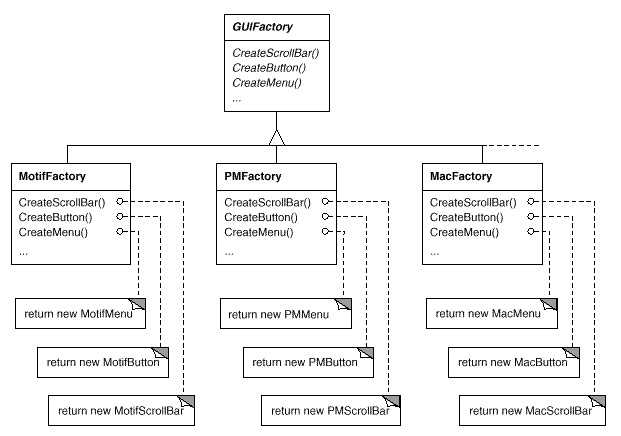
We say that factories create product objects. Moreover, the products that a factory produces are related to oneanother; in this case, the products are all widgets for the samelook and feel. Figure 2.10 shows some of the product classes needed to make factories workfor widget glyphs.
Figure 2.10: Abstract product classes and concrete subclasses
The last question we have to answer is, Where does the GUIFactoryinstance come from? The answer is, Anywhere that's convenient. Thevariable guiFactory could be a global, a static member of awell-known class, or even a local variable if the entire user interface iscreated within one class or function. There's even a design pattern,Singleton, for managing well-known, one-of-a-kindobjects like this. The important thing, though, is to initializeguiFactory at a point in the program before it's ever usedto create widgets but after it's clear which look and feel isdesired.
If the look and feel is known at compile-time, then guiFactorycan be initialized with a simple assignment of a new factory instanceat the beginning of the program:
GUIFactory*guiFactory=newMotifFactory;
If the user can specify the look and feel with a string name atstartup time, then the code to create the factory might be
GUIFactory*guiFactory;constchar*styleName=getenv("LOOK_AND_FEEL");// user or environment supplies this at startup
if(strcmp(styleName,"Motif")==0){guiFactory=newMotifFactory;}elseif(strcmp(styleName,"Presentation_Manager")==0){guiFactory=newPMFactory;}else{guiFactory=newDefaultGUIFactory;}
There are more sophisticated ways to select the factory at run-time. For example, you could maintain a registry that maps strings tofactory objects. That lets you register instances of new factorysubclasses without modifying existing code, as the preceding approach requires. And you don't have to link all platform-specific factoriesinto the application. That's important, because it might not bepossible to link a MotifFactory on a platform that doesn't supportMotif.
But the point is that once we've configured the application with theright factory object, its look and feel is set from then on. If wechange our minds, we can reinitialize guiFactory with afactory for a different look and feel and then reconstruct theinterface. Regardless of how and when we decide to initializeguiFactory, we know that once we do, the application cancreate the appropriate look and feel without modification.
Abstract Factory Pattern
Factories and products are the key participants in the Abstract Factory pattern. This pattern captures howto create families of related product objects without instantiatingclasses directly. It's most appropriate when the number and generalkinds of product objects stay constant, and there are differences inspecific product families. We choose between families by instantiatinga particular concrete factory and using it consistently to createproducts thereafter. We can also swap entire families of products byreplacing the concrete factory with an instance of a different one. The Abstract Factory pattern's emphasis on families of productsdistinguishes it from other creational patterns, which involve only onekind of product object.
Supporting Multiple Window Systems
Look and feel is just one of many portability issues. Another is thewindowing environment in which Lexi runs. A platform's window systemcreates the illusion of multiple overlapping windows on a bitmappeddisplay. It manages screen space for windows and routes input to them fromthe keyboard and mouse. Several important and largely incompatible windowsystems exist today (e.g., Macintosh, Presentation Manager, Windows, X). We'd like Lexi to run on as many of them as possible for exactly thesame reasons we support multiple look-and-feel standards.
Can We Use an Abstract Factory?
At first glance this may look like another opportunity to apply theAbstract Factory pattern. But the constraints for window system portabilitydiffer significantly from those for look-and-feel independence.
In applying the Abstract Factory pattern, we assumed we would definethe concrete widget glyph classes for each look-and-feel standard. That meant we could derive each concrete product for a particularstandard (e.g., MotifScrollBar and MacScrollBar) from an abstractproduct class (e.g., ScrollBar). But suppose we already have severalclass hierarchies from different vendors, one for each look-and-feelstandard. Of course, it's highly unlikely these hierarchies arecompatible in any way. Hence we won't have a common abstract productclass for each kind of widget (ScrollBar, Button, Menu, etc.)—and theAbstract Factory pattern won't work without those crucial classes. We have to make the different widget hierarchies adhere to a commonset of abstract product interfaces. Only then could we declare theCreate... operations properly in our abstract factory'sinterface.
We solved this problem for widgets by developing our own abstract and concrete product classes. Now we're faced with a similar problem whenwe try to make Lexi work on existing window systems; namely, different window systems have incompatible programming interfaces. Things are a bit tougher this time, though, because we can't afford toimplement our own nonstandard window system.
But there's a saving grace. Like look-and-feel standards, windowsystem interfaces aren't radically different from one another, becauseall window systems do generally the same thing. We need a uniform setof windowing abstractions that lets us take different window systemimplementations and slide any one of them under a common interface.
Encapsulating Implementation Dependencies
In Section 2.2 we introduced a Window class for displaying a glyph or glyphstructure on the display. We didn't specify the window system thatthis object worked with, because the truth is that it doesn't comefrom any particular window system. The Window class encapsulatesthe things windows tend to do across window systems:
They provide operations for drawing basic geometric shapes.
They can iconify and de-iconify themselves.
They can resize themselves.
They can (re)draw their contents on demand, for example, when theyare de-iconified or when an overlapped and obscured portion of theirscreen space is exposed.
The Window class must span the functionality of windows from differentwindow systems. Let's consider two extreme philosophies:
Intersection of functionality. The Window class interface provides only functionality that's commonto all window systems. The problem with this approach is thatour Window interface winds up being only as powerful as the leastcapable window system. We can't take advantage of more advancedfeatures even if most (but not all) window systems support them.
Union of functionality. Create an interface that incorporates the capabilities of allexisting systems. The trouble here is that the resulting interface maywell be huge and incoherent. Besides, we'll have to change it (andLexi, which depends on it) anytime a vendor revises its windowsystem interface.
Neither extreme is a viable solution, so our design will fallsomewhere between the two. The Window class will provide a convenientinterface that supports the most popular windowing features. BecauseLexi will deal with this class directly, the Window class must alsosupport the things Lexi knows about, namely, glyphs. That meansWindow's interface must include a basic set of graphics operationsthat lets glyphs draw themselves in the window. Table 2.3 gives a sampling of the operations in the Window class interface.
Table 2.3: Window class interface
Responsibility
Operations
window management
virtual void Redraw()
virtual void Raise()
virtual void Lower()
virtual void Iconify()
virtual void Deiconify()
...
graphics
virtual void DrawLine(...)
virtual void DrawRect(...)
virtual void DrawPolygon(...)
virtual void DrawText(...)
...
Window is an abstract class. Concrete subclasses of Window support thedifferent kinds of windows that users deal with. For example, application windows, icons, and warning dialogs are all windows, butthey have somewhat different behaviors. So we can define subclasseslike ApplicationWindow, IconWindow, and DialogWindow to capture thesedifferences. The resulting class hierarchy gives applications likeLexi a uniform and intuitive windowing abstraction, one that doesn'tdepend on any particular vendor's window system:
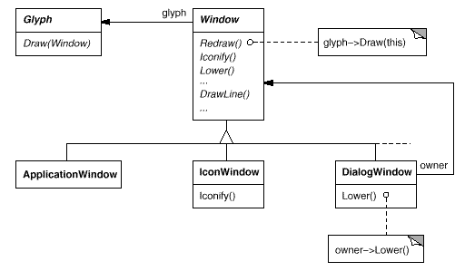
Now that we've defined a window interface for Lexi to work with, where does the real platform-specific window come in? If we're notimplementing our own window system, then at some point our windowabstraction must be implemented in terms of what the target windowsystem provides. So where does that implementation live?
One approach is to implement multiple versions of the Window class and its subclasses, one version for each windowing platform. We'd have tochoose the version to use when we build Lexi for a given platform. But imagine the maintenance headaches we'd have keeping track ofmultiple classes, all named Window but each implemented on adifferent window system. Alternatively, we could createimplementation-specific subclasses of each class in the Windowhierarchy—and end up with another subclass explosion problem like the onewe had trying to add embellishments. Both of these alternatives haveanother drawback: Neither gives us the flexibility to change thewindow system we use after we've compiled the program. So we'll haveto keep several different executables around as well.
Neither alternative is very appealing, but what else can we do? Thesame thing we did for formatting and embellishment, namely, encapsulate the concept that varies. What varies in this case is thewindow system implementation. If we encapsulate a window system'sfunctionality in an object, then we can implement our Window class and subclasses in terms of that object's interface. Moreover, if thatinterface can serve all the window systems we're interested in, thenwe won't have to change Window or any of its subclasses to supportdifferent window systems. We can configure window objects to thewindow system we want simply by passing them the right windowsystem-encapsulating object. We can even configure the window atrun-time.
Window and WindowImp
We'll define a separate WindowImp class hierarchy in which tohide different window system implementations. WindowImp is an abstractclass for objects that encapsulate window system-dependent code. To makeLexi work on a particular window system, we configure each windowobject with an instance of a WindowImp subclass for that system. The following diagram shows the relationship between the Window and WindowImphierarchies:
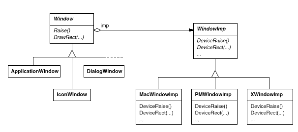
By hiding the implementations in WindowImp classes, we avoid pollutingthe Window classes with window system dependencies, which keeps theWindow class hierarchy comparatively small and stable. Meanwhile wecan easily extend the implementation hierarchy to support new windowsystems.
WindowImp Subclasses
Subclasses of WindowImp convert requests into window system-specific operations. Consider the example we used in Section 2.2. We defined the Rectangle::Draw in terms of the DrawRect operation onthe Window instance:
where _imp is a member variable of Window that stores theWindowImp with which the Window is configured. The windowimplementation is defined by the instance of the WindowImp subclassthat _imp points to. For an XWindowImp (that is, aWindowImp subclass for the X Window System), theDeviceRect's implementation might look like
DeviceRect is defined like this becauseXDrawRectangle (the X interface for drawing a rectangle) defines a rectangle in terms of its lower left corner, its width, and its height. DeviceRect must compute these valuesfrom those supplied. First it ascertains the lower left corner(since (x0, y0) might be any oneof the rectangle's four corners) and then calculates the width and height.
PMWindowImp (a subclass of WindowImp for Presentation Manager) would define DeviceRect differently:
Why is this so different from the X version? Well, PM doesn't have anoperation for drawing rectangles explicitly as X does. Instead, PM has amore general interface for specifying vertices of multisegment shapes (called a path) and for outlining or filling the area theyenclose.
PM's implementation of DeviceRect is obviously quitedifferent from X's, but that doesn't matter. WindowImp hidesvariations in window system interfaces behind a potentially large butstable interface. That lets Window subclass writers focus on the windowabstraction and not on window system details. It also lets us addsupport for new window systems without disturbing the Window classes.
Configuring Windows with WindowImps
A key issue we haven't addressed is how a window gets configured withthe proper WindowImp subclass in the first place. Stated another way, when does _imp get initialized, and who knows what windowsystem (and consequently which WindowImp subclass) is in use? Thewindow will need some kind of WindowImp before it can do anythinginteresting.
There are several possibilities, but we'll focus on one that uses the Abstract Factory pattern. We can definean abstract factory class WindowSystemFactory that provides aninterface for creating different kinds of window system-dependentimplementation objects:
classWindowSystemFactory{public:virtualWindowImp*CreateWindowImp()=0;virtualColorImp*CreateColorImp()=0;virtualFontImp*CreateFontImp()=0;// a "Create..." operation for all window system resources
};
Now we can define a concrete factory for each window system:
The Window base class constructor can use theWindowSystemFactory interface to initialize the_imp member with the WindowImp that's right for the windowsystem:
The windowSystemFactory variable is a well-known instance ofa WindowSystemFactory subclass, akin to the well-knownguiFactory variable defining the look and feel. The windowSystemFactory variable can be initialized in the sameway.
Bridge Pattern
The WindowImp class defines an interface to common window systemfacilities, but its design is driven by different constraints than Window's interface. Application programmers won't deal withWindowImp's interface directly; they only deal with Window objects. So WindowImp's interface needn't match the application programmer'sview of the world, as was our concern in the design of the Windowclass hierarchy and interface. WindowImp's interface can more closelyreflect what window systems actually provide, warts and all. It can bebiased toward either an intersection or a union of functionalityapproach, whichever suits the target window systems best.
The important thing to realize is that Window's interface caters to the applications programmer, while WindowImp caters to window systems. Separating windowing functionality into Window and WindowImphierarchies lets us implement and specialize these interfacesindependently. Objects from these hierarchies cooperate to letLexi work without modification on multiple window systems.
The relationship between Window and WindowImp is an example of the Bridge pattern. The intent behind Bridge is to allowseparate class hierarchies to work together even as they evolveindependently. Our design criteria led us to create two separate classhierarchies, one that supports the logical notion of windows, and another for capturing different implementations of windows. The Bridgepattern lets us maintain and enhance our logical windowingabstractions without touching window system-dependent code, and viceversa.
User Operations
Some of Lexi's functionality is available through the document'sWYSIWYG representation. You enter and delete text, move the insertionpoint, and select ranges of text by pointing, clicking, and typingdirectly in the document. Other functionality is accessed indirectlythrough user operations in Lexi's pull-down menus, buttons, and keyboard accelerators. The functionality includes operations for
creating a new document,
opening, saving, and printing an existing document,
cutting selected text out of the document and pasting it back in,
changing the font and style of selected text,
changing the formatting of text, such as its alignment and justification,
quitting the application,
and on and on.
Lexi provides different user interfaces for these operations. But we don't want to associate a particular user operation with aparticular user interface, because we may want multiple userinterfaces to the same operation (you can turn the page using either apage button or a menu operation, for example). We may also want tochange the interface in the future.
Furthermore, these operations are implemented in many differentclasses. We as implementors want to access their functionalitywithout creating a lot of dependencies between implementation and userinterface classes. Otherwise we'll end up with a tightly coupledimplementation, which will be harder to understand, extend, and maintain.
To further complicate matters, we want Lexi to support undo and redo8 ofmost but not all its functionality. Specifically, we want to beable to undo document-modifying operations like delete, with which auser can destroy lots of data inadvertently. But we shouldn't try toundo an operation like saving a drawing or quitting the application. These operations should have no effect on the undo process. We alsodon't want an arbitrary limit on the number of levels of undo and redo.
It's clear that support for user operations permeates the application. The challenge is to come up with a simple and extensible mechanismthat satisfies all of these needs.
Encapsulating a Request
From our perspective as designers, a pull-down menu is just anotherkind of glyph that contains other glyphs. What distinguishespull-down menus from other glyphs that have children is that mostglyphs in menus do some work in response to an up-click.
Let's assume that these work-performing glyphs are instances of aGlyph subclass called MenuItem and that they do their work inresponse to a request from a client.9 Carrying out therequest might involve an operation on one object, or many operationson many objects, or something in between.
We could define a subclass of MenuItem for every user operation and then hard-code each subclass to carry out the request. But that's notreally right; we don't need a subclass of MenuItem for each requestany more than we need a subclass for each text string in a pull-downmenu. Moreover, this approach couples the request to a particularuser interface, making it hard to fulfill the request through adifferent user interface.
To illustrate, suppose you could advance to the last page in thedocument both through a MenuItem in a pull-down menu and bypressing a page icon at the bottom of Lexi's interface (which mightbe more convenient for short documents). If we associate the requestwith a MenuItem through inheritance, then we must do the same for thepage icon and any other kind of widget that might issue such arequest. That can give rise to a number of classes approaching theproduct of the number of widget types and the number of requests.
What's missing is a mechanism that lets us parameterize menu items bythe request they should fulfill. That way we avoid a proliferation ofsubclasses and allow for greater flexibility at run-time. We couldparameterize MenuItem with a function to call, but that's not a completesolution for at least three reasons:
It doesn't address the undo/redo problem.
It's hard to associate state with a function. For example, afunction that changes the font needs to know which font.
Functions are hard to extend, and it's hard to reuse parts of them.
These reasons suggest that we should parameterize MenuItems with anobject, not a function. Then we can use inheritance to extendand reuse the request's implementation. We also have a place to storestate and implement undo/redo functionality. Here we have anotherexample of encapsulating the concept that varies, in this case arequest. We'll encapsulate each request in a command object.
Command Class and Subclasses
First we define a Command abstract class toprovide an interface for issuing a request. The basic interfaceconsists of a single abstract operation called Execute. Subclasses of Command implement Execute in different ways to fulfill differentrequests. Some subclasses may delegate part or all of the work toother objects. Other subclasses may be in a position to fulfillthe request entirely on their own (see Figure 2.11). To the requester, however, a Command object is a Command object—theyare treated uniformly.
Figure 2.11: Partial Command class hierarchy
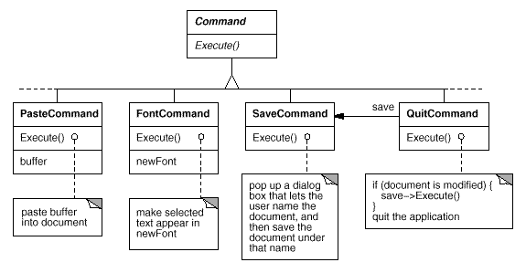
Now MenuItem can store a Command object that encapsulates arequest (Figure 2.12). We give each menu item objectan instance of the Command subclass that's suitable for that menuitem, just as we specify the text to appear in the menu item. Whena user chooses a particular menu item, the MenuItem simply callsExecute on its Command object to carry out the request. Note thatbuttons and other widgets can use commands in the same way menuitems do.
Figure 2.12: MenuItem-Command relationship
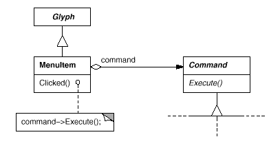
Undoability
Undo/redo is an important capability in interactive applications. To undo and redo commands, we add an Unexecute operation to Command'sinterface. Unexecute reverses the effects of a preceding Executeoperation using whatever undo information Execute stored. In the caseof a FontCommand, for example, the Execute operation would store therange of text affected by the font change along with the originalfont(s). FontCommand's Unexecute operation would restore the range oftext to its original font(s).
Sometimes undoability must be determined at run-time. A request tochange the font of a selection does nothing if the text alreadyappears in that font. Suppose the user selects some text and thenrequests a spurious font change. What should be the result of asubsequent undo request? Should a meaningless change cause the undorequest to do something equally meaningless? Probably not. If theuser repeats the spurious font change several times, he shouldn't haveto perform exactly the same number of undo operations to get back to the last meaningful operation. If the net effect of executing acommand was nothing, then there's no need for a corresponding undorequest.
So to determine if a command is undoable, we add an abstractReversible operation to the Command interface. Reversible returns aBoolean value. Subclasses can redefine this operation to return trueor false based on run-time criteria.
Command History
The final step in supporting arbitrary-level undo and redo is todefine a command history, or list of commands that have been executed (or unexecuted, if some commands have been undone). Conceptually, the command history looks like this:
Each circle represents a Command object. In this case the user hasissued four commands. The leftmost command was issued first, followedby the second-leftmost, and so on until the most recently issuedcommand, which is rightmost. The line marked present keeps trackof the most recently executed (and unexecuted) command.
To undo the last command, we simply call Unexecute on the most recentcommand:
After unexecuting the command, we move the present line onecommand to the left. If the user chooses undo again, the next-mostrecently issued command will be undone in the same way, and we're leftin the state depicted here:
You can see that by simply repeating this procedure we get multiplelevels of undo. The number of levels is limited only by the length ofthe command history.
To redo a command that's just been undone, we do the same thing inreverse. Commands to the right of the present line are commands thatmay be redone in the future. To redo the last undone command, we callExecute on the command to the right of the present line:
Then we advance the present line so that a subsequent redo will callredo on the following command in the future.
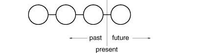
Of course, if the subsequent operation is not another redo but an undo, then the command to the left of the present line will be undone. Thusthe user can effectively go back and forth in time as needed torecover from errors.
Command Pattern
Lexi's commands are an application of the Command pattern, which describes how toencapsulate a request. The Command pattern prescribes a uniforminterface for issuing requests that lets you configure clients tohandle different requests. The interface shields clients from therequest's implementation. A command may delegate all, part, or noneof the request's implementation to other objects. This is perfect forapplications like Lexi that must provide centralized access tofunctionality scattered throughout the application. The pattern alsodiscusses undo and redo mechanisms built on the basic Commandinterface.
Spelling Checking and Hyphenation
The last design problem involves textual analysis, specifically checkingfor misspellings and introducing hyphenation points where needed forgood formatting.
The constraints here are similar to those we had for the formattingdesign problem in Section 2.3. As was the case for line breaking strategies, there's more than oneway to check spelling and compute hyphenation points. So here toowe want to support multiple algorithms. A diverse set of algorithmscan provide a choice of space/time/quality trade-offs. We should make it easy to add new algorithms as well.
We also want to avoid wiring this functionality into the document structure. This goal is even more important here than it was in theformatting case, because spelling checking and hyphenation are justtwo of potentially many kinds of analyses we may want Lexi tosupport. Inevitably we'll want to expand Lexi's analyticalabilities over time. We might add searching, word counting, acalculation facility for adding up tabular values, grammar checking, and so forth. But we don't want to change the Glyph class and all itssubclasses every time we introduce new functionality of this sort.
There are actually two pieces to this puzzle: (1) accessing theinformation to be analyzed, which we have scattered over the glyphsin the document structure, and (2) doing the analysis. We'll look atthese two pieces separately.
Accessing Scattered Information
Many kinds of analysis require examining the text character bycharacter. The text we need to analyze is scattered throughout ahierarchical structure of glyph objects. To examine text in such astructure, we need an access mechanism that has knowledge about thedata structures in which objects are stored. Some glyphs might storetheir children in linked lists, others might use arrays, and stillothers might use more esoteric data structures. Our access mechanismmust be able to handle all of these possibilities.
An added complication is that different analyses access information indifferent ways. Most analyses will traverse the text frombeginning to end. But some do the opposite—a reverse search, forexample, needs to progress through the text backward rather thanforward. Evaluating algebraic expressions could require an inordertraversal.
So our access mechanism must accommodate differing data structures, and we must support different kinds of traversals, such as preorder, postorder, and inorder.
Encapsulating Access and Traversal
Right now our glyph interface uses an integer index to let clientsrefer to children. Although that might be reasonable for glyph classesthat store their children in an array, it may be inefficient forglyphs that use a linked list. An important role of the glyphabstraction is to hide the data structure in which children arestored. That way we can change the data structure a glyph class useswithout affecting other classes.
Therefore only the glyph can know the data structure it uses. Acorollary is that the glyph interface shouldn't be biased toward onedata structure or another. It shouldn't be better suited to arraysthan to linked lists, for example, as it is now.
We can solve this problem and support several different kinds oftraversals at the same time. We can put multiple access and traversalcapabilities directly in the glyph classes and provide a way to chooseamong them, perhaps by supplying an enumerated constant as aparameter. The classes pass this parameter around during a traversalto ensure they're all doing the same kind of traversal. They have topass around any information they've accumulated during traversal.
We might add the following abstract operations to Glyph's interface tosupport this approach:
Operations First, Next, and IsDonecontrol the traversal. First initializes the traversal. Ittakes the kind of traversal as a parameter of typeTraversal, an enumerated constant with valuessuch as CHILDREN (to traverse the glyph's immediate childrenonly), PREORDER (to traverse the entire structure inpreorder), POSTORDER, and INORDER.Next advances to the next glyph in the traversal, and IsDone reports whether the traversal is over or not. GetCurrent replaces theChild operation; it accesses the current glyph in thetraversal. Insert replaces the old operation; it insertsthe given glyph at the current position. An analysis would use the following C++ code to do a preordertraversal of a glyph structure rooted at g:
Glyph*g;for(g->First(PREORDER);!g->IsDone();g->Next()){Glyph*current=g->GetCurrent();// do some analysis
}
Notice that we've banished the integer index from the glyph interface. There's no longer anything that biases the interface toward one kindof collection or another. We've also saved clients from having toimplement common kinds of traversals themselves.
But this approach still has problems. For one thing, it can't supportnew traversals without either extending the set of enumerated valuesor adding new operations. Say we wanted to have a variation on preordertraversal that automatically skips non-textual glyphs. We'd have tochange the Traversal enumeration to include something likeTEXTUAL_PREORDER.
We'd like to avoid changing existing declarations. Putting the traversal mechanism entirely in the Glyph class hierarchymakes it hard to modify or extend without changing lots of classes. It's also difficult to reuse the mechanism to traverse other kinds ofobject structures. And we can't have more than one traversal inprogress on a structure.
Once again, a better solution is to encapsulate the concept that varies, in this case the access and traversal mechanisms. We can introduce a class of objects called iterators whose solepurpose is to define different sets of these mechanisms. We can use inheritance to let us access different data structures uniformly and support new kinds of traversals as well. And we won't have to changeglyph interfaces or disturb existing glyph implementations to do it.
Iterator Class and Subclasses
We'll use an abstract class called Iterator to define a general interface for access and traversal. Concretesubclasses like ArrayIterator and ListIterator implement the interface to provideaccess to arrays and lists, while PreorderIterator, PostorderIterator, and the like implement differenttraversals on specific structures. Each Iterator subclass has areference to the structure it traverses. Subclass instances areinitialized with this reference when they are created. Figure 2.13 illustrates theIterator class along with several subclasses. Notice that we'veadded a CreateIterator abstract operation to the Glyph classinterface to support iterators.
Figure 2.13: Iterator class and subclasses
The Iterator interface provides operations First, Next, and IsDone forcontrolling the traversal. The ListIterator class implements First topoint to the first element in the list, and Next advances the iteratorto the next item in the list. IsDone returns whether or not the listpointer points beyond the last element in the list. CurrentItemdereferences the iterator to return the glyph it points to. AnArrayIterator class would do similar things but on anarray of glyphs.
Now we can access the children of a glyph structure without knowingits representation:
Glyph*g;Iterator<Glyph*>*i=g->CreateIterator();for(i->First();!i->IsDone();i->Next()){Glyph*child=i->CurrentItem();// do something with current child
}
CreateIterator returns a NullIterator instance by default. ANullIterator is a degenerate iterator for glyphs that have nochildren, that is, leaf glyphs. NullIterator's IsDone operationalways returns true.
A glyph subclass that has children will override CreateIterator toreturn an instance of a different Iterator subclass. Whichsubclass depends on the structure that stores the children. If theRow subclass of Glyph stores its children in a list_children, then its CreateIterator operation would looklike this:
Iterators for preorder and inorder traversals implement theirtraversals in terms of glyph-specific iterators. The iterators forthese traversals are supplied the root glyph in the structure theytraverse. They call CreateIterator on the glyphs in the structure and use a stack to keep track of the resulting iterators.
For example, class PreorderIterator gets the iterator fromthe root glyph, initializes it to point to its first element, and thenpushes it onto the stack:
The Next operation gets the top iterator on the stack and asks its current item to create an iterator, in an effort to descendthe glyph structure as far as possible (this is a preordertraversal, after all). Next sets the new iterator to thefirst item in the traversal and pushes it on the stack. ThenNext tests the latest iterator; if its IsDoneoperation returns true, then we've finished traversing the currentsubtree (or leaf) in the traversal. In that case, Next popsthe top iterator off the stack and repeats this process until it findsthe next incomplete traversal, if there is one; if not, then we havefinished traversing the structure.
Notice how the Iterator class hierarchy lets us add new kinds oftraversals without modifying glyph classes—we simply subclassIterator and add a new traversal as we have withPreorderIterator. Glyph subclasses use the sameinterface to give clients access to their children without revealingthe underlying data structure they use to store them. Becauseiterators store their own copy of the state of a traversal, we cancarry on multiple traversals simultaneously, even on the samestructure. And though our traversals have been over glyph structuresin this example, there's no reason we can't parameterize a class likePreorderIterator by the type of object in the structure. We'd use templates to do that in C++. Then we can reuse the machineryin PreorderIterator to traverse other structures.
Iterator Pattern
The Iterator pattern captures these techniquesfor supporting access and traversal over object structures. It'sapplicable not only to composite structures but to collections aswell. It abstracts the traversal algorithm and shields clients fromthe internal structure of the objects they traverse. The Iteratorpattern illustrates once more how encapsulating the concept thatvaries helps us gain flexibility and reusability. Even so, theproblem of iteration has surprising depth, and the Iterator patterncovers many more nuances and trade-offs than we've considered here.
Traversal versus Traversal Actions
Now that we have a way of traversing the glyph structure, we need tocheck the spelling and do the hyphenation. Both analyses involveaccumulating information during the traversal.
First we have to decide where to put the responsibility for analysis. We could put it in the Iterator classes, thereby making analysis anintegral part of traversal. But we get more flexibility and potentialfor reuse if we distinguish between the traversal and the actionsperformed during traversal. That's because different analyses oftenrequire the same kind of traversal. Hence we can reuse the same setof iterators for different analyses. For example, preorder traversalis common to many analyses, including spelling checking, hyphenation, forward search, and word count.
So analysis and traversal should be separate. Where else can we putthe responsibility for analysis? We know there are many kinds ofanalyses we might want to do. Each analysis will do different thingsat different points in the traversal. Some glyphs are moresignificant than others depending on the kind of analysis. If we'rechecking spelling or hyphenating, we want to consider character glyphsand not graphical ones like lines and bitmapped images. If we'remaking color separations, we'd want to consider visible glyphs and notinvisible ones. Inevitably, different analyses will analyze differentglyphs.
Therefore a given analysis must be able to distinguish different kinds ofglyphs. An obvious approach is to put the analytical capability into theglyph classes themselves. For each analysis we can add one or moreabstract operations to the Glyph class and have subclasses implementthem in accordance with the role they play in the analysis.
But the trouble with that approach is that we'll have to change everyglyph class whenever we add a new kind of analysis. We can ease thisproblem in some cases: If only a few classes participate in theanalysis, or if most classes do the analysis the same way, then we can supplya default implementation for the abstract operation in the Glyphclass. The default operation would cover the common case. Thus we'dlimit changes to just the Glyph class and those subclasses that deviatefrom the norm.
Yet even if a default implementation reduces the number of changes, aninsidious problem remains: Glyph's interface expands with every newanalytical capability. Over time the analytical operations will startto obscure the basic Glyph interface. It becomes hard to see that aglyph's main purpose is to define and structure objects that haveappearance and shape—that interface gets lost in the noise.
Encapsulating the Analysis
From all indications, we need to encapsulate the analysis in aseparate object, much like we've done many times before. We could putthe machinery for a given analysis into its own class. We could usean instance of this class in conjunction with an appropriate iterator. The iterator would carry the instance to each glyph in thestructure. The analysis object could then perform a piece of theanalysis at each point in the traversal. The analyzer accumulatesinformation of interest (characters in this case) as the traversalproceeds:
The fundamental question with this approach is how the analysis objectdistinguishes different kinds of glyphs without resorting to typetests or downcasts. We don't want a SpellingChecker classto include (pseudo) code like
voidSpellingChecker::Check(Glyph*glyph){Character*c;Row*r;Image*i;if(c=dynamic_cast<Character*>(glyph)){// analyze the character
}elseif(r=dynamic_cast<Row*>(glyph)){// prepare to analyze r's children
}elseif(i=dynamic_cast<Image*>(glyph)){// do nothing
}}
This code is pretty ugly. It relies on fairly esoteric capabilitieslike type-safe casts. It's hard to extend as well. We'll have toremember to change the body of this function whenever we change theGlyph class hierarchy. In fact, this is the kind of code thatobject-oriented languages were intended to eliminate.
We want to avoid such a brute-force approach, but how? Let's considerwhat happens when we add the following abstract operation to the Glyphclass:
voidCheckMe(SpellingChecker&)
We define CheckMe in every Glyph subclass as follows:
where GlyphSubclass would be replaced by the name of theglyph subclass. Note that when CheckMe is called, thespecific Glyph subclass is known—after all, we're in one of itsoperations. In turn, theSpellingChecker class interface includes an operation likeCheckGlyphSubclass for every Glyphsubclass10:
classSpellingChecker{public:SpellingChecker();virtualvoidCheckCharacter(Character*);virtualvoidCheckRow(Row*);virtualvoidCheckImage(Image*);// ... and so forth
List<char*>&GetMisspellings();protected:virtualboolIsMisspelled(constchar*);private:char_currentWord[MAX_WORD_SIZE];List<char*>_misspellings;};
SpellingChecker's checking operation forCharacter glyphs might look something like this:
voidSpellingChecker::CheckCharacter(Character*c){constcharch=c->GetCharCode();if(isalpha(ch)){// append alphabetic character to _currentWord
}else{// we hit a nonalphabetic character
if(IsMisspelled(_currentWord)){// add _currentWord to _misspellings
_misspellings.Append(strdup(_currentWord));}_currentWord[0]='\0';// reset _currentWord to check next word
}}
Notice we've defined a special GetCharCode operation onjust the Character class. The spelling checker can deal withsubclass-specific operations without resorting to type tests orcasts—it lets us treat objects specially.
CheckCharacter accumulates alphabetic charactersinto the _currentWord buffer. When it encounters anonalphabetic character, such as an underscore, it uses theIsMisspelled operation to check the spelling of theword in _currentWord.11 If the word ismisspelled, then CheckCharacter adds the word to thelist of misspelled words. Then it must clear out the_currentWord buffer to ready it for the next word. When the traversal is over, you can retrieve the list of misspelledwords with the GetMisspellings operation.
Now we can traverse the glyph structure, callingCheckMe on each glyph with the spelling checker as an argument. This effectively identifies each glyph to the SpellingChecker and prompts the checker to do the next increment in the spelling check.
The following interaction diagram illustrates howCharacter glyphs and the SpellingChecker objectwork together:
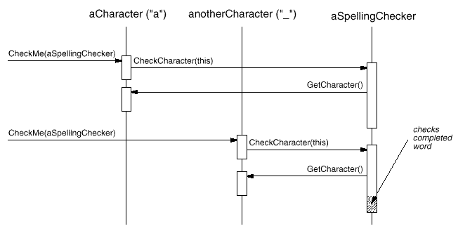
This approach works for finding spelling errors, but how does it helpus support multiple kinds of analysis? It looks like we have to addan operation like CheckMe(SpellingChecker&) to Glyph and its subclasses whenever we add a new kind of analysis. That's true ifwe insist on an independent class for every analysis. Butthere's no reason why we can't give all analysis classes thesame interface. Doing so lets us use them polymorphically. Thatmeans we can replace analysis-specific operations likeCheckMe(SpellingChecker&) with an analysis-independentoperation that takes a more general parameter.
Visitor Class and Subclasses
We'll use the term visitor to refer generally to classesof objects that visit other objects during a traversal and dosomething appropriate.12 In this case we can define aVisitor class that defines an abstract interface forvisiting glyphs in a structure.
classVisitor{public:virtualvoidVisitCharacter(Character*){}virtualvoidVisitRow(Row*){}virtualvoidVisitImage(Image*){}// ... and so forth
};
Concrete subclasses of Visitor perform different analyses. For example, we could have a SpellingCheckingVisitorsubclass for checking spelling, and a HyphenationVisitorsubclass for hyphenation. SpellingCheckingVisitor wouldbe implemented exactly as we implemented SpellingCheckerabove, except the operation names would reflect the more generalVisitor interface. For example, CheckCharacter would be called VisitCharacter.
Since CheckMe isn't appropriate for visitors that don'tcheck anything, we'll give it a more general name: Accept. Its argument must also change to take aVisitor&, reflecting the fact that it can accept any visitor. Now adding a new analysis requires just defining a new subclass ofVisitor—we don't have to touch any of the glyph classes. We support all future analyses by adding this one operationto Glyph and its subclasses.
We've already seen how spelling checking works. We use a similarapproach in HyphenationVisitor to accumulate text. Butonce HyphenationVisitor's VisitCharacter operationhas assembled an entire word, it works a little differently. Insteadof checking the word for misspelling, it applies a hyphenationalgorithm to determine the potential hyphenation points in the word, if any. Then at each hyphenation point, it inserts a discretionary glyph into the composition. Discretionaryglyphs are instances of Discretionary, a subclass of Glyph.
A discretionary glyph has one of two possible appearances depending onwhether or not it is the last character on a line. If it's the lastcharacter, then the discretionary looks like a hyphen; if it's not atthe end of a line, then the discretionary has no appearancewhatsoever. The discretionary checks its parent (a Row object) to seeif it is the last child. The discretionary makes this check wheneverit's called on to draw itself or calculate its boundaries. Theformatting strategy treats discretionaries the same as whitespace, making them candidates for ending a line. The following diagram shows howan embedded discretionary can appear.
Visitor Pattern
What we've described here is an application of the Visitor pattern. The Visitor class and itssubclasses described earlier are the key participants in the pattern. The Visitor pattern captures the technique we've used to allow anopen-ended number of analyses of glyph structures without having tochange the glyph classes themselves. Another nice feature of visitorsis that they can be applied not just to composites like our glyphstructures but to any object structure. That includes sets, lists, even directed-acyclic graphs. Furthermore, the classes that avisitor can visit needn't be related to each other through a commonparent class. That means visitors can work across class hierarchies.
An important question to ask yourself before applying the Visitorpattern is, Which class hierarchies change most often? The pattern ismost suitable when you want to be able to do a variety of differentthings to objects that have a stable class structure. Adding a newkind of visitor requires no change to that class structure, which isespecially important when the class structure is large. But whenever youadd a subclass to the structure, you'll also have to update all yourvisitor interfaces to include a Visit... operation for thatsubclass. In our example that means adding a newGlyph subclass called Foo will require changingVisitor and all its subclasses to include aVisitFoo operation. But given our design constraints, we'remuch more likely to add a new kind of analysis to Lexi than a newkind of Glyph. So the Visitor pattern is well-suited to our needs.
Summary
We've applied eight different patterns to Lexi's design:
Composite to represent the document's physical structure,
Iterator for accessing and traversing object structures, and
Visitor for allowing anopen-ended number of analytical capabilities without complicatingthe document structure's implementation.
None of these design issues is limited to document editingapplications like Lexi. Indeed, most nontrivial applications willhave occasion to use many of these patterns, though perhaps to dodifferent things. A financial analysis application might useComposite to define investment portfolios made up of subportfolios and accounts of different sorts. A compiler might use the Strategypattern to allow different register allocation schemes for differenttarget machines. Applications with a graphical user interface willprobably apply at least Decorator and Command just as we have here.
While we've covered several major problems in Lexi's design, thereare lots of others we haven't discussed. Then again, this bookdescribes more than just the eight patterns we've used here. So asyou study the remaining patterns, think about how you might use eachone in Lexi. Or better yet, think about using them in your owndesigns!
Design Pattern Catalog
Creational Patterns
Creational design patterns abstract the instantiation process. They help make a system independent of how its objects are created, composed, and represented. A class creational pattern uses inheritanceto vary the class that's instantiated, whereas an object creationalpattern will delegate instantiation to another object.
Creational patterns become important as systems evolve to depend moreon object composition than class inheritance. As that happens, emphasis shifts away from hard-coding a fixed set of behaviors towarddefining a smaller set of fundamental behaviors that can be composedinto any number of more complex ones. Thus creating objects withparticular behaviors requires more than simply instantiating a class.
There are two recurring themes in these patterns. First, they allencapsulate knowledge about which concrete classes the system uses. Second, they hide how instances of these classes are created and puttogether. All the system at large knows about the objects is theirinterfaces as defined by abstract classes. Consequently, thecreational patterns give you a lot of flexibility in what getscreated, who creates it, how it gets created, and when. They let you configure a system with product objects thatvary widely in structure and functionality. Configuration can bestatic (that is, specified at compile-time) or dynamic (atrun-time).
Sometimes creational patterns are competitors. For example, there are cases when either Prototype or Abstract Factory couldbe used profitably. At other times they are complementary: Builder can use one of the otherpatterns to implement which components get built. Prototype can use Singleton in its implementation.
Because the creational patterns are closely related, we'll study allfive of them together to highlight their similarities and differences. We'll also use a common example—building a maze for a computergame—to illustrate their implementations. The maze and the game willvary slightly from pattern to pattern. Sometimes the game will besimply to find your way out of a maze; in that case the player willprobably only have a local view of the maze. Sometimes mazes containproblems to solve and dangers to overcome, and these games may providea map of the part of the maze that has been explored.
We'll ignore many details of what can be in a maze and whether a mazegame has a single or multiple players. Instead, we'll just focus onhow mazes get created. We define a maze as a set of rooms. A roomknows its neighbors; possible neighbors are another room, a wall, or adoor to another room.
The classes Room, Door, and Walldefine the components of the maze used in all our examples. We defineonly the parts of these classes that are important for creating amaze. We'll ignore players, operations for displaying and wanderingaround in a maze, and other important functionality that isn'trelevant to building the maze.
The following diagram shows the relationships between these classes:
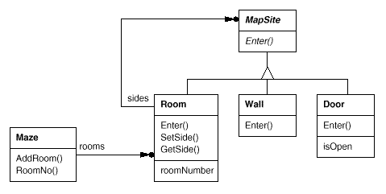
Each room has four sides. We use an enumeration Direction inC++ implementations to specify the north, south, east, and west sides ofa room:
enumDirection{North,South,East,West};
The Smalltalk implementations use corresponding symbols to representthese directions.
The class MapSite is the common abstract class for all thecomponents of a maze. To simplify the example, MapSite definesonly one operation, Enter. Its meaning depends on what you'reentering. If you enter a room, then your location changes. If you try toenter a door, then one of two things happen: If the door is open, you gointo the next room. If the door is closed, then you hurt your nose.
classMapSite{public:virtualvoidEnter()=0;};
Enter provides a simple basis for more sophisticated gameoperations. For example, if you are in a room and say Go East, thegame can simply determine which MapSite is immediately to theeast and then call Enter on it. The subclass-specificEnter operation will figure out whether your location changedor your nose got hurt. In a real game, Enter could take theplayer object that's moving about as an argument.
Room is the concrete subclass of MapSite thatdefines the key relationships between components in the maze. Itmaintains references to other MapSite objects and stores aroom number. The number will identify rooms in the maze.
We need to know about more than just the parts of a maze. We'll alsodefine a Maze class to represent a collection of rooms. Maze can also find a particular room given a room numberusing its RoomNo operation.
RoomNo could do a look-up using a linear search, a hash table, or even a simple array. But we won't worry about such details here. Instead, we'll focus on how to specify the components of a maze object.
Another class we define is MazeGame, which creates the maze. One straightforward way to create a maze is with a series of operationsthat add components to a maze and then interconnect them. For example, the following member function will create a maze consistingof two rooms with a door between them:
This function is pretty complicated, considering that all it does is createa maze with two rooms. There are obvious ways to make it simpler. For example, the Room constructor could initialize the sideswith walls ahead of time. But that just moves the code somewhere else. The real problem with this member function isn't its size but its inflexibility. It hard-codes the maze layout. Changing the layoutmeans changing this member function, either by overriding it—whichmeans reimplementing the whole thing—or by changing parts ofit—which is error-prone and doesn't promote reuse.
The creational patterns show how to make this design more flexible, not necessarily smaller. In particular, they will make iteasy to change the classes that define the components of a maze.
Suppose you wanted to reuse an existing maze layout for a new gamecontaining (of all things) enchanted mazes. The enchanted maze game hasnew kinds of components, like DoorNeedingSpell, a door thatcan be locked and opened subsequently only with a spell; and EnchantedRoom, a room that can have unconventional items init, like magic keys or spells. How can you change CreateMazeeasily so that it creates mazes with these new classes of objects?
In this case, the biggest barrier to change lies in hard-coding theclasses that get instantiated. The creational patterns providedifferent ways to remove explicit references to concrete classesfrom code that needs to instantiate them:
If CreateMaze calls virtual functions instead of constructorcalls to create the rooms, walls, and doors it requires, then you canchange the classes that get instantiated by making a subclass ofMazeGame and redefining those virtual functions. This approachis an example of the Factory Method pattern.
If CreateMaze is passed an object as a parameter to use tocreate rooms, walls, and doors, then you can change the classes ofrooms, walls, and doors by passing a different parameter. This is anexample of the Abstract Factory pattern.
If CreateMaze is passed an object that can create a new mazein its entirety using operations for adding rooms, doors, and walls to the maze it builds, then you can use inheritance to change parts ofthe maze or the way the maze is built. This is an example of the Builder pattern.
If CreateMaze is parameterized by various prototypical room, door, and wall objects, which it then copies and adds to the maze, then you can change the maze's composition by replacing theseprototypical objects with different ones. This is an example of the Prototype pattern.
The remaining creational pattern, Singleton, canensure there's only one maze per game and that all game objects haveready access to it—without resorting to global variables orfunctions. Singleton also makes it easy to extend or replace the mazewithout touching existing code.
Abstract Factory
Intent
Provide an interface for creating families of related or dependent objects without specifying their concrete classes.
Also Known As
Kit
Motivation
Consider a user interface toolkit that supports multiple look-and-feel standards, such as Motif and Presentation Manager. Different look-and-feels define different appearances and behaviors for user interface widgets like scroll bars, windows, and buttons. To be portable across look-and-feel standards, an application should not hard-code its widgets for a particular look and feel. Instantiating look-and-feel-specific classes of widgets throughout the application makes it hard to change the look and feel later.
We can solve this problem by defining an abstract WidgetFactory class that declares an interface for creating each basic kind of widget. There's also an abstract class for each kind of widget, and concrete subclasses implement widgets for specific look-and-feel standards. WidgetFactory's interface has an operation that returns a new widget object for each abstract widget class. Clients call these operations to obtain widget instances, but clients aren't aware of the concrete classes they're using. Thus clients stay independent of the prevailing look and feel.
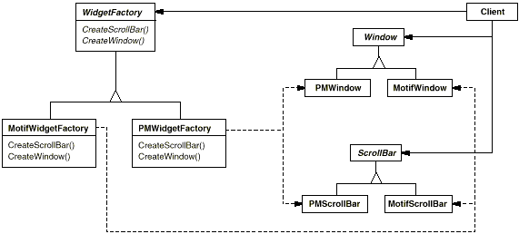
There is a concrete subclass of WidgetFactory for each look-and-feel standard. Each subclass implements the operations to create the appropriate widget for the look and feel. For example, the CreateScrollBar operation on the MotifWidgetFactory instantiates and returns a Motif scroll bar, while the corresponding operation on the PMWidgetFactory returns a scroll bar for Presentation Manager. Clients create widgets solely through the WidgetFactory interface and have no knowledge of the classes that implement widgets for a particular look and feel. In other words, clients only have to commit to an interface defined by an abstract class, not a particular concrete class.
A WidgetFactory also enforces dependencies between the concrete widget classes. A Motif scroll bar should be used with a Motif button and a Motif text editor, and that constraint is enforced automatically as a consequence of using a MotifWidgetFactory.
Applicability
Use the Abstract Factory pattern when
a system should be independent of how its products are created, composed, and represented.
a system should be configured with one of multiple families of products.
a family of related product objects is designed to be used together, and you need to enforce this constraint.
you want to provide a class library of products, and you want to reveal just their interfaces, not their implementations.
Structure
Participants
AbstractFactory (WidgetFactory)
declares an interface for operations that create abstract product objects.
implements the operations to create concrete product objects.
AbstractProduct (Window, ScrollBar)
declares an interface for a type of product object.
ConcreteProduct (MotifWindow, MotifScrollBar)
defines a product object to be created by the corresponding concrete factory.
implements the AbstractProduct interface.
Client
uses only interfaces declared by AbstractFactory and AbstractProduct classes.
Collaborations
Normally a single instance of a ConcreteFactory class is created at run-time. This concrete factory creates product objects having a particular implementation. To create different product objects, clients should use a different concrete factory.
AbstractFactory defers creation of product objects to its ConcreteFactory subclass.
Consequences
The Abstract Factory pattern has the following benefits and liabilities:
It isolates concrete classes. The Abstract Factory pattern helps you control the classes of objects that an application creates. Because a factory encapsulates the responsibility and the process of creating product objects, it isolates clients from implementation classes. Clients manipulate instances through their abstract interfaces. Product class names are isolated in the implementation of the concrete factory; they do not appear in client code.
It makes exchanging product families easy. The class of a concrete factory appears only once in an application—that is, where it's instantiated. This makes it easy to change the concrete factory an application uses. It can use different product configurations simply by changing the concrete factory. Because an abstract factory creates a complete family of products, the whole product family changes at once. In our user interface example, we can switch from Motif widgets to Presentation Manager widgets simply by switching the corresponding factory objects and recreating the interface.
It promotes consistency among products. When product objects in a family are designed to work together, it's important that an application use objects from only one family at a time. AbstractFactory makes this easy to enforce.
Supporting new kinds of products is difficult. Extending abstract factories to produce new kinds of Products isn't easy. That's because the AbstractFactory interface fixes the set of products that can be created. Supporting new kinds of products requires extending the factory interface, which involves changing the AbstractFactory class and all of its subclasses. We discuss one solution to this problem in the Implementation section.
Implementation
Here are some useful techniques for implementing the Abstract Factory pattern.
Factories as singletons. An application typically needs only one instance of a ConcreteFactory per product family. So it's usually best implemented as a Singleton.
Creating the products. AbstractFactory only declares an interface for creating products. It's up to ConcreteProduct subclasses to actually create them. The most common way to do this is to define a factory method (see Factory Method) for each product. A concrete factory will specify its products by overriding the factory method for each. While this implementation is simple, it requires a new concrete factory subclass for each product family, even if the product families differ only slightly.
If many product families are possible, the concrete factory can be implemented using the Prototype pattern. The concrete factory is initialized with a prototypical instance of each product in the family, and it creates a new product by cloning its prototype. The Prototype-based approach eliminates the need for a new concrete factory class for each new product family.
Here's a way to implement a Prototype-based factory in Smalltalk. The concrete factory stores the prototypes to be cloned in a dictionary called partCatalog. The method make: retrieves the prototype and clones it:
make:partName^ (partCatalogat:partName) copy
The concrete factory has a method for adding parts to the catalog.
Prototypes are added to the factory by identifying them with a symbol:
aFactoryaddPart:aPrototypenamed:#ACMEWidget
A variation on the Prototype-based approach is possible in languages that treat classes as first-class objects (Smalltalk and Objective C, for example). You can think of a class in these languages as a degenerate factory that creates only one kind of product. You can store classes inside a concrete factory that create the various concrete products in variables, much like prototypes. These classes create new instances on behalf of the concrete factory. You define a new factory by initializing an instance of a concrete factory with classes of products rather than by subclassing. This approach takes advantage of language characteristics, whereas the pure Prototype-based approach is language-independent.
Like the Prototype-based factory in Smalltalk just discussed, the class-based version will have a single instance variable partCatalog, which is a dictionary whose key is the name of the part. Instead of storing prototypes to be cloned, partCatalog stores the classes of the products. The method make: now looks like this:
make:partName^ (partCatalogat:partName) new
Defining extensible factories. AbstractFactory usually defines a different operation for each kind of product it can produce. The kinds of products are encoded in the operation signatures. Adding a new kind of product requires changing the AbstractFactory interface and all the classes that depend on it.
A more flexible but less safe design is to add a parameter to operations that create objects. This parameter specifies the kind of object to be created. It could be a class identifier, an integer, a string, or anything else that identifies the kind of product. In fact with this approach, AbstractFactory only needs a single Make operation with a parameter indicating the kind of object to create. This is the technique used in the Prototype- and the class-based abstract factories discussed earlier.
This variation is easier to use in a dynamically typed language like Smalltalk than in a statically typed language like C++. You can use it in C++ only when all objects have the same abstract base class or when the product objects can be safely coerced to the correct type by the client that requested them. The implementation section of Factory Method shows how to implement such parameterized operations in C++.
But even when no coercion is needed, an inherent problem remains: All products are returned to the client with the same abstract interface as given by the return type. The client will not be able to differentiate or make safe assumptions about the class of a product. If clients need to perform subclass-specific operations, they won't be accessible through the abstract interface. Although the client could perform a downcast (e.g., with dynamic_cast in C++), that's not always feasible or safe, because the downcast can fail. This is the classic trade-off for a highly flexible and extensible interface.
Sample Code
We'll apply the Abstract Factory pattern to creating the mazes we discussed at the beginning of this chapter.
Class MazeFactory can create components of mazes. It builds rooms, walls, and doors between rooms. It might be used by a program that reads plans for mazes from a file and builds the corresponding maze. Or it might be used by a program that builds mazes randomly. Programs that build mazes take a MazeFactory as an argument so that the programmer can specify the classes of rooms, walls, and doors to construct.
Recall that the member function CreateMaze builds a small maze consisting of two rooms with a door between them. CreateMaze hard-codes the class names, making it difficult to create mazes with different components.
Here's a version of CreateMaze that remedies that shortcoming by taking a MazeFactory as a parameter:
We can create EnchantedMazeFactory, a factory for enchanted mazes, by subclassing MazeFactory. EnchantedMazeFactory will override different member functions and return different subclasses of Room, Wall, etc.
Now suppose we want to make a maze game in which a room can have a bomb set in it. If the bomb goes off, it will damage the walls (at least). We can make a subclass of Room keep track of whether the room has a bomb in it and whether the bomb has gone off. We'll also need a subclass of Wall to keep track of the damage done to the wall. We'll call these classes RoomWithABomb and BombedWall.
The last class we'll define is BombedMazeFactory, a subclass of MazeFactory that ensures walls are of class BombedWall and rooms are of class RoomWithABomb. BombedMazeFactory only needs to override two functions:
CreateMaze can take an instance of EnchantedMazeFactory just as well to build enchanted mazes.
Notice that the MazeFactory is just a collection of factory methods. This is the most common way to implement the Abstract Factory pattern. Also note that MazeFactory is not an abstract class; thus it acts as both the AbstractFactory and the ConcreteFactory. This is another common implementation for simple applications of the Abstract Factory pattern. Because the MazeFactory is a concrete class consisting entirely of factory methods, it's easy to make a new MazeFactory by making a subclass and overriding the operations that need to change.
CreateMaze used the SetSide operation on rooms to specify their sides. If it creates rooms with a BombedMazeFactory, then the maze will be made up of RoomWithABomb objects with BombedWall sides. If RoomWithABomb had to access a subclass-specific member of BombedWall, then it would have to cast a reference to its walls from Wall* to BombedWall*. This downcasting is safe as long as the argument is in fact a BombedWall, which is guaranteed to be true if walls are built solely with a BombedMazeFactory.
Dynamically typed languages such as Smalltalk don't require downcasting, of course, but they might produce run-time errors if they encounter a Wall where they expect a subclass of Wall. Using Abstract Factory to build walls helps prevent these run-time errors by ensuring that only certain kinds of walls can be created.
Let's consider a Smalltalk version of MazeFactory, one with a single make operation that takes the kind of object to make as a parameter. Moreover, the concrete factory stores the classes of the products it creates.
First, we'll write an equivalent of CreateMaze in Smalltalk:
As we discussed in the Implementation section, MazeFactory needs only a single instance variable partCatalog to provide a dictionary whose key is the class of the component. Also recall how we implemented the make: method:
make:partName^ (partCatalogat:partName) new
Now we can create a MazeFactory and use it to implement createMaze. We'll create the factory using a method createMazeFactory of class MazeGame.
A BombedMazeFactory or EnchantedMazeFactory is created by associating different classes with the keys. For example, an EnchantedMazeFactory could be created like this:
InterViews uses the Kit suffix [Lin92] to denote AbstractFactory classes. It defines WidgetKit and DialogKit abstract factories for generating look-and-feel-specific user interface objects. InterViews also includes a LayoutKit that generates different composition objects depending on the layout desired. For example, a layout that is conceptually horizontal may require different composition objects depending on the document's orientation (portrait or landscape).
ET++ [WGM88] uses the Abstract Factory pattern to achieve portability across different window systems (X Windows and SunView, for example). The WindowSystem abstract base class defines the interface for creating objects that represent window system resources (MakeWindow, MakeFont, MakeColor, for example). Concrete subclasses implement the interfaces for a specific window system. At run-time, ET++ creates an instance of a concrete WindowSystem subclass that creates concrete system resource objects.
Related Patterns
AbstractFactory classes are often implemented with factory methods (Factory Method), but they can also be implemented using Prototype.
A concrete factory is often a singleton (Singleton).
Builder
Intent
Separate the construction of a complex object from its representation so that the same construction process can create different representations.
Motivation
A reader for the RTF (Rich Text Format) document exchange format should be able to convert RTF to many text formats. The reader might convert RTF documents into plain ASCII text or into a text widget that can be edited interactively. The problem, however, is that the number of possible conversions is open-ended. So it should be easy to add a new conversion without modifying the reader.
A solution is to configure the RTFReader class with a TextConverter object that converts RTF to another textual representation. As the RTFReader parses the RTF document, it uses the TextConverter to perform the conversion. Whenever the RTFReader recognizes an RTF token (either plain text or an RTF control word), it issues a request to the TextConverter to convert the token. TextConverter objects are responsible both for performing the data conversion and for representing the token in a particular format.
Subclasses of TextConverter specialize in different conversions and formats. For example, an ASCIIConverter ignores requests to convert anything except plain text. A TeXConverter, on the other hand, will implement operations for all requests in order to produce a TeX representation that captures all the stylistic information in the text. A TextWidgetConverter will produce a complex user interface object that lets the user see and edit the text.
Each kind of converter class takes the mechanism for creating and assembling a complex object and puts it behind an abstract interface. The converter is separate from the reader, which is responsible for parsing an RTF document.
The Builder pattern captures all these relationships. Each converter class is called a builder in the pattern, and the reader is called the director. Applied to this example, the Builder pattern separates the algorithm for interpreting a textual format (that is, the parser for RTF documents) from how a converted format gets created and represented. This lets us reuse the RTFReader's parsing algorithm to create different text representations from RTF documents—just configure the RTFReader with different subclasses of TextConverter.
Applicability
Use the Builder pattern when
the algorithm for creating a complex object should be independent of the parts that make up the object and how they're assembled.
the construction process must allow different representations for the object that's constructed.
Structure
Participants
Builder (TextConverter)
specifies an abstract interface for creating parts of a Product object.
constructs and assembles parts of the product by implementing the Builder interface.
defines and keeps track of the representation it creates.
provides an interface for retrieving the product (e.g., GetASCIIText, GetTextWidget).
Director (RTFReader)
constructs an object using the Builder interface.
Product (ASCIIText, TeXText, TextWidget)
represents the complex object under construction. ConcreteBuilder builds the product's internal representation and defines the process by which it's assembled.
includes classes that define the constituent parts, including interfaces for assembling the parts into the final result.
Collaborations
The client creates the Director object and configures it with the desired Builder object.
Director notifies the builder whenever a part of the product should be built.
Builder handles requests from the director and adds parts to the product.
The client retrieves the product from the builder.
The following interaction diagram illustrates how Builder and Director cooperate with a client.
Consequences
Here are key consequences of the Builder pattern:
It lets you vary a product's internal representation. The Builder object provides the director with an abstract interface for constructing the product. The interface lets the builder hide the representation and internal structure of the product. It also hides how the product gets assembled. Because the product is constructed through an abstract interface, all you have to do to change the product's internal representation is define a new kind of builder.
It isolates code for construction and representation. The Builder pattern improves modularity by encapsulating the way a complex object is constructed and represented. Clients needn't know anything about the classes that define the product's internal structure; such classes don't appear in Builder's interface.
Each ConcreteBuilder contains all the code to create and assemble a particular kind of product. The code is written once; then different Directors can reuse it to build Product variants from the same set of parts. In the earlier RTF example, we could define a reader for a format other than RTF, say, an SGMLReader, and use the same TextConverters to generate ASCIIText, TeXText, and TextWidget renditions of SGML documents.
It gives you finer control over the construction process. Unlike creational patterns that construct products in one shot, the Builder pattern constructs the product step by step under the director's control. Only when the product is finished does the director retrieve it from the builder. Hence the Builder interface reflects the process of constructing the product more than other creational patterns. This gives you finer control over the construction process and consequently the internal structure of the resulting product.
Implementation
Typically there's an abstract Builder class that defines an operation for each component that a director may ask it to create. The operations do nothing by default. A ConcreteBuilder class overrides operations for components it's interested in creating.
Here are other implementation issues to consider:
Assembly and construction interface. Builders construct their products in step-by-step fashion. Therefore the Builder class interface must be general enough to allow the construction of products for all kinds of concrete builders.
A key design issue concerns the model for the construction and assembly process. A model where the results of construction requests are simply appended to the product is usually sufficient. In the RTF example, the builder converts and appends the next token to the text it has converted so far.
But sometimes you might need access to parts of the product constructed earlier. In the Maze example we present in the Sample Code, the MazeBuilder interface lets you add a door between existing rooms. Tree structures such as parse trees that are built bottom-up are another example. In that case, the builder would return child nodes to the director, which then would pass them back to the builder to build the parent nodes.
Why no abstract class for products? In the common case, the products produced by the concrete builders differ so greatly in their representation that there is little to gain from giving different products a common parent class. In the RTF example, the ASCIIText and the TextWidget objects are unlikely to have a common interface, nor do they need one. Because the client usually configures the director with the proper concrete builder, the client is in a position to know which concrete subclass of Builder is in use and can handle its products accordingly.
Empty methods as default in Builder. In C++, the build methods are intentionally not declared pure virtual member functions. They're defined as empty methods instead, letting clients override only the operations they're interested in.
Sample Code
We'll define a variant of the CreateMaze member function that takes a builder of class MazeBuilder as an argument.
The MazeBuilder class defines the following interface for building mazes:
This interface can create three things: (1) the maze, (2) rooms with a particular room number, and (3) doors between numbered rooms. The GetMaze operation returns the maze to the client. Subclasses of MazeBuilder will override this operation to return the maze that they build.
All the maze-building operations of MazeBuilder do nothing by default. They're not declared pure virtual to let derived classes override only those methods in which they're interested.
Given the MazeBuilder interface, we can change the CreateMaze member function to take this builder as a parameter.
Compare this version of CreateMaze with the original. Notice how the builder hides the internal representation of the Maze—that is, the classes that define rooms, doors, and walls—and how these parts are assembled to complete the final maze. Someone might guess that there are classes for representing rooms and doors, but there is no hint of one for walls. This makes it easier to change the way a maze is represented, since none of the clients of MazeBuilder has to be changed.
Like the other creational patterns, the Builder pattern encapsulates how objects get created, in this case through the interface defined by MazeBuilder. That means we can reuse MazeBuilder to build different kinds of mazes. The CreateComplexMaze operation gives an example:
Note that MazeBuilder does not create mazes itself; its main purpose is just to define an interface for creating mazes. It defines empty implementations primarily for convenience. Subclasses of MazeBuilder do the actual work.
The subclass StandardMazeBuilder is an implementation that builds simple mazes. It keeps track of the maze it's building in the variable _currentMaze.
We could have put all the StandardMazeBuilder operations in Maze and let each Maze build itself. But making Maze smaller makes it easier to understand and modify, and StandardMazeBuilder is easy to separate from Maze. Most importantly, separating the two lets you have a variety of MazeBuilders, each using different classes for rooms, walls, and doors.
A more exotic MazeBuilder is CountingMazeBuilder. This builder doesn't create a maze at all; it just counts the different kinds of components that would have been created.
Here's how a client might use a CountingMazeBuilder:
introoms,doors;MazeGamegame;CountingMazeBuilderbuilder;game.CreateMaze(builder);builder.GetCounts(rooms,doors);cout<<"The maze has "<<rooms<<" rooms and "<<doors<<" doors"<<endl;
Known Uses
The RTF converter application is from ET++ [WGM88]. Its text building block uses a builder to process text stored in the RTF format.
Builder is a common pattern in Smalltalk-80 [Par90]:
The Parser class in the compiler subsystem is a Director that takes a ProgramNodeBuilder object as an argument. A Parser object notifies its ProgramNodeBuilder object each time it recognizes a syntactic construct. When the parser is done, it asks the builder for the parse tree it built and returns it to the client.
ClassBuilder is a builder that Classes use to create subclasses for themselves. In this case a Class is both the Director and the Product.
ByteCodeStream is a builder that creates a compiled method as a byte array. ByteCodeStream is a nonstandard use of the Builder pattern, because the complex object it builds is encoded as a byte array, not as a normal Smalltalk object. But the interface to ByteCodeStream is typical of a builder, and it would be easy to replace ByteCodeStream with a different class that represented programs as a composite object.
The Service Configurator framework from the Adaptive Communications Environment uses a builder to construct network service components that are linked into a server at run-time [SS94]. The components are described with a configuration language that's parsed by an LALR(1) parser. The semantic actions of the parser perform operations on the builder that add information to the service component. In this case, the parser is the Director.
Related Patterns
Abstract Factory is similar to Builder in that it too may construct complex objects. The primary difference is that the Builder pattern focuses on constructing a complex object step by step. Abstract Factory's emphasis is on families of product objects (either simple or complex). Builder returns the product as a final step, but as far as the Abstract Factory pattern is concerned, the product gets returned immediately.
Define an interface for creating an object, but let subclasses decide which class to instantiate. Factory Method lets a class defer instantiation to subclasses.
Also Known As
Virtual Constructor
Motivation
Frameworks use abstract classes to define and maintain relationships between objects. A framework is often responsible for creating these objects as well.
Consider a framework for applications that can present multiple documents to the user. Two key abstractions in this framework are the classes Application and Document. Both classes are abstract, and clients have to subclass them to realize their application-specific implementations. To create a drawing application, for example, we define the classes DrawingApplication and DrawingDocument. The Application class is responsible for managing Documents and will create them as required—when the user selects Open or New from a menu, for example.
Because the particular Document subclass to instantiate is application-specific, the Application class can't predict the subclass of Document to instantiate—the Application class only knows when a new document should be created, not what kind of Document to create. This creates a dilemma: The framework must instantiate classes, but it only knows about abstract classes, which it cannot instantiate.
The Factory Method pattern offers a solution. It encapsulates the knowledge of which Document subclass to create and moves this knowledge out of the framework.
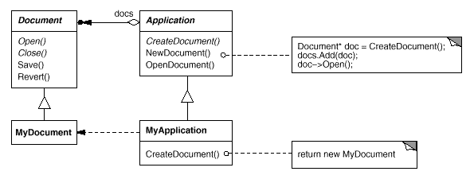
Application subclasses redefine an abstract CreateDocument operation on Application to return the appropriate Document subclass. Once an Application subclass is instantiated, it can then instantiate application-specific Documents without knowing their class. We call CreateDocument a factory method because it's responsible for manufacturing an object.
Applicability
Use the Factory Method pattern when
a class can't anticipate the class of objects it must create.
a class wants its subclasses to specify the objects it creates.
classes delegate responsibility to one of several helper subclasses, and you want to localize the knowledge of which helper subclass is the delegate.
Structure
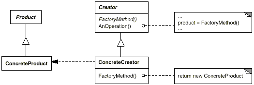
Participants
Product (Document)
defines the interface of objects the factory method creates.
ConcreteProduct (MyDocument)
implements the Product interface.
Creator (Application)
declares the factory method, which returns an object of type Product. Creator may also define a default implementation of the factory method that returns a default ConcreteProduct object.
may call the factory method to create a Product object.
ConcreteCreator (MyApplication)
overrides the factory method to return an instance of a ConcreteProduct.
Collaborations
Creator relies on its subclasses to define the factory method so that it returns an instance of the appropriate ConcreteProduct.
Consequences
Factory methods eliminate the need to bind application-specific classes into your code. The code only deals with the Product interface; therefore it can work with any user-defined ConcreteProduct classes.
A potential disadvantage of factory methods is that clients might have to subclass the Creator class just to create a particular ConcreteProduct object. Subclassing is fine when the client has to subclass the Creator class anyway, but otherwise the client now must deal with another point of evolution.
Here are two additional consequences of the Factory Method pattern:
Provides hooks for subclasses. Creating objects inside a class with a factory method is always more flexible than creating an object directly. Factory Method gives subclasses a hook for providing an extended version of an object.
In the Document example, the Document class could define a factory method called CreateFileDialog that creates a default file dialog object for opening an existing document. A Document subclass can define an application-specific file dialog by overriding this factory method. In this case the factory method is not abstract but provides a reasonable default implementation.
Connects parallel class hierarchies. In the examples we've considered so far, the factory method is only called by Creators. But this doesn't have to be the case; clients can find factory methods useful, especially in the case of parallel class hierarchies.
Parallel class hierarchies result when a class delegates some of its responsibilities to a separate class. Consider graphical figures that can be manipulated interactively; that is, they can be stretched, moved, or rotated using the mouse. Implementing such interactions isn't always easy. It often requires storing and updating information that records the state of the manipulation at a given time. This state is needed only during manipulation; therefore it needn't be kept in the figure object. Moreover, different figures behave differently when the user manipulates them. For example, stretching a line figure might have the effect of moving an endpoint, whereas stretching a text figure may change its line spacing.
With these constraints, it's better to use a separate Manipulator object that implements the interaction and keeps track of any manipulation-specific state that's needed. Different figures will use different Manipulator subclasses to handle particular interactions. The resulting Manipulator class hierarchy parallels (at least partially) the Figure class hierarchy:
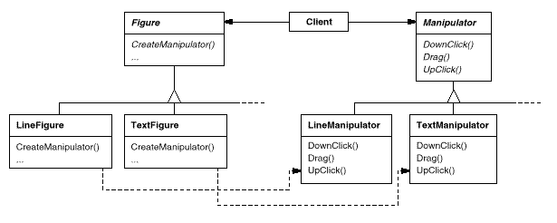
The Figure class provides a CreateManipulator factory method that lets clients create a Figure's corresponding Manipulator. Figure subclasses override this method to return an instance of the Manipulator subclass that's right for them. Alternatively, the Figure class may implement CreateManipulator to return a default Manipulator instance, and Figure subclasses may simply inherit that default. The Figure classes that do so need no corresponding Manipulator subclass—hence the hierarchies are only partially parallel.
Notice how the factory method defines the connection between the two class hierarchies. It localizes knowledge of which classes belong together.
Implementation
Consider the following issues when applying the Factory Method pattern:
Two major varieties. The two main variations of the Factory Method pattern are (1) the case when the Creator class is an abstract class and does not provide an implementation for the factory method it declares, and (2) the case when the Creator is a concrete class and provides a default implementation for the factory method. It's also possible to have an abstract class that defines a default implementation, but this is less common.
The first case requires subclasses to define an implementation, because there's no reasonable default. It gets around the dilemma of having to instantiate unforeseeable classes. In the second case, the concrete Creator uses the factory method primarily for flexibility. It's following a rule that says, Create objects in a separate operation so that subclasses can override the way they're created. This rule ensures that designers of subclasses can change the class of objects their parent class instantiates if necessary.
Parameterized factory methods. Another variation on the pattern lets the factory method create multiple kinds of products. The factory method takes a parameter that identifies the kind of object to create. All objects the factory method creates will share the Product interface. In the Document example, Application might support different kinds of Documents. You pass CreateDocument an extra parameter to specify the kind of document to create.
The Unidraw graphical editing framework [VL90] uses this approach for reconstructing objects saved on disk. Unidraw defines a Creator class with a factory method Create that takes a class identifier as an argument. The class identifier specifies the class to instantiate. When Unidraw saves an object to disk, it writes out the class identifier first and then its instance variables. When it reconstructs the object from disk, it reads the class identifier first.
Once the class identifier is read, the framework calls Create, passing the identifier as the parameter. Create looks up the constructor for the corresponding class and uses it to instantiate the object. Last, Create calls the object's Read operation, which reads the remaining information on the disk and initializes the object's instance variables.
A parameterized factory method has the following general form, where MyProduct and YourProduct are subclasses of Product:
classCreator{public:virtualProduct*Create(ProductId);};Product*Creator::Create(ProductIdid){if(id==MINE)returnnewMyProduct;if(id==YOURS)returnnewYourProduct;// repeat for remaining products...
return0;}
Overriding a parameterized factory method lets you easily and selectively extend or change the products that a Creator produces. You can introduce new identifiers for new kinds of products, or you can associate existing identifiers with different products.
For example, a subclass MyCreator could swap MyProduct and YourProduct and support a new TheirProduct subclass:
Product*MyCreator::Create(ProductIdid){if(id==YOURS)returnnewMyProduct;if(id==MINE)returnnewYourProduct;// N.B.: switched YOURS and MINE
if(id==THEIRS)returnnewTheirProduct;returnCreator::Create(id);// called if all others fail
}
Notice that the last thing this operation does is call Create on the parent class. That's because MyCreator::Create handles only YOURS, MINE, and THEIRS differently than the parent class. It isn't interested in other classes. Hence MyCreator extends the kinds of products created, and it defers responsibility for creating all but a few products to its parent.
Language-specific variants and issues. Different languages lend themselves to other interesting variations and caveats.
Smalltalk programs often use a method that returns the class of the object to be instantiated. A Creator factory method can use this value to create a product, and a ConcreteCreator may store or even compute this value. The result is an even later binding for the type of ConcreteProduct to be instantiated.
A Smalltalk version of the Document example can define a documentClass method on Application. The documentClass method returns the proper Document class for instantiating documents. The implementation of documentClass in MyApplication returns the MyDocument class. Thus in class Application we have
which returns the class MyDocument to be instantiated to Application.
An even more flexible approach akin to parameterized factory methods is to store the class to be created as a class variable of Application. That way you don't have to subclass Application to vary the product.
Factory methods in C++ are always virtual functions and are often pure virtual. Just be careful not to call factory methods in the Creator's constructor—the factory method in the ConcreteCreator won't be available yet.
You can avoid this by being careful to access products solely through accessor operations that create the product on demand. Instead of creating the concrete product in the constructor, the constructor merely initializes it to 0. The accessor returns the product. But first it checks to make sure the product exists, and if it doesn't, the accessor creates it. This technique is sometimes called lazy initialization. The following code shows a typical implementation:
Using templates to avoid subclassing. As we've mentioned, another potential problem with factory methods is that they might force you to subclass just to create the appropriate Product objects. Another way to get around this in C++ is to provide a template subclass of Creator that's parameterized by the Product class:
Naming conventions. It's good practice to use naming conventions that make it clear you're using factory methods. For example, the MacApp Macintosh application framework [App89] always declares the abstract operation that defines the factory method as Class* DoMakeClass(), where Class is the Product class.
Sample Code
The function CreateMaze builds and returns a maze. One problem with this function is that it hard-codes the classes of maze, rooms, doors, and walls. We'll introduce factory methods to let subclasses choose these components.
First we'll define factory methods in MazeGame for creating the maze, room, wall, and door objects:
Each factory method returns a maze component of a given type. MazeGame provides default implementations that return the simplest kinds of maze, rooms, walls, and doors.
Now we can rewrite CreateMaze to use these factory methods:
Different games can subclass MazeGame to specialize parts of the maze. MazeGame subclasses can redefine some or all of the factory methods to specify variations in products. For example, a BombedMazeGame can redefine the Room and Wall products to return the bombed varieties:
Factory methods pervade toolkits and frameworks. The preceding document example is a typical use in MacApp and ET++ [WGM88]. The manipulator example is from Unidraw.
Class View in the Smalltalk-80 Model/View/Controller framework has a method defaultController that creates a controller, and this might appear to be a factory method [Par90]. But subclasses of View specify the class of their default controller by defining defaultControllerClass, which returns the class from which defaultController creates instances. So defaultControllerClass is the real factory method, that is, the method that subclasses should override.
A more esoteric example in Smalltalk-80 is the factory method parserClass defined by Behavior (a superclass of all objects representing classes). This enables a class to use a customized parser for its source code. For example, a client can define a class SQLParser to analyze the source code of a class with embedded SQL statements. The Behavior class implements parserClass to return the standard Smalltalk Parser class. A class that includes embedded SQL statements overrides this method (as a class method) and returns the SQLParser class.
The Orbix ORB system from IONA Technologies [ION94] uses Factory Method to generate an appropriate type of proxy (see Proxy) when an object requests a reference to a remote object. Factory Method makes it easy to replace the default proxy with one that uses client-side caching, for example.
Related Patterns
Abstract Factory is often implemented with factory methods. The Motivation example in the Abstract Factory pattern illustrates Factory Method as well.
Factory methods are usually called within Template Methods (360). In the document example above, NewDocument is a template method.
Prototypes (133) don't require subclassing Creator. However, they often require an Initialize operation on the Product class. Creator uses Initialize to initialize the object. Factory Method doesn't require such an operation.
Prototype
Intent
Specify the kinds of objects to create using a prototypical instance, and create new objects by copying this prototype.
Motivation
You could build an editor for music scores by customizing a general framework for graphical editors and adding new objects that represent notes, rests, and staves. The editor framework may have a palette of tools for adding these music objects to the score. The palette would also include tools for selecting, moving, and otherwise manipulating music objects. Users will click on the quarter-note tool and use it to add quarter notes to the score. Or they can use the move tool to move a note up or down on the staff, thereby changing its pitch.
Let's assume the framework provides an abstract Graphic class for graphical components, like notes and staves. Moreover, it'll provide an abstract Tool class for defining tools like those in the palette. The framework also predefines a GraphicTool subclass for tools that create instances of graphical objects and add them to the document.
But GraphicTool presents a problem to the framework designer. The classes for notes and staves are specific to our application, but the GraphicTool class belongs to the framework. GraphicTool doesn't know how to create instances of our music classes to add to the score. We could subclass GraphicTool for each kind of music object, but that would produce lots of subclasses that differ only in the kind of music object they instantiate. We know object composition is a flexible alternative to subclassing. The question is, how can the framework use it to parameterize instances of GraphicTool by the class of Graphic they're supposed to create?
The solution lies in making GraphicTool create a new Graphic by copying or cloning an instance of a Graphic subclass. We call this instance a prototype. GraphicTool is parameterized by the prototype it should clone and add to the document. If all Graphic subclasses support a Clone operation, then the GraphicTool can clone any kind of Graphic.
So in our music editor, each tool for creating a music object is an instance of GraphicTool that's initialized with a different prototype. Each GraphicTool instance will produce a music object by cloning its prototype and adding the clone to the score.
We can use the Prototype pattern to reduce the number of classes even further. We have separate classes for whole notes and half notes, but that's probably unnecessary. Instead they could be instances of the same class initialized with different bitmaps and durations. A tool for creating whole notes becomes just a GraphicTool whose prototype is a MusicalNote initialized to be a whole note. This can reduce the number of classes in the system dramatically. It also makes it easier to add a new kind of note to the music editor.
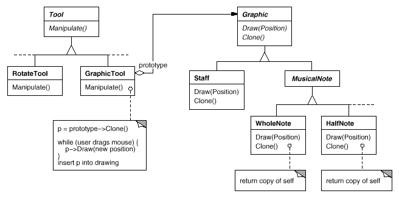
Applicability
Use the Prototype pattern when a system should be independent of how its products are created, composed, and represented; and
when the classes to instantiate are specified at run-time, for example, by dynamic loading; or
to avoid building a class hierarchy of factories that parallels the class hierarchy of products; or
when instances of a class can have one of only a few different combinations of state. It may be more convenient to install a corresponding number of prototypes and clone them rather than instantiating the class manually, each time with the appropriate state.
Structure
Participants
Prototype (Graphic)
declares an interface for cloning itself.
ConcretePrototype (Staff, WholeNote, HalfNote)
implements an operation for cloning itself.
Client (GraphicTool)
creates a new object by asking a prototype to clone itself.
Collaborations
A client asks a prototype to clone itself.
Consequences
Prototype has many of the same consequences that Abstract Factory and Builder have: It hides the concrete product classes from the client, thereby reducing the number of names clients know about. Moreover, these patterns let a client work with application-specific classes without modification.
Additional benefits of the Prototype pattern are listed below.
Adding and removing products at run-time. Prototypes let you incorporate a new concrete product class into a system simply by registering a prototypical instance with the client. That's a bit more flexible than other creational patterns, because a client can install and remove prototypes at run-time.
Specifying new objects by varying values. Highly dynamic systems let you define new behavior through object composition—by specifying values for an object's variables, for example—and not by defining new classes. You effectively define new kinds of objects by instantiating existing classes and registering the instances as prototypes of client objects. A client can exhibit new behavior by delegating responsibility to the prototype.
This kind of design lets users define new classes without programming. In fact, cloning a prototype is similar to instantiating a class. The Prototype pattern can greatly reduce the number of classes a system needs. In our music editor, one GraphicTool class can create a limitless variety of music objects.
Specifying new objects by varying structure. Many applications build objects from parts and subparts. Editors for circuit design, for example, build circuits out of subcircuits.13 For convenience, such applications often let you instantiate complex, user-defined structures, say, to use a specific subcircuit again and again.
The Prototype pattern supports this as well. We simply add this subcircuit as a prototype to the palette of available circuit elements. As long as the composite circuit object implements Clone as a deep copy, circuits with different structures can be prototypes.
Reduced subclassing.Factory Method often produces a hierarchy of Creator classes that parallels the product class hierarchy. The Prototype pattern lets you clone a prototype instead of asking a factory method to make a new object. Hence you don't need a Creator class hierarchy at all. This benefit applies primarily to languages like C++ that don't treat classes as first-class objects. Languages that do, like Smalltalk and Objective C, derive less benefit, since you can always use a class object as a creator. Class objects already act like prototypes in these languages.
Configuring an application with classes dynamically. Some run-time environments let you load classes into an application dynamically. The Prototype pattern is the key to exploiting such facilities in a language like C++.
An application that wants to create instances of a dynamically loaded class won't be able to reference its constructor statically. Instead, the run-time environment creates an instance of each class automatically when it's loaded, and it registers the instance with a prototype manager (see the Implementation section). Then the application can ask the prototype manager for instances of newly loaded classes, classes that weren't linked with the program originally. The ET++ application framework [WGM88] has a run-time system that uses this scheme.
The main liability of the Prototype pattern is that each subclass of Prototype must implement the Clone operation, which may be difficult. For example, adding Clone is difficult when the classes under consideration already exist. Implementing Clone can be difficult when their internals include objects that don't support copying or have circular references.
Implementation
Prototype is particularly useful with static languages like C++, where classes are not objects, and little or no type information is available at run-time. It's less important in languages like Smalltalk or Objective C that provide what amounts to a prototype (i.e., a class object) for creating instances of each class. This pattern is built into prototype-based languages like Self [US87], in which all object creation happens by cloning a prototype.
Consider the following issues when implementing prototypes:
Using a prototype manager. When the number of prototypes in a system isn't fixed (that is, they can be created and destroyed dynamically), keep a registry of available prototypes. Clients won't manage prototypes themselves but will store and retrieve them from the registry. A client will ask the registry for a prototype before cloning it. We call this registry a prototype manager.
A prototype manager is an associative store that returns the prototype matching a given key. It has operations for registering a prototype under a key and for unregistering it. Clients can change or even browse through the registry at run-time. This lets clients extend and take inventory on the system without writing code.
Implementing the Clone operation. The hardest part of the Prototype pattern is implementing the Clone operation correctly. It's particularly tricky when object structures contain circular references.
Most languages provide some support for cloning objects. For example, Smalltalk provides an implementation of copy that's inherited by all subclasses of Object. C++ provides a copy constructor. But these facilities don't solve the shallow copy versus deep copy problem [GR83]. That is, does cloning an object in turn clone its instance variables, or do the clone and original just share the variables?
A shallow copy is simple and often sufficient, and that's what Smalltalk provides by default. The default copy constructor in C++ does a member-wise copy, which means pointers will be shared between the copy and the original. But cloning prototypes with complex structures usually requires a deep copy, because the clone and the original must be independent. Therefore you must ensure that the clone's components are clones of the prototype's components. Cloning forces you to decide what if anything will be shared.
If objects in the system provide Save and Load operations, then you can use them to provide a default implementation of Clone simply by saving the object and loading it back immediately. The Save operation saves the object into a memory buffer, and Load creates a duplicate by reconstructing the object from the buffer.
Initializing clones. While some clients are perfectly happy with the clone as is, others will want to initialize some or all of its internal state to values of their choosing. You generally can't pass these values in the Clone operation, because their number will vary between classes of prototypes. Some prototypes might need multiple initialization parameters; others won't need any. Passing parameters in the Clone operation precludes a uniform cloning interface.
It might be the case that your prototype classes already define operations for (re)setting key pieces of state. If so, clients may use these operations immediately after cloning. If not, then you may have to introduce an Initialize operation (see the Sample Code section) that takes initialization parameters as arguments and sets the clone's internal state accordingly. Beware of deep-copying Clone operations—the copies may have to be deleted (either explicitly or within Initialize) before you reinitialize them.
Sample Code
We'll define a MazePrototypeFactory subclass of the MazeFactory class. MazePrototypeFactory will be initialized with prototypes of the objects it will create so that we don't have to subclass it just to change the classes of walls or rooms it creates.
MazePrototypeFactory augments the MazeFactory interface with a constructor that takes the prototypes as arguments:
The member functions for creating walls, rooms, and doors are similar: Each clones a prototype and then initializes it. Here are the definitions of MakeWall and MakeDoor:
To change the type of maze, we initialize MazePrototypeFactory with a different set of prototypes. The following call creates a maze with a BombedDoor and a RoomWithABomb:
An object that can be used as a prototype, such as an instance of Wall, must support the Clone operation. It must also have a copy constructor for cloning. It may also need a separate operation for reinitializing internal state. We'll add the Initialize operation to Door to let clients initialize the clone's rooms.
Compare the following definition of Door to the one on page 96:
Although BombedWall::Clone returns a Wall*, its implementation returns a pointer to a new instance of a subclass, that is, a BombedWall*. We define Clone like this in the base class to ensure that clients that clone the prototype don't have to know about their concrete subclasses. Clients should never need to downcast the return value of Clone to the desired type.
In Smalltalk, you can reuse the standard copy method inherited from Object to clone any MapSite. You can use MazeFactory to produce the prototypes you'll need; for example, you can create a room by supplying the name #room. The MazeFactory has a dictionary that maps names to prototypes. Its make: method looks like this:
make:partName^ (partCatalogat:partName) copy
Given appropriate methods for initializing the MazeFactory with prototypes, you could create a simple maze with the following code:
Perhaps the first example of the Prototype pattern was in Ivan Sutherland's Sketchpad system [Sut63]. The first widely known application of the pattern in an object-oriented language was in ThingLab, where users could form a composite object and then promote it to a prototype by installing it in a library of reusable objects [Bor81]. Goldberg and Robson mention prototypes as a pattern [GR83], but Coplien [Cop92] gives a much more complete description. He describes idioms related to the Prototype pattern for C++ and gives many examples and variations.
Etgdb is a debugger front-end based on ET++ that provides a point-and-click interface to different line-oriented debuggers. Each debugger has a corresponding DebuggerAdaptor subclass. For example, GdbAdaptor adapts etgdb to the command syntax of GNU gdb, while SunDbxAdaptor adapts etgdb to Sun's dbx debugger. Etgdb does not have a set of DebuggerAdaptor classes hard-coded into it. Instead, it reads the name of the adaptor to use from an environment variable, looks for a prototype with the specified name in a global table, and then clones the prototype. New debuggers can be added to etgdb by linking it with the DebuggerAdaptor that works for that debugger.
The interaction technique library in Mode Composer stores prototypes of objects that support various interaction techniques [Sha90]. Any interaction technique created by the Mode Composer can be used as a prototype by placing it in this library. The Prototype pattern lets Mode Composer support an unlimited set of interaction techniques.
The music editor example discussed earlier is based on the Unidraw drawing framework [VL90].
Related Patterns
Prototype and Abstract Factory are competing patterns in some ways, as we discuss at the end of this chapter. They can also be used together, however. An Abstract Factory might store a set of prototypes from which to clone and return product objects.
Designs that make heavy use of the Composite and Decorator patterns often can benefit from Prototype as well.
Singleton
Intent
Ensure a class only has one instance, and provide a global point of access to it.
Motivation
It's important for some classes to have exactly one instance. Although there can be many printers in a system, there should be only one printer spooler. There should be only one file system and one window manager. A digital filter will have one A/D converter. An accounting system will be dedicated to serving one company.
How do we ensure that a class has only one instance and that the instance is easily accessible? A global variable makes an object accessible, but it doesn't keep you from instantiating multiple objects.
A better solution is to make the class itself responsible for keeping track of its sole instance. The class can ensure that no other instance can be created (by intercepting requests to create new objects), and it can provide a way to access the instance. This is the Singleton pattern.
Applicability
Use the Singleton pattern when
there must be exactly one instance of a class, and it must be accessible to clients from a well-known access point.
when the sole instance should be extensible by subclassing, and clients should be able to use an extended instance without modifying their code.
Structure
Participants
Singleton
defines an Instance operation that lets clients access its unique instance. Instance is a class operation (that is, a class method in Smalltalk and a static member function in C++).
may be responsible for creating its own unique instance.
Collaborations
Clients access a Singleton instance solely through Singleton's Instance operation.
Consequences
The Singleton pattern has several benefits:
Controlled access to sole instance. Because the Singleton class encapsulates its sole instance, it can have strict control over how and when clients access it.
Reduced name space. The Singleton pattern is an improvement over global variables. It avoids polluting the name space with global variables that store sole instances.
Permits refinement of operations and representation. The Singleton class may be subclassed, and it's easy to configure an application with an instance of this extended class. You can configure the application with an instance of the class you need at run-time.
Permits a variable number of instances. The pattern makes it easy to change your mind and allow more than one instance of the Singleton class. Moreover, you can use the same approach to control the number of instances that the application uses. Only the operation that grants access to the Singleton instance needs to change.
More flexible than class operations. Another way to package a singleton's functionality is to use class operations (that is, static member functions in C++ or class methods in Smalltalk). But both of these language techniques make it hard to change a design to allow more than one instance of a class. Moreover, static member functions in C++ are never virtual, so subclasses can't override them polymorphically.
Implementation
Here are implementation issues to consider when using the Singleton pattern:
Ensuring a unique instance. The Singleton pattern makes the sole instance a normal instance of a class, but that class is written so that only one instance can ever be created. A common way to do this is to hide the operation that creates the instance behind a class operation (that is, either a static member function or a class method) that guarantees only one instance is created. This operation has access to the variable that holds the unique instance, and it ensures the variable is initialized with the unique instance before returning its value. This approach ensures that a singleton is created and initialized before its first use.
You can define the class operation in C++ with a static member function Instance of the Singleton class. Singleton also defines a static member variable _instance that contains a pointer to its unique instance.
Clients access the singleton exclusively through the Instance member function. The variable _instance is initialized to 0, and the static member function Instance returns its value, initializing it with the unique instance if it is 0. Instance uses lazy initialization; the value it returns isn't created and stored until it's first accessed.
Notice that the constructor is protected. A client that tries to instantiate Singleton directly will get an error at compile-time. This ensures that only one instance can ever get created.
Moreover, since the _instance is a pointer to a Singleton object, the Instance member function can assign a pointer to a subclass of Singleton to this variable. We'll give an example of this in the Sample Code.
There's another thing to note about the C++ implementation. It isn't enough to define the singleton as a global or static object and then rely on automatic initialization. There are three reasons for this:
We can't guarantee that only one instance of a static object will ever be declared.
We might not have enough information to instantiate every singleton at static initialization time. A singleton might require values that are computed later in the program's execution.
C++ doesn't define the order in which constructors for global objects are called across translation units [ES90]. This means that no dependencies can exist between singletons; if any do, then errors are inevitable.
An added (albeit small) liability of the global/static object approach is that it forces all singletons to be created whether they are used or not. Using a static member function avoids all of these problems.
In Smalltalk, the function that returns the unique instance is implemented as a class method on the Singleton class. To ensure that only one instance is created, override the new operation. The resulting Singleton class might have the following two class methods, where SoleInstance is a class variable that is not used anywhere else:
newselferror:'cannot create new object'defaultSoleInstanceisNilifTrue: [SoleInstance:=supernew].^SoleInstance
Subclassing the Singleton class. The main issue is not so much defining the subclass but installing its unique instance so that clients will be able to use it. In essence, the variable that refers to the singleton instance must get initialized with an instance of the subclass. The simplest technique is to determine which singleton you want to use in the Singleton's Instance operation. An example in the Sample Code shows how to implement this technique with environment variables.
Another way to choose the subclass of Singleton is to take the implementation of Instance out of the parent class (e.g., MazeFactory) and put it in the subclass. That lets a C++ programmer decide the class of singleton at link-time (e.g., by linking in an object file containing a different implementation) but keeps it hidden from the clients of the singleton.
The link approach fixes the choice of singleton class at link-time, which makes it hard to choose the singleton class at run-time. Using conditional statements to determine the subclass is more flexible, but it hard-wires the set of possible Singleton classes. Neither approach is flexible enough in all cases.
A more flexible approach uses a registry of singletons. Instead of having Instance define the set of possible Singleton classes, the Singleton classes can register their singleton instance by name in a well-known registry.
The registry maps between string names and singletons. When Instance needs a singleton, it consults the registry, asking for the singleton by name. The registry looks up the corresponding singleton (if it exists) and returns it. This approach frees Instance from knowing all possible Singleton classes or instances. All it requires is a common interface for all Singleton classes that includes operations for the registry:
Register registers the Singleton instance under the given name. To keep the registry simple, we'll have it store a list of NameSingletonPair objects. Each NameSingletonPair maps a name to a singleton. The Lookup operation finds a singleton given its name. We'll assume that an environment variable specifies the name of the singleton desired.
Singleton*Singleton::Instance(){if(_instance==0){constchar*singletonName=getenv("SINGLETON");// user or environment supplies this at startup
_instance=Lookup(singletonName);// Lookup returns 0 if there's no such singleton
}return_instance;}
Where do Singleton classes register themselves? One possibility is in their constructor. For example, a MySingleton subclass could do the following:
Of course, the constructor won't get called unless someone instantiates the class, which echoes the problem the Singleton pattern is trying to solve! We can get around this problem in C++ by defining a static instance of MySingleton. For example, we can define
staticMySingletontheSingleton;
in the file that contains MySingleton's implementation.
No longer is the Singleton class responsible for creating the singleton. Instead, its primary responsibility is to make the singleton object of choice accessible in the system. The static object approach still has a potential drawback—namely that instances of all possible Singleton subclasses must be created, or else they won't get registered.
Sample Code
Suppose we define a MazeFactory class for building mazes as described in Secction Abstract Factory: Sample Code. MazeFactory defines an interface for building different parts of a maze. Subclasses can redefine the operations to return instances of specialized product classes, like BombedWall objects instead of plain Wall objects.
What's relevant here is that the Maze application needs only one instance of a maze factory, and that instance should be available to code that builds any part of the maze. This is where the Singleton pattern comes in. By making the MazeFactory a singleton, we make the maze object globally accessible without resorting to global variables.
For simplicity, let's assume we'll never subclass MazeFactory. (We'll consider the alternative in a moment.) We make it a Singleton class in C++ by adding a static Instance operation and a static _instance member to hold the one and only instance. We must also protect the constructor to prevent accidental instantiation, which might lead to more than one instance.
classMazeFactory{public:staticMazeFactory*Instance();// existing interface goes here
protected:MazeFactory();private:staticMazeFactory*_instance;};
Now let's consider what happens when there are subclasses of MazeFactory, and the application must decide which one to use. We'll select the kind of maze through an environment variable and add code that instantiates the proper MazeFactory subclass based on the environment variable's value. The Instance operation is a good place to put this code, because it already instantiates MazeFactory:
MazeFactory*MazeFactory::Instance(){if(_instance==0){constchar*mazeStyle=getenv("MAZESTYLE");if(strcmp(mazeStyle,"bombed")==0){_instance=newBombedMazeFactory;}elseif(strcmp(mazeStyle,"enchanted")==0){_instance=newEnchantedMazeFactory;// ... other possible subclasses
}else{// default
_instance=newMazeFactory;}}return_instance;}
Note that Instance must be modified whenever you define a new subclass of MazeFactory. That might not be a problem in this application, but it might be for abstract factories defined in a framework.
A possible solution would be to use the registry approach described in the Implementation section. Dynamic linking could be useful here as well—it would keep the application from having to load all the subclasses that are not used.
Known Uses
An example of the Singleton pattern in Smalltalk-80 [Par90] is the set of changes to the code, which is ChangeSet current. A more subtle example is the relationship between classes and their metaclasses. A metaclass is the class of a class, and each metaclass has one instance. Metaclasses do not have names (except indirectly through their sole instance), but they keep track of their sole instance and will not normally create another.
The InterViews user interface toolkit [LCI+92] uses the Singleton pattern to access the unique instance of its Session and WidgetKit classes, among others. Session defines the application's main event dispatch loop, stores the user's database of stylistic preferences, and manages connections to one or more physical displays. WidgetKit is an Abstract Factory for defining the look and feel of user interface widgets. The WidgetKit::instance() operation determines the particular WidgetKit subclass that's instantiated based on an environment variable that Session defines. A similar operation on Session determines whether monochrome or color displays are supported and configures the singleton Session instance accordingly.
There are two common ways to parameterize a system by the classes ofobjects it creates. One way is to subclass the class that creates theobjects; this corresponds to using the Factory Method pattern. The main drawback of thisapproach is that it can require creating a new subclass just to changethe class of the product. Such changes can cascade. For example, when the product creator is itself created by a factory method, thenyou have to override its creator as well.
The other way to parameterize a system relies more on objectcomposition: Define an object that's responsible for knowing the classof the product objects, and make it a parameter of the system. Thisis a key aspect of the Abstract Factory, Builder, and Prototype patterns. All three involve creating a new factory object whoseresponsibility is to create product objects. Abstract Factory has thefactory object producing objects of several classes. Builder has thefactory object building a complex product incrementally using acorrespondingly complex protocol. Prototype has the factory objectbuilding a product by copying a prototype object. In this case, thefactory object and the prototype are the same object, because theprototype is responsible for returning the product.
Consider the drawing editor framework described in the Prototypepattern. There are several ways to parameterize a GraphicTool by theclass of product:
By applying the Factory Method pattern, a subclass of GraphicTool will becreated for each subclass of Graphic in the palette. GraphicTool willhave a NewGraphic operation that each GraphicTool subclass willredefine.
By applying the Abstract Factory pattern, there will be a class hierarchyof GraphicsFactories, one for each Graphic subclass. Each factorycreates just one product in this case: CircleFactory will createCircles, LineFactory will create Lines, and so on. A GraphicTool willbe parameterized with a factory for creating the appropriate kind ofGraphics.
By applying the Prototype pattern, each subclass of Graphics willimplement the Clone operation, and a GraphicTool will be parameterizedwith a prototype of the Graphic it creates.
Which pattern is best depends on many factors. In our drawing editorframework, the Factory Method pattern is easiest to use at first. It's easy to define a new subclass of GraphicTool, and the instancesof GraphicTool are created only when the palette is defined. The maindisadvantage here is that GraphicTool subclasses proliferate, and noneof them does very much.
Abstract Factory doesn't offer much of an improvement, because itrequires an equally large GraphicsFactory class hierarchy. AbstractFactory would be preferable to Factory Method only if there werealready a GraphicsFactory class hierarchy—either because thecompiler provides it automatically (as in Smalltalk or Objective C) orbecause it's needed in another part of the system.
Overall, the Prototype pattern is probably the best for the drawingeditor framework, because it only requires implementing a Cloneoperation on each Graphics class. That reduces the number of classes, and Clone can be used for purposes other than pure instantiation (e.g.,a Duplicate menu operation).
Factory Method makes a design more customizable and only a little morecomplicated. Other design patterns require new classes, whereasFactory Method only requires a new operation. People often useFactory Method as the standard way to create objects, but it isn'tnecessary when the class that's instantiated never changes or wheninstantiation takes place in an operation that subclasses can easilyoverride, such as an initialization operation.
Designs that use Abstract Factory, Prototype, or Builder are even moreflexible than those that use Factory Method, but they're also morecomplex. Often, designs start out using Factory Method and evolvetoward the other creational patterns as the designer discovers wheremore flexibility is needed. Knowing many design patterns gives youmore choices when trading off one design criterion against another.
Structural Patterns
Structural patterns are concerned with how classes and objects arecomposed to form larger structures. Structural class patterns use inheritance to compose interfacesor implementations. As a simple example, consider how multipleinheritance mixes two or more classes into one. The result is a classthat combines the properties of its parent classes. This pattern isparticularly useful for making independently developed class librarieswork together. Another example is the class form of the Adapter pattern. In general, an adapter makes oneinterface (the adaptee's) conform to another, thereby providing auniform abstraction of different interfaces. A class adapteraccomplishes this by inheriting privately from an adaptee class. Theadapter then expresses its interface in terms of the adaptee's.
Rather than composing interfaces or implementations, structural object patterns describe ways to compose objects to realize newfunctionality. The added flexibility of object composition comes fromthe ability to change the composition at run-time, which is impossiblewith static class composition.
Composite is an example of a structural objectpattern. It describes how to build a class hierarchy made up ofclasses for two kinds of objects: primitive and composite. Thecomposite objects let you compose primitive and other compositeobjects into arbitrarily complex structures. In the Proxy pattern, a proxy acts as a convenientsurrogate or placeholder for another object. A proxy can be used inmany ways. It can act as a local representative for an object in aremote address space. It can represent a large object that should beloaded on demand. It might protect access to a sensitive object. Proxies provide a level of indirection to specific properties ofobjects. Hence they can restrict, enhance, or alter these properties.
The Flyweight pattern defines a structure forsharing objects. Objects are shared for at least two reasons:efficiency and consistency. Flyweight focuses on sharing for spaceefficiency. Applications that use lots of objects must pay carefulattention to the cost of each object. Substantial savings can be hadby sharing objects instead of replicating them. But objects can beshared only if they don't define context-dependent state. Flyweightobjects have no such state. Any additional information they need toperform their task is passed to them when needed. With nocontext-dependent state, Flyweight objects may be shared freely.
Whereas Flyweight shows how to make lots of little objects, Facade shows how to make a single object representan entire subsystem. A facade is a representative for a set ofobjects. The facade carries out its responsibilities by forwardingmessages to the objects it represents. The Bridge pattern separates an object's abstraction from its implementation sothat you can vary them independently.
Decorator describes how to add responsibilitiesto objects dynamically. Decorator is a structural pattern thatcomposes objects recursively to allow an open-ended number ofadditional responsibilities. For example, a Decorator objectcontaining a user interface component can add a decoration like aborder or shadow to the component, or it can add functionality likescrolling and zooming. We can add two decorations simply by nestingone Decorator object within another, and so on for additionaldecorations. To accomplish this, each Decorator object must conformto the interface of its component and must forward messages to it. The Decorator can do its job (such as drawing a border around thecomponent) either before or after forwarding a message.
Many structural patterns are related to some degree. We'll discussthese relationships at the end of the chapter.
Adapter
Intent
Convert the interface of a class into another interface clients expect. Adapter lets classes work together that couldn't otherwise because of incompatible interfaces.
Also Known As
Wrapper
Motivation
Sometimes a toolkit class that's designed for reuse isn't reusable only because its interface doesn't match the domain-specific interface an application requires.
Consider for example a drawing editor that lets users draw and arrange graphical elements (lines, polygons, text, etc.) into pictures and diagrams. The drawing editor's key abstraction is the graphical object, which has an editable shape and can draw itself. The interface for graphical objects is defined by an abstract class called Shape. The editor defines a subclass of Shape for each kind of graphical object: a LineShape class for lines, a PolygonShape class for polygons, and so forth.
Classes for elementary geometric shapes like LineShape and PolygonShape are rather easy to implement, because their drawing and editing capabilities are inherently limited. But a TextShape subclass that can display and edit text is considerably more difficult to implement, since even basic text editing involves complicated screen update and buffer management. Meanwhile, an off-the-shelf user interface toolkit might already provide a sophisticated TextView class for displaying and editing text. Ideally we'd like to reuse TextView to implement TextShape, but the toolkit wasn't designed with Shape classes in mind. So we can't use TextView and Shape objects interchangeably.
How can existing and unrelated classes like TextView work in an application that expects classes with a different and incompatible interface? We could change the TextView class so that it conforms to the Shape interface, but that isn't an option unless we have the toolkit's source code. Even if we did, it wouldn't make sense to change TextView; the toolkit shouldn't have to adopt domain-specific interfaces just to make one application work.
Instead, we could define TextShape so that it adapts the TextView interface to Shape's. We can do this in one of two ways: (1) by inheriting Shape's interface and TextView's implementation or (2) by composing a TextView instance within a TextShape and implementing TextShape in terms of TextView's interface. These two approaches correspond to the class and object versions of the Adapter pattern. We call TextShape an adapter.
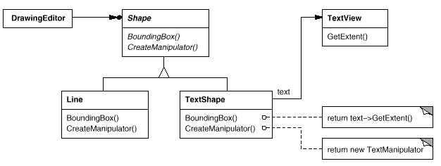
This diagram illustrates the object adapter case. It shows how BoundingBox requests, declared in class Shape, are converted to GetExtent requests defined in TextView. Since TextShape adapts TextView to the Shape interface, the drawing editor can reuse the otherwise incompatible TextView class.
Often the adapter is responsible for functionality the adapted class doesn't provide. The diagram shows how an adapter can fulfill such responsibilities. The user should be able to drag every Shape object to a new location interactively, but TextView isn't designed to do that. TextShape can add this missing functionality by implementing Shape's CreateManipulator operation, which returns an instance of the appropriate Manipulator subclass.
Manipulator is an abstract class for objects that know how to animate a Shape in response to user input, like dragging the shape to a new location. There are subclasses of Manipulator for different shapes; TextManipulator, for example, is the corresponding subclass for TextShape. By returning a TextManipulator instance, TextShape adds the functionality that TextView lacks but Shape requires.
Applicability
Use the Adapter pattern when
you want to use an existing class, and its interface does not match the one you need.
you want to create a reusable class that cooperates with unrelated or unforeseen classes, that is, classes that don't necessarily have compatible interfaces.
(object adapter only) you need to use several existing subclasses, but it's impractical to adapt their interface by subclassing every one. An object adapter can adapt the interface of its parent class.
Structure
A class adapter uses multiple inheritance to adapt one interface to another:
An object adapter relies on object composition:
Participants
Target (Shape)
defines the domain-specific interface that Client uses.
Client (DrawingEditor)
collaborates with objects conforming to the Target interface.
Adaptee (TextView)
defines an existing interface that needs adapting.
Adapter (TextShape)
adapts the interface of Adaptee to the Target interface.
Collaborations
Clients call operations on an Adapter instance. In turn, the adapter calls Adaptee operations that carry out the request.
Consequences
Class and object adapters have different trade-offs. A class adapter
adapts Adaptee to Target by committing to a concrete Adapter class. As a consequence, a class adapter won't work when we want to adapt a class and all its subclasses.
lets Adapter override some of Adaptee's behavior, since Adapter is a subclass of Adaptee.
introduces only one object, and no additional pointer indirection is needed to get to the adaptee.
An object adapter
lets a single Adapter work with many Adaptees—that is, the Adaptee itself and all of its subclasses (if any). The Adapter can also add functionality to all Adaptees at once.
makes it harder to override Adaptee behavior. It will require subclassing Adaptee and making Adapter refer to the subclass rather than the Adaptee itself.
Here are other issues to consider when using the Adapter pattern:
How much adapting does Adapter do? Adapters vary in the amount of work they do to adapt Adaptee to the Target interface. There is a spectrum of possible work, from simple interface conversion—for example, changing the names of operations—to supporting an entirely different set of operations. The amount of work Adapter does depends on how similar the Target interface is to Adaptee's.
Pluggable adapters. A class is more reusable when you minimize the assumptions other classes must make to use it. By building interface adaptation into a class, you eliminate the assumption that other classes see the same interface. Put another way, interface adaptation lets us incorporate our class into existing systems that might expect different interfaces to the class. ObjectWorks\Smalltalk [Par90] uses the term pluggable adapter to describe classes with built-in interface adaptation.
Consider a TreeDisplay widget that can display tree structures graphically. If this were a special-purpose widget for use in just one application, then we might require the objects that it displays to have a specific interface; that is, all must descend from a Tree abstract class. But if we wanted to make TreeDisplay more reusable (say we wanted to make it part of a toolkit of useful widgets), then that requirement would be unreasonable. Applications will define their own classes for tree structures. They shouldn't be forced to use our Tree abstract class. Different tree structures will have different interfaces.
In a directory hierarchy, for example, children might be accessed with a GetSubdirectories operation, whereas in an inheritance hierarchy, the corresponding operation might be called GetSubclasses. A reusable TreeDisplay widget must be able to display both kinds of hierarchies even if they use different interfaces. In other words, the TreeDisplay should have interface adaptation built into it.
We'll look at different ways to build interface adaptation into classes in the Implementation section.
Using two-way adapters to provide transparency. A potential problem with adapters is that they aren't transparent to all clients. An adapted object no longer conforms to the Adaptee interface, so it can't be used as is wherever an Adaptee object can. Two-way adapters can provide such transparency. Specifically, they're useful when two different clients need to view an object differently.
Consider the two-way adapter that integrates Unidraw, a graphical editor framework [VL90], and QOCA, a constraint-solving toolkit [HHMV92]. Both systems have classes that represent variables explicitly: Unidraw has StateVariable, and QOCA has ConstraintVariable. To make Unidraw work with QOCA, ConstraintVariable must be adapted to StateVariable; to let QOCA propagate solutions to Unidraw, StateVariable must be adapted to ConstraintVariable.
The solution involves a two-way class adapter ConstraintStateVariable, a subclass of both StateVariable and ConstraintVariable, that adapts the two interfaces to each other. Multiple inheritance is a viable solution in this case because the interfaces of the adapted classes are substantially different. The two-way class adapter conforms to both of the adapted classes and can work in either system.
Implementation
Although the implementation of Adapter is usually straightforward, here are some issues to keep in mind:
Implementing class adapters in C++. In a C++ implementation of a class adapter, Adapter would inherit publicly from Target and privately from Adaptee. Thus Adapter would be a subtype of Target but not of Adaptee.
Pluggable adapters. Let's look at three ways to implement pluggable adapters for the TreeDisplay widget described earlier, which can lay out and display a hierarchical structure automatically.
The first step, which is common to all three of the implementations discussed here, is to find a narrow interface for Adaptee, that is, the smallest subset of operations that lets us do the adaptation. A narrow interface consisting of only a couple of operations is easier to adapt than an interface with dozens of operations. For TreeDisplay, the adaptee is any hierarchical structure. A minimalist interface might include two operations, one that defines how to present a node in the hierarchical structure graphically, and another that retrieves the node's children.
The narrow interface leads to three implementation approaches:
Using abstract operations. Define corresponding abstract operations for the narrow Adaptee interface in the TreeDisplay class. Subclasses must implement the abstract operations and adapt the hierarchically structured object. For example, a DirectoryTreeDisplay subclass will implement these operations by accessing the directory structure.
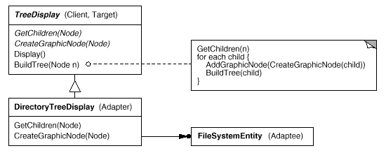
DirectoryTreeDisplay specializes the narrow interface so that it can display directory structures made up of FileSystemEntity objects.
Using delegate objects. In this approach, TreeDisplay forwards requests for accessing the hierarchical structure to a delegate object. TreeDisplay can use a different adaptation strategy by substituting a different delegate.
For example, suppose there exists a DirectoryBrowser that uses a TreeDisplay. DirectoryBrowser might make a good delegate for adapting TreeDisplay to the hierarchical directory structure. In dynamically typed languages like Smalltalk or Objective C, this approach only requires an interface for registering the delegate with the adapter. Then TreeDisplay simply forwards the requests to the delegate. NEXTSTEP [Add94] uses this approach heavily to reduce subclassing.
Statically typed languages like C++ require an explicit interface definition for the delegate. We can specify such an interface by putting the narrow interface that TreeDisplay requires into an abstract TreeAccessorDelegate class. Then we can mix this interface into the delegate of our choice—DirectoryBrowser in this case—using inheritance. We use single inheritance if the DirectoryBrowser has no existing parent class, multiple inheritance if it does. Mixing classes together like this is easier than introducing a new TreeDisplay subclass and implementing its operations individually.
Parameterized adapters. The usual way to support pluggable adapters in Smalltalk is to parameterize an adapter with one or more blocks. The block construct supports adaptation without subclassing. A block can adapt a request, and the adapter can store a block for each individual request. In our example, this means TreeDisplay stores one block for converting a node into a GraphicNode and another block for accessing a node's children.
For example, to create TreeDisplay on a directory hierarchy, we write
Shape assumes a bounding box defined by its opposing corners. In contrast, TextView is defined by an origin, height, and width. Shape also defines a CreateManipulator operation for creating a Manipulator object, which knows how to animate a shape when the user manipulates it.14 TextView has no equivalent operation. The class TextShape is an adapter between these different interfaces.
A class adapter uses multiple inheritance to adapt interfaces. The key to class adapters is to use one inheritance branch to inherit the interface and another branch to inherit the implementation. The usual way to make this distinction in C++ is to inherit the interface publicly and inherit the implementation privately. We'll use this convention to define the TextShape adapter.
Finally, we define CreateManipulator (which isn't supported by TextView) from scratch. Assume we've already implemented a TextManipulator class that supports manipulation of a TextShape.
The object adapter uses object composition to combine classes with different interfaces. In this approach, the adapter TextShape maintains a pointer to TextView.
TextShape must initialize the pointer to the TextView instance, and it does so in the constructor. It must also call operations on its TextView object whenever its own operations are called. In this example, assume that the client creates the TextView object and passes it to the TextShape constructor:
CreateManipulator's implementation doesn't change from the class adapter version, since it's implemented from scratch and doesn't reuse any existing TextView functionality.
Compare this code to the class adapter case. The object adapter requires a little more effort to write, but it's more flexible. For example, the object adapter version of TextShape will work equally well with subclasses of TextView—the client simply passes an instance of a TextView subclass to the TextShape constructor.
Known Uses
The Motivation example comes from ET++Draw, a drawing application based on ET++ [WGM88]. ET++Draw reuses the ET++ classes for text editing by using a TextShape adapter class.
InterViews 2.6 defines an Interactor abstract class for user interface elements such as scroll bars, buttons, and menus [VL88]. It also defines a Graphic abstract class for structured graphic objects such as lines, circles, polygons, and splines. Both Interactors and Graphics have graphical appearances, but they have different interfaces and implementations (they share no common parent class) and are therefore incompatible—you can't embed a structured graphic object in, say, a dialog box directly.
Instead, InterViews 2.6 defines an object adapter called GraphicBlock, a subclass of Interactor that contains a Graphic instance. The GraphicBlock adapts the interface of the Graphic class to that of Interactor. The GraphicBlock lets a Graphic instance be displayed, scrolled, and zoomed within an Interactor structure.
Pluggable adapters are common in ObjectWorks\Smalltalk [Par90]. Standard Smalltalk defines a ValueModel class for views that display a single value. ValueModel defines a value, value: interface for accessing the value. These are abstract methods. Application writers access the value with more domain-specific names like width and width:, but they shouldn't have to subclass ValueModel to adapt such application-specific names to the ValueModel interface.
Instead, ObjectWorks\Smalltalk includes a subclass of ValueModel called PluggableAdaptor. A PluggableAdaptor object adapts other objects to the ValueModel interface (value, value:). It can be parameterized with blocks for getting and setting the desired value. PluggableAdaptor uses these blocks internally to implement the value, value: interface. PluggableAdaptor also lets you pass in the selector names (e.g., width, width:) directly for syntactic convenience. It converts these selectors into the corresponding blocks automatically.
Another example from ObjectWorks\Smalltalk is the TableAdaptor class. A TableAdaptor can adapt a sequence of objects to a tabular presentation. The table displays one object per row. The client parameterizes TableAdaptor with the set of messages that a table can use to get the column values from an object.
Some classes in NeXT's AppKit [Add94] use delegate objects to perform interface adaptation. An example is the NXBrowser class that can display hierarchical lists of data. NXBrowser uses a delegate object for accessing and adapting the data.
Meyer's Marriage of Convenience [Mey88] is a form of class adapter. Meyer describes how a FixedStack class adapts the implementation of an Array class to the interface of a Stack class. The result is a stack containing a fixed number of entries.
Related Patterns
Bridge has a structure similar to an object adapter, but Bridge has a different intent: It is meant to separate an interface from its implementation so that they can be varied easily and independently. An adapter is meant to change the interface of an existing object.
Decorator enhances another object without changing its interface. A decorator is thus more transparent to the application than an adapter is. As a consequence, Decorator supports recursive composition, which isn't possible with pure adapters.
Proxy defines a representative or surrogate for another object and does not change its interface.
Bridge
Intent
Decouple an abstraction from its implementation so that the two can vary independently.
Also Known As
Handle/Body
Motivation
When an abstraction can have one of several possible implementations, the usual way to accommodate them is to use inheritance. An abstract class defines the interface to the abstraction, and concrete subclasses implement it in different ways. But this approach isn't always flexible enough. Inheritance binds an implementation to the abstraction permanently, which makes it difficult to modify, extend, and reuse abstractions and implementations independently.
Consider the implementation of a portable Window abstraction in a user interface toolkit. This abstraction should enable us to write applications that work on both the X Window System and IBM's Presentation Manager (PM), for example. Using inheritance, we could define an abstract class Window and subclasses XWindow and PMWindow that implement the Window interface for the different platforms. But this approach has two drawbacks:
It's inconvenient to extend the Window abstraction to cover different kinds of windows or new platforms. Imagine an IconWindow subclass of Window that specializes the Window abstraction for icons. To support IconWindows for both platforms, we have to implement two new classes, XIconWindow and PMIconWindow. Worse, we'll have to define two classes for every kind of window. Supporting a third platform requires yet another new Window subclass for every kind of window.
It makes client code platform-dependent. Whenever a client creates a window, it instantiates a concrete class that has a specific implementation. For example, creating an XWindow object binds the Window abstraction to the X Window implementation, which makes the client code dependent on the X Window implementation. This, in turn, makes it harder to port the client code to other platforms.
Clients should be able to create a window without committing to a concrete implementation. Only the window implementation should depend on the platform on which the application runs. Therefore client code should instantiate windows without mentioning specific platforms.
The Bridge pattern addresses these problems by putting the Window abstraction and its implementation in separate class hierarchies. There is one class hierarchy for window interfaces (Window, IconWindow, TransientWindow) and a separate hierarchy for platform-specific window implementations, with WindowImp as its root. The XWindowImp subclass, for example, provides an implementation based on the X Window System.
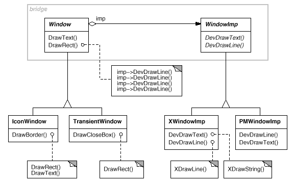
All operations on Window subclasses are implemented in terms of abstract operations from the WindowImp interface. This decouples the window abstractions from the various platform-specific implementations. We refer to the relationship between Window and WindowImp as a bridge, because it bridges the abstraction and its implementation, letting them vary independently.
Applicability
Use the Bridge pattern when
you want to avoid a permanent binding between an abstraction and its implementation. This might be the case, for example, when the implementation must be selected or switched at run-time.
both the abstractions and their implementations should be extensible by subclassing. In this case, the Bridge pattern lets you combine the different abstractions and implementations and extend them independently.
changes in the implementation of an abstraction should have no impact on clients; that is, their code should not have to be recompiled.
(C++) you want to hide the implementation of an abstraction completely from clients. In C++ the representation of a class is visible in the class interface.
you have a proliferation of classes as shown earlier in the first Motivation diagram. Such a class hierarchy indicates the need for splitting an object into two parts. Rumbaugh uses the term nested generalizations [RBP+91] to refer to such class hierarchies.
you want to share an implementation among multiple objects (perhaps using reference counting), and this fact should be hidden from the client. A simple example is Coplien's String class [Cop92], in which multiple objects can share the same string representation (StringRep).
Structure
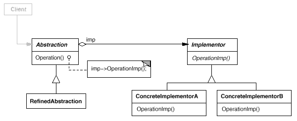
Participants
Abstraction (Window)
defines the abstraction's interface.
maintains a reference to an object of type Implementor.
RefinedAbstraction (IconWindow)
Extends the interface defined by Abstraction.
Implementor (WindowImp)
defines the interface for implementation classes. This interface doesn't have to correspond exactly to Abstraction's interface; in fact the two interfaces can be quite different. Typically the Implementor interface provides only primitive operations, and Abstraction defines higher-level operations based on these primitives.
ConcreteImplementor (XWindowImp, PMWindowImp)
implements the Implementor interface and defines its concrete implementation.
Collaborations
Abstraction forwards client requests to its Implementor object.
Consequences
The Bridge pattern has the following consequences:
Decoupling interface and implementation. An implementation is not bound permanently to an interface. The implementation of an abstraction can be configured at run-time. It's even possible for an object to change its implementation at run-time.
Decoupling Abstraction and Implementor also eliminates compile-time dependencies on the implementation. Changing an implementation class doesn't require recompiling the Abstraction class and its clients. This property is essential when you must ensure binary compatibility between different versions of a class library.
Furthermore, this decoupling encourages layering that can lead to a better-structured system. The high-level part of a system only has to know about Abstraction and Implementor.
Improved extensibility. You can extend the Abstraction and Implementor hierarchies independently.
Hiding implementation details from clients. You can shield clients from implementation details, like the sharing of implementor objects and the accompanying reference count mechanism (if any).
Implementation
Consider the following implementation issues when applying the Bridge pattern:
Only one Implementor. In situations where there's only one implementation, creating an abstract Implementor class isn't necessary. This is a degenerate case of the Bridge pattern; there's a one-to-one relationship between Abstraction and Implementor. Nevertheless, this separation is still useful when a change in the implementation of a class must not affect its existing clients—that is, they shouldn't have to be recompiled, just relinked.
Carolan [Car89] uses the term Cheshire Cat to describe this separation. In C++, the class interface of the Implementor class can be defined in a private header file that isn't provided to clients. This lets you hide an implementation of a class completely from its clients.
Creating the right Implementor object. How, when, and where do you decide which Implementor class to instantiate when there's more than one?
If Abstraction knows about all ConcreteImplementor classes, then it can instantiate one of them in its constructor; it can decide between them based on parameters passed to its constructor. If, for example, a collection class supports multiple implementations, the decision can be based on the size of the collection. A linked list implementation can be used for small collections and a hash table for larger ones.
Another approach is to choose a default implementation initially and change it later according to usage. For example, if the collection grows bigger than a certain threshold, then it switches its implementation to one that's more appropriate for a large number of items.
It's also possible to delegate the decision to another object altogether. In the Window/WindowImp example, we can introduce a factory object (see Abstract Factory) whose sole duty is to encapsulate platform-specifics. The factory knows what kind of WindowImp object to create for the platform in use; a Window simply asks it for a WindowImp, and it returns the right kind. A benefit of this approach is that Abstraction is not coupled directly to any of the Implementor classes.
Sharing implementors. Coplien illustrates how the Handle/Body idiom in C++ can be used to share implementations among several objects [Cop92]. The Body stores a reference count that the Handle class increments and decrements. The code for assigning handles with shared bodies has the following general form:
Using multiple inheritance. You can use multiple inheritance in C++ to combine an interface with its implementation [Mar91]. For example, a class can inherit publicly from Abstraction and privately from a ConcreteImplementor. But because this approach relies on static inheritance, it binds an implementation permanently to its interface. Therefore you can't implement a true Bridge with multiple inheritance—at least not in C++.
Sample Code
The following C++ code implements the Window/WindowImp example from the Motivation section. The Window class defines the window abstraction for client applications:
classWindow{public:Window(View*contents);// requests handled by window
virtualvoidDrawContents();virtualvoidOpen();virtualvoidClose();virtualvoidIconify();virtualvoidDeiconify();// requests forwarded to implementation
virtualvoidSetOrigin(constPoint&at);virtualvoidSetExtent(constPoint&extent);virtualvoidRaise();virtualvoidLower();virtualvoidDrawLine(constPoint&,constPoint&);virtualvoidDrawRect(constPoint&,constPoint&);virtualvoidDrawPolygon(constPoint[],intn);virtualvoidDrawText(constchar*,constPoint&);protected:WindowImp*GetWindowImp();View*GetView();private:WindowImp*_imp;View*_contents;// the window's contents
};
Window maintains a reference to a WindowImp, the abstract class that declares an interface to the underlying windowing system.
classWindowImp{public:virtualvoidImpTop()=0;virtualvoidImpBottom()=0;virtualvoidImpSetExtent(constPoint&)=0;virtualvoidImpSetOrigin(constPoint&)=0;virtualvoidDeviceRect(Coord,Coord,Coord,Coord)=0;virtualvoidDeviceText(constchar*,Coord,Coord)=0;virtualvoidDeviceBitmap(constchar*,Coord,Coord)=0;// lots more functions for drawing on windows...
protected:WindowImp();};
Subclasses of Window define the different kinds of windows the application might use, such as application windows, icons, transient windows for dialogs, floating palettes of tools, and so on.
For example, ApplicationWindow will implement DrawContents to draw the View instance it stores:
Many other variations of Window are possible. A TransientWindow may need to communicate with the window that created it during the dialog; hence it keeps a reference to that window. A PaletteWindow always floats above other windows. An IconDockWindow holds IconWindows and arranges them neatly.
Window operations are defined in terms of the WindowImp interface. For example, DrawRect extracts four coordinates from its two Point parameters before calling the WindowImp operation that draws the rectangle in the window:
Concrete subclasses of WindowImp support different window systems. The XWindowImp subclass supports the X Window System:
classXWindowImp:publicWindowImp{public:XWindowImp();virtualvoidDeviceRect(Coord,Coord,Coord,Coord);// remainder of public interface...
private:// lots of X window system-specific state, including:
Display*_dpy;Drawable_winid;// window id
GC_gc;// window graphic context
};
For Presentation Manager (PM), we define a PMWindowImp class:
classPMWindowImp:publicWindowImp{public:PMWindowImp();virtualvoidDeviceRect(Coord,Coord,Coord,Coord);// remainder of public interface...
private:// lots of PM window system-specific state, including:
HPS_hps;};
These subclasses implement WindowImp operations in terms of window system primitives. For example, DeviceRect is implemented for X as follows:
How does a window obtain an instance of the right WindowImp subclass? We'll assume Window has that responsibility in this example. Its GetWindowImp operation gets the right instance from an abstract factory (see Abstract Factory) that effectively encapsulates all window system specifics.
WindowSystemFactory::Instance() returns an abstract factory that manufactures all window system-specific objects. For simplicity, we've made it a Singleton and have let the Window class access the factory directly.
Known Uses
The Window example above comes from ET++ [WGM88]. In ET++, WindowImp is called WindowPort and has subclasses such as XWindowPort and SunWindowPort. The Window object creates its corresponding Implementor object by requesting it from an abstract factory called WindowSystem. WindowSystem provides an interface for creating platform-specific objects such as fonts, cursors, bitmaps, and so forth.
The ET++ Window/WindowPort design extends the Bridge pattern in that the WindowPort also keeps a reference back to the Window. The WindowPort implementor class uses this reference to notify Window about WindowPort-specific events: the arrival of input events, window resizes, etc.
Both Coplien [Cop92] and Stroustrup [Str91] mention Handle classes and give some examples. Their examples emphasize memory management issues like sharing string representations and support for variable-sized objects. Our focus is more on supporting independent extension of both an abstraction and its implementation.
libg++ [Lea88] defines classes that implement common data structures, such as Set, LinkedSet, HashSet, LinkedList, and HashTable. Set is an abstract class that defines a set abstraction, while LinkedList and HashTable are concrete implementors for a linked list and a hash table, respectively. LinkedSet and HashSet are Set implementors that bridge between Set and their concrete counterparts LinkedList and HashTable. This is an example of a degenerate bridge, because there's no abstract Implementor class.
NeXT's AppKit [Add94] uses the Bridge pattern in the implementation and display of graphical images. An image can be represented in several different ways. The optimal display of an image depends on the properties of a display device, specifically its color capabilities and its resolution. Without help from AppKit, developers would have to determine which implementation to use under various circumstances in every application.
To relieve developers of this responsibility, AppKit provides an NXImage/NXImageRep bridge. NXImage defines the interface for handling images. The implementation of images is defined in a separate NXImageRep class hierarchy having subclasses such as NXEPSImageRep, NXCachedImageRep, and NXBitMapImageRep. NXImage maintains a reference to one or more NXImageRep objects. If there is more than one image implementation, then NXImage selects the most appropriate one for the current display device. NXImage is even capable of converting one implementation to another if necessary. The interesting aspect of this Bridge variant is that NXImage can store more than one NXImageRep implementation at a time.
Related Patterns
An Abstract Factory can create and configure a particular Bridge.
The Adapter pattern is geared toward making unrelated classes work together. It is usually applied to systems after they're designed. Bridge, on the other hand, is used up-front in a design to let abstractions and implementations vary independently.
Composite
Intent
Compose objects into tree structures to represent part-whole hierarchies. Composite lets clients treat individual objects and compositions of objects uniformly.
Motivation
Graphics applications like drawing editors and schematic capture systems let users build complex diagrams out of simple components. The user can group components to form larger components, which in turn can be grouped to form still larger components. A simple implementation could define classes for graphical primitives such as Text and Lines plus other classes that act as containers for these primitives.
But there's a problem with this approach: Code that uses these classes must treat primitive and container objects differently, even if most of the time the user treats them identically. Having to distinguish these objects makes the application more complex. The Composite pattern describes how to use recursive composition so that clients don't have to make this distinction.
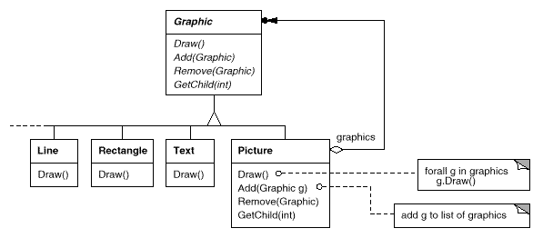
The key to the Composite pattern is an abstract class that represents both primitives and their containers. For the graphics system, this class is Graphic. Graphic declares operations like Draw that are specific to graphical objects.
It also declares operations that all composite objects share, such as operations for accessing and managing its children.
The subclasses Line, Rectangle, and Text (see preceding class diagram) define primitive graphical objects. These classes implement Draw to draw lines, rectangles, and text, respectively. Since primitive graphics have no child graphics, none of these subclasses implements child-related operations.
The Picture class defines an aggregate of Graphic objects. Picture implements Draw to call Draw on its children, and it implements child-related operations accordingly. Because the Picture interface conforms to the Graphic interface, Picture objects can compose other Pictures recursively.
The following diagram shows a typical composite object structure of recursively composed Graphic objects:
Applicability
Use the Composite pattern when
you want to represent part-whole hierarchies of objects.
you want clients to be able to ignore the difference between compositions of objects and individual objects. Clients will treat all objects in the composite structure uniformly.
Structure
A typical Composite object structure might look like this:
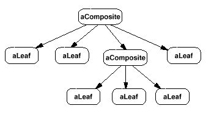
Participants
Component (Graphic)
declares the interface for objects in the composition.
implements default behavior for the interface common to all classes, as appropriate.
declares an interface for accessing and managing its child components.
(optional) defines an interface for accessing a component's parent in the recursive structure, and implements it if that's appropriate.
Leaf (Rectangle, Line, Text, etc.)
represents leaf objects in the composition. A leaf has no children.
defines behavior for primitive objects in the composition.
Composite (Picture)
defines behavior for components having children.
stores child components.
implements child-related operations in the Component interface.
Client
manipulates objects in the composition through the Component interface.
Collaborations
Clients use the Component class interface to interact with objects in the composite structure. If the recipient is a Leaf, then the request is handled directly. If the recipient is a Composite, then it usually forwards requests to its child components, possibly performing additional operations before and/or after forwarding.
Consequences
The Composite pattern
defines class hierarchies consisting of primitive objects and composite objects. Primitive objects can be composed into more complex objects, which in turn can be composed, and so on recursively. Wherever client code expects a primitive object, it can also take a composite object.
makes the client simple. Clients can treat composite structures and individual objects uniformly. Clients normally don't know (and shouldn't care) whether they're dealing with a leaf or a composite component. This simplifies client code, because it avoids having to write tag-and-case-statement-style functions over the classes that define the composition.
makes it easier to add new kinds of components. Newly defined Composite or Leaf subclasses work automatically with existing structures and client code. Clients don't have to be changed for new Component classes.
can make your design overly general. The disadvantage of making it easy to add new components is that it makes it harder to restrict the components of a composite. Sometimes you want a composite to have only certain components. With Composite, you can't rely on the type system to enforce those constraints for you. You'll have to use run-time checks instead.
Implementation
There are many issues to consider when implementing the Composite pattern:
Explicit parent references. Maintaining references from child components to their parent can simplify the traversal and management of a composite structure. The parent reference simplifies moving up the structure and deleting a component. Parent references also help support the Chain of Responsibility pattern.
The usual place to define the parent reference is in the Component class. Leaf and Composite classes can inherit the reference and the operations that manage it.
With parent references, it's essential to maintain the invariant that all children of a composite have as their parent the composite that in turn has them as children. The easiest way to ensure this is to change a component's parent only when it's being added or removed from a composite. If this can be implemented once in the Add and Remove operations of the Composite class, then it can be inherited by all the subclasses, and the invariant will be maintained automatically.
Sharing components. It's often useful to share components, for example, to reduce storage requirements. But when a component can have no more than one parent, sharing components becomes difficult.
A possible solution is for children to store multiple parents. But that can lead to ambiguities as a request propagates up the structure. The Flyweight pattern shows how to rework a design to avoid storing parents altogether. It works in cases where children can avoid sending parent requests by externalizing some or all of their state.
Maximizing the Component interface. One of the goals of the Composite pattern is to make clients unaware of the specific Leaf or Composite classes they're using. To attain this goal, the Component class should define as many common operations for Composite and Leaf classes as possible. The Component class usually provides default implementations for these operations, and Leaf and Composite subclasses will override them.
However, this goal will sometimes conflict with the principle of class hierarchy design that says a class should only define operations that are meaningful to its subclasses. There are many operations that Component supports that don't seem to make sense for Leaf classes. How can Component provide a default implementation for them?
Sometimes a little creativity shows how an operation that would appear to make sense only for Composites can be implemented for all Components by moving it to the Component class. For example, the interface for accessing children is a fundamental part of a Composite class but not necessarily Leaf classes. But if we view a Leaf as a Component that never has children, then we can define a default operation for child access in the Component class that never returns any children. Leaf classes can use the default implementation, but Composite classes will reimplement it to return their children.
The child management operations are more troublesome and are discussed in the next item.
Declaring the child management operations. Although the Composite class implements the Add and Remove operations for managing children, an important issue in the Composite pattern is which classes declare these operations in the Composite class hierarchy. Should we declare these operations in the Component and make them meaningful for Leaf classes, or should we declare and define them only in Composite and its subclasses?
The decision involves a trade-off between safety and transparency:
Defining the child management interface at the root of the class hierarchy gives you transparency, because you can treat all components uniformly. It costs you safety, however, because clients may try to do meaningless things like add and remove objects from leaves.
Defining child management in the Composite class gives you safety, because any attempt to add or remove objects from leaves will be caught at compile-time in a statically typed language like C++. But you lose transparency, because leaves and composites have different interfaces.
We have emphasized transparency over safety in this pattern. If you opt for safety, then at times you may lose type information and have to convert a component into a composite. How can you do this without resorting to a type-unsafe cast?
One approach is to declare an operation Composite* GetComposite() in the Component class. Component provides a default operation that returns a null pointer. The Composite class redefines this operation to return itself through the this pointer:
GetComposite lets you query a component to see if it's a composite. You can perform Add and Remove safely on the composite it returns.
Composite*aComposite=newComposite;Leaf*aLeaf=newLeaf;Component*aComponent;Composite*test;aComponent=aComposite;if(test=aComponent->GetComposite()){test->Add(newLeaf);}aComponent=aLeaf;if(test=aComponent->GetComposite()){test->Add(newLeaf);// will not add leaf
}
Similar tests for a Composite can be done using the C++ dynamic_cast construct.
Of course, the problem here is that we don't treat all components uniformly. We have to revert to testing for different types before taking the appropriate action.
The only way to provide transparency is to define default Add and Remove operations in Component. That creates a new problem: There's no way to implement Component::Add without introducing the possibility of it failing. You could make it do nothing, but that ignores an important consideration; that is, an attempt to add something to a leaf probably indicates a bug. In that case, the Add operation produces garbage. You could make it delete its argument, but that might not be what clients expect.
Usually it's better to make Add and Remove fail by default (perhaps by raising an exception) if the component isn't allowed to have children or if the argument of Remove isn't a child of the component, respectively.
Another alternative is to change the meaning of remove slightly. If the component maintains a parent reference, then we could redefine Component::Remove to remove itself from its parent. However, there still isn't a meaningful interpretation for a corresponding Add.
Should Component implement a list of Components? You might be tempted to define the set of children as an instance variable in the Component class where the child access and management operations are declared. But putting the child pointer in the base class incurs a space penalty for every leaf, even though a leaf never has children. This is worthwhile only if there are relatively few children in the structure.
Child ordering. Many designs specify an ordering on the children of Composite. In the earlier Graphics example, ordering may reflect front-to-back ordering. If Composites represent parse trees, then compound statements can be instances of a Composite whose children must be ordered to reflect the program.
When child ordering is an issue, you must design child access and management interfaces carefully to manage the sequence of children. The Iterator pattern can guide you in this.
Caching to improve performance. If you need to traverse or search compositions frequently, the Composite class can cache traversal or search information about its children. The Composite can cache actual results or just information that lets it short-circuit the traversal or search. For example, the Picture class from the Motivation example could cache the bounding box of its children. During drawing or selection, this cached bounding box lets the Picture avoid drawing or searching when its children aren't visible in the current window.
Changes to a component will require invalidating the caches of its parents. This works best when components know their parents. So if you're using caching, you need to define an interface for telling composites that their caches are invalid.
Who should delete components? In languages without garbage collection, it's usually best to make a Composite responsible for deleting its children when it's destroyed. An exception to this rule is when Leaf objects are immutable and thus can be shared.
What's the best data structure for storing components? Composites may use a variety of data structures to store their children, including linked lists, trees, arrays, and hash tables. The choice of data structure depends (as always) on efficiency. In fact, it isn't even necessary to use a general-purpose data structure at all. Sometimes composites have a variable for each child, although this requires each subclass of Composite to implement its own management interface. See Interpreter for an example.
Sample Code
Equipment such as computers and stereo components are often organized into part-whole or containment hierarchies. For example, a chassis can contain drives and planar boards, a bus can contain cards, and a cabinet can contain chassis, buses, and so forth. Such structures can be modeled naturally with the Composite pattern.
Equipment class defines an interface for all equipment in the part-whole hierarchy.
Equipment declares operations that return the attributes of a piece of equipment, like its power consumption and cost. Subclasses implement these operations for specific kinds of equipment. Equipment also declares a CreateIterator operation that returns an Iterator (see Appendix C) for accessing its parts. The default implementation for this operation returns a NullIterator, which iterates over the empty set.
Subclasses of Equipment might include Leaf classes that represent disk drives, integrated circuits, and switches:
CompositeEquipment defines the operations for accessing and managing subequipment. The operations Add and Remove insert and delete equipment from the list of equipment stored in the _equipment member. The operation CreateIterator returns an iterator (specifically, an instance of ListIterator) that will traverse this list.
A default implementation of NetPrice might use CreateIterator to sum the net prices of the subequipment15:
Now we can represent a computer chassis as a subclass of CompositeEquipment called Chassis. Chassis inherits the child-related operations from CompositeEquipment.
We can define other equipment containers such as Cabinet and Bus in a similar way. That gives us everything we need to assemble equipment into a (pretty simple) personal computer:
Cabinet*cabinet=newCabinet("PC Cabinet");Chassis*chassis=newChassis("PC Chassis");cabinet->Add(chassis);Bus*bus=newBus("MCA Bus");bus->Add(newCard("16Mbs Token Ring"));chassis->Add(bus);chassis->Add(newFloppyDisk("3.5in Floppy"));cout<<"The net price is "<<chassis->NetPrice()<<endl;
Known Uses
Examples of the Composite pattern can be found in almost all object-oriented systems. The original View class of Smalltalk Model/View/Controller [KP88] was a Composite, and nearly every user interface toolkit or framework has followed in its steps, including ET++ (with its VObjects [WGM88]) and InterViews (Styles [LCI+92], Graphics [VL88], and Glyphs [CL90]). It's interesting to note that the original View of Model/View/Controller had a set of subviews; in other words, View was both the Component class and the Composite class. Release 4.0 of Smalltalk-80 revised Model/View/Controller with a VisualComponent class that has subclasses View and CompositeView.
The RTL Smalltalk compiler framework [JML92] uses the Composite pattern extensively. RTLExpression is a Component class for parse trees. It has subclasses, such as BinaryExpression, that contain child RTLExpression objects. These classes define a composite structure for parse trees. RegisterTransfer is the Component class for a program's intermediate Single Static Assignment (SSA) form. Leaf subclasses of RegisterTransfer define different static assignments such as
primitive assignments that perform an operation on two registers and assign the result to a third;
an assignment with a source register but no destination register, which indicates that the register is used after a routine returns; and
an assignment with a destination register but no source, which indicates that the register is assigned before the routine starts.
Another subclass, RegisterTransferSet, is a Composite class for representing assignments that change several registers at once.
Another example of this pattern occurs in the financial domain, where a portfolio aggregates individual assets. You can support complex aggregations of assets by implementing a portfolio as a Composite that conforms to the interface of an individual asset [BE93].
The Command pattern describes how Command objects can be composed and sequenced with a MacroCommand Composite class.
Decorator is often used with Composite. When decorators and composites are used together, they will usually have a common parent class. So decorators will have to support the Component interface with operations like Add, Remove, and GetChild.
Flyweight lets you share components, but they can no longer refer to their parents.
Visitor localizes operations and behavior that would otherwise be distributed across Composite and Leaf classes.
Decorator
Intent
Attach additional responsibilities to an object dynamically. Decorators provide a flexible alternative to subclassing for extending functionality.
Also Known As
Wrapper
Motivation
Sometimes we want to add responsibilities to individual objects, not to an entire class. A graphical user interface toolkit, for example, should let you add properties like borders or behaviors like scrolling to any user interface component.
One way to add responsibilities is with inheritance. Inheriting a border from another class puts a border around every subclass instance. This is inflexible, however, because the choice of border is made statically. A client can't control how and when to decorate the component with a border.
A more flexible approach is to enclose the component in another object that adds the border. The enclosing object is called a decorator. The decorator conforms to the interface of the component it decorates so that its presence is transparent to the component's clients. The decorator forwards requests to the component and may perform additional actions (such as drawing a border) before or after forwarding. Transparency lets you nest decorators recursively, thereby allowing an unlimited number of added responsibilities.
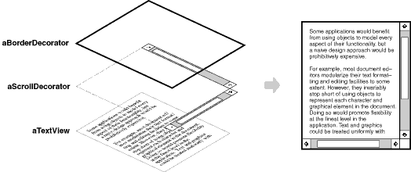
For example, suppose we have a TextView object that displays text in a window. TextView has no scroll bars by default, because we might not always need them. When we do, we can use a ScrollDecorator to add them. Suppose we also want to add a thick black border around the TextView. We can use a BorderDecorator to add this as well. We simply compose the decorators with the TextView to produce the desired result.
The following object diagram shows how to compose a TextView object with BorderDecorator and ScrollDecorator objects to produce a bordered, scrollable text view:
The ScrollDecorator and BorderDecorator classes are subclasses of Decorator, an abstract class for visual components that decorate other visual components.
VisualComponent is the abstract class for visual objects. It defines their drawing and event handling interface. Note how the Decorator class simply forwards draw requests to its component, and how Decorator subclasses can extend this operation.
Decorator subclasses are free to add operations for specific functionality. For example, ScrollDecorator's ScrollTo operation lets other objects scroll the interface if they know there happens to be a ScrollDecorator object in the interface. The important aspect of this pattern is that it lets decorators appear anywhere a VisualComponent can. That way clients generally can't tell the difference between a decorated component and an undecorated one, and so they don't depend at all on the decoration.
Applicability
Use Decorator
to add responsibilities to individual objects dynamically and transparently, that is, without affecting other objects.
for responsibilities that can be withdrawn.
when extension by subclassing is impractical. Sometimes a large number of independent extensions are possible and would produce an explosion of subclasses to support every combination. Or a class definition may be hidden or otherwise unavailable for subclassing.
Structure
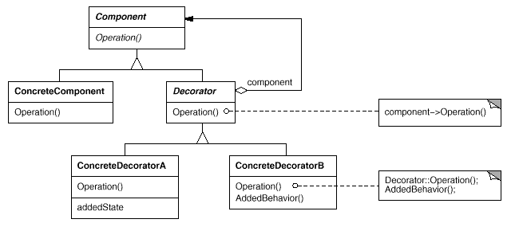
Participants
Component (VisualComponent)
defines the interface for objects that can have responsibilities added to them dynamically.
ConcreteComponent (TextView)
defines an object to which additional responsibilities can be attached.
Decorator
maintains a reference to a Component object and defines an interface that conforms to Component's interface.
Decorator forwards requests to its Component object. It may optionally perform additional operations before and after forwarding the request.
Consequences
The Decorator pattern has at least two key benefits and two liabilities:
More flexibility than static inheritance. The Decorator pattern provides a more flexible way to add responsibilities to objects than can be had with static (multiple) inheritance. With decorators, responsibilities can be added and removed at run-time simply by attaching and detaching them. In contrast, inheritance requires creating a new class for each additional responsibility (e.g., BorderedScrollableTextView, BorderedTextView). This gives rise to many classes and increases the complexity of a system. Furthermore, providing different Decorator classes for a specific Component class lets you mix and match responsibilities.
Decorators also make it easy to add a property twice. For example, to give a TextView a double border, simply attach two BorderDecorators. Inheriting from a Border class twice is error-prone at best.
Avoids feature-laden classes high up in the hierarchy. Decorator offers a pay-as-you-go approach to adding responsibilities. Instead of trying to support all foreseeable features in a complex, customizable class, you can define a simple class and add functionality incrementally with Decorator objects. Functionality can be composed from simple pieces. As a result, an application needn't pay for features it doesn't use. It's also easy to define new kinds of Decorators independently from the classes of objects they extend, even for unforeseen extensions. Extending a complex class tends to expose details unrelated to the responsibilities you're adding.
A decorator and its component aren't identical. A decorator acts as a transparent enclosure. But from an object identity point of view, a decorated component is not identical to the component itself. Hence you shouldn't rely on object identity when you use decorators.
Lots of little objects. A design that uses Decorator often results in systems composed of lots of little objects that all look alike. The objects differ only in the way they are interconnected, not in their class or in the value of their variables. Although these systems are easy to customize by those who understand them, they can be hard to learn and debug.
Implementation
Several issues should be considered when applying the Decorator pattern:
Interface conformance. A decorator object's interface must conform to the interface of the component it decorates. ConcreteDecorator classes must therefore inherit from a common class (at least in C++).
Omitting the abstract Decorator class. There's no need to define an abstract Decorator class when you only need to add one responsibility. That's often the case when you're dealing with an existing class hierarchy rather than designing a new one. In that case, you can merge Decorator's responsibility for forwarding requests to the component into the ConcreteDecorator.
Keeping Component classes lightweight. To ensure a conforming interface, components and decorators must descend from a common Component class. It's important to keep this common class lightweight; that is, it should focus on defining an interface, not on storing data. The definition of the data representation should be deferred to subclasses; otherwise the complexity of the Component class might make the decorators too heavyweight to use in quantity. Putting a lot of functionality into Component also increases the probability that concrete subclasses will pay for features they don't need.
Changing the skin of an object versus changing its guts. We can think of a decorator as a skin over an object that changes its behavior. An alternative is to change the object's guts. The Strategy pattern is a good example of a pattern for changing the guts.
Strategies are a better choice in situations where the Component class is intrinsically heavyweight, thereby making the Decorator pattern too costly to apply. In the Strategy pattern, the component forwards some of its behavior to a separate strategy object. The Strategy pattern lets us alter or extend the component's functionality by replacing the strategy object.
For example, we can support different border styles by having the component defer border-drawing to a separate Border object. The Border object is a Strategy object that encapsulates a border-drawing strategy. By extending the number of strategies from just one to an open-ended list, we achieve the same effect as nesting decorators recursively.
In MacApp 3.0 [App89] and Bedrock [Sym93a], for example, graphical components (called views) maintain a list of adorner objects that can attach additional adornments like borders to a view component. If a view has any adorners attached, then it gives them a chance to draw additional embellishments. MacApp and Bedrock must use this approach because the View class is heavyweight. It would be too expensive to use a full-fledged View just to add a border.
Since the Decorator pattern only changes a component from the outside, the component doesn't have to know anything about its decorators; that is, the decorators are transparent to the component:
With strategies, the component itself knows about possible extensions. So it has to reference and maintain the corresponding strategies:
The Strategy-based approach might require modifying the component to accommodate new extensions. On the other hand, a strategy can have its own specialized interface, whereas a decorator's interface must conform to the component's. A strategy for rendering a border, for example, need only define the interface for rendering a border (DrawBorder, GetWidth, etc.), which means that the strategy can be lightweight even if the Component class is heavyweight.
MacApp and Bedrock use this approach for more than just adorning views. They also use it to augment the event-handling behavior of objects. In both systems, a view maintains a list of behavior objects that can modify and intercept events. The view gives each of the registered behavior objects a chance to handle the event before nonregistered behaviors, effectively overriding them. You can decorate a view with special keyboard-handling support, for example, by registering a behavior object that intercepts and handles key events.
Sample Code
The following code shows how to implement user interface decorators in C++. We'll assume there's a Component class called VisualComponent.
Decorator decorates the VisualComponent referenced by the _component instance variable, which is initialized in the constructor. For each operation in VisualComponent's interface, Decorator defines a default implementation that passes the request on to _component:
Subclasses of Decorator define specific decorations. For example, the class BorderDecorator adds a border to its enclosing component. BorderDecorator is a subclass of Decorator that overrides the Draw operation to draw the border. BorderDecorator also defines a private DrawBorder helper operation that does the drawing. The subclass inherits all other operation implementations from Decorator.
A similar implementation would follow for ScrollDecorator and DropShadowDecorator, which would add scrolling and drop shadow capabilities to a visual component.
Now we can compose instances of these classes to provide different decorations. The following code illustrates how we can use decorators to create a bordered scrollable TextView.
First, we need a way to put a visual component into a window object. We'll assume our Window class provides a SetContents operation for this purpose:
Because Window accesses its contents through the VisualComponent interface, it's unaware of the decorator's presence. You, as the client, can still keep track of the text view if you have to interact with it directly, for example, when you need to invoke operations that aren't part of the VisualComponent interface. Clients that rely on the component's identity should refer to it directly as well.
Known Uses
Many object-oriented user interface toolkits use decorators to add graphical embellishments to widgets. Examples include InterViews [LVC98, LCI+92], ET++ [WGM88], and the ObjectWorks\Smalltalk class library [Par90]. More exotic applications of Decorator are the DebuggingGlyph from InterViews and the PassivityWrapper from ParcPlace Smalltalk. A DebuggingGlyph prints out debugging information before and after it forwards a layout request to its component. This trace information can be used to analyze and debug the layout behavior of objects in a complex composition. The PassivityWrapper can enable or disable user interactions with the component.
But the Decorator pattern is by no means limited to graphical user interfaces, as the following example (based on the ET++ streaming classes [WGM88]) illustrates.
Streams are a fundamental abstraction in most I/O facilities. A stream can provide an interface for converting objects into a sequence of bytes or characters. That lets us transcribe an object to a file or to a string in memory for retrieval later. A straightforward way to do this is to define an abstract Stream class with subclasses MemoryStream and FileStream. But suppose we also want to be able to do the following:
Compress the stream data using different compression algorithms (run-length encoding, Lempel-Ziv, etc.).
Reduce the stream data to 7-bit ASCII characters so that it can be transmitted over an ASCII communication channel.
The Decorator pattern gives us an elegant way to add these responsibilities to streams. The diagram below shows one solution to the problem:
The Stream abstract class maintains an internal buffer and provides operations for storing data onto the stream (PutInt, PutString). Whenever the buffer is full, Stream calls the abstract operation HandleBufferFull, which does the actual data transfer. The FileStream version of this operation overrides this operation to transfer the buffer to a file.
The key class here is StreamDecorator, which maintains a reference to a component stream and forwards requests to it. StreamDecorator subclasses override HandleBufferFull and perform additional actions before calling StreamDecorator's HandleBufferFull operation.
For example, the CompressingStream subclass compresses the data, and the ASCII7Stream converts the data into 7-bit ASCII. Now, to create a FileStream that compresses its data and converts the compressed binary data to 7-bit ASCII, we decorate a FileStream with a CompressingStream and an ASCII7Stream:
Adapter: A decorator is different from an adapter in that a decorator only changes an object's responsibilities, not its interface; an adapter will give an object a completely new interface.
Composite: A decorator can be viewed as a degenerate composite with only one component. However, a decorator adds additional responsibilities—it isn't intended for object aggregation.
Strategy: A decorator lets you change the skin of an object; a strategy lets you change the guts. These are two alternative ways of changing an object.
Facade
Intent
Provide a unified interface to a set of interfaces in a subsystem. Facade defines a higher-level interface that makes the subsystem easier to use.
Motivation
Structuring a system into subsystems helps reduce complexity. A common design goal is to minimize the communication and dependencies between subsystems. One way to achieve this goal is to introduce a facade object that provides a single, simplified interface to the more general facilities of a subsystem.
Consider for example a programming environment that gives applications access to its compiler subsystem. This subsystem contains classes such as Scanner, Parser, ProgramNode, BytecodeStream, and ProgramNodeBuilder that implement the compiler. Some specialized applications might need to access these classes directly. But most clients of a compiler generally don't care about details like parsing and code generation; they merely want to compile some code. For them, the powerful but low-level interfaces in the compiler subsystem only complicate their task.
To provide a higher-level interface that can shield clients from these classes, the compiler subsystem also includes a Compiler class. This class defines a unified interface to the compiler's functionality. The Compiler class acts as a facade: It offers clients a single, simple interface to the compiler subsystem. It glues together the classes that implement compiler functionality without hiding them completely. The compiler facade makes life easier for most programmers without hiding the lower-level functionality from the few that need it.
Applicability
Use the Facade pattern when
you want to provide a simple interface to a complex subsystem. Subsystems often get more complex as they evolve. Most patterns, when applied, result in more and smaller classes. This makes the subsystem more reusable and easier to customize, but it also becomes harder to use for clients that don't need to customize it. A facade can provide a simple default view of the subsystem that is good enough for most clients. Only clients needing more customizability will need to look beyond the facade.
there are many dependencies between clients and the implementation classes of an abstraction. Introduce a facade to decouple the subsystem from clients and other subsystems, thereby promoting subsystem independence and portability.
you want to layer your subsystems. Use a facade to define an entry point to each subsystem level. If subsystems are dependent, then you can simplify the dependencies between them by making them communicate with each other solely through their facades.
Structure
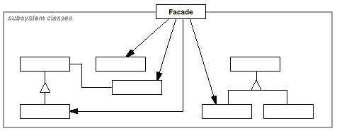
Participants
Facade (Compiler)
knows which subsystem classes are responsible for a request.
delegates client requests to appropriate subsystem objects.
have no knowledge of the facade; that is, they keep no references to it.
Collaborations
Clients communicate with the subsystem by sending requests to Facade, which forwards them to the appropriate subsystem object(s). Although the subsystem objects perform the actual work, the facade may have to do work of its own to translate its interface to subsystem interfaces.
Clients that use the facade don't have to access its subsystem objects directly.
Consequences
The Facade pattern offers the following benefits:
It shields clients from subsystem components, thereby reducing the number of objects that clients deal with and making the subsystem easier to use.
It promotes weak coupling between the subsystem and its clients. Often the components in a subsystem are strongly coupled. Weak coupling lets you vary the components of the subsystem without affecting its clients. Facades help layer a system and the dependencies between objects. They can eliminate complex or circular dependencies. This can be an important consequence when the client and the subsystem are implemented independently.
Reducing compilation dependencies is vital in large software systems. You want to save time by minimizing recompilation when subsystem classes change. Reducing compilation dependencies with facades can limit the recompilation needed for a small change in an important subsystem. A facade can also simplify porting systems to other platforms, because it's less likely that building one subsystem requires building all others.
It doesn't prevent applications from using subsystem classes if they need to. Thus you can choose between ease of use and generality.
Implementation
Consider the following issues when implementing a facade:
Reducing client-subsystem coupling. The coupling between clients and the subsystem can be reduced even further by making Facade an abstract class with concrete subclasses for different implementations of a subsystem. Then clients can communicate with the subsystem through the interface of the abstract Facade class. This abstract coupling keeps clients from knowing which implementation of a subsystem is used.
An alternative to subclassing is to configure a Facade object with different subsystem objects. To customize the facade, simply replace one or more of its subsystem objects.
Public versus private subsystem classes. A subsystem is analogous to a class in that both have interfaces, and both encapsulate something—a class encapsulates state and operations, while a subsystem encapsulates classes. And just as it's useful to think of the public and private interface of a class, we can think of the public and private interface of a subsystem.
The public interface to a subsystem consists of classes that all clients can access; the private interface is just for subsystem extenders. The Facade class is part of the public interface, of course, but it's not the only part. Other subsystem classes are usually public as well. For example, the classes Parser and Scanner in the compiler subsystem are part of the public interface.
Making subsystem classes private would be useful, but few object-oriented languages support it. Both C++ and Smalltalk traditionally have had a global name space for classes. Recently, however, the C++ standardization committee added name spaces to the language [Str94], which will let you expose just the public subsystem classes.
Sample Code
Let's take a closer look at how to put a facade on a compiler subsystem.
The compiler subsystem defines a {BytecodeStream} class that implements a stream of Bytecode objects. A Bytecode object encapsulates a bytecode, which can specify machine instructions. The subsystem also defines a Token class for objects that encapsulate tokens in the programming language.
The Scanner class takes a stream of characters and produces a stream of tokens, one token at a time.
The parse tree is made up of instances of ProgramNode subclasses such as StatementNode, ExpressionNode, and so forth. The ProgramNode hierarchy is an example of the Composite pattern. ProgramNode defines an interface for manipulating the program node and its children, if any.
The Traverse operation takes a CodeGenerator object. ProgramNode subclasses use this object to generate machine code in the form of Bytecode objects on a BytecodeStream. The class CodeGenerator is a visitor (see Visitor).
CodeGenerator has subclasses, for example, StackMachineCodeGenerator and RISCCodeGenerator, that generate machine code for different hardware architectures.
Each subclass of ProgramNode implements Traverse to call Traverse on its child ProgramNode objects. In turn, each child does the same for its children, and so on recursively. For example, ExpressionNode defines Traverse as follows:
The classes we've discussed so far make up the compiler subsystem. Now we'll introduce a Compiler class, a facade that puts all these pieces together. Compiler provides a simple interface for compiling source and generating code for a particular machine.
This implementation hard-codes the type of code generator to use so that programmers aren't required to specify the target architecture. That might be reasonable if there's only ever one target architecture. If that's not the case, then we might want to change the Compiler constructor to take a CodeGenerator parameter. Then programmers can specify the generator to use when they instantiate Compiler. The compiler facade can parameterize other participants such as Scanner and ProgramNodeBuilder as well, which adds flexibility, but it also detracts from the Facade pattern's mission, which is to simplify the interface for the common case.
Known Uses
The compiler example in the Sample Code section was inspired by the ObjectWorks\Smalltalk compiler system [Par90].
In the ET++ application framework [WGM88], an application can have built-in browsing tools for inspecting its objects at run-time. These browsing tools are implemented in a separate subsystem that includes a Facade class called ProgrammingEnvironment. This facade defines operations such as InspectObject and InspectClass for accessing the browsers.
An ET++ application can also forgo built-in browsing support. In that case, ProgrammingEnvironment implements these requests as null operations; that is, they do nothing. Only the ETProgrammingEnvironment subclass implements these requests with operations that display the corresponding browsers. The application has no knowledge of whether a browsing environment is available or not; there's abstract coupling between the application and the browsing subsystem.
The Choices operating system [CIRM93] uses facades to compose many frameworks into one. The key abstractions in Choices are processes, storage, and address spaces. For each of these abstractions there is a corresponding subsystem, implemented as a framework, that supports porting Choices to a variety of different hardware platforms. Two of these subsystems have a representative (i.e., facade). These representatives are FileSystemInterface (storage) and Domain (address spaces).
For example, the virtual memory framework has Domain as its facade. A Domain represents an address space. It provides a mapping between virtual addresses and offsets into memory objects, files, or backing store. The main operations on Domain support adding a memory object at a particular address, removing a memory object, and handling a page fault.
As the preceding diagram shows, the virtual memory subsystem uses the following components internally:
MemoryObject represents a data store.
MemoryObjectCache caches the data of MemoryObjects in physical memory. MemoryObjectCache is actually a Strategy that localizes the caching policy.
AddressTranslation encapsulates the address translation hardware.
The RepairFault operation is called whenever a page fault interrupt occurs. The Domain finds the memory object at the address causing the fault and delegates the RepairFault operation to the cache associated with that memory object. Domains can be customized by changing their components.
Related Patterns
Abstract Factory can be used with Facade to provide an interface for creating subsystem objects in a subsystem-independent way. Abstract Factory can also be used as an alternative to Facade to hide platform-specific classes.
Mediator is similar to Facade in that it abstracts functionality of existing classes. However, Mediator's purpose is to abstract arbitrary communication between colleague objects, often centralizing functionality that doesn't belong in any one of them. A mediator's colleagues are aware of and communicate with the mediator instead of communicating with each other directly. In contrast, a facade merely abstracts the interface to subsystem objects to make them easier to use; it doesn't define new functionality, and subsystem classes don't know about it.
Usually only one Facade object is required. Thus Facade objects are often Singletons (144).
Flyweight
Intent
Use sharing to support large numbers of fine-grained objects efficiently.
Motivation
Some applications could benefit from using objects throughout their design, but a naive implementation would be prohibitively expensive.
For example, most document editor implementations have text formatting and editing facilities that are modularized to some extent. Object-oriented document editors typically use objects to represent embedded elements like tables and figures. However, they usually stop short of using an object for each character in the document, even though doing so would promote flexibility at the finest levels in the application. Characters and embedded elements could then be treated uniformly with respect to how they are drawn and formatted. The application could be extended to support new character sets without disturbing other functionality. The application's object structure could mimic the document's physical structure. The following diagram shows how a document editor can use objects to represent characters.
The drawback of such a design is its cost. Even moderate-sized documents may require hundreds of thousands of character objects, which will consume lots of memory and may incur unacceptable run-time overhead. The Flyweight pattern describes how to share objects to allow their use at fine granularities without prohibitive cost.
A flyweight is a shared object that can be used in multiple contexts simultaneously. The flyweight acts as an independent object in each context—it's indistinguishable from an instance of the object that's not shared. Flyweights cannot make assumptions about the context in which they operate. The key concept here is the distinction between intrinsic and extrinsic state. Intrinsic state is stored in the flyweight; it consists of information that's independent of the flyweight's context, thereby making it sharable. Extrinsic state depends on and varies with the flyweight's context and therefore can't be shared. Client objects are responsible for passing extrinsic state to the flyweight when it needs it.
Flyweights model concepts or entities that are normally too plentiful to represent with objects. For example, a document editor can create a flyweight for each letter of the alphabet. Each flyweight stores a character code, but its coordinate position in the document and its typographic style can be determined from the text layout algorithms and formatting commands in effect wherever the character appears. The character code is intrinsic state, while the other information is extrinsic.
Logically there is an object for every occurrence of a given character in the document:
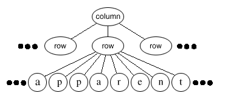
Physically, however, there is one shared flyweight object per character, and it appears in different contexts in the document structure. Each occurrence of a particular character object refers to the same instance in the shared pool of flyweight objects:
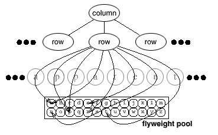
The class structure for these objects is shown next. Glyph is the abstract class for graphical objects, some of which may be flyweights. Operations that may depend on extrinsic state have it passed to them as a parameter. For example, Draw and Intersects must know which context the glyph is in before they can do their job.
A flyweight representing the letter a only stores the corresponding character code; it doesn't need to store its location or font. Clients supply the context-dependent information that the flyweight needs to draw itself. For example, a Row glyph knows where its children should draw themselves so that they are tiled horizontally. Thus it can pass each child its location in the draw request.
Because the number of different character objects is far less than the number of characters in the document, the total number of objects is substantially less than what a naive implementation would use. A document in which all characters appear in the same font and color will allocate on the order of 100 character objects (roughly the size of the ASCII character set) regardless of the document's length. And since most documents use no more than 10 different font-color combinations, this number won't grow appreciably in practice. An object abstraction thus becomes practical for individual characters.
Applicability
The Flyweight pattern's effectiveness depends heavily on how and where it's used. Apply the Flyweight pattern when all of the following are true:
An application uses a large number of objects.
Storage costs are high because of the sheer quantity of objects.
Most object state can be made extrinsic.
Many groups of objects may be replaced by relatively few shared objects once extrinsic state is removed.
The application doesn't depend on object identity. Since flyweight objects may be shared, identity tests will return true for conceptually distinct objects.
Structure
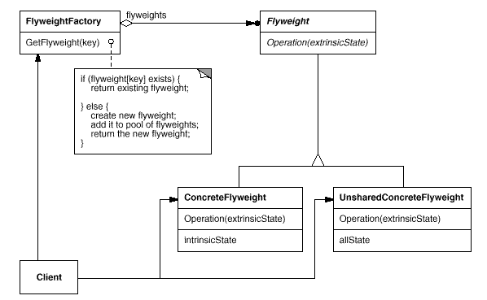
The following object diagram shows how flyweights are shared:
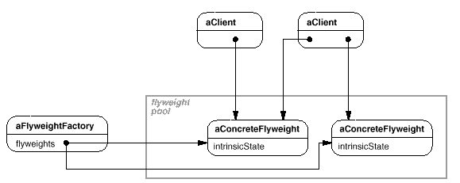
Participants
Flyweight
declares an interface through which flyweights can receive and act on extrinsic state.
ConcreteFlyweight (Character)
implements the Flyweight interface and adds storage for intrinsic state, if any. A ConcreteFlyweight object must be sharable. Any state it stores must be intrinsic; that is, it must be independent of the ConcreteFlyweight object's context.
UnsharedConcreteFlyweight (Row, Column)
not all Flyweight subclasses need to be shared. The Flyweight interface enables sharing; it doesn't enforce it. It's common for UnsharedConcreteFlyweight objects to have ConcreteFlyweight objects as children at some level in the flyweight object structure (as the Row and Column classes have).
FlyweightFactory
creates and manages flyweight objects.
ensures that flyweights are shared properly. When a client requests a flyweight, the FlyweightFactory object supplies an existing instance or creates one, if none exists.
Client
maintains a reference to flyweight(s).
computes or stores the extrinsic state of flyweight(s).
Collaborations
State that a flyweight needs to function must be characterized as either intrinsic or extrinsic. Intrinsic state is stored in the ConcreteFlyweight object; extrinsic state is stored or computed by Client objects. Clients pass this state to the flyweight when they invoke its operations.
Clients should not instantiate ConcreteFlyweights directly. Clients must obtain ConcreteFlyweight objects exclusively from the FlyweightFactory object to ensure they are shared properly.
Consequences
Flyweights may introduce run-time costs associated with transferring, finding, and/or computing extrinsic state, especially if it was formerly stored as intrinsic state. However, such costs are offset by space savings, which increase as more flyweights are shared.
Storage savings are a function of several factors:
the reduction in the total number of instances that comes from sharing
the amount of intrinsic state per object
whether extrinsic state is computed or stored.
The more flyweights are shared, the greater the storage savings. The savings increase with the amount of shared state. The greatest savings occur when the objects use substantial quantities of both intrinsic and extrinsic state, and the extrinsic state can be computed rather than stored. Then you save on storage in two ways: Sharing reduces the cost of intrinsic state, and you trade extrinsic state for computation time.
The Flyweight pattern is often combined with the Composite pattern to represent a hierarchical structure as a graph with shared leaf nodes. A consequence of sharing is that flyweight leaf nodes cannot store a pointer to their parent. Rather, the parent pointer is passed to the flyweight as part of its extrinsic state. This has a major impact on how the objects in the hierarchy communicate with each other.
Implementation
Consider the following issues when implementing the Flyweight pattern:
Removing extrinsic state. The pattern's applicability is determined largely by how easy it is to identify extrinsic state and remove it from shared objects. Removing extrinsic state won't help reduce storage costs if there are as many different kinds of extrinsic state as there are objects before sharing. Ideally, extrinsic state can be computed from a separate object structure, one with far smaller storage requirements.
In our document editor, for example, we can store a map of typographic information in a separate structure rather than store the font and type style with each character object. The map keeps track of runs of characters with the same typographic attributes. When a character draws itself, it receives its typographic attributes as a side-effect of the draw traversal. Because documents normally use just a few different fonts and styles, storing this information externally to each character object is far more efficient than storing it internally.
Managing shared objects. Because objects are shared, clients shouldn't instantiate them directly. FlyweightFactory lets clients locate a particular flyweight. FlyweightFactory objects often use an associative store to let clients look up flyweights of interest. For example, the flyweight factory in the document editor example can keep a table of flyweights indexed by character codes. The manager returns the proper flyweight given its code, creating the flyweight if it does not already exist.
Sharability also implies some form of reference counting or garbage collection to reclaim a flyweight's storage when it's no longer needed. However, neither is necessary if the number of flyweights is fixed and small (e.g., flyweights for the ASCII character set). In that case, the flyweights are worth keeping around permanently.
Sample Code
Returning to our document formatter example, we can define a Glyph base class for flyweight graphical objects. Logically, glyphs are Composites (see Composite) that have graphical attributes and can draw themselves. Here we focus on just the font attribute, but the same approach can be used for any other graphical attributes a glyph might have.
To keep from allocating space for a font attribute in every glyph, we'll store the attribute extrinsically in a GlyphContext object. GlyphContext acts as a repository of extrinsic state. It maintains a compact mapping between a glyph and its font (and any other graphical attributes it might have) in different contexts. Any operation that needs to know the glyph's font in a given context will have a GlyphContext instance passed to it as a parameter. The operation can then query the GlyphContext for the font in that context. The context depends on the glyph's location in the glyph structure. Therefore Glyph's child iteration and manipulation operations must update the GlyphContext whenever they're used.
GlyphContext must be kept informed of the current position in the glyph structure during traversal. GlyphContext::Next increments _index as the traversal proceeds. Glyph subclasses that have children (e.g., Row and Column) must implement Next so that it calls GlyphContext::Next at each point in the traversal.
GlyphContext::GetFont uses the index as a key into a BTree structure that stores the glyph-to-font mapping. Each node in the tree is labeled with the length of the string for which it gives font information. Leaves in the tree point to a font, while interior nodes break the string into substrings, one for each child.
Consider the following excerpt from a glyph composition:
The BTree structure for font information might look like
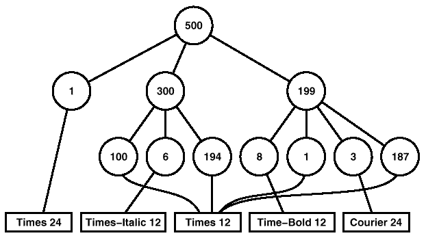
Interior nodes define ranges of glyph indices. BTree is updated in response to font changes and whenever glyphs are added to or removed from the glyph structure. For example, assuming we're at index 102 in the traversal, the following code sets the font of each character in the word expect to that of the surrounding text (that is, times12, an instance of Font for 12-point Times Roman):
The new BTree structure (with changes shown in black) looks like
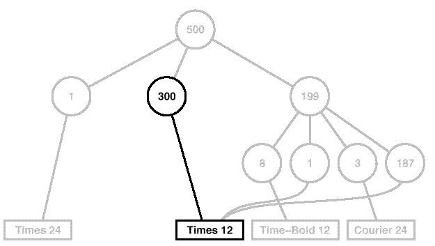
Suppose we add the word don't (including a trailing space) in 12-point Times Italic before expect. The following code informs the gc of this event, assuming it is still at index 102:
gc.Insert(6);gc.SetFont(timesItalic12,6);
The BTree structure becomes
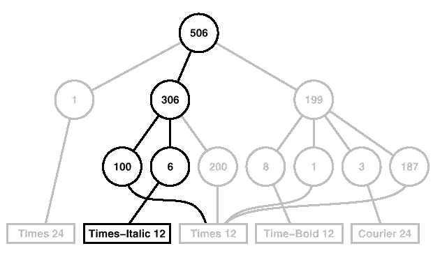
When the GlyphContext is queried for the font of the current glyph, it descends the BTree, adding up indices as it goes until it finds the font for the current index. Because the frequency of font changes is relatively low, the tree stays small relative to the size of the glyph structure. This keeps storage costs down without an inordinate increase in look-up time.16
The last object we need is a FlyweightFactory that creates glyphs and ensures they're shared properly. Class GlyphFactory instantiates Character and other kinds of glyphs. We only share Character objects; composite glyphs are far less plentiful, and their important state (i.e., their children) is intrinsic anyway.
CreateCharacter looks up a character in the character glyph in the array, and it returns the corresponding glyph if it exists. If it doesn't, then CreateCharacter creates the glyph, puts it in the array, and returns it:
We could omit these operations and let clients instantiate unshared glyphs directly. However, if we decide to make these glyphs sharable later, we'll have to change client code that creates them.
Known Uses
The concept of flyweight objects was first described and explored as a design technique in InterViews 3.0 [CL90]. Its developers built a powerful document editor called Doc as a proof of concept [CL92]. Doc uses glyph objects to represent each character in the document. The editor builds one Glyph instance for each character in a particular style (which defines its graphical attributes); hence a character's intrinsic state consists of the character code and its style information (an index into a style table).17 That means only position is extrinsic, making Doc fast. Documents are represented by a class Document, which also acts as the FlyweightFactory. Measurements on Doc have shown that sharing flyweight characters is quite effective. In a typical case, a document containing 180,000 characters required allocation of only 480 character objects.
ET++ [WGM88] uses flyweights to support look-and-feel independence.18 The look-and-feel standard affects the layout of user interface elements (e.g., scroll bars, buttons, menus—known collectively as widgets) and their decorations (e.g., shadows, beveling). A widget delegates all its layout and drawing behavior to a separate Layout object. Changing the Layout object changes the look and feel, even at run-time.
For each widget class there is a corresponding Layout class (e.g., ScrollbarLayout, MenubarLayout, etc.). An obvious problem with this approach is that using separate layout objects doubles the number of user interface objects: For each user interface object there is an additional Layout object. To avoid this overhead, Layout objects are implemented as flyweights. They make good flyweights because they deal mostly with defining behavior, and it's easy to pass them what little extrinsic state they need to lay out or draw an object.
The Layout objects are created and managed by Look objects. The Look class is an Abstract Factory that retrieves a specific Layout object with operations like GetButtonLayout, GetMenuBarLayout, and so forth. For each look-and-feel standard there is a corresponding Look subclass (e.g., MotifLook, OpenLook) that supplies the appropriate Layout objects.
By the way, Layout objects are essentially strategies (see Strategy). They are an example of a strategy object implemented as a flyweight.
Related Patterns
The Flyweight pattern is often combined with the Composite pattern to implement a logically hierarchical structure in terms of a directed-acyclic graph with shared leaf nodes.
It's often best to implement State and Strategy objects as flyweights.
Proxy
Intent
Provide a surrogate or placeholder for another object to control access to it.
Also Known As
Surrogate
Motivation
One reason for controlling access to an object is to defer the full cost of its creation and initialization until we actually need to use it. Consider a document editor that can embed graphical objects in a document. Some graphical objects, like large raster images, can be expensive to create. But opening a document should be fast, so we should avoid creating all the expensive objects at once when the document is opened. This isn't necessary anyway, because not all of these objects will be visible in the document at the same time.
These constraints would suggest creating each expensive object on demand, which in this case occurs when an image becomes visible. But what do we put in the document in place of the image? And how can we hide the fact that the image is created on demand so that we don't complicate the editor's implementation? This optimization shouldn't impact the rendering and formatting code, for example.
The solution is to use another object, an image proxy, that acts as a stand-in for the real image. The proxy acts just like the image and takes care of instantiating it when it's required.
The image proxy creates the real image only when the document editor asks it to display itself by invoking its Draw operation. The proxy forwards subsequent requests directly to the image. It must therefore keep a reference to the image after creating it.
Let's assume that images are stored in separate files. In this case we can use the file name as the reference to the real object. The proxy also stores its extent, that is, its width and height. The extent lets the proxy respond to requests for its size from the formatter without actually instantiating the image.
The following class diagram illustrates this example in more detail.
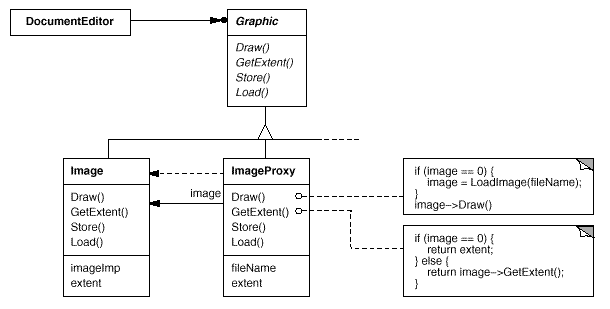
The document editor accesses embedded images through the interface defined by the abstract Graphic class. ImageProxy is a class for images that are created on demand. ImageProxy maintains the file name as a reference to the image on disk. The file name is passed as an argument to the ImageProxy constructor.
ImageProxy also stores the bounding box of the image and a reference to the real Image instance. This reference won't be valid until the proxy instantiates the real image. The Draw operation makes sure the image is instantiated before forwarding it the request. GetExtent forwards the request to the image only if it's instantiated; otherwise ImageProxy returns the extent it stores.
Applicability
Proxy is applicable whenever there is a need for a more versatile or sophisticated reference to an object than a simple pointer. Here are several common situations in which the Proxy pattern is applicable:
A remote proxy provides a local representative for an object in a different address space. NEXTSTEP [Add94] uses the class NXProxy for this purpose. Coplien [Cop92] calls this kind of proxy an Ambassador.
A virtual proxy creates expensive objects on demand. The ImageProxy described in the Motivation is an example of such a proxy.
A protection proxy controls access to the original object. Protection proxies are useful when objects should have different access rights. For example, KernelProxies in the Choices operating system [CIRM93] provide protected access to operating system objects.
A smart reference is a replacement for a bare pointer that performs additional actions when an object is accessed. Typical uses include
counting the number of references to the real object so that it can be freed automatically when there are no more references (also called smart pointers [Ede92]).
loading a persistent object into memory when it's first referenced.
checking that the real object is locked before it's accessed to ensure that no other object can change it.
Structure
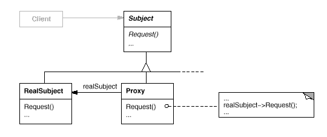
Here's a possible object diagram of a proxy structure at run-time:
Participants
Proxy (ImageProxy)
maintains a reference that lets the proxy access the real subject. Proxy may refer to a Subject if the RealSubject and Subject interfaces are the same.
provides an interface identical to Subject's so that a proxy can by substituted for the real subject.
controls access to the real subject and may be responsible for creating and deleting it.
other responsibilities depend on the kind of proxy:
remote proxies are responsible for encoding a request and its arguments and for sending the encoded request to the real subject in a different address space.
virtual proxies may cache additional information about the real subject so that they can postpone accessing it. For example, the ImageProxy from the Motivation caches the real image's extent.
protection proxies check that the caller has the access permissions required to perform a request.
Subject (Graphic)
defines the common interface for RealSubject and Proxy so that a Proxy can be used anywhere a RealSubject is expected.
RealSubject (Image)
defines the real object that the proxy represents.
Collaborations
Proxy forwards requests to RealSubject when appropriate, depending on the kind of proxy.
Consequences
The Proxy pattern introduces a level of indirection when accessing an object. The additional indirection has many uses, depending on the kind of proxy:
A remote proxy can hide the fact that an object resides in a different address space.
A virtual proxy can perform optimizations such as creating an object on demand.
Both protection proxies and smart references allow additional housekeeping tasks when an object is accessed.
There's another optimization that the Proxy pattern can hide from the client. It's called copy-on-write, and it's related to creation on demand. Copying a large and complicated object can be an expensive operation. If the copy is never modified, then there's no need to incur this cost. By using a proxy to postpone the copying process, we ensure that we pay the price of copying the object only if it's modified.
To make copy-on-write work, the subject must be reference counted. Copying the proxy will do nothing more than increment this reference count. Only when the client requests an operation that modifies the subject does the proxy actually copy it. In that case the proxy must also decrement the subject's reference count. When the reference count goes to zero, the subject gets deleted.
Copy-on-write can reduce the cost of copying heavyweight subjects significantly.
Implementation
The Proxy pattern can exploit the following language features:
Overloading the member access operator in C++. C++ supports overloading operator->, the member access operator. Overloading this operator lets you perform additional work whenever an object is dereferenced. This can be helpful for implementing some kinds of proxy; the proxy behaves just like a pointer.
The following example illustrates how to use this technique to implement a virtual proxy called ImagePtr.
classImage;externImage*LoadAnImageFile(constchar*);// external function
classImagePtr{public:ImagePtr(constchar*imageFile);virtual~ImagePtr();virtualImage*operator->();virtualImage&operator*();private:Image*LoadImage();private:Image*_image;constchar*_imageFile;};ImagePtr::ImagePtr(constchar*theImageFile){_imageFile=theImageFile;_image=0;}Image*ImagePtr::LoadImage(){if(_image==0){_image=LoadAnImageFile(_imageFile);}return_image;}
The overloaded -> and * operators use LoadImage to return _image to callers (loading it if necessary).
This approach lets you call Image operations through ImagePtr objects without going to the trouble of making the operations part of the ImagePtr interface:
Notice how the image proxy acts like a pointer, but it's not declared to be a pointer to an Image. That means you can't use it exactly like a real pointer to an Image. Hence clients must treat Image and ImagePtr objects differently in this approach.
Overloading the member access operator isn't a good solution for every kind of proxy. Some proxies need to know precisely which operation is called, and overloading the member access operator doesn't work in those cases.
Consider the virtual proxy example in the Motivation. The image should be loaded at a specific time—namely when the Draw operation is called—and not whenever the image is referenced. Overloading the access operator doesn't allow this distinction. In that case we must manually implement each proxy operation that forwards the request to the subject.
These operations are usually very similar to each other, as the Sample Code demonstrates. Typically all operations verify that the request is legal, that the original object exists, etc., before forwarding the request to the subject. It's tedious to write this code again and again. So it's common to use a preprocessor to generate it automatically.
Using doesNotUnderstand in Smalltalk. Smalltalk provides a hook that you can use to support automatic forwarding of requests. Smalltalk calls doesNotUnderstand: aMessage when a client sends a message to a receiver that has no corresponding method. The Proxy class can redefine doesNotUnderstand so that the message is forwarded to its subject.
To ensure that a request is forwarded to the subject and not just absorbed by the proxy silently, you can define a Proxy class that doesn't understand any messages. Smalltalk lets you do this by defining Proxy as a class with no superclass.19
The main disadvantage of doesNotUnderstand: is that most Smalltalk systems have a few special messages that are handled directly by the virtual machine, and these do not cause the usual method look-up. The only one that's usually implemented in Object (and so can affect proxies) is the identity operation ==.
If you're going to use doesNotUnderstand: to implement Proxy, then you must design around this problem. You can't expect identity on proxies to mean identity on their real subjects. An added disadvantage is that doesNotUnderstand: was developed for error handling, not for building proxies, and so it's generally not very fast.
Proxy doesn't always have to know the type of real subject. If a Proxy class can deal with its subject solely through an abstract interface, then there's no need to make a Proxy class for each RealSubject class; the proxy can deal with all RealSubject classes uniformly. But if Proxies are going to instantiate RealSubjects (such as in a virtual proxy), then they have to know the concrete class.
Another implementation issue involves how to refer to the subject before it's instantiated. Some proxies have to refer to their subject whether it's on disk or in memory. That means they must use some form of address space-independent object identifiers. We used a file name for this purpose in the Motivation.
Sample Code
The following code implements two kinds of proxy: the virtual proxy described in the Motivation section, and a proxy implemented with doesNotUnderstand:.20
A virtual proxy. The Graphic class defines the interface for graphical objects:
The Image class implements the Graphic interface to display image files. Image overrides HandleMouse to let users resize the image interactively.
classImage:publicGraphic{public:Image(constchar*file);// loads image from a file
virtual~Image();virtualvoidDraw(constPoint&at);virtualvoidHandleMouse(Event&event);virtualconstPoint&GetExtent();virtualvoidLoad(istream&from);virtualvoidSave(ostream&to);private:// ...
};
The implementation of GetExtent returns the cached extent if possible; otherwise the image is loaded from the file. Draw loads the image, and HandleMouse forwards the event to the real image.
The Save operation saves the cached image extent and the image file name to a stream. Load retrieves this information and initializes the corresponding members.
Proxies that use doesNotUnderstand. You can make generic proxies in Smalltalk by defining classes whose superclass is nil21 and defining the doesNotUnderstand: method to handle messages.
The following method assumes the proxy has a realSubject method that returns its real subject. In the case of ImageProxy, this method would check to see if the the Image had been created, create it if necessary, and finally return it. It uses perform:withArguments: to perform the message being trapped on the real subject.
The argument to doesNotUnderstand: is an instance of Message that represents the message not understood by the proxy. So the proxy responds to all messages by making sure that the real subject exists before forwarding the message to it.
One of the advantages of doesNotUnderstand: is it can perform arbitrary processing. For example, we could produce a protection proxy by specifying a set legalMessages of messages to accept and then giving the proxy the following method:
This method checks to see that a message is legal before forwarding it to the real subject. If it isn't legal, then it will send error: to the proxy, which will result in an infinite loop of errors unless the proxy defines error:. Consequently, the definition of error: should be copied from class Object along with any methods it uses.
Known Uses
The virtual proxy example in the Motivation section is from the ET++ text building block classes.
NEXTSTEP [Add94] uses proxies (instances of class NXProxy) as local representatives for objects that may be distributed. A server creates proxies for remote objects when clients request them. On receiving a message, the proxy encodes it along with its arguments and then forwards the encoded message to the remote subject. Similarly, the subject encodes any return results and sends them back to the NXProxy object.
McCullough [McC87] discusses using proxies in Smalltalk to access remote objects. Pascoe [Pas86] describes how to provide side-effects on method calls and access control with Encapsulators.
Related Patterns
Adapter: An adapter provides a different interface to the object it adapts. In contrast, a proxy provides the same interface as its subject. However, a proxy used for access protection might refuse to perform an operation that the subject will perform, so its interface may be effectively a subset of the subject's.
Decorator: Although decorators can have similar implementations as proxies, decorators have a different purpose. A decorator adds one or more responsibilities to an object, whereas a proxy controls access to an object.
Proxies vary in the degree to which they are implemented like a decorator. A protection proxy might be implemented exactly like a decorator. On the other hand, a remote proxy will not contain a direct reference to its real subject but only an indirect reference, such as host ID and local address on host. A virtual proxy will start off with an indirect reference such as a file name but will eventually obtain and use a direct reference.
Discussion of Structural Patterns
You may have noticed similarities between the structural patterns, especially in their participants and collaborations. This is soprobably because structural patterns rely on the same small set oflanguage mechanisms for structuring code and objects: single and multiple inheritance for class-based patterns, and object compositionfor object patterns. But the similarities belie the different intentsamong these patterns. In this section we compare and contrast groupsof structural patterns to give you a feel for their relative merits.
Adapter versus Bridge
The Adapter and Bridge patterns have some common attributes. Both promote flexibility by providing alevel of indirection to another object. Both involve forwardingrequests to this object from an interface other than its own.
The key difference between these patterns lies in their intents. Adapter focuses on resolving incompatibilities between two existinginterfaces. It doesn't focus on how those interfaces are implemented, nor does it consider how they might evolve independently. It's a wayof making two independently designed classes work together withoutreimplementing one or the other. Bridge, on the other hand, bridges anabstraction and its (potentially numerous) implementations. Itprovides a stable interface to clients even as it lets you vary theclasses that implement it. It also accommodates new implementations asthe system evolves.
As a result of these differences, Adapter and Bridge are often used atdifferent points in the software lifecycle. An adapter often becomesnecessary when you discover that two incompatible classesshould work together, generally to avoid replicating code. Thecoupling is unforeseen. In contrast, the user of a bridge understandsup-front that an abstraction must have several implementations, and both may evolve independently. The Adapter pattern makes things workafter they're designed; Bridge makes them work before theyare. That doesn't mean Adapter is somehow inferior to Bridge; eachpattern merely addresses a different problem.
You might think of a facade (see Facade) as anadapter to a set of other objects. But that interpretation overlooksthe fact that a facade defines a new interface, whereas an adapterreuses an old interface. Remember that an adapter makes two existing interfaces work together as opposed to defining an entirelynew one.
Composite versus Decorator versus Proxy
Composite and Decorator have similar structure diagrams, reflecting the fact that both rely onrecursive composition to organize an open-ended number of objects. This commonality might tempt you to think of a decorator object as adegenerate composite, but that misses the point of the Decoratorpattern. The similarity ends at recursive composition, again becauseof differing intents.
Decorator is designed to let you add responsibilities to objectswithout subclassing. It avoids the explosion of subclasses that canarise from trying to cover every combination of responsibilitiesstatically. Composite has a different intent. It focuses onstructuring classes so that many related objects can be treateduniformly, and multiple objects can be treated as one. Its focus isnot on embellishment but on representation.
These intents are distinct but complementary. Consequently, theComposite and Decorator patterns are often used in concert. Both leadto the kind of design in which you can build applications just byplugging objects together without defining any new classes. There willbe an abstract class with some subclasses that are composites, somethat are decorators, and some that implement the fundamental buildingblocks of the system. In this case, both composites and decoratorswill have a common interface. From the point of view of the Decoratorpattern, a composite is a ConcreteComponent. From the point of view ofthe Composite pattern, a decorator is a Leaf. Of course, they don'thave to be used together and, as we have seen, their intentsare quite different.
Another pattern with a structure similar to Decorator's is Proxy. Both patterns describe how to provide a level of indirection to anobject, and the implementations of both the proxy and decoratorobject keep a reference to another object to which they forward requests. Once again, however, they are intended for different purposes.
Like Decorator, the Proxy pattern composes an object and provides anidentical interface to clients. Unlike Decorator, the Proxy pattern isnot concerned with attaching or detaching properties dynamically, and it's not designed for recursive composition. Its intent is to providea stand-in for a subject when it's inconvenient or undesirable toaccess the subject directly because, for example, it lives on a remotemachine, has restricted access, or is persistent.
In the Proxy pattern, the subject defines the key functionality, and the proxy provides (or refuses) access to it. In Decorator, thecomponent provides only part of the functionality, and one or moredecorators furnish the rest. Decorator addresses the situation wherean object's total functionality can't be determined at compile time, at least not conveniently. That open-endedness makes recursive composition an essential part of Decorator. That isn't the case inProxy, because Proxy focuses on one relationship—between the proxyand its subject—and that relationship can be expressed statically.
These differences are significant because they capture solutions tospecific recurring problems in object-oriented design. But thatdoesn't mean these patterns can't be combined. You might envision aproxy-decorator that adds functionality to a proxy, or adecorator-proxy that embellishes a remote object. Although such hybridsmight be useful (we don't have real examples handy), they aredivisible into patterns that are useful.
Behavioral Patterns
Behavioral patterns are concerned with algorithms and theassignment of responsibilities between objects. Behavioral patternsdescribe not just patterns of objects or classes but also the patternsof communication between them. These patterns characterize complexcontrol flow that's difficult to follow at run-time. They shift yourfocus away from flow of control to let you concentrate just on the wayobjects are interconnected.
Behavioral class patterns use inheritance to distribute behaviorbetween classes. This chapter includes two such patterns. Template Method is the simpler and more common ofthe two. A template method is an abstract definition of an algorithm. It defines the algorithm step by step. Each step invokes either anabstract operation or a primitive operation. A subclass fleshes outthe algorithm by defining the abstract operations. The otherbehavioral class pattern is Interpreter, whichrepresents a grammar as a class hierarchy and implements aninterpreter as an operation on instances of these classes.
Behavioral object patterns use object composition rather thaninheritance. Some describe how a group of peer objects cooperate toperform a task that no single object can carry out by itself. Animportant issue here is how peer objects know about each other. Peerscould maintain explicit references to each other, but that wouldincrease their coupling. In the extreme, every object would knowabout every other. The Mediator pattern avoidsthis by introducing a mediator object between peers. The mediatorprovides the indirection needed for loose coupling.
Chain of Responsibility provides even loosercoupling. It lets you send requests to an object implicitly through achain of candidate objects. Any candidate may fulfill the requestdepending on run-time conditions. The number of candidates isopen-ended, and you can select which candidates participate in thechain at run-time.
The Observer pattern defines and maintains adependency between objects. The classic example of Observer is inSmalltalk Model/View/Controller, where all views of the model are notified whenever themodel's state changes.
Other behavioral object patterns are concerned with encapsulatingbehavior in an object and delegating requests to it. The Strategy pattern encapsulates an algorithm in anobject. Strategy makes it easy to specify and change the algorithm anobject uses. The Command pattern encapsulates arequest in an object so that it can be passed as a parameter, storedon a history list, or manipulated in other ways. The State pattern encapsulates the states of an objectso that the object can change its behavior when its state object changes. Visitor (366) encapsulates behavior that wouldotherwise be distributed across classes, and Iterator abstracts the way you access and traverse objects in an aggregate.
Chain of Responsibility
Intent
Avoid coupling the sender of a request to its receiver by giving morethan one object a chance to handle the request. Chain the receivingobjects and pass the request along the chain until an objecthandles it.
Motivation
Consider a context-sensitive help facility for a graphical userinterface. The user can obtain help information on any part of theinterface just by clicking on it. The help that's provided depends onthe part of the interface that's selected and its context; forexample, a button widget in a dialog box might have different helpinformation than a similar button in the main window. If no specifichelp information exists for that part of the interface, thenthe help system should display a more general help message about theimmediate context—the dialog box as a whole, for example.
Hence it's natural to organize help information according to itsgenerality—from the most specific to the most general. Furthermore, it's clear that a help request is handled by one of several userinterface objects; which one depends on the context and how specificthe available help is.
The problem here is that the object that ultimately provides thehelp isn't known explicitly to the object (e.g., the button) that initiates the help request. What we need is a way to decouple thebutton that initiates the help request from the objects that mightprovide help information. The Chain of Responsibility pattern defineshow that happens.
The idea of this pattern is to decouple senders and receivers bygiving multiple objects a chance to handle a request. The requestgets passed along a chain of objects until one of them handles it.
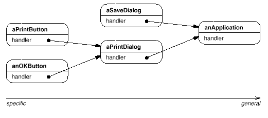
The first object in the chain receives the request and either handlesit or forwards it to the next candidate on the chain, which doeslikewise. The object that made the request has no explicit knowledgeof who will handle it—we say the request has an implicitreceiver.
Let's assume the user clicks for help on a button widget markedPrint. The button is contained in an instance of PrintDialog, which knows the application object it belongs to (see preceding object diagram). The following interaction diagram illustrates how the helprequest gets forwarded along the chain:
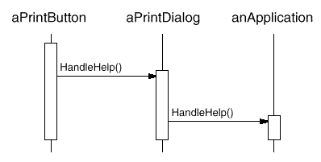
In this case, neither aPrintButton nor aPrintDialog handles therequest; it stops at anApplication, which can handle it or ignore it. The client that issued the request has no direct reference to theobject that ultimately fulfills it.
To forward the request along the chain, and to ensure receivers remainimplicit, each object on the chain shares a common interface forhandling requests and for accessing its successor on thechain. For example, the help system might define a HelpHandler classwith a corresponding HandleHelp operation. HelpHandler can be theparent class for candidate object classes, or it can be defined as amixin class. Then classes that want to handle help requests can makeHelpHandler a parent:
The Button, Dialog, and Application classes use HelpHandler operationsto handle help requests. HelpHandler's HandleHelp operation forwardsthe request to the successor by default. Subclasses can override thisoperation to provide help under the right circumstances; otherwisethey can use the default implementation to forward the request.
Applicability
Use Chain of Responsibility when
more than one object may handle a request, and the handler isn't knowna priori. The handler should be ascertained automatically.
you want to issue a request to one of several objects withoutspecifying the receiver explicitly.
the set of objects that can handle a request should be specifieddynamically.
Structure
A typical object structure might look like this:
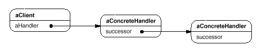
Participants
Handler (HelpHandler)
defines an interface for handling requests.
(optional) implements the successor link.
ConcreteHandler (PrintButton, PrintDialog)
handles requests it is responsible for.
can access its successor.
if the ConcreteHandler can handle the request, it does so; otherwise it forwards the request to its successor.
Client
initiates the request to a ConcreteHandler object on the chain.
Collaborations
When a client issues a request, the request propagates along the chainuntil a ConcreteHandler object takes responsibility for handling it.
Consequences
Chain of Responsibility has the following benefits and liabilities:
Reduced coupling. The pattern frees an object from knowing which other object handles arequest. An object only has to know that a request will be handledappropriately. Both the receiver and the sender have no explicitknowledge of each other, and an object in the chain doesn't have toknow about the chain's structure.
As a result, Chain of Responsibility can simplify objectinterconnections. Instead of objects maintaining references to allcandidate receivers, they keep a single reference to their successor.
Added flexibility in assigning responsibilities to objects. Chain of Responsibility gives you added flexibility in distributingresponsibilities among objects. You can add or changeresponsibilities for handling a request by adding to or otherwisechanging the chain at run-time. You can combine this with subclassingto specialize handlers statically.
Receipt isn't guaranteed. Since a request has no explicit receiver, there's no guaranteeit'll be handled—the request can fall off the end of the chainwithout ever being handled. A request can also go unhandled when thechain is not configured properly.
Implementation
Here are implementation issues to consider in Chain of Responsibility:
Implementing the successor chain. There are two possible ways to implement the successor chain:
Define new links (usually in the Handler, but ConcreteHandlerscould define them instead).
Use existing links.
Our examples so far define new links, but often you can use existingobject references to form the successor chain. For example, parentreferences in a part-whole hierarchy can define a part's successor. Awidget structure might already have such links. Composite discusses parent references in more detail.
Using existing links works well when the links support the chain youneed. It saves you from defining links explicitly, and it savesspace. But if the structure doesn't reflect the chain ofresponsibility your application requires, then you'll have to define redundant links.
Connecting successors. If there are no preexisting references for defining a chain, then you'llhave to introduce them yourself. In that case, the Handler not only defines the interface for the requests but usually maintains thesuccessor as well. That lets the handler provide a defaultimplementation of HandleRequest that forwards the request to thesuccessor (if any). If a ConcreteHandler subclass isn't interestedin the request, it doesn't have to override the forwarding operation, since its default implementation forwards unconditionally.
Here's a HelpHandler base class that maintains a successor link:
Representing requests. Different options are available for representing requests. In thesimplest form, the request is a hard-coded operation invocation, as inthe case of HandleHelp. This is convenient and safe, but you canforward only the fixed set of requests that the Handler class defines.
An alternative is to use a single handler function that takes arequest code (e.g., an integer constant or a string) as parameter. This supports an open-ended set of requests. The only requirement isthat the sender and receiver agree on how the request should beencoded.
This approach is more flexible, but it requires conditional statementsfor dispatching the request based on its code. Moreover, there's notype-safe way to pass parameters, so they must be packed and unpackedmanually. Obviously this is less safe than invoking an operationdirectly.
To address the parameter-passing problem, we can use separate requestobjects that bundle request parameters. A Requestclass can represent requests explicitly, and new kinds of requests canbe defined by subclassing. Subclasses can define different parameters. Handlers must know the kind of request (that is, whichRequest subclass they're using) to access these parameters.
To identify the request, Request can define an accessorfunction that returns an identifier for the class. Alternatively, thereceiver can use run-time type information if the implementationlanguages supports it.
Here is a sketch of a dispatch function that uses request objects toidentify requests. A GetKind operation defined in the base Requestclass identifies the kind of request:
voidHandler::HandleRequest(Request*theRequest){switch(theRequest->GetKind()){caseHelp:// cast argument to appropriate type
HandleHelp((HelpRequest*)theRequest);break;casePrint:HandlePrint((PrintRequest*)theRequest);// ...
break;default:// ...
break;}}
Subclasses can extend the dispatch by overridingHandleRequest. The subclass handles only therequests in which it's interested; other requests are forwarded to theparent class. In this way, subclasses effectively extend (rather thanoverride) the HandleRequest operation. For example, here's how an ExtendedHandler subclass extendsHandler's version of HandleRequest:
classExtendedHandler:publicHandler{public:virtualvoidHandleRequest(Request*theRequest);// ...
};voidExtendedHandler::HandleRequest(Request*theRequest){switch(theRequest->GetKind()){casePreview:// handle the Preview request
break;default:// let Handler handle other requests
Handler::HandleRequest(theRequest);}}
Automatic forwarding in Smalltalk. You can use the doesNotUnderstand mechanism in Smalltalk toforward requests. Messages that have no corresponding methods aretrapped in the implementation of doesNotUnderstand, whichcan be overridden to forward the message to an object's successor. Thus it isn't necessary to implement forwarding manually; the classhandles only the request in which it's interested, and it relies ondoesNotUnderstand to forward all others.
Sample Code
The following example illustrates how a chain of responsibility canhandle requests for an on-line help system like the one describedearlier. The help request is an explicit operation. We'll use existingparent references in the widget hierarchy to propagate requestsbetween widgets in the chain, and we'll define a reference in theHandler class to propagate help requests between nonwidgets in thechain.
The HelpHandler class defines the interface for handlinghelp requests. It maintains a help topic (which is empty by default) and keeps a reference to its successor on the chain of help handlers. The key operation is HandleHelp, which subclassesoverride. HasHelp is a convenience operation for checkingwhether there is an associated help topic.
All widgets are subclasses of the Widget abstract class. Widget is a subclass of HelpHandler, since alluser interface elements can have help associated with them. (We couldhave used a mixin-based implementation just as well.)
In our example, a button is the first handler on the chain. TheButton class is a subclass of Widget. The Button constructor takes two parameters: a reference toits enclosing widget and the help topic.
classButton:publicWidget{public:Button(Widget*d,Topict=NO_HELP_TOPIC);virtualvoidHandleHelp();// Widget operations that Button overrides...
};
Button's version of HandleHelp first tests to see ifthere is a help topic for buttons. If the developer hasn't definedone, then the request gets forwarded to the successor using theHandleHelp operation in HelpHandler. If thereis a help topic, then the button displays it, and the searchends.
Button::Button(Widget*h,Topict):Widget(h,t){}voidButton::HandleHelp(){if(HasHelp()){// offer help on the button
}else{HelpHandler::HandleHelp();}}
Dialog implements a similar scheme, except that itssuccessor is not a widget but any help handler. In ourapplication this successor will be an instance of Application.
classDialog:publicWidget{public:Dialog(HelpHandler*h,Topict=NO_HELP_TOPIC);virtualvoidHandleHelp();// Widget operations that Dialog overrides...
// ...
};Dialog::Dialog(HelpHandler*h,Topict):Widget(0){SetHandler(h,t);}voidDialog::HandleHelp(){if(HasHelp()){// offer help on the dialog
}else{HelpHandler::HandleHelp();}}
At the end of the chain is an instance of Application. Theapplication is not a widget, so Application is subclasseddirectly from HelpHandler. When a help request propagates to this level, theapplication can supply information on the application in general, orit can offer a list of different help topics:
classApplication:publicHelpHandler{public:Application(Topict):HelpHandler(0,t){}virtualvoidHandleHelp();// application-specific operations...
};voidApplication::HandleHelp(){// show a list of help topics
}
The following code creates and connects these objects. Here thedialog concerns printing, and so the objects have printing-relatedtopics assigned.
We can invoke the help request by calling HandleHelp on anyobject on the chain. To start the search at the button object, justcall HandleHelp on it:
button->HandleHelp();
In this case, the button will handle the request immediately. Notethat any HelpHandler class could be made the successor ofDialog. Moreover, its successor could be changeddynamically. So no matter where a dialog is used, you'll get theproper context-dependent help information for it.
Known Uses
Several class libraries use the Chain of Responsibility pattern tohandle user events. They use different names for the Handler class, but the idea is the same: When the user clicks the mouse or presses akey, an event gets generated and passed along the chain. MacApp [App89] and ET++ [WGM88] call it EventHandler,Symantec's TCL library [Sym93b] calls it Bureaucrat, and NeXT's AppKit [Add94] uses the name Responder.
The Unidraw framework for graphical editors defines Command objectsthat encapsulate requests to Component and ComponentViewobjects [VL90]. Commands are requests in the sensethat a component or component view may interpret a command to performan operation. This corresponds to the requests as objects approach described in Implementation. Components and component viewsmay be structured hierarchically. A component or a component view mayforward command interpretation to its parent, which may in turnforward it to its parent, and so on, thereby forming a chain ofresponsibility.
ET++ uses Chain of Responsibility to handle graphical update. Agraphical object calls the InvalidateRect operation whenever it mustupdate a part of its appearance. A graphical object can't handleInvalidateRect by itself, because it doesn't know enough about itscontext. For example, a graphical object can be enclosed in objectslike Scrollers or Zoomers that transform its coordinate system. Thatmeans the object might be scrolled or zoomed so that it's partiallyout of view. Therefore the default implementation of InvalidateRectforwards the request to the enclosing container object. The lastobject in the forwarding chain is a Window instance. By the timeWindow receives the request, the invalidation rectangle is guaranteedto be transformed properly. The Window handles InvalidateRect bynotifying the window system interface and requesting an update.
Related Patterns
Chain of Responsibility is often applied in conjunction with Composite. There, a component's parent can act as its successor.
Command
Intent
Encapsulate a request as an object, thereby letting you parameterizeclients with different requests, queue or log requests, and supportundoable operations.
Also Known As
Action, Transaction
Motivation
Sometimes it's necessary to issue requests to objects without knowinganything about the operation being requested or the receiver of therequest. For example, user interface toolkits include objects likebuttons and menus that carry out a request in response to user input. But the toolkit can't implement the request explicitly in the buttonor menu, because only applications that use the toolkit know whatshould be done on which object. As toolkit designers we have no wayof knowing the receiver of the request or the operations that willcarry it out.
The Command pattern lets toolkit objects make requests of unspecifiedapplication objects by turning the request itself into an object. Thisobject can be stored and passed around like other objects. The key tothis pattern is an abstract Command class, which declares an interfacefor executing operations. In the simplest form this interfaceincludes an abstract Execute operation. Concrete Command subclassesspecify a receiver-action pair by storing the receiver as an instancevariable and by implementing Execute to invoke the request. Thereceiver has the knowledge required to carry out the request.
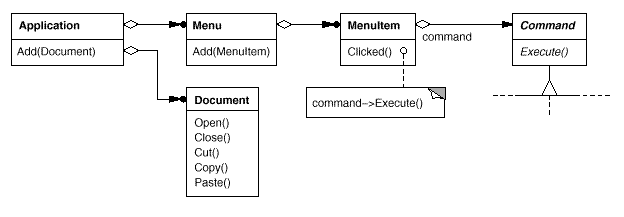
Menus can be implemented easily with Command objects. Each choice ina Menu is an instance of a MenuItem class. An Application class createsthese menus and their menu items along with the rest of the user interface. The Application class also keeps track of Document objects that a user hasopened.
The application configures each MenuItem with an instance of aconcrete Command subclass. When the user selects a MenuItem, theMenuItem calls Execute on its command, and Execute carries out theoperation. MenuItems don't know which subclass of Command they use. Command subclasses store the receiver of the request and invoke one ormore operations on the receiver.
For example, PasteCommand supports pasting text from the clipboardinto a Document. PasteCommand's receiver is the Document object it issupplied upon instantiation. The Execute operation invokes Paste onthe receiving Document.
OpenCommand's Execute operation is different: it prompts the userfor a document name, creates a corresponding Document object, adds thedocument to the receiving application, and opens the document.
Sometimes a MenuItem needs to execute a sequence of commands. For example, a MenuItem for centering a page at normal size could beconstructed from a CenterDocumentCommand object and aNormalSizeCommand object. Because it's common to string commandstogether in this way, we can define a MacroCommand class to allow aMenuItem to execute an open-ended number of commands. MacroCommand isa concrete Command subclass that simply executes a sequence ofCommands. MacroCommand has no explicit receiver, because the commandsit sequences define their own receiver.
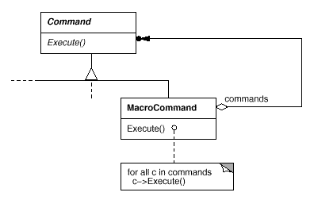
In each of these examples, notice how the Command pattern decouplesthe object that invokes the operation from the one having theknowledge to perform it. This gives us a lot of flexibility indesigning our user interface. An application can provide both a menuand a push button interface to a feature just by making the menu and the push button share an instance of the same concrete Command subclass. We can replace commands dynamically, which would be useful forimplementing context-sensitive menus. We can also support commandscripting by composing commands into larger ones. All of this ispossible because the object that issues a request only needs to knowhow to issue it; it doesn't need to know how the request will be carried out.
Applicability
Use the Command pattern when you want to
parameterize objects by an action to perform, as MenuItem objects did above. You can express such parameterization in a procedural language with a callback function, that is, a function that's registered somewhere to be called at a later point. Commands are an object-oriented replacement for callbacks.
specify, queue, and execute requests at different times. A Command object can have a lifetime independent of the original request. If the receiver of a request can be represented in an address space-independent way, then you can transfer a command object for the request to a different process and fulfill the request there.
support undo. The Command's Execute operation can store state for reversing its effects in the command itself. The Command interface must have an added Unexecute operation that reverses the effects of a previous call to Execute. Executed commands are stored in a history list. Unlimited-level undo and redo is achieved by traversing this list backwards and forwards calling Unexecute and Execute, respectively.
support logging changes so that they can be reapplied in case of a system crash. By augmenting the Command interface with load and store operations, you can keep a persistent log of changes. Recovering from a crash involves reloading logged commands from disk and reexecuting them with the Execute operation.
structure a system around high-level operations built on primitives operations. Such a structure is common in information systems that support transactions. A transaction encapsulates a set of changes to data. The Command pattern offers a way to model transactions. Commands have a common interface, letting you invoke all transactions the same way. The pattern also makes it easy to extend the system with new transactions.
Structure
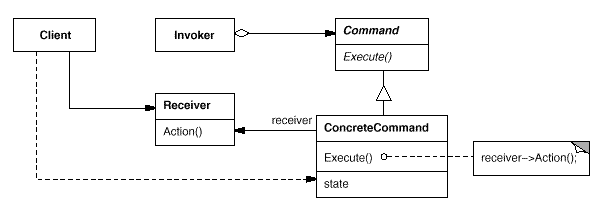
Participants
Command
declares an interface for executing an operation.
ConcreteCommand (PasteCommand, OpenCommand)
defines a binding between a Receiver object and an action.
implements Execute by invoking the corresponding operation(s) on Receiver.
Client (Application)
creates a ConcreteCommand object and sets its receiver.
Invoker (MenuItem)
asks the command to carry out the request.
Receiver (Document, Application)
knows how to perform the operations associated with carrying out a request. Any class may serve as a Receiver.
Collaborations
The client creates a ConcreteCommand object and specifies its receiver.
An Invoker object stores the ConcreteCommand object.
The invoker issues a request by calling Execute on the command. Whencommands are undoable, ConcreteCommand stores state for undoing thecommand prior to invoking Execute.
The ConcreteCommand object invokes operations on its receiver to carryout the request.
The following diagram shows the interactions between these objects. It illustrates how Command decouples the invoker from the receiver(and the request it carries out).
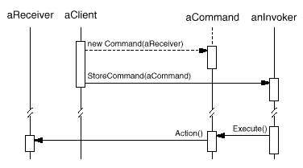
Consequences
The Command pattern has the following consequences:
Command decouples the object that invokes the operation from the onethat knows how to perform it.
Commands are first-class objects. They can be manipulated and extendedlike any other object.
You can assemble commands into a composite command. An example is the MacroCommand class described earlier. In general, composite commandsare an instance of the Composite pattern.
It's easy to add new Commands, because you don't have to changeexisting classes.
Implementation
Consider the following issues when implementing the Command pattern:
How intelligent should a command be? A command can have a wide range of abilities. At one extreme itmerely defines a binding between a receiver and the actions that carryout the request. At the other extreme it implements everything itselfwithout delegating to a receiver at all. The latter extreme is usefulwhen you want to define commands that are independent of existingclasses, when no suitable receiver exists, or when a command knows itsreceiver implicitly. For example, a command that creates anotherapplication window may be just as capable of creating the window asany other object. Somewhere in between these extremes are commandsthat have enough knowledge to find their receiver dynamically.
Supporting undo and redo. Commands can support undo and redo capabilities if they provide a wayto reverse their execution (e.g., an Unexecute or Undo operation). AConcreteCommand class might need to store additional state to do so. Thisstate can include
the Receiver object, which actually carries out operations inresponse to the request,
the arguments to the operation performed on the receiver, and
any original values in the receiver that can changeas a result of handling the request. The receiver must provideoperations that let the command return the receiver to its prior state.
To support one level of undo, an application needs to store only thecommand that was executed last. For multiple-level undo and redo, theapplication needs a history list of commands that have been executed, where the maximum length of the list determines thenumber of undo/redo levels. The history list stores sequences ofcommands that have been executed. Traversing backward through thelist and reverse-executing commands cancels their effect; traversingforward and executing commands reexecutes them.
An undoable command might have to be copied before it can be placed onthe history list. That's because the command object that carried outthe original request, say, from a MenuItem, will perform otherrequests at later times. Copying is required to distinguish differentinvocations of the same command if its state can vary acrossinvocations.
For example, a DeleteCommand that deletes selected objects must store different sets of objects each time it's executed. Therefore theDeleteCommand object must be copied following execution, and the copyis placed on the history list. If the command's state never changeson execution, then copying is not required—only a reference to thecommand need be placed on the history list. Commands that must becopied before being placed on the history list act as prototypes (see Prototype).
Avoiding error accumulation in the undo process. Hysteresis can be a problem in ensuring a reliable, semantics-preserving undo/redo mechanism. Errors can accumulate ascommands are executed, unexecuted, and reexecuted repeatedly so thatan application's state eventually diverges from original values. Itmay be necessary therefore to store more information in the command toensure that objects are restored to their original state. The Memento pattern can be applied to give the commandaccess to this information without exposing the internals of otherobjects.
Using C++ templates. For commands that (1) aren't undoable and (2) don't require arguments, we can use C++ templates to avoid creating a Command subclass forevery kind of action and receiver. We show how to do this in the SampleCode section.
Sample Code
The C++ code shown here sketches the implementation of the Command classesin the Motivation section. We'll define OpenCommand, PasteCommand, and MacroCommand. First theabstract Command class:
OpenCommand opens a document whose name is supplied by theuser. An OpenCommand must be passed anApplication object in its constructor. AskUser is animplementation routine that prompts the user for the name of thedocument to open.
For simple commands that aren't undoable and don't require arguments, we can use a class template to parameterize the command's receiver. We'll define a template subclass SimpleCommand for suchcommands. SimpleCommand is parameterized by theReceiver type and maintains a binding between a receiver objectand an action stored as a pointer to a member function.
Keep in mind that this solution only works for simple commands. More complex commands that keep track of not only their receivers but also arguments and/or undo state require a Command subclass.
A MacroCommand manages a sequence of subcommands and providesoperations for adding and removing subcommands. No explicit receiveris required, because the subcommands already define their receiver.
Note that should the MacroCommand implement anUnexecute operation, then its subcommands must beunexecuted in reverse order relative to Execute'simplementation.
Finally, MacroCommand must provide operations to manage itssubcommands. The MacroCommand is also responsible fordeleting its subcommands.
Perhaps the first example of the Command pattern appears in a paper byLieberman [Lie85]. MacApp [App89] popularizedthe notion of commands for implementing undoable operations. ET++ [WGM88], InterViews [LCI+92], and Unidraw [VL90] also define classes that follow theCommand pattern. InterViews defines an Action abstract class thatprovides command functionality. It also defines an ActionCallbacktemplate, parameterized by action method, that can instantiate commandsubclasses automatically.
The THINK class library [Sym93b] also uses commands to supportundoable actions. Commands in THINK are called Tasks. Taskobjects are passed along a Chain of Responsibility (251) for consumption.
Unidraw's command objects are unique in that they can behave likemessages. A Unidraw command may be sent to another object forinterpretation, and the result of the interpration varies with thereceiving object. Moreover, the receiver may delegate theinterpretation to another object, typically the receiver's parent in alarger structure as in a Chain of Responsibility. The receiver of aUnidraw command is thus computed rather than stored. Unidraw'sinterpretation mechanism depends on run-time type information.
Coplien describes how to implement functors, objects thatare functions, in C++ [Cop92]. He achieves a degree oftransparency in their use by overloading the function call operator(operator()). The Command pattern is different; its focusis on maintaining a binding between a receiver and a function(i.e., action), not just maintaining a function.
Related Patterns
A Composite can be used to implement MacroCommands.
A Memento can keep state the command requires to undo its effect.
A command that must be copied before being placed on the historylist acts as a Prototype.
Interpreter
Intent
Given a language, define a represention for its grammar along with aninterpreter that uses the representation to interpret sentences in thelanguage.
Motivation
If a particular kind of problem occurs often enough, then it might beworthwhile to express instances of the problem as sentences in asimple language. Then you can build an interpreter that solves theproblem by interpreting these sentences.
For example, searching for strings that match a pattern is a commonproblem. Regular expressions are a standard language for specifyingpatterns of strings. Rather than building custom algorithms to matcheach pattern against strings, search algorithms could interpret aregular expression that specifies a set of strings to match.
The Interpreter pattern describes how to define a grammar for simplelanguages, represent sentences in the language, and interpret thesesentences. In this example, the pattern describes how to define agrammar for regular expressions, represent a particular regularexpression, and how to interpret that regular expression.
Suppose the following grammar defines the regular expressions:
The symbol expression is the start symbol, and literalis a terminal symbol defining simple words.
The Interpreter pattern uses a class to represent each grammar rule. Symbols on the right-hand side of the rule are instance variables ofthese classes. The grammar above is represented by five classes: anabstract class RegularExpression and its four subclassesLiteralExpression, AlternationExpression, SequenceExpression, and RepetitionExpression. The last three classes define variables thathold subexpressions.
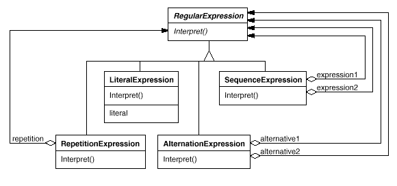
Every regular expression defined by this grammar is represented by anabstract syntax tree made up of instances of these classes. For example, the abstract syntax tree
represents the regular expression
raining & (dogs | cats) *
We can create an interpreter for these regular expressions by definingthe Interpret operation on each subclass of RegularExpression. Interpret takes as an argument the context in which to interpret theexpression. The context contains the input string and information onhow much of it has been matched so far. Each subclass ofRegularExpression implements Interpret to match the next part of theinput string based on the current context. For example,
LiteralExpression will check if the input matches the literal itdefines,
AlternationExpression will check if the input matches any of itsalternatives,
RepetitionExpression will check if the input has multiple copies ofexpression it repeats,
and so on.
Applicability
Use the Interpreter pattern when there is a language to interpret, and you can represent statements in the language as abstract syntax trees. The Interpreter pattern works best when
the grammar is simple. For complex grammars, the class hierarchy forthe grammar becomes large and unmanageable. Tools such as parsergenerators are a better alternative in such cases. They can interpretexpressions without building abstract syntax trees, which can savespace and possibly time.
efficiency is not a critical concern. The most efficient interpretersare usually not implemented by interpreting parse trees directlybut by first translating them into another form. For example, regularexpressions are often transformed into state machines. But even then, the translator can be implemented by the Interpreter pattern, sothe pattern is still applicable.
Structure
Participants
AbstractExpression (RegularExpression)
declares an abstract Interpret operation that is common to all nodes in the abstract syntax tree.
TerminalExpression (LiteralExpression)
implements an Interpret operation associated with terminal symbols in the grammar.
an instance is required for every terminal symbol in a sentence.
one such class is required for every rule R::= R₁ R₂ … Rₙ in the grammar.
maintains instance variables of type AbstractExpression for each of the symbols R₁ through Rₙ.
implements an Interpret operation for nonterminal symbols in the grammar. Interpret typically calls itself recursively on the variables representing R₁ through Rₙ.
Context
contains information that's global to the interpreter.
Client
builds (or is given) an abstract syntax tree representing a particular sentence in the language that the grammar defines. The abstract syntax tree is assembled from instances of the NonterminalExpression and TerminalExpression classes.
invokes the Interpret operation.
Collaborations
The client builds (or is given) the sentence as an abstract syntaxtree of NonterminalExpression and TerminalExpression instances. Thenthe client initializes the context and invokes the Interpretoperation.
Each NonterminalExpression node defines Interpret in terms ofInterpret on each subexpression. The Interpret operation of eachTerminalExpression defines the base case in the recursion.
The Interpret operations at each node use the context tostore and access the state of the interpreter.
Consequences
The Interpreter pattern has the following benefits and liabilities:
It's easy to change and extend the grammar. Because the pattern uses classes to represent grammar rules, you canuse inheritance to change or extend the grammar. Existing expressionscan be modified incrementally, and new expressions can be defined asvariations on old ones.
Implementing the grammar is easy, too. Classes defining nodes in the abstract syntax tree have similarimplementations. These classes are easy to write, and often theirgeneration can be automated with a compiler or parser generator.
Complex grammars are hard to maintain. The Interpreter pattern defines at least one class for every rulein the grammar (grammar rules defined using BNF may require multipleclasses). Hence grammars containing many rules can be hard tomanage and maintain. Other design patterns can be applied tomitigate the problem (see Implementation). But when the grammar is very complex, other techniques such asparser or compiler generators are more appropriate.
Adding new ways to interpret expressions. The Interpreter pattern makes it easier to evaluate an expression in anew way. For example, you can support pretty printing ortype-checking an expression by defining a new operation on theexpression classes. If you keep creating new ways of interpreting anexpression, then consider using the Visitor pattern to avoid changing the grammar classes.
Implementation
The Interpreter and Composite patterns share many implementation issues. The following issuesare specific to Interpreter:
Creating the abstract syntax tree. The Interpreter pattern doesn't explain how to create anabstract syntax tree. In other words, it doesn't address parsing. The abstract syntax tree can be created by a table-driven parser, by ahand-crafted (usually recursive descent) parser, or directly by theclient.
Defining the Interpret operation. You don't have to define the Interpret operation in the expressionclasses. If it's common to create a new interpreter, then it's betterto use the Visitor pattern to put Interpret in aseparate visitor object. For example, a grammar for a programminglanguage will have many operations on abstract syntax trees, such asas type-checking, optimization, code generation, and so on. It will bemore likely to use a visitor to avoid defining these operations onevery grammar class.
Sharing terminal symbols with the Flyweight pattern. Grammars whose sentences contain many occurrences of a terminal symbolmight benefit from sharing a single copy of that symbol. Grammars forcomputer programs are good examples—each program variable willappear in many places throughout the code. In the Motivation example, a sentence can have the terminal symbol dog (modeled by theLiteralExpression class) appearing many times.
Terminal nodes generally don't store information about their positionin the abstract syntax tree. Parent nodes pass them whatever contextthey need during interpretation. Hence there is a distinction betweenshared (intrinsic) state and passed-in (extrinsic) state, and the Flyweight pattern applies.
For example, each instance of LiteralExpression for dogreceives a context containing the substring matched so far. And everysuch LiteralExpression does the same thing in its Interpretoperation—it checks whether the next part of the input contains adog—no matter where the instance appears in the tree.
Sample Code
Here are two examples. The first is a complete example in Smalltalkfor checking whether a sequence matches a regular expression. Thesecond is a C++ program for evaluating Boolean expressions.
The regular expression matcher tests whether a string is in thelanguage defined by the regular expression. The regular expression isdefined by the following grammar:
This grammar is a slight modification of the Motivation example. Wechanged the concrete syntax of regular expressions a little, becausesymbol * can't be a postfix operation in Smalltalk. Sowe use repeat instead. For example, the regular expression
(('dog ' | 'cat ') repeat & 'weather')
matches the input string dog dog cat weather.
To implement the matcher, we define the five classes described in the Motivation section. The classSequenceExpression has instance variables expression1 and expression2 for its childrenin the abstract syntax tree. AlternationExpressionstores its alternatives in the instance variables alternative1 and alternative2, while RepetitionExpression holds the expression it repeats in its repetition instance variable. LiteralExpression has a components instance variable thatholds a list of objects (probably characters). These represent the literalstring that must match the input sequence.
The match: operation implements an interpreter for theregular expression. Each of the classes defining the abstract syntaxtree implements this operation. It takesinputState as an argument representing the current stateof the matching process, having read part of the input string.
This current state is characterized by a set of input streamsrepresenting the set of inputs that the regular expression could haveaccepted so far. (This is roughly equivalent to recording all statesthat the equivalent finite state automata would be in, havingrecognized the input stream to this point).
The current state is most important to the repeat operation. For example, if the regular expression were
'a' repeat
then the interpreter could match a, aa,aaa, and so on. If it were
'a' repeat & 'bc'
then it could match abc, aabc,aaabc, and so on. But if the regular expression were
'a' repeat & 'abc'
then matching the input aabc against the subexpression'a' repeat would yield two input streams, one having matchedone character of the input, and the other having matched twocharacters. Only the stream that has accepted one character willmatch the remaining abc.
Now we consider the definitions of match: for each classdefining the regular expression. The definition forSequenceExpression matches each of its subexpressions insequence. Usually it will eliminate input streams from itsinputState.
An AlternationExpression will return a state that consistsof the union of states from either alternative. The definition ofmatch: for AlternationExpression is
Its output state usually contains more states than its input state, because a RepetitionExpression can match one, two, or manyoccurrences of repetition on the input state. The outputstates represent all these possibilities, allowing subsequent elementsof the regular expression to decide which state is the correct one.
Finally, the definition of match: forLiteralExpression tries to match its components against eachpossible input stream. It keeps only those input streams that have amatch:
The nextAvailable: message advances the input stream. Thisis the only match: operation that advances the stream. Notice how the state that's returned contains a copy of the inputstream, thereby ensuring that matching a literal never changes theinput stream. This is important because each alternative of anAlternationExpression should see identical copies ofthe input stream.
Now that we've defined the classes that make up an abstract syntaxtree, we can describe how to build it. Rather than write a parser for regular expressions, we'll definesome operations on the RegularExpression classes so thatevaluating a Smalltalk expression will produce an abstract syntax treefor the corresponding regular expression. That lets us use thebuilt-in Smalltalk compiler as if it were a parser for regularexpressions.
To build the abstract syntax tree, we'll need to define|, repeat, and & asoperations on RegularExpression. These operations aredefined in class RegularExpression like this:
If we defined these operations higher up in the class hierarchy(SequenceableCollection in Smalltalk-80,IndexedCollection in Smalltalk/V), then they wouldalso be defined for classes such as Array and OrderedCollection. This would letregular expressions match sequences of any kind of object.
The second example is a system for manipulating and evaluatingBoolean expressions implemented in C++. The terminal symbols in thislanguage are Boolean variables, that is, the constantstrue and false. Nonterminal symbols representexpressions containing the operators and, or, and not. The grammar is defined asfollows22:
We define two operations on Boolean expressions. The first, Evaluate, evaluates a Boolean expression in a contextthat assigns a true or false value to each variable. The secondoperation, Replace, produces a new Boolean expression byreplacing a variable with an expression. Replace showshow the Interpreter pattern can be used for more than just evaluatingexpressions. In this case, it manipulates the expression itself.
We give details of just the BooleanExp, VariableExp, and AndExp classes here. ClassesOrExp and NotExp are similar to AndExp. The Constant class represents the Boolean constants.
BooleanExp defines the interface for all classes that definea Boolean expression:
The class Context defines a mapping from variables toBoolean values, which we represent with the C++ constantstrue and false. Context has thefollowing interface:
The expression evaluates to true for this assignment tox and y. We can evaluate the expression with adifferent assignment to the variables simply by changing thecontext.
Finally, we can replace the variable y with a new expression and then reevaluate it:
This example illustrates an important point about the Interpreterpattern: many kinds of operations can interpret a sentence. Ofthe three operations defined for BooleanExp, Evaluate fits our idea of what an interpreter should do mostclosely—that is, it interprets a program or expression and returns asimple result.
However, Replace can be viewed as an interpreter as well. It's an interpreter whose context is the name of the variable beingreplaced along with the expression that replaces it, and whose resultis a new expression. Even Copy can be thought of as aninterpreter with an empty context. It may seem a little strange toconsider Replace and Copy to be interpreters, becausethese are just basic operations on trees. The examples in Visitor illustrate how all three operations can berefactored into a separate interpreter visitor, thus showing thatthe similarity is deep.
The Interpreter pattern is more than just an operation distributedover a class hierarchy that uses the Composite pattern. We consider Evaluate an interpreter because wethink of the BooleanExp class hierarchy as representing alanguage. Given a similar class hierarchy for representing automotivepart assemblies, it's unlikely we'd consider operations likeWeight and Copy as interpreters even though theyare distributed over a class hierarchy that uses the Compositepattern—we just don't think of automotive parts as a language. It'sa matter of perspective; if we started publishing grammars ofautomotive parts, then we could consider operations on those parts tobe ways of interpreting the language.
Known Uses
The Interpreter pattern is widely used in compilers implemented withobject-oriented languages, as the Smalltalk compilers are. SPECTalkuses the pattern to interpret descriptions of input fileformats [Sza92]. The QOCA constraint-solving toolkituses it to evaluate constraints [HHMV92].
Considered in its most general form (i.e., an operation distributedover a class hierarchy based on the Composite pattern), nearly everyuse of the Composite pattern will also contain the Interpreterpattern. But the Interpreter pattern should be reserved for thosecases in which you want to think of the class hierarchy as defining alanguage.
Related Patterns
Composite:The abstract syntax tree is an instance of the Composite pattern.
Flyweight shows how to share terminal symbols within the abstract syntaxtree.
Iterator:The interpreter can use an Iterator to traverse the structure.
Visitor canbe used to maintain the behavior in each node in the abstract syntaxtree in one class.
Iterator
Intent
Provide a way to access the elements of an aggregate objectsequentially without exposing its underlying representation.
Also Known As
Cursor
Motivation
An aggregate object such as a list should give you a way to access itselements without exposing its internal structure. Moreover, you mightwant to traverse the list in different ways, depending on what youwant to accomplish. But you probably don't want to bloat the Listinterface with operations for different traversals, even if you couldanticipate the ones you will need. You might also need to have more thanone traversal pending on the same list.
The Iterator pattern lets you do all this. The key idea in thispattern is to take the responsibility for access and traversal out ofthe list object and put it into an iterator object. The Iterator class defines an interface for accessing the list's elements. An iterator object is responsible for keeping track of the currentelement; that is, it knows which elements have been traversed already.
For example, a List class would call for a ListIterator with thefollowing relationship between them:
Before you can instantiate ListIterator, you must supply the List totraverse. Once you have the ListIterator instance, you can access thelist's elements sequentially. The CurrentItem operation returns thecurrent element in the list, First initializes the current element to the first element, Next advances the current element to the nextelement, and IsDone tests whether we've advanced beyond the lastelement—that is, we're finished with the traversal.
Separating the traversal mechanism from the List object lets us defineiterators for different traversal policies without enumerating them inthe List interface. For example, FilteringListIterator might provideaccess only to those elements that satisfy specific filteringconstraints.
Notice that the iterator and the list are coupled, and the client mustknow that it is a list that's traversed as opposed to some otheraggregate structure. Hence the client commits to a particularaggregate structure. It would be better if we could change the aggregateclass without changing client code. We can do this by generalizingthe iterator concept to support polymorphic iteration.
As an example, let's assume that we also have a SkipListimplementation of a list. A skiplist [Pug90] is aprobabilistic data structure with characteristics similar to balancedtrees. We want to be able to write code that works for both List and SkipList objects.
We define an AbstractList class that provides a common interfacefor manipulating lists. Similarly, we need an abstract Iteratorclass that defines a common iteration interface. Then we can defineconcrete Iterator subclasses for the different list implementations. As a result, the iteration mechanism becomes independent of concreteaggregate classes.
The remaining problem is how to create the iterator. Since we want towrite code that's independent of the concrete List subclasses, wecannot simply instantiate a specific class. Instead, we make the listobjects responsible for creating their corresponding iterator. Thisrequires an operation like CreateIterator through which clientsrequest an iterator object.
CreateIterator is an example of a factory method (see Factory Method). We use it here to let a client aska list object for the appropriate iterator. The Factory Methodapproach give rise to two class hierarchies, one for lists and anotherfor iterators. The CreateIterator factory method connects the twohierarchies.
Applicability
Use the Iterator pattern
to access an aggregate object's contents without exposing its internalrepresentation.
to support multiple traversals of aggregate objects.
to provide a uniform interface for traversing different aggregatestructures (that is, to support polymorphic iteration).
Structure
Participants
Iterator
defines an interface for accessing and traversing elements.
ConcreteIterator
implements the Iterator interface.
keeps track of the current position in the traversal of the aggregate.
Aggregate
defines an interface for creating an Iterator object.
ConcreteAggregate
implements the Iterator creation interface to return an instance of the proper ConcreteIterator.
Collaborations
A ConcreteIterator keeps track of the current object in theaggregate and can compute the succeeding object in thetraversal.
Consequences
The Iterator pattern has three important consequences:
It supports variations in the traversal of an aggregate. Complex aggregates may be traversed in many ways. For example, codegeneration and semantic checking involve traversing parse trees. Codegeneration may traverse the parse tree inorder or preorder. Iterators make it easy to change the traversal algorithm: Just replacethe iterator instance with a different one. You can also defineIterator subclasses to support new traversals.
Iterators simplify the Aggregate interface. Iterator's traversal interface obviates the need for a similarinterface in Aggregate, thereby simplifying the aggregate's interface.
More than one traversal can be pending on an aggregate. An iterator keeps track of its own traversal state. Therefore you canhave more than one traversal in progress at once.
Implementation
Iterator has many implementation variants and alternatives. Someimportant ones follow. The trade-offs often depend on thecontrol structures your language provides. Some languages (CLU [LG86], for example) even support this pattern directly.
Who controls the iteration? A fundamental issue is deciding which party controls the iteration, the iterator or the client that uses the iterator. When the clientcontrols the iteration, the iterator is called an external iterator, and when the iterator controls it, the iterator is an internal iterator.23 Clients that use anexternal iterator must advance the traversal and request the nextelement explicitly from the iterator. In contrast, the client handsan internal iterator an operation to perform, and the iterator appliesthat operation to every element in the aggregate.
External iterators are more flexible than internal iterators. It'seasy to compare two collections for equality with an externaliterator, for example, but it's practically impossible with internaliterators. Internal iterators are especially weak in a language likeC++ that does not provide anonymous functions, closures, orcontinuations like Smalltalk and CLOS. But on the other hand, internal iterators are easier to use, because they define the iterationlogic for you.
Who defines the traversal algorithm? The iterator is not the only place where the traversal algorithm canbe defined. The aggregate might define the traversal algorithm and use the iterator to store just the state of the iteration. We callthis kind of iterator a cursor, since it merely points to the current position in the aggregate. A client will invoke the Nextoperation on the aggregate with the cursor as an argument, and theNext operation will change the state of thecursor.24
If the iterator is responsible for the traversal algorithm, then it'seasy to use different iteration algorithms on the same aggregate, and it can also be easier to reuse the same algorithm on differentaggregates. On the other hand, the traversal algorithm might need toaccess the private variables of the aggregate. If so, putting thetraversal algorithm in the iterator violates the encapsulation of theaggregate.
How robust is the iterator? It can be dangerous to modify an aggregate while you're traversing it. If elements are added or deleted from the aggregate, you might end upaccessing an element twice or missing it completely. A simplesolution is to copy the aggregate and traverse the copy, but that'stoo expensive to do in general.
A robust iterator ensures that insertions and removalswon't interfere with traversal, and it does it without copying theaggregate. There are many ways to implement robust iterators. Mostrely on registering the iterator with the aggregate. On insertion orremoval, the aggregate either adjusts the internal state of iteratorsit has produced, or it maintains information internally to ensureproper traversal.
Kofler provides a good discussion of how robust iterators areimplemented in ET++ [Kof93]. Murray discusses theimplementation of robust iterators for the USL StandardComponents'List class [Mur93].
Additional Iterator operations. The minimal interface to Iterator consists of the operations First, Next, IsDone, and CurrentItem.25 Some additional operations might prove useful. For example, orderedaggregates can have a Previous operation that positions the iteratorto the previous element. A SkipTo operation is useful for sorted orindexed collections. SkipTo positions the iterator to an objectmatching specific criteria.
Using polymorphic iterators in C++. Polymorphic iterators have their cost. They require the iteratorobject to be allocated dynamically by a factory method. Hence theyshould be used only when there's a need for polymorphism. Otherwiseuse concrete iterators, which can be allocated on the stack.
Polymorphic iterators have another drawback: the client is responsiblefor deleting them. This is error-prone, because it's easy to forgetto free a heap-allocated iterator object when you're finished with it. That's especially likely when there are multiple exit points in anoperation. And if an exception is triggered, the iterator object willnever be freed.
The Proxy pattern provides a remedy. We can use astack-allocated proxy as a stand-in for the real iterator. The proxydeletes the iterator in its destructor. Thus when the proxy goes outof scope, the real iterator will get deallocated along with it. Theproxy ensures proper cleanup, even in the face of exceptions. Thisis an application of the well-known C++ technique resourceallocation is initialization [ES90]. The Sample Code givesan example.
Iterators may have privileged access. An iterator can be viewed as an extension of the aggregate thatcreated it. The iterator and the aggregate are tightly coupled. Wecan express this close relationship in C++ by making the iterator afriend of its aggregate. Then you don't need todefine aggregate operations whose sole purpose is to let iteratorsimplement traversal efficiently.
However, such privileged access can make defining new traversalsdifficult, since it'll require changing the aggregate interface to addanother friend. To avoid this problem, the Iterator class can includeprotected operations for accessing important but publiclyunavailable members of the aggregate. Iterator subclasses (and only Iterator subclasses) may use these protected operations to gainprivileged access to the aggregate.
Iterators for composites. External iterators can be difficult to implement over recursiveaggregate structures like those in the Composite pattern, because a position in the structure may span many levels ofnested aggregates. Therefore an external iterator has to store a paththrough the Composite to keep track of the current object. Sometimesit's easier just to use an internal iterator. It can record thecurrent position simply by calling itself recursively, thereby storingthe path implicitly in the call stack.
If the nodes in a Composite have an interface for moving from a nodeto its siblings, parents, and children, then a cursor-based iteratormay offer a better alternative. The cursor only needs to keep track ofthe current node; it can rely on the node interface to traverse theComposite.
Composites often need to be traversed in more than one way. Preorder, postorder, inorder, and breadth-first traversals are common. You cansupport each kind of traversal with a different class of iterator.
Null iterators. A NullIterator is a degenerate iterator that's helpful forhandling boundary conditions. By definition, a NullIterator is always done with traversal; that is, its IsDone operation alwaysevaluates to true.
NullIterator can make traversing tree-structured aggregates (likeComposites) easier. At each point in the traversal, we ask thecurrent element for an iterator for its children. Aggregate elementsreturn a concrete iterator as usual. But leaf elements return aninstance of NullIterator. That lets us implement traversal over theentire structure in a uniform way.
Sample Code
We'll look at the implementation of a simple List class, which is partof our foundation library (Appendix C) .We'll show two Iterator implementations, one for traversing the List infront-to-back order, and another for traversing back-to-front (thefoundation library supports only the first one). Then we show how touse these iterators and how to avoid committing to a particularimplementation. After that, we change the design to make sureiterators get deleted properly. The last example illustrates aninternal iterator and compares it to its external counterpart.
List and Iterator interfaces. First let's look at the part of the List interface that's relevant toimplementing iterators. Refer to (Appendix C). for the full interface.
The List class provides a reasonably efficient way tosupport iteration through its public interface. It's sufficient toimplement both traversals. So there's no need to give iteratorsprivileged access to the underlying data structure; that is, theiterator classes are not friends of List. To enabletransparent use of the different traversals we define an abstractIterator class, which defines the iterator interface.
The implementation of ReverseListIterator is identical, except itsFirst operation positions _currentto the end of the list, and Next decrements_current toward the first item.
Using the iterators. Let's assume we have a List of Employee objects, and we would like to print all the contained employees. TheEmployee class supports this with a Printoperation. To print the list, we define a PrintEmployeesoperation that takes an iterator as an argument. It uses the iteratorto traverse and print the list.
Avoiding commitment to a specific list implementation. Let's consider how a skiplist variation of List would affectour iteration code. A SkipList subclass ofList must provide a SkipListIterator thatimplements the Iterator interface. Internally, theSkipListIterator has to keep more than just an index todo the iteration efficiently. But sinceSkipListIterator conforms to theIterator interface, the PrintEmployees operationcan also be used when the employees are stored in a SkipListobject.
Although this approach works, it would be better if we didn't have to committo a specific List implementation, namelySkipList. We can introduce an AbstractListclass to standardize the list interface for different listimplementations. List and SkipList becomesubclasses of AbstractList.
To enable polymorphic iteration, AbstractList defines afactory method CreateIterator, which subclasses override toreturn their corresponding iterator:
An alternative would be to define a general mixin classTraversable that defines the interface for creating aniterator. Aggregate classes can mix inTraversable to support polymorphic iteration.
List overrides CreateIterator to return aListIterator object:
Now we're in a position to write the code for printingthe employees independent of a concrete representation.
// we know only that we have an AbstractList
AbstractList<Employee*>*employees;// ...
Iterator<Employee*>*iterator=employees->CreateIterator();PrintEmployees(*iterator);deleteiterator;
Making sure iterators get deleted. Notice that CreateIterator returns a newly allocatediterator object. We're responsible for deleting it. If we forget, then we've created a storage leak. To make life easier for clients, we'll provide an IteratorPtr that acts as a proxy for aniterator. It takes care of cleaning up the Iterator objectwhen it goes out of scope.
IteratorPtr is always allocated on thestack.26 C++ automatically takes care of callingits destructor, which deletes the real iterator. IteratorPtr overloads bothoperator-> and operator* in such a way that an IteratorPtr can betreated just like a pointer to an iterator. The members ofIteratorPtr are all implemented inline; thus they can incur nooverhead.
template<classItem>classIteratorPtr{public:IteratorPtr(Iterator<Item>*i):_i(i){}~IteratorPtr(){delete_i;}Iterator<Item>*operator->(){return_i;}Iterator<Item>&operator*(){return*_i;}private:// disallow copy and assignment to avoid
// multiple deletions of _i:
IteratorPtr(constIteratorPtr&);IteratorPtr&operator=(constIteratorPtr&);private:Iterator<Item>*_i;};
An internal ListIterator. As a final example, let's look at a possible implementation of aninternal or passive ListIterator class. Here the iteratorcontrols the iteration, and it applies an operation to each element.
The issue in this case is how to parameterize the iterator with theoperation we want to perform on each element. C++ does not supportanonymous functions or closures that other languages provide for thistask. There are at least two options: (1) Pass in a pointer to afunction (global or static), or (2) rely on subclassing. In the firstcase, the iterator calls the operation passed to it at each point inthe iteration. In the second case, the iterator calls an operationthat a subclass overrides to enact specific behavior.
Neither option is perfect. Often you want to accumulate state duringthe iteration, and functions aren't well-suited to that; we would haveto use static variables to remember the state. AnIterator subclass provides us with a convenient place tostore the accumulated state, like in an instance variable. Butcreating a subclass for every different traversal is more work.
Here's a sketch of the second option, which uses subclassing. We callthe internal iterator a ListTraverser.
ListTraverser takes a List instance as a parameter. Internally it uses an external ListIterator to do thetraversal. Traverse starts the traversal and callsProcessItem for each item. The internal iterator can choose toterminate a traversal by returning false fromProcessItem. Traverse returns whether the traversalterminated prematurely.
Let's use a ListTraverser to print the first 10employees from our employee list. To do it we have to subclassListTraverser and override ProcessItem. Wecount the number of printed employees in a _count instancevariable.
Note how the client doesn't specify the iteration loop. The entireiteration logic can be reused. This is the primary benefit of aninternal iterator. It's a bit more work than an external iterator, though, because we have to define a new class. Contrast this withusing an external iterator:
Internal iterators can encapsulate different kinds of iteration. For example, FilteringListTraverser encapsulates aniteration that processes only items that satisfy a test:
This interface is the same as ListTraverser's except for anadded TestItem member function that defines the test. Subclasses override TestItem to specify the test.
Traverse decides to continue the traversal based on theoutcome of the test:
A variant of this class could define Traverse to return ifat least one item satisfies the test.27
Known Uses
Iterators are common in object-oriented systems. Most collectionclass libraries offer iterators in one form or another.
Here's an example from the Booch components [Boo94], apopular collection class library. It provides both a fixed size(bounded) and dynamically growing (unbounded) implementation of aqueue. The queue interface is defined by an abstract Queue class. Tosupport polymorphic iteration over the different queue implementations, the queue iterator is implemented in the terms of theabstract Queue class interface. This variation has the advantage thatyou don't need a factory method to ask the queue implementations fortheir appropriate iterator. However, it requires the interface of theabstract Queue class to be powerful enough to implement the iterator efficiently.
Iterators don't have to be defined as explicitly in Smalltalk. Thestandard collection classes (Bag, Set, Dictionary, OrderedCollection, String, etc.) define an internal iterator method do:, whichtakes a block (i.e., closure) as an argument. Each element in thecollection is bound to the local variable in the block; then the blockis executed. Smalltalk also includes a set of Stream classes thatsupport an iterator-like interface. ReadStream is essentially anIterator, and it can act as an external iterator for all thesequential collections. There are no standard external iterators fornonsequential collections such as Set and Dictionary.
Polymorphic iterators and the cleanup Proxy described earlier areprovided by the ET++ container classes [WGM88]. The Unidrawgraphical editing framework classes use cursor-basediterators [VL90].
ObjectWindows 2.0 [Bor94] provides a class hierarchy ofiterators for containers. You can iterate over different containertypes in the same way. The ObjectWindow iteration syntax relies onoverloading the postincrement operator ++ to advance theiteration.
Related Patterns
Composite:Iterators are often applied to recursive structures such asComposites.
Factory Method:Polymorphic iterators rely on factory methods to instantiate theappropriate Iterator subclass.
Memento isoften used in conjunction with the Iterator pattern. An iteratorcan use a memento to capture the state of an iteration. The iteratorstores the memento internally.
Mediator
Intent
Define an object that encapsulates how a set of objects interact. Mediator promotes loose coupling by keeping objects from referring toeach other explicitly, and it lets you vary their interactionindependently.
Motivation
Object-oriented design encourages the distribution of behavioramong objects. Such distribution can result in an object structurewith many connections between objects; in the worst case, every objectends up knowing about every other.
Though partitioning a system into many objects generally enhancesreusability, proliferating interconnections tend to reduce it again. Lots of interconnections make it less likely that an object can workwithout the support of others—the system acts as though it weremonolithic. Moreover, it can be difficult to change the system'sbehavior in any significant way, since behavior is distributed amongmany objects. As a result, you may be forced to define many subclassesto customize the system's behavior.
As an example, consider the implementation of dialog boxes in agraphical user interface. A dialog box uses a window to present acollection of widgets such as buttons, menus, and entry fields, asshown here:
Often there are dependencies between the widgets in the dialog. For example, a button gets disabled when a certain entry field is empty. Selecting an entry in a list of choices called a list box might change the contents of an entry field. Conversely, typing textinto the entry field might automatically select one or morecorresponding entries in the list box. Once text appears in the entryfield, other buttons may become enabled that let the user do somethingwith the text, such as changing or deleting the thing to which it refers.
Different dialog boxes will have different dependencies betweenwidgets. So even though dialogs display the same kinds of widgets, they can't simply reuse stock widget classes; they have to becustomized to reflect dialog-specific dependencies. Customizing themindividually by subclassing will be tedious, since many classes areinvolved.
You can avoid these problems by encapsulating collective behavior in aseparate mediator object. A mediator is responsible forcontrolling and coordinating the interactions of a group of objects. The mediator serves as an intermediary that keeps objects in the groupfrom referring to each other explicitly. The objects only know themediator, thereby reducing the number of interconnections.
For example, FontDialogDirector can be the mediatorbetween the widgets in a dialog box. A FontDialogDirector object knowsthe widgets in a dialog and coordinates their interaction. It acts asa hub of communication for widgets:
The following interaction diagram illustrates how the objects cooperate tohandle a change in a list box's selection:
Here's the succession of events by which a list box's selection passesto an entry field:
The list box tells its director that it's changed.
The director gets the selection from the list box.
The director passes the selection to the entry field.
Now that the entry field contains some text, the directorenables button(s) for initiating an action (e.g., demibold, oblique).
Note how the director mediates between the list box and the entry field. Widgets communicate with each other only indirectly, through thedirector. They don't have to know about each other; all they know is thedirector. Furthermore, because the behavior is localized in one class, it can be changed or replaced by extending or replacing that class.
Here's how the FontDialogDirector abstraction can be integrated into aclass library:
DialogDirector is an abstract class that defines the overall behavior ofa dialog. Clients call the ShowDialog operation to display the dialog onthe screen. CreateWidgets is an abstract operation for creating thewidgets of a dialog. WidgetChanged is another abstract operation;widgets call it to inform their director that they have changed. DialogDirector subclasses override CreateWidgets to create the properwidgets, and they override WidgetChanged to handle the changes.
Applicability
Use the Mediator pattern when
a set of objects communicate in well-defined but complex ways. Theresulting interdependencies are unstructured and difficult tounderstand.
reusing an object is difficult because it refers to and communicateswith many other objects.
a behavior that's distributed between several classes should becustomizable without a lot of subclassing.
Structure
A typical object structure might look like this:
Participants
Mediator (DialogDirector)
defines an interface for communicating with Colleague objects.
ConcreteMediator (FontDialogDirector)
implements cooperative behavior by coordinating Colleague objects.
knows and maintains its colleagues.
Colleagueclasses (ListBox, EntryField)
each Colleague class knows its Mediator object.
each colleague communicates with its mediator whenever it would have otherwise communicated with another colleague.
Collaborations
Colleagues send and receive requests from a Mediator object. Themediator implements the cooperative behavior by routing requestsbetween the appropriate colleague(s).
Consequences
The Mediator pattern has the following benefits and drawbacks:
It limits subclassing. A mediator localizes behavior that otherwise would be distributed amongseveral objects. Changing this behavior requires subclassing Mediatoronly; Colleague classes can be reused as is.
It decouples colleagues. A mediator promotes loose coupling between colleagues. You can varyand reuse Colleague and Mediator classes independently.
It simplifies object protocols. A mediator replaces many-to-many interactions with one-to-manyinteractions between the mediator and its colleagues. One-to-manyrelationships are easier to understand, maintain, and extend.
It abstracts how objects cooperate. Making mediation an independent concept and encapsulating it in anobject lets you focus on how objects interact apart from theirindividual behavior. That can help clarify how objects interact in asystem.
It centralizes control. The Mediator pattern trades complexity of interaction for complexity inthe mediator. Because a mediator encapsulates protocols, it can becomemore complex than any individual colleague. This can make the mediatoritself a monolith that's hard to maintain.
Implementation
The following implementation issues are relevant to the Mediatorpattern:
Omitting the abstract Mediator class. There's no need to define an abstract Mediator class when colleagueswork with only one mediator. The abstract coupling that theMediator class provides lets colleagues work with different Mediatorsubclasses, and vice versa.
Colleague-Mediator communication. Colleagues have to communicate with their mediator when an event ofinterest occurs. One approach is to implement the Mediator as anObserver using the Observer pattern. Colleagueclasses act as Subjects, sending notifications to the mediatorwhenever they change state. The mediator responds by propagating theeffects of the change to other colleagues.
Another approach defines a specialized notification interface inMediator that lets colleagues be more direct in their communication. Smalltalk/V for Windows uses a form of delegation: When communicatingwith the mediator, a colleague passes itself as an argument, allowingthe mediator to identify the sender. The Sample Code uses thisapproach, and the Smalltalk/V implementation is discussed further inthe Known Uses.
Sample Code
We'll use a DialogDirector to implement the font dialog box shown inthe Motivation. The abstract class DialogDirector definesthe interface for directors.
Subclasses of DialogDirector overrideWidgetChanged to affect the appropriate widgets. The widgetpasses a reference to itself as an argument to WidgetChangedto let the director identify the widget that changed. DialogDirector subclasses redefine theCreateWidgets pure virtual to construct the widgets in thedialog.
The ListBox, EntryField, and Button aresubclasses of Widget for specialized user interfaceelements. ListBox provides a GetSelectionoperation to get the current selection, and EntryField'sSetText operation puts new text into the field.
FontDialogDirector keeps track of the widgets it displays. ItredefinesCreateWidgets to create the widgets and initialize itsreferences to them:
voidFontDialogDirector::CreateWidgets(){_ok=newButton(this);_cancel=newButton(this);_fontList=newListBox(this);_fontName=newEntryField(this);// fill the listBox with the available font names
// assemble the widgets in the dialog
}
WidgetChanged ensures that the widgets work together properly:
voidFontDialogDirector::WidgetChanged(Widget*theChangedWidget){if(theChangedWidget==_fontList){_fontName->SetText(_fontList->GetSelection());}elseif(theChangedWidget==_ok){// apply font change and dismiss dialog
// ...
}elseif(theChangedWidget==_cancel){// dismiss dialog
}}
The complexity of WidgetChanged increases proportionallywith the complexity of the dialog. Large dialogs are undesirable forother reasons, of course, but mediator complexity might mitigate thepattern's benefits in other applications.
Known Uses
Both ET++ [WGM88] and the THINK C class library [Sym93b] usedirector-like objects in dialogs as mediators between widgets.
The application architecture of Smalltalk/V for Windows is based on amediator structure [LaL94]. In that environment, anapplication consists of a Window containing a set of panes. Thelibrary contains several predefined Pane objects; examples includeTextPane, ListBox, Button, and so on. These panes can be used without subclassing. An application developeronly subclasses from ViewManager, a class that's responsible for doinginter-pane coordination. ViewManager is the Mediator, and each paneonly knows its view manager, which is considered the owner of thepane. Panes don't refer to each other directly.
The following object diagram shows a snapshot of an application atrun-time:
Smalltalk/V uses an event mechanism for Pane-ViewManagercommunication. A pane generates an event when it wants to getinformation from the mediator or when it wants to inform the mediatorthat something significant happened. An event defines a symbol (e.g.,#select) that identifies the event. To handle the event, theview manager registers a method selector with the pane. This selectoris the event's handler; it will be invoked whenever the event occurs.
The following code excerpt shows how a ListPane object gets created insidea ViewManager subclass and how ViewManager registers an event handlerfor the #select event:
Another application of the Mediator pattern is in coordinating complexupdates. An example is the ChangeManager class mentioned in Observer. ChangeManager mediates betweensubjects and observers to avoid redundant updates. When an objectchanges, it notifies the ChangeManager, which in turn coordinates theupdate by notifying the object's dependents.
A similar application appears in the Unidraw drawingframework [VL90] and uses a class called CSolver toenforce connectivity constraints between connectors. Objects ingraphical editors can appear to stick to one another in differentways. Connectors are useful in applications that maintainconnectivity automatically, like diagram editors and circuit designsystems. CSolver is a mediator between connectors. It solves theconnectivity constraints and updates the connectors' positions toreflect them.
Related Patterns
Facade differsfrom Mediator in that it abstracts a subsystem of objects to providea more convenient interface. Its protocol is unidirectional; thatis, Facade objects make requests of the subsystem classes but notvice versa. In contrast, Mediator enables cooperative behaviorthat colleague objects don't or can't provide, and the protocol ismultidirectional.
Colleagues can communicate with the mediator using the Observer pattern.
Memento
Intent
Without violating encapsulation, capture and externalize an object'sinternal state so that the object can be restored to this state later.
Also Known As
Token
Motivation
Sometimes it's necessary to record the internal state of an object. This is required when implementing checkpoints and undo mechanismsthat let users back out of tentative operations or recover fromerrors. You must save state information somewhere so that you canrestore objects to their previous states. But objects normallyencapsulate some or all of their state, making it inaccessible toother objects and impossible to save externally. Exposing this statewould violate encapsulation, which can compromise the application'sreliability and extensibility.
Consider for example a graphical editor that supports connectivitybetween objects. A user can connect two rectangles with a line, and the rectangles stay connected when the user moves either of them. Theeditor ensures that the line stretches to maintain the connection.
A well-known way to maintain connectivity relationships betweenobjects is with a constraint-solving system. We can encapsulate thisfunctionality in a ConstraintSolver object. ConstraintSolver records connections as they are made and generatesmathematical equations that describe them. It solves these equationswhenever the user makes a connection or otherwise modifies thediagram. ConstraintSolver uses the results of its calculations torearrange the graphics so that they maintain the proper connections.
Supporting undo in this application isn't as easy as it may seem. Anobvious way to undo a move operation is to store the original distancemoved and move the object back an equivalent distance. However, thisdoes not guarantee all objects will appear where they did before. Suppose there is some slack in the connection. In that case, simplymoving the rectangle back to its original location won't necessarilyachieve the desired effect.
In general, the ConstraintSolver's public interface might beinsufficient to allow precise reversal of its effects on otherobjects. The undo mechanism must work more closely withConstraintSolver to reestablish previous state, but we should alsoavoid exposing the ConstraintSolver's internals to the undo mechanism.
We can solve this problem with the Memento pattern. A memento is an object that stores a snapshot of theinternal state of another object — the memento's originator. The undo mechanism will request a mementofrom the originator when it needs to checkpoint the originator'sstate. The originator initializes the memento with information thatcharacterizes its current state. Only the originator can store and retrieve information from the memento—the memento is opaque toother objects.
In the graphical editor example just discussed, the ConstraintSolver can actas an originator. The following sequence of events characterizes theundo process:
The editor requests a memento from the ConstraintSolver as aside-effect of the move operation.
The ConstraintSolver creates and returns a memento, an instance of aclass SolverState in this case. A SolverState memento contains datastructures that describe the current state of the ConstraintSolver'sinternal equations and variables.
Later when the user undoes the move operation, the editor gives theSolverState back to the ConstraintSolver.
Based on the information in the SolverState, the ConstraintSolverchanges its internal structures to return its equations and variablesto their exact previous state.
This arrangement lets the ConstraintSolver entrust other objects withthe information it needs to revert to a previous state withoutexposing its internal structure and representations.
Applicability
Use the Memento pattern when
a snapshot of (some portion of) an object's state must be saved sothat it can be restored to that state later, and
a direct interface to obtaining the state would exposeimplementation details and break the object's encapsulation.
Structure
Participants
Memento (SolverState)
stores internal state of the Originator object. The memento may store as much or as little of the originator's internal state as necessary at its originator's discretion.
protects against access by objects other than the originator. Mementos have effectively two interfaces. Caretaker sees a narrow interface to the Memento—it can only pass the memento to other objects. Originator, in contrast, sees a wide interface, one that lets it access all the data necessary to restore itself to its previous state. Ideally, only the originator that produced the memento would be permitted to access the memento's internal state.
Originator (ConstraintSolver)
creates a memento containing a snapshot of its current internal state.
uses the memento to restore its internal state.
Caretaker (undo mechanism)
is responsible for the memento's safekeeping.
never operates on or examines the contents of a memento.
Collaborations
A caretaker requests a memento from an originator, holds it for atime, and passes it back to the originator, as the followinginteraction diagram illustrates:
Sometimes the caretaker won't pass the memento back to the originator, because the originator might never need to revert to an earlier state.
Mementos are passive. Only the originator that created a memento willassign or retrieve its state.
Consequences
The Memento pattern has several consequences:
Preserving encapsulation boundaries. Memento avoids exposing information that only an originator shouldmanage but that must be stored nevertheless outside the originator. The pattern shields other objects from potentially complex Originatorinternals, thereby preserving encapsulation boundaries.
It simplifies Originator. In other encapsulation-preserving designs, Originator keeps theversions of internal state that clients have requested. That puts allthe storage management burden on Originator. Having clientsmanage the state they ask for simplifies Originator and keepsclients from having to notify originators when they're done.
Using mementos might be expensive. Mementos might incur considerable overhead if Originator must copylarge amounts of information to store in the memento or if clientscreate and return mementos to the originator often enough. Unlessencapsulating and restoring Originator state is cheap, the patternmight not be appropriate. See the discussion of incrementality in theImplementation section.
Defining narrow and wide interfaces. It may be difficult in some languages to ensure that only theoriginator can access the memento's state.
Hidden costs in caring for mementos. A caretaker is responsible for deleting the mementos it cares for. However, the caretaker has no idea how much state is in the memento. Hence an otherwise lightweight caretaker might incur large storagecosts when it stores mementos.
Implementation
Here are two issues to consider when implementing the Memento pattern:
Language support. Mementos have two interfaces: a wide one for originators and a narrowone for other objects. Ideally the implementation language willsupport two levels of static protection. C++ lets you do this bymaking the Originator a friend of Memento and making Memento's wideinterface private. Only the narrow interface should be declaredpublic. For example:
classState;classOriginator{public:Memento*CreateMemento();voidSetMemento(constMemento*);// ...
private:State*_state;// internal data structures
// ...
};classMemento{public:// narrow public interface
virtual~Memento();private:// private members accessible only to Originator
friendclassOriginator;Memento();voidSetState(State*);State*GetState();// ...
private:State*_state;// ...
};
Storing incremental changes. When mementos get created and passed back to their originator in apredictable sequence, then Memento can save just the incrementalchange to the originator's internal state.
For example, undoable commands in a history list can use mementos toensure that commands are restored to their exact state when they'reundone (see Command). The history list defines aspecific order in which commands can be undone and redone. That meansmementos can store just the incremental change that a command makesrather than the full state of every object they affect. In theMotivation example given earlier, the constraint solver can store only thoseinternal structures that change to keep the line connecting therectangles, as opposed to storing the absolute positions of theseobjects.
Sample Code
The C++ code given here illustrates the ConstraintSolver example discussed earlier. Weuse MoveCommand objects (see Command) to (un)dothe translation of a graphical object from one position to another. The graphical editor calls the command's Execute operationto move a graphical object and Unexecute to undo the move. The command stores its target, the distance moved, and an instance ofConstraintSolverMemento, a memento containing state from theconstraint solver.
classGraphic;// base class for graphical objects in the graphical editor
classMoveCommand{public:MoveCommand(Graphic*target,constPoint&delta);voidExecute();voidUnexecute();private:ConstraintSolverMemento*_state;Point_delta;Graphic*_target;};
The connection constraints are established by the classConstraintSolver. Its key member function isSolve, which solves the constraints registered withthe AddConstraint operation. To support undo, ConstraintSolver's state can be externalized withCreateMemento into a ConstraintSolverMementoinstance. The constraint solver can be returned to a previousstate by calling SetMemento. ConstraintSolveris a Singleton.
classConstraintSolver{public:staticConstraintSolver*Instance();voidSolve();voidAddConstraint(Graphic*startConnection,Graphic*endConnection);voidRemoveConstraint(Graphic*startConnection,Graphic*endConnection);ConstraintSolverMemento*CreateMemento();voidSetMemento(ConstraintSolverMemento*);private:// nontrivial state and operations for enforcing
// connectivity semantics
};classConstraintSolverMemento{public:virtual~ConstraintSolverMemento();private:friendclassConstraintSolver;ConstraintSolverMemento();// private constraint solver state
};
Given these interfaces, we can implement MoveCommand membersExecute and Unexecute as follows:
voidMoveCommand::Execute(){ConstraintSolver*solver=ConstraintSolver::Instance();_state=solver->CreateMemento();// create a memento
_target->Move(_delta);solver->Solve();}voidMoveCommand::Unexecute(){ConstraintSolver*solver=ConstraintSolver::Instance();_target->Move(-_delta);solver->SetMemento(_state);// restore solver state
solver->Solve();}
Execute acquires a ConstraintSolverMemento mementobefore it moves the graphic. Unexecute moves the graphicback, sets the constraint solver's state to the previous state, and finally tells the constraint solver to solve the constraints.
Known Uses
The preceding sample code is based on Unidraw's support for connectivitythrough its CSolver class [VL90].
Collections in Dylan [App92] provide an iteration interface thatreflects the Memento pattern. Dylan's collections have the notion of astate object, which is a memento that represents the state of theiteration. Each collection can represent the current state of theiteration in any way it chooses; the representation is completelyhidden from clients. The Dylan iteration approach might be translatedto C++ as follows:
CreateInitialState returns an initializedIterationState object for the collection. Next advancesthe state object to the next position in the iteration; it effectivelyincrements the iteration index. IsDone returnstrue if Next has advanced beyond the last elementin the collection. CurrentItem dereferences the stateobject and returns the element in the collection to which it refers. Copy returns a copy of the given state object. This isuseful for marking a point in an iteration.
Given a class ItemType, we can iterate over a collection ofits instances as follows28:
The memento-based iteration interface has two interesting benefits:
More than one state can work on the same collection. (The sameis true of the Iterator pattern.)
It doesn't require breaking a collection's encapsulationto support iteration. The memento is only interpreted by thecollection itself; no one else has access to it. Other approaches toiteration require breaking encapsulation by making iterator classesfriends of their collection classes (see Iterator). The situation is reversed in thememento-based implementation: Collection is a friend of theIteratorState.
The QOCA constraint-solving toolkit stores incremental information inmementos [HHMV92]. Clients can obtain a memento that characterizesthe current solution to a system of constraints. The memento containsonly those constraint variables that have changed since the lastsolution. Usually only a small subset of the solver's variableschanges for each new solution. This subset is enough to return thesolver to the preceding solution; reverting to earlier solutionsrequires restoring mementos from the intervening solutions. Hence youcan't set mementos in any order; QOCA relies on a history mechanism torevert to earlier solutions.
Related Patterns
Command: Commands can use mementos to maintainstate for undoable operations.
Iterator: Mementoscan be used for iteration as described earlier.
Observer
Intent
Define a one-to-many dependency between objects so that when oneobject changes state, all its dependents are notified and updatedautomatically.
Also Known As
Dependents, Publish-Subscribe
Motivation
A common side-effect of partitioning a system into a collection ofcooperating classes is the need to maintain consistency betweenrelated objects. You don't want to achieve consistency by making theclasses tightly coupled, because that reduces their reusability.
For example, many graphical user interface toolkits separate thepresentational aspects of the user interface from the underlyingapplication data [KP88, LVC89, P+88, WGM88].Classes defining application data and presentations can be reusedindependently. They can work together, too. Both a spreadsheet objectand bar chart object can depict information in the same application dataobject using different presentations. The spreadsheet and the bar chartdon't know about each other, thereby letting you reuse only the one youneed. But they behave as though they do. When the user changes theinformation in the spreadsheet, the bar chart reflects the changesimmediately, and vice versa.
This behavior implies that the spreadsheet and bar chart are dependenton the data object and therefore should be notified of any change inits state. And there's no reason to limit the number of dependentobjects to two; there may be any number of different user interfacesto the same data.
The Observer pattern describes how to establish these relationships. The key objects in this pattern are subject and observer. A subject may have any number of dependentobservers. All observers are notified whenever the subject undergoesa change in state. In response, each observer will query the subjectto synchronize its state with the subject's state.
This kind of interaction is also known as publish-subscribe. The subject is the publisher ofnotifications. It sends out these notifications without having to knowwho its observers are. Any number of observers can subscribe toreceive notifications.
Applicability
Use the Observer pattern in any of the following situations:
When an abstraction has two aspects, one dependent on the other. Encapsulating these aspects in separate objects lets you vary and reuse them independently.
When a change to one object requires changing others, and youdon't know how many objects need to be changed.
When an object should be able to notify other objects without makingassumptions about who these objects are. In other words, you don'twant these objects tightly coupled.
Structure
Participants
Subject
knows its observers. Any number of Observer objects may observe a subject.
provides an interface for attaching and detaching Observer objects.
Observer
defines an updating interface for objects that should be notified of changes in a subject.
ConcreteSubject
stores state of interest to ConcreteObserver objects.
sends a notification to its observers when its state changes.
ConcreteObserver
maintains a reference to a ConcreteSubject object.
stores state that should stay consistent with the subject's.
implements the Observer updating interface to keep its state consistent with the subject's.
Collaborations
ConcreteSubject notifies its observers whenever a changeoccurs that could make its observers' state inconsistent with its own.
After being informed of a change in the concrete subject, aConcreteObserver object may query the subject for information. ConcreteObserver uses this information to reconcile its state with thatof the subject.
The following interaction diagram illustrates the collaborationsbetween a subject and two observers:
Note how the Observer object that initiates the change requestpostpones its update until it gets a notification from the subject. Notify is not always called by the subject. It can be called by anobserver or by another kind of object entirely. The Implementationsection discusses some common variations.
Consequences
The Observer pattern lets you vary subjects and observersindependently. You can reuse subjects without reusing theirobservers, and vice versa. It lets you add observers withoutmodifying the subject or other observers.
Further benefits and liabilities of the Observer pattern include thefollowing:
Abstract coupling between Subject and Observer. All a subject knows is that it has a list of observers, eachconforming to the simple interface of the abstract Observer class. The subject doesn't know the concrete class of any observer. Thus thecoupling between subjects and observers is abstract and minimal.
Because Subject and Observer aren't tightly coupled, they can belong todifferent layers of abstraction in a system. A lower-level subjectcan communicate and inform a higher-level observer, thereby keeping thesystem's layering intact. If Subject and Observer are lumpedtogether, then the resulting object must either span two layers (andviolate the layering), or it must be forced to live in one layer orthe other (which might compromise the layering abstraction).
Support for broadcast communication. Unlike an ordinary request, the notification that a subject sendsneedn't specify its receiver. The notification is broadcastautomatically to all interested objects that subscribed to it. Thesubject doesn't care how many interested objects exist; its onlyresponsibility is to notify its observers. This gives you the freedomto add and remove observers at any time. It's up to the observer tohandle or ignore a notification.
Unexpected updates. Because observers have no knowledge of each other's presence, they canbe blind to the ultimate cost of changing the subject. A seeminglyinnocuous operation on the subject may cause a cascade of updates toobservers and their dependent objects. Moreover, dependency criteriathat aren't well-defined or maintained usually lead to spuriousupdates, which can be hard to track down.
This problem is aggravated by the fact that the simple update protocolprovides no details on what changed in the subject. Withoutadditional protocol to help observers discover what changed, they maybe forced to work hard to deduce the changes.
Implementation
Several issues related to the implementation of the dependencymechanism are discussed in this section.
Mapping subjects to their observers. The simplest way for a subject to keep track of the observers itshould notify is to store references to them explicitly in thesubject. However, such storage may be too expensive when there aremany subjects and few observers. One solution is to trade space fortime by using an associative look-up (e.g., a hash table) to maintainthe subject-to-observer mapping. Thus a subject with no observersdoes not incur storage overhead. On the other hand, this approachincreases the cost of accessing the observers.
Observing more than one subject. It might make sense in some situations for an observer to depend onmore than one subject. For example, a spreadsheet may depend on morethan one data source. It's necessary to extend the Update interfacein such cases to let the observer know which subject is sendingthe notification. The subject can simply pass itself as a parameterin the Update operation, thereby letting the observer know whichsubject to examine.
Who triggers the update? The subject and its observers rely on the notification mechanism tostay consistent. But what object actually calls Notify to trigger theupdate? Here are two options:
Have state-setting operations on Subject call Notify after theychange the subject's state. The advantage of this approach is thatclients don't have to remember to call Notify on the subject. Thedisadvantage is that several consecutive operations will causeseveral consecutive updates, which may be inefficient.
Make clients responsible for calling Notify at the right time. The advantage here is that the client can wait to trigger the updateuntil after a series of state changes has been made, therebyavoiding needless intermediate updates. The disadvantage is thatclients have an added responsibility to trigger the update. Thatmakes errors more likely, since clients might forget to call Notify.
Dangling references to deleted subjects. Deleting a subject should not produce dangling references in itsobservers. One way to avoid dangling references is to make thesubject notify its observers as it is deleted so that they can resettheir reference to it. In general, simply deleting the observers is not an option, because other objects may reference them, or they may beobserving other subjects as well.
Making sure Subject state is self-consistent beforenotification. It's important to make sure Subject state is self-consistent beforecalling Notify, because observers query the subject for its currentstate in the course of updating their own state.
This self-consistency rule is easy to violate unintentionally whenSubject subclass operations call inherited operations. For example, the notification in the following code sequence is trigged when thesubject is in an inconsistent state:
voidMySubject::Operation(intnewValue){BaseClassSubject::Operation(newValue);// trigger notification
_myInstVar+=newValue;// update subclass state (too late!)
}
You can avoid this pitfall by sending notifications from template methods (Template Method) in abstract Subjectclasses. Define a primitive operation for subclasses to override, and makeNotify the last operation in the template method, which will ensure thatthe object is self-consistent when subclasses override Subjectoperations.
voidText::Cut(TextRanger){ReplaceRange(r);// redefined in subclasses
Notify();}
By the way, it's always a good idea to document which Subject operationstrigger notifications.
Avoiding observer-specific update protocols: the pushand pull models. Implementations of the Observer pattern often havethe subject broadcast additional information about the change. Thesubject passes this information as an argument to Update. The amountof information may vary widely.
At one extreme, which we call the push model, the subjectsends observers detailed information about the change, whether theywant it or not. At the other extreme is the pull model; the subject sends nothing but the most minimal notification, and observers ask for details explicitly thereafter.
The pull model emphasizes the subject's ignorance of its observers, whereas the push model assumes subjects know something about theirobservers' needs. The push model might make observers less reusable, because Subject classes make assumptions about Observer classes thatmight not always be true. On the other hand, the pull model may beinefficient, because Observer classes must ascertain what changedwithout help from the Subject.
Specifying modifications of interest explicitly. You can improve update efficiency by extending the subject'sregistration interface to allow registering observers only forspecific events of interest. When such an event occurs, the subjectinforms only those observers that have registered interest in thatevent. One way to support this uses the notion of aspects for Subject objects. To registerinterest in particular events, observers are attached to theirsubjects using
voidSubject::Attach(Observer*,Aspect&interest);
where interest specifies the eventof interest. At notification time, the subject supplies the changedaspect to its observers as a parameter to the Update operation. For example:
voidObserver::Update(Subject*,Aspect&interest);
Encapsulating complex update semantics. When the dependency relationship between subjects and observers isparticularly complex, an object that maintains these relationships mightbe required. We call such an object a ChangeManager. Its purpose is to minimize the work required to make observers reflect achange in their subject. For example, if an operation involveschanges to several interdependent subjects, you might have toensure that their observers are notified only after all thesubjects have been modified to avoid notifying observers more thanonce.
ChangeManager has three responsibilities:
It maps a subject to its observers and provides an interface tomaintain this mapping. This eliminates the need for subjects to maintainreferences to their observers and vice versa.
It defines a particular update strategy.
It updates all dependent observers at the request of a subject.
The following diagram depicts a simple ChangeManager-based implementation ofthe Observer pattern. There are two specialized ChangeManagers. SimpleChangeManager is naive in that it always updates all observers ofeach subject. In contrast, DAGChangeManager handles directed-acyclicgraphs of dependencies between subjects and their observers. ADAGChangeManager is preferable to a SimpleChangeManager when an observerobserves more than one subject. In that case, a change in two or moresubjects might cause redundant updates. The DAGChangeManager ensuresthe observer receives just one update. SimpleChangeManager isfine when multiple updates aren't an issue.
ChangeManager is an instance of the Mediator pattern. In general there is only one ChangeManager, and it is knownglobally. The Singleton pattern would beuseful here.
Combining the Subject and Observer classes. Class libraries written in languages that lack multiple inheritance(like Smalltalk) generally don't define separate Subject and Observerclasses but combine their interfaces in one class. That lets youdefine an object that acts as both a subject and an observer withoutmultiple inheritance. In Smalltalk, for example, the Subject and Observer interfaces are defined in the root class Object, making themavailable to all classes.
This implementation supports multiple subjects for each observer. Thesubject passed to the Update operation lets the observerdetermine which subject changed when it observes more than one.
Similarly, an abstract class defines the Subject interface:
ClockTimer is a concrete subject for storing and maintaining the time of day. It notifies its observers every second. ClockTimer provides the interface for retrieving individualtime units such as the hour, minute, and second.
The Tick operation gets called by an internal timer atregular intervals to provide an accurate time base. Tickupdates the ClockTimer's internal state and callsNotify to inform observers of the change:
voidClockTimer::Tick(){// update internal time-keeping state
// ...
Notify();}
Now we can define a class DigitalClock that displays thetime. It inherits its graphical functionality from a Widgetclass provided by a user interface toolkit. The Observer interface ismixed into the DigitalClock interface by inheriting fromObserver.
classDigitalClock:publicWidget,publicObserver{public:DigitalClock(ClockTimer*);virtual~DigitalClock();virtualvoidUpdate(Subject*);// overrides Observer operation
virtualvoidDraw();// overrides Widget operation;
// defines how to draw the digital clock
private:ClockTimer*_subject;};DigitalClock::DigitalClock(ClockTimer*s){_subject=s;_subject->Attach(this);}DigitalClock::DigitalClock(){_subject->Detach(this);}
Before the Update operation draws the clock face, it checksto make sure the notifying subject is the clock's subject:
voidDigitalClock::Update(Subject*theChangedSubject){if(theChangedSubject==_subject){Draw();}}voidDigitalClock::Draw(){// get the new values from the subject
inthour=_subject->GetHour();intminute=_subject->GetMinute();// etc.
// draw the digital clock
}
An AnalogClock class can be defined in the same way.
Whenever the timer ticks, the two clocks will be updatedand will redisplay themselves appropriately.
Known Uses
The first and perhaps best-known example of the Observer pattern appearsin Smalltalk Model/View/Controller (MVC), the user interface framework in the Smalltalkenvironment [KP88]. MVC's Model class plays the role ofSubject, while View is the base class for observers. Smalltalk, ET++ [WGM88], and the THINK class library [Sym93b] provide ageneral dependency mechanism by putting Subject and Observer interfacesin the parent class for all other classes in the system.
Other user interface toolkits that employ this pattern areInterViews [LVC89], the AndrewToolkit [P+88], and Unidraw [VL90]. InterViewsdefines Observer and Observable (for subjects) classes explicitly. Andrew calls them view and data object, respectively. Unidrawsplits graphical editor objects into View (for observers) and Subjectparts.
Related Patterns
Mediator: Byencapsulating complex update semantics, the ChangeManager acts asmediator between subjects and observers.
Singleton:The ChangeManager may use the Singleton pattern to make it uniqueand globally accessible.
State
Intent
Allow an object to alter its behavior when its internal state changes. The object will appear to change its class.
Also Known As
Objects for States
Motivation
Consider a class TCPConnection that represents a network connection. A TCPConnection object can be in one of several different states:Established, Listening, Closed. When a TCPConnection object receivesrequests from other objects, it responds differently depending on itscurrent state. For example, the effect of an Open request depends onwhether the connection is in its Closed state or its Establishedstate. The State pattern describes how TCPConnection can exhibitdifferent behavior in each state.
The key idea in this pattern is to introduce an abstract class calledTCPState to represent the states of the network connection. TheTCPState class declares an interface common to all classes thatrepresent different operational states. Subclasses of TCPStateimplement state-specific behavior. For example, the classesTCPEstablished and TCPClosed implement behavior particular to theEstablished and Closed states of TCPConnection.
The class TCPConnection maintains a state object (an instance of asubclass of TCPState) that represents the current state of the TCPconnection. The class TCPConnection delegates all state-specificrequests to this state object. TCPConnection uses its TCPStatesubclass instance to perform operations particular to the state of theconnection.
Whenever the connection changes state, the TCPConnection objectchanges the state object it uses. When the connection goes fromestablished to closed, for example, TCPConnection will replace itsTCPEstablished instance with a TCPClosed instance.
Applicability
Use the State pattern in either of the following cases:
An object's behavior depends on its state, and it must change itsbehavior at run-time depending on that state.
Operations have large, multipart conditional statements that depend onthe object's state. This state is usually represented by one or moreenumerated constants. Often, several operations will contain thissame conditional structure. The State pattern puts each branch of theconditional in a separate class. This lets you treat the object'sstate as an object in its own right that can vary independently fromother objects.
Structure
Participants
Context (TCPConnection)
defines the interface of interest to clients.
maintains an instance of a ConcreteState subclass that defines thecurrent state.
State (TCPState)
defines an interface for encapsulating the behavior associated with aparticular state of the Context.
each subclass implements a behavior associated with a state ofthe Context.
Collaborations
Context delegates state-specific requests to the current ConcreteStateobject.
A context may pass itself as an argument to the State objecthandling the request. This lets the State object accessthe context if necessary.
Context is the primary interface for clients. Clients can configure acontext with State objects. Once a context is configured, its clients don't have to deal with the State objects directly.
Either Context or the ConcreteState subclasses can decide which statesucceeds another and under what circumstances.
Consequences
The State pattern has the following consequences:
It localizes state-specific behavior and partitionsbehavior for different states. The State pattern puts all behavior associated with a particular stateinto one object. Because all state-specific code lives in a Statesubclass, new states and transitions can be added easily by definingnew subclasses.
An alternative is to use data values to define internal states and have Context operations check the data explicitly. But then we'dhave look-alike conditional or case statements scattered throughoutContext's implementation. Adding a new state could requirechanging several operations, which complicates maintenance.
The State pattern avoids this problem but might introduce another, because the pattern distributes behavior for different states acrossseveral State subclasses. This increases the number of classes and isless compact than a single class. But such distribution is actuallygood if there are many states, which would otherwise necessitate largeconditional statements.
Like long procedures, large conditional statements are undesirable. They're monolithic and tend to make the code less explicit, whichin turn makes them difficult to modify and extend. The State patternoffers a better way to structure state-specific code. The logic thatdetermines the state transitions doesn't reside in monolithicif or switch statements but instead is partitionedbetween the State subclasses. Encapsulating each state transition and action in a class elevates the idea of an execution state to fullobject status. That imposes structure on the code and makes itsintent clearer.
It makes state transitions explicit. When an object defines its current state solely in terms of internaldata values, its state transitions have no explicit representation;they only show up as assignments to some variables. Introducingseparate objects for different states makes the transitions moreexplicit. Also, State objects can protect the Context frominconsistent internal states, because state transitions are atomicfrom the Context's perspective—they happen by rebinding onevariable (the Context's State object variable), notseveral [dCLF93].
State objects can be shared. If State objects have no instance variables—that is, the state theyrepresent is encoded entirely in their type—then contexts can sharea State object. When states are shared in this way, they areessentially flyweights (see Flyweight) with nointrinsic state, only behavior.
Implementation
The State pattern raises a variety of implementation issues:
Who defines the state transitions? The State pattern does not specify which participant defines thecriteria for state transitions. If the criteria are fixed, then theycan be implemented entirely in the Context. It is generally moreflexible and appropriate, however, to let the State subclassesthemselves specify their successor state and when to make thetransition. This requires adding an interface to the Context thatlets State objects set the Context's current state explicitly.
Decentralizing the transition logic in this way makes it easy tomodify or extend the logic by defining new State subclasses. Adisadvantage of decentralization is that one State subclass will haveknowledge of at least one other, which introduces implementationdependencies between subclasses.
A table-based alternative. In C++ Programming Style [Car92], Cargilldescribes another way to impose structure on state-driven code: Heuses tables to map inputs to state transitions. For each state, atable maps every possible input to a succeeding state. In effect, this approach converts conditional code (and virtual functions, in thecase of the State pattern) into a table look-up.
The main advantage of tables is their regularity: You can change thetransition criteria by modifying data instead of changing programcode. There are some disadvantages, however:
A table look-up is often less efficient than a (virtual) function call.
Putting transition logic into a uniform, tabular format makes thetransition criteria less explicit and therefore harder to understand.
It's usually difficult to add actions to accompany the statetransitions. The table-driven approach captures the states and theirtransitions, but it must be augmented to perform arbitrary computationon each transition.
The key difference between table-driven state machines and the Statepattern can be summed up like this: The State pattern modelsstate-specific behavior, whereas the table-driven approach focuses ondefining state transitions.
Creating and destroying State objects. A common implementation trade-off worth considering is whether(1) to create State objects only when they are needed and destroy themthereafter versus (2) creating them ahead of time and neverdestroying them.
The first choice is preferable when the states that will be enteredaren't known at run-time, and contexts change stateinfrequently. This approach avoids creating objects that won't beused, which is important if the State objects store a lot ofinformation. The second approach is better when state changes occurrapidly, in which case you want to avoid destroying states, becausethey may be needed again shortly. Instantiation costs are paid onceup-front, and there are no destruction costs at all. This approachmight be inconvenient, though, because the Context must keepreferences to all states that might be entered.
Using dynamic inheritance. Changing the behavior for a particular request could be accomplishedby changing the object's class at run-time, but this is not possiblein most object-oriented programming languages. Exceptions includeSelf [US87] and other delegation-based languages thatprovide such a mechanism and hence support the State pattern directly. Objects in Self can delegate operations to other objects to achieve aform of dynamic inheritance. Changing the delegation target atrun-time effectively changes the inheritance structure. Thismechanism lets objects change their behavior and amounts to changingtheir class.
Sample Code
The following example gives the C++ code for the TCP connectionexample described in the Motivation section. This example is asimplified version of the TCP protocol; it doesn't describe thecomplete protocol or all the states of TCPconnections.29
First, we define the class TCPConnection, which provides aninterface for transmitting data and handles requests to change state.
TCPConnection keeps an instance of the TCPStateclass in the _state member variable. The classTCPState duplicates the state-changing interface ofTCPConnection. Each TCPState operation takes aTCPConnection instance as a parameter, lettingTCPState access data from TCPConnection and change the connection's state.
TCPConnection delegates all state-specific requests to itsTCPState instance _state.TCPConnection also provides an operation for changing thisvariable to a new TCPState. The constructor forTCPConnection initializes the object to theTCPClosed state (defined later).
TCPState implements default behavior for all requestsdelegated to it. It can also change the state of aTCPConnection with the ChangeState operation. TCPState is declared a friend of TCPConnection togive it privileged access to this operation.
Subclasses of TCPState implement state-specific behavior. ATCP connection can be in many states: Established, Listening, Closed, etc., and there's a subclass of TCPState for each state. We'll discuss three subclasses in detail: TCPEstablished, TCPListen, and TCPClosed.
TCPState subclasses maintain no local state, sothey can be shared, and only one instance of each is required. Theunique instance of each TCPState subclass is obtained by thestatic Instanceoperation.30
Each TCPState subclass implements state-specific behaviorfor valid requests in the state:
voidTCPClosed::ActiveOpen(TCPConnection*t){// send SYN, receive SYN, ACK, etc.
ChangeState(t,TCPEstablished::Instance());}voidTCPClosed::PassiveOpen(TCPConnection*t){ChangeState(t,TCPListen::Instance());}voidTCPEstablished::Close(TCPConnection*t){// send FIN, receive ACK of FIN
ChangeState(t,TCPListen::Instance());}voidTCPEstablished::Transmit(TCPConnection*t,TCPOctetStream*o){t->ProcessOctet(o);}voidTCPListen::Send(TCPConnection*t){// send SYN, receive SYN, ACK, etc.
ChangeState(t,TCPEstablished::Instance());}
After performing state-specific work, these operations call theChangeState operation to change the state ofthe TCPConnection. TCPConnection itself doesn'tknow a thing about the TCP connection protocol; it's theTCPState subclasses that define each state transitionand action in TCP.
Known Uses
Johnson and Zweig [JZ91] characterize theState pattern and its application to TCP connection protocols.
Most popular interactive drawing programs provide tools forperforming operations by direct manipulation. For example, aline-drawing tool lets a user click and drag to create a new line. Aselection tool lets the user select shapes. There's usually a paletteof such tools to choose from. The user thinks of this activity aspicking up a tool and wielding it, but in reality the editor'sbehavior changes with the current tool: When a drawing tool is activewe create shapes; when the selection tool is active we select shapes;and so forth. We can use the State pattern to change the editor'sbehavior depending on the current tool.
We can define an abstract Tool class from which to define subclassesthat implement tool-specific behavior. The drawing editor maintains acurrent Tool object and delegates requests to it. It replaces thisobject when the user chooses a new tool, causing the behavior of thedrawing editor to change accordingly.
This technique is used in both the HotDraw [Joh92] and Unidraw [VL90] drawing editor frameworks. It allows clients to define new kinds of tools easily. In HotDraw, the DrawingController class forwards the requests to the current Tool object. In Unidraw, the corresponding classes are Viewer and Tool. The following class diagram sketches the Tool and DrawingController interfaces:
Coplien's Envelope-Letter idiom [Cop92] is related toState. Envelope-Letter is a technique for changing an object's class atrun-time. The State pattern is more specific, focusing on how to dealwith an object whose behavior depends on its state.
Related Patterns
The Flyweight pattern explains when and how State objects can be shared.
Define a family of algorithms, encapsulate each one, and make theminterchangeable. Strategy lets the algorithm vary independently fromclients that use it.
Also Known As
Policy
Motivation
Many algorithms exist for breaking a stream of text into lines. Hard-wiring all such algorithms into the classes that require themisn't desirable for several reasons:
Clients that need linebreaking get more complex if they includethe linebreaking code. That makes clients bigger and harder tomaintain, especially if they support multiple linebreaking algorithms.
Different algorithms will be appropriate at different times. We don'twant to support multiple linebreaking algorithms if we don't use themall.
It's difficult to add new algorithms and vary existing ones whenlinebreaking is an integral part of a client.
We can avoid these problems by defining classes that encapsulatedifferent linebreaking algorithms. An algorithm that's encapsulated inthis way is called a strategy.
Suppose a Composition class is responsible for maintaining and updating the linebreaks of text displayed in a text viewer. Linebreaking strategies aren't implemented by the class Composition. Instead, they are implemented separately by subclasses of the abstractCompositor class. Compositor subclasses implement different strategies:
SimpleCompositor implements a simple strategy that determines linebreaks one at atime.
TeXCompositor implements the TeX algorithm for finding linebreaks. This strategytries to optimize linebreaks globally, that is, one paragraph at atime.
ArrayCompositor implements a strategy that selects breaks so that each row has a fixednumber of items. It's useful for breaking a collection of icons intorows, for example.
A Composition maintains a reference to a Compositor object. Whenever aComposition reformats its text, it forwards this responsibility to itsCompositor object. The client of Composition specifies whichCompositor should be used by installing the Compositor it desires intothe Composition.
Applicability
Use the Strategy pattern when
many related classes differ only in their behavior. Strategiesprovide a way to configure a class with one of many behaviors.
you need different variants of an algorithm. For example, you might definealgorithms reflecting different space/time trade-offs. Strategies can be used when these variants are implemented as a classhierarchy of algorithms [HO87].
an algorithm uses data that clients shouldn't know about. Use theStrategy pattern to avoid exposing complex, algorithm-specific datastructures.
a class defines many behaviors, and these appear as multipleconditional statements in its operations. Instead of manyconditionals, move related conditional branches into their ownStrategy class.
Structure
Participants
Strategy (Compositor)
declares an interface common to all supported algorithms. Context uses this interface to call the algorithm defined by a ConcreteStrategy.
implements the algorithm using the Strategy interface.
Context (Composition)
is configured with a ConcreteStrategy object.
maintains a reference to a Strategy object.
may define an interface that lets Strategy access its data.
Collaborations
Strategy and Context interact to implement the chosen algorithm. Acontext may pass all data required by the algorithm to the strategywhen the algorithm is called. Alternatively, the context can passitself as an argument to Strategy operations. That lets the strategycall back on the context as required.
A context forwards requests from its clients to its strategy. Clientsusually create and pass a ConcreteStrategy object to the context;thereafter, clients interact with the context exclusively. There isoften a family of ConcreteStrategy classes for a client to choosefrom.
Consequences
The Strategy pattern has the following benefits and drawbacks:
Families of related algorithms. Hierarchies of Strategy classes define a family of algorithms orbehaviors for contexts to reuse. Inheritance canhelp factor out common functionality of the algorithms.
An alternative to subclassing. Inheritance offers another way to support a variety of algorithms orbehaviors. You can subclass a Context class directly to give itdifferent behaviors. But this hard-wires the behavior into Context. It mixes the algorithm implementation with Context's, making Contextharder to understand, maintain, and extend. And you can't vary thealgorithm dynamically. You wind up with many related classes whoseonly difference is the algorithm or behavior they employ. Encapsulating the algorithm in separate Strategy classes lets you varythe algorithm independently of its context, making it easier toswitch, understand, and extend.
Strategies eliminate conditional statements. The Strategy pattern offers an alternative to conditional statements forselecting desired behavior. When different behaviors are lumped into oneclass, it's hard to avoid using conditional statements to select theright behavior. Encapsulating the behavior in separate Strategy classeseliminates these conditional statements.
For example, without strategies, the code for breakingtext into lines could look like
voidComposition::Repair(){switch(_breakingStrategy){caseSimpleStrategy:ComposeWithSimpleCompositor();break;caseTeXStrategy:ComposeWithTeXCompositor();break;// ...
}// merge results with existing composition, if necessary
}
The Strategy pattern eliminates this case statement by delegating thelinebreaking task to a Strategy object:
voidComposition::Repair(){_compositor->Compose();// merge results with existing composition, if necessary
}
Code containing many conditional statements often indicatesthe need to apply the Strategy pattern.
A choice of implementations. Strategies can provide different implementations of the samebehavior. The client can choose among strategies with differenttime and space trade-offs.
Clients must be aware of different Strategies. The pattern has a potential drawback in that a client must understandhow Strategies differ before it can select the appropriate one. Clients might be exposed to implementation issues. Therefore youshould use the Strategy pattern only when the variation in behavior isrelevant to clients.
Communication overhead between Strategy and Context. The Strategy interface is shared by all ConcreteStrategy classeswhether the algorithms they implement are trivial or complex. Henceit's likely that some ConcreteStrategies won't use all the informationpassed to them through this interface; simple ConcreteStrategies mayuse none of it! That means there will be times when the contextcreates and initializes parameters that never get used. If this is anissue, then you'll need tighter coupling between Strategy and Context.
Increased number of objects. Strategies increase the number of objects in an application. Sometimesyou can reduce this overhead by implementing strategies as statelessobjects that contexts can share. Any residual state is maintained by thecontext, which passes it in each request to the Strategy object. Sharedstrategies should not maintain state across invocations. The Flyweight pattern describes this approach in moredetail.
Implementation
Consider the following implementation issues:
Defining the Strategy and Context interfaces. The Strategy and Context interfaces must give a ConcreteStrategyefficient access to any data it needs from a context, and vice versa.
One approach is to have Context pass data in parameters to Strategyoperations—in other words, take the data to the strategy. This keepsStrategy and Context decoupled. On the other hand, Context mightpass data the Strategy doesn't need.
Another technique has a context pass itself as an argument, and the strategy requests data from the context explicitly. Alternatively, the strategy can store a reference to its context, eliminating the need to pass anything at all. Either way, thestrategy can request exactly what it needs. But now
Context mustdefine a more elaborate interface to its data, which couples Strategyand Context more closely.
The needs of the particular algorithm and its data requirements willdetermine the best technique.
Strategies as template parameters. In C++ templates can be used to configure a class with a strategy. This technique is only applicable if (1) the Strategy can be selectedat compile-time, and (2) it does not have to be changed at run-time. In this case, the class to be configured (e.g., Context) isdefined as a template class that has a Strategy class as aparameter:
With templates, there's no need to define an abstract class that defines the interface to the Strategy. Using Strategy as atemplate parameter also lets you bind a Strategy to itsContext statically, which can increase efficiency.
3. Making Strategy objects optional. The Context class may be simplified if it's meaningful not tohave a Strategy object. Context checks to see if it has a Strategyobject before accessing it. If there is one, then Context uses itnormally. If there isn't a strategy, then Context carries out defaultbehavior. The benefit of this approach is that clients don't have todeal with Strategy objects at all unless they don't like thedefault behavior.
Sample Code
We'll give the high-level code for the Motivation example, which isbased on the implementation of Composition and Compositor classes inInterViews [LCI+92].
The Composition class maintains a collection ofComponent instances, which represent text and graphicalelements in a document. A composition arranges component objects intolines using an instance of a Compositor subclass, whichencapsulates a linebreaking strategy. Each component has anassociated natural size, stretchability, and shrinkability. Thestretchability defines how much the component can grow beyond itsnatural size; shrinkability is how much it can shrink. Thecomposition passes these values to a compositor, which uses them todetermine the best location for linebreaks.
classComposition{public:Composition(Compositor*);voidRepair();private:Compositor*_compositor;Component*_components;// the list of components
int_componentCount;// the number of components
int_lineWidth;// the Composition's line width
int*_lineBreaks;// the position of linebreaks
// in components
int_lineCount;// the number of lines
};
When a new layout is required, the composition asks its compositor todetermine where to place linebreaks. The composition passes thecompositor three arrays that define natural sizes, stretchabilities, and shrinkabilities of the components. It also passes the number ofcomponents, how wide the line is, and an array that the compositorfills with the position of each linebreak. The compositor returns thenumber of calculated breaks.
The Compositor interface lets the composition pass thecompositor all the information it needs. This is an example oftaking the data to the strategy:
Note that Compositor is an abstract class. Concretesubclasses define specific linebreaking strategies.
The composition calls its compositor in its Repairoperation. Repair first initializes arrays with the naturalsize, stretchability, and shrinkability of each component (the detailsof which we omit for brevity). Then it calls on the compositor toobtain the linebreaks and finally lays out the components according to the breaks (also omitted):
voidComposition::Repair(){Coord*natural;Coord*stretchability;Coord*shrinkability;intcomponentCount;int*breaks;// prepare the arrays with the desired component sizes
// ...
// determine where the breaks are:
intbreakCount;breakCount=_compositor->Compose(natural,stretchability,shrinkability,componentCount,_lineWidth,breaks);// lay out components according to breaks
// ...
}
Now let's look at the Compositor subclasses. SimpleCompositor examines components a line at a time todetermine where breaks should go:
TeXCompositor uses a more global strategy. It examines aparagraph at a time, taking into account the components' sizeand stretchability. It also tries to give an even color to theparagraph by minimizing the whitespace between components.
These classes don't use all the information passed inCompose. SimpleCompositor ignores the stretchabilityof the components, taking only their natural widths into account. TeXCompositor uses all the information passed to it, whereasArrayCompositor ignores everything.
To instantiate Composition, you pass it the compositoryou want to use:
Compositor's interface is carefully designed to support alllayout algorithms that subclasses might implement. You don't want tohave to change this interface with every new subclass, because that willrequire changing existing subclasses. In general, the Strategy and Context interfaces determine how well the pattern achieves its intent.
Known Uses
Both ET++ [WGM88] and InterViews use strategies to encapsulatedifferent linebreaking algorithms as we've described.
In the RTL System for compiler code optimization [JML92],strategies define different register allocation schemes(RegisterAllocator) and instruction set scheduling policies(RISCscheduler, CISCscheduler). This provides flexibility in targeting theoptimizer for different machine architectures.
The ET++SwapsManager calculation engine framework computes prices fordifferent financial instruments [EG92]. Its keyabstractions are Instrument and YieldCurve. Different instruments areimplemented as subclasses of Instrument. YieldCurve calculatesdiscount factors, which determine the present value of future cashflows. Both of these classes delegate some behavior to Strategyobjects. The framework provides a family of ConcreteStrategy classesfor generating cash flows, valuing swaps, and calculating discountfactors. You can create new calculation engines by configuringInstrument and YieldCurve with the different ConcreteStrategy objects. This approach supports mixing and matching existing Strategyimplementations as well as defining new ones.
The Booch components [BV90] use strategies as templatearguments. The Booch collection classes support three different kinds ofmemory allocation strategies: managed (allocation out of a pool),controlled (allocations/deallocations are protected by locks), and unmanaged (the normal memory allocator). These strategies are passed astemplate arguments to a collection class when it's instantiated. For example, an UnboundedCollection that uses the unmanaged strategy isinstantiated as UnboundedCollection.
RApp is a system for integrated circuit layout [GA89, AG90].RApp must lay out and route wires that connect subsystems on thecircuit. Routing algorithms in RApp are defined assubclasses of an abstract Router class. Router is a Strategy class.
Borland's ObjectWindows [Bor94] uses strategies in dialogsboxes to ensure that the user enters valid data. For example, numbers mighthave to be in a certain range, and a numeric entry field should acceptonly digits. Validating that a string is correct can require atable look-up.
ObjectWindows uses Validator objects to encapsulate validationstrategies. Validators are examples of Strategy objects. Data entryfields delegate the validation strategy to an optional Validatorobject. The client attaches a validator to a field if validation isrequired (an example of an optional strategy). When the dialog isclosed, the entry fields ask their validators to validate the data. The class library provides validators for common cases, such as a RangeValidator for numbers. New client-specific validation strategiescan be defined easily by subclassing the Validator class.
Related Patterns
Flyweight: Strategy objects often make good flyweights.
Template Method
Intent
Define the skeleton of an algorithm in an operation, deferring somesteps to subclasses. Template Method lets subclasses redefinecertain steps of an algorithm without changing the algorithm'sstructure.
Motivation
Consider an application framework that provides Application and Document classes. The Application class is responsible for openingexisting documents stored in an external format, such as a file. ADocument object represents the information in a document once it'sread from the file.
Applications built with the framework can subclass Application and Document to suit specific needs. For example, a drawing applicationdefines DrawApplication and DrawDocument subclasses; a spreadsheetapplication defines SpreadsheetApplication and SpreadsheetDocumentsubclasses.
The abstract Application class defines the algorithm for opening and reading a document in its OpenDocument operation:
voidApplication::OpenDocument(constchar*name){if(!CanOpenDocument(name)){// cannot handle this document
return;}Document*doc=DoCreateDocument();if(doc){_docs->AddDocument(doc);AboutToOpenDocument(doc);doc->Open();doc->DoRead();}}
OpenDocument defines each step for opening a document. It checks ifthe document can be opened, creates the application-specific Documentobject, adds it to its set of documents, and reads the Document from afile.
We call OpenDocument a template method. A template methoddefines an algorithm in terms of abstract operations that subclassesoverride to provide concrete behavior. Application subclasses definethe steps of the algorithm that check if the document can be opened(CanOpenDocument) and that create the Document (DoCreateDocument). Document classes define the step that reads the document (DoRead). The template method also defines an operation that lets Applicationsubclasses know when the document is about to be opened(AboutToOpenDocument), in case they care.
By defining some of the steps of an algorithm using abstractoperations, the template method fixes their ordering, but it letsApplication and Document subclasses vary those steps to suit theirneeds.
Applicability
The Template Method pattern should be used
to implement the invariant parts of an algorithm once and leave it upto subclasses to implement the behavior that can vary.
when common behavior among subclasses should be factored and localizedin a common class to avoid code duplication. This is a good example ofrefactoring to generalize as described by Opdyke and Johnson [OJ93]. You first identify thedifferences in the existing code and then separate the differencesinto new operations. Finally, you replace the differing code with atemplate method that calls one of these new operations.
to control subclasses extensions. You can define a template methodthat calls hook operations (see Consequences) at specific points, thereby permitting extensions only at those points.
Structure
Participants
AbstractClass (Application)
defines abstract primitive operations that concretesubclasses define to implement steps of an algorithm.
implements a template method defining the skeleton of an algorithm. The template method calls primitive operations as well as operationsdefined in AbstractClass or those of other objects.
ConcreteClass (MyApplication)
implements the primitive operations to carry out subclass-specificsteps of the algorithm.
Collaborations
ConcreteClass relies on AbstractClass to implement the invariant steps of the algorithm.
Consequences
Template methods are a fundamental technique for code reuse. They areparticularly important in class libraries, because they are the meansfor factoring out common behavior in library classes.
Template methods lead to an inverted control structure that'ssometimes referred to as the Hollywood principle, that is, Don'tcall us, we'll call you [Swe85]. This refers tohow a parent class calls the operations of a subclass and not theother way around.
Template methods call the following kinds of operations:
concrete operations (either on the ConcreteClass or onclient classes);
concrete AbstractClass operations (i.e., operations that aregenerally useful to subclasses);
hook operations, which provide default behavior thatsubclasses can extend if necessary. A hook operation often doesnothing by default.
It's important for template methods to specify which operations arehooks (may be overridden) and which are abstract operations(must be overridden). To reuse an abstract class effectively, subclass writers must understand which operations are designed foroverriding.
A subclass can extend a parent class operation's behavior byoverriding the operation and calling the parent operation explicitly:
Unfortunately, it's easy to forget to call the inherited operation. We can transform such an operation into a template method to givethe parent control over how subclasses extend it. The idea is tocall a hook operation from a template method in the parent class. Then subclasses can then override this hook operation:
Subclasses override HookOperation to extend itsbehavior:
voidDerivedClass::HookOperation(){// derived class extension
}
Implementation
Three implementation issues are worth noting:
Using C++ access control. In C++, the primitive operations that a template method calls can bedeclared protected members. This ensures that they are only called bythe template method. Primitive operations that must be overridden aredeclared pure virtual. The template method itself should not beoverridden; therefore you can make the template method a nonvirtualmember function.
Minimizing primitive operations. An important goal in designing template methods is to minimize thenumber of primitive operations that a subclass must override to fleshout the algorithm. The more operations that need overriding, the moretedious things get for clients.
Naming conventions. You can identify the operations that should be overridden by adding aprefix to their names. For example, the MacApp framework for Macintoshapplications [App89] prefixes template method names with Do-:DoCreateDocument, DoRead, and so forth.
Sample Code
The following C++ example shows how a parent class can enforce aninvariant for its subclasses. The example comes from NeXT'sAppKit [Add94]. Consider a class View that supportsdrawing on the screen. View enforces the invariant that itssubclasses can draw into a view only after it becomes the focus,which requires certain drawing state (for example, colors and fonts) tobe set up properly.
We can use a Display template method to set up this state. View defines two concrete operations, SetFocus and ResetFocus, that set up and clean upthe drawing state, respectively. View's DoDisplayhook operation performs the actual drawing. Display callsSetFocus before DoDisplay to set up the drawingstate; Display calls ResetFocus afterwards torelease the drawing state.
To maintain the invariant, the View's clients always callDisplay, and View subclasses always overrideDoDisplay.
DoDisplay does nothing in View:
voidView::DoDisplay(){}
Subclasses override it to add their specific drawing behavior:
voidMyView::DoDisplay(){// render the view's contents
}
Known Uses
Template methods are so fundamental that they can be found in almostevery abstract class. Wirfs-Brock et al. [WBWW90, WBJ90] provide a good overview and discussion of template methods.
Related Patterns
Factory Methods are often called by template methods. In the Motivation example, the factory method DoCreateDocument is called by the template methodOpenDocument.
Strategy: Template methods use inheritance to vary part of an algorithm. Strategies use delegation to vary the entire algorithm.
Visitor
Intent
Represent an operation to be performed on the elements of an objectstructure. Visitor lets you define a new operation without changing theclasses of the elements on which it operates.
Motivation
Consider a compiler that represents programs as abstract syntax trees. It will need to perform operations on abstract syntax trees for staticsemantic analyses like checking that all variables are defined. Itwill also need to generate code. So it might define operations fortype-checking, code optimization, flow analysis, checking for variablesbeing assigned values before they're used, and so on. Moreover, we coulduse the abstract syntax trees for pretty-printing, programrestructuring, code instrumentation, and computing various metrics of aprogram.
Most of these operations will need to treat nodes that representassignment statements differently from nodes that represent variables orarithmetic expressions. Hence there will be one class for assignmentstatements, another for variable accesses, another for arithmeticexpressions, and so on. The set of node classes depends on the languagebeing compiled, of course, but it doesn't change much for a givenlanguage.
This diagram shows part of the Node class hierarchy. The problem hereis that distributing all these operations across the various nodeclasses leads to a system that's hard to understand, maintain, and change. It will be confusing to have type-checking code mixed withpretty-printing code or flow analysis code. Moreover, adding a newoperation usually requires recompiling all of these classes. It would bebetter if each new operation could be added separately, and the nodeclasses were independent of the operations that apply to them.
We can have both by packaging related operations from each class in aseparate object, called a visitor, and passing it toelements of the abstract syntax tree as it's traversed. When an elementaccepts the visitor, it sends a request to the visitor that encodesthe element's class. It also includes the element as an argument. Thevisitor will then execute the operation for that element—theoperation that used to be in the class of the element.
For example, a compiler that didn't use visitors might type-check aprocedure by calling the TypeCheck operation on its abstract syntaxtree. Each of the nodes would implement TypeCheck by calling TypeCheckon its components (see the preceding class diagram). If the compilertype-checked a procedure using visitors, then it would create aTypeCheckingVisitor object and call the Accept operation on theabstract syntax tree with that object as an argument. Each of thenodes would implement Accept by calling back on the visitor: anassignment node calls VisitAssignment operation on the visitor, whilea variable reference calls VisitVariableReference. What used to be theTypeCheck operation in class AssignmentNode is now the VisitAssignmentoperation on TypeCheckingVisitor.
To make visitors work for more than just type-checking, we need anabstract parent class NodeVisitor for all visitors of an abstract syntaxtree. NodeVisitor must declare an operation for each node class. Anapplication that needs to compute program metrics will define newsubclasses of NodeVisitor and will no longer need to add application-specific code to the node classes. The Visitor pattern encapsulates the operations for each compilation phase in a Visitor associated with that phase.
With the Visitor pattern, you define two class hierarchies: one for theelements being operated on (the Node hierarchy) and one for the visitorsthat define operations on the elements (the NodeVisitor hierarchy). Youcreate a new operation by adding a new subclass to the visitor classhierarchy. As long as the grammar that the compiler accepts doesn'tchange (that is, we don't have to add new Node subclasses), we can addnew functionality simply by defining new NodeVisitor subclasses.
Applicability
Use the Visitor pattern when
an object structure contains many classes of objects with differing interfaces, and you want to perform operations on these objects that depend on their concrete classes.
many distinct and unrelated operations need to be performed on objectsin an object structure, and you want to avoid polluting theirclasses with these operations. Visitor lets you keep related operationstogether by defining them in one class. When the object structure isshared by many applications, use Visitor to put operations in just thoseapplications that need them.
the classes defining the object structure rarely change, but you oftenwant to define new operations over the structure. Changing the objectstructure classes requires redefining the interface to all visitors, which is potentially costly. If the object structure classes changeoften, then it's probably better to define the operations in those classes.
Structure
Participants
Visitor (NodeVisitor)
declares a Visit operation for each class of ConcreteElement in the object structure. The operation's name and signature identifies the class that sends the Visit request to the visitor. That lets the visitor determine the concrete class of the element being visited. Then the visitor can access the element directly through its particular interface.
ConcreteVisitor (TypeCheckingVisitor)
implements each operation declared by Visitor. Each operation implements a fragment of the algorithm defined for the corresponding class of object in the structure. ConcreteVisitor provides the context for the algorithm and stores its local state. This state often accumulates results during the traversal of the structure.
Element (Node)
defines an Accept operation that takes a visitor as an argument.
ConcreteElement (AssignmentNode, VariableRefNode)
implements an Accept operation that takes a visitor as an argument.
ObjectStructure (Program)
can enumerate its elements.
may provide a high-level interface to allow the visitor to visit its elements.
may either be a composite (see Composite) or a collection such as a list or a set.
Collaborations
A client that uses the Visitor pattern must create a ConcreteVisitorobject and then traverse the object structure, visiting each elementwith the visitor.
When an element is visited, it calls the Visitor operation thatcorresponds to its class. The element supplies itself as an argumentto this operation to let the visitor access its state, if necessary.
The following interaction diagram illustrates the collaborationsbetween an object structure, a visitor, and two elements:
Consequences
Some of the benefits and liabilities of the Visitor pattern are as follows:
Visitor makes adding new operations easy. Visitors make it easy to add operations that depend on the components ofcomplex objects. You can define a new operation over an object structuresimply by adding a new visitor. In contrast, if you spread functionalityover many classes, then you must change each class to define a newoperation.
A visitor gathers related operations and separates unrelated ones. Related behavior isn't spread over the classes defining the objectstructure; it's localized in a visitor. Unrelated sets of behavior arepartitioned in their own visitor subclasses. That simplifies both theclasses defining the elements and the algorithms defined in thevisitors. Any algorithm-specific data structures can be hidden in thevisitor.
Adding new ConcreteElement classes is hard. The Visitor pattern makes it hard to add new subclasses of Element. Eachnew ConcreteElement gives rise to a new abstract operation on Visitor and a corresponding implementation in every ConcreteVisitor class. Sometimes adefault implementation can be provided in Visitor that can be inheritedby most of the ConcreteVisitors, but this is the exception rather thanthe rule.
So the key consideration in applying the Visitor pattern is whether youare mostly likely to change the algorithm applied over an objectstructure or the classes of objects that make up the structure. TheVisitor class hierarchy can be difficult to maintain when newConcreteElement classes are added frequently. In such cases, it'sprobably easier just to define operations on the classes that make upthe structure. If the Element class hierarchy is stable, but you arecontinually adding operations or changing algorithms, then the Visitorpattern will help you manage the changes.
Visiting across class hierarchies. An iterator (see Iterator) can visit the objects in astructure as it traverses them by calling their operations. But an iteratorcan't work across object structures with different types of elements. For example, the Iterator interface defined on page 295 can access only objects of type Item:
This implies that all elements the iterator can visit have a common parentclass Item.
Visitor does not have this restriction. It can visit objects thatdon't have a common parent class. You can add any type of object to aVisitor interface. For example, in
MyType and YourType do not have to be related throughinheritance at all.
Accumulating state. Visitors can accumulate state as they visit each element in the objectstructure. Without a visitor, this state would be passed as extraarguments to the operations that perform the traversal, or theymight appear as global variables.
Breaking encapsulation. Visitor's approach assumes that the ConcreteElement interface is powerfulenough to let visitors do their job. As a result, the pattern oftenforces you to provide public operations that access an element'sinternal state, which may compromise its encapsulation.
Implementation
Each object structure will have an associated Visitor class. Thisabstract visitor class declares a VisitConcreteElement operation foreach class of ConcreteElement defining the object structure. EachVisit operation on the Visitor declares its argument to be aparticular ConcreteElement, allowing the Visitor to access theinterface of the ConcreteElement directly. ConcreteVisitor classesoverride each Visit operation to implement visitor-specific behaviorfor the corresponding ConcreteElement class.
The Visitor class would be declared like this in C++:
classVisitor{public:virtualvoidVisitElementA(ElementA*);virtualvoidVisitElementB(ElementB*);// and so on for other concrete elements
protected:Visitor();};
Each class of ConcreteElement implements an Accept operationthat calls the matching Visit... operation on the visitorfor that ConcreteElement. Thus the operation that ends up gettingcalled depends on both the class of the element and the class of thevisitor.31
Here are two other implementation issues that arise when you apply theVisitor pattern:
Double dispatch. Effectively, the Visitor pattern lets you add operations to classeswithout changing them. Visitor achieves this by using a techniquecalled double-dispatch. It's a well-known technique. Infact, some programming languages support it directly (CLOS, forexample). Languages like C++ and Smalltalk support single-dispatch.
In single-dispatch languages, two criteria determine which operationwill fulfill a request: the name of the request and the type ofreceiver. For example, the operation that a GenerateCode request willcall depends on the type of node object you ask. In C++, callingGenerateCode on an instance of VariableRefNode willcall VariableRefNode::GenerateCode (which generates code for avariable reference). Calling GenerateCode on anAssignmentNode will callAssignmentNode::GenerateCode (which will generate code for anassignment). The operation that gets executed depends both on the kindof request and the type of the receiver.
Double-dispatch simply means the operation that gets executeddepends on the kind of request and the types of two receivers. Accept is a double-dispatch operation. Its meaning dependson two types: the Visitor's and the Element's. Double-dispatchinglets visitors request different operations on each class ofelement.32
This is the key to the Visitor pattern: The operation that getsexecuted depends on both the type of Visitor and the type of Elementit visits. Instead of binding operations statically into the Elementinterface, you can consolidate the operations in a Visitor and useAccept to do the binding at run-time. Extending the Elementinterface amounts to defining one new Visitor subclass rather than many newElement subclasses.
Who is responsible for traversing the object structure? A visitor must visit each element of the object structure. The questionis, how does it get there? We can put responsibility for traversal inany of three places: in the object structure, in the visitor, or in aseparate iterator object (see Iterator (289)).
Often the object structure is responsible for iteration. A collectionwill simply iterate over its elements, calling the Accept operation oneach. A composite will commonly traverse itself by having each Acceptoperation traverse the element's children and call Accept on each ofthem recursively.
Another solution is to use an iterator to visit the elements. In C++,you could use either an internal or external iterator, depending on whatis available and what is most efficient. In Smalltalk, you usually usean internal iterator using do: and a block. Since internaliterators are implemented by the object structure, using an internaliterator is a lot like making the object structure responsible foriteration. The main difference is that an internal iterator will notcause double-dispatching—it will call an operation on the visitor with an element as an argument as opposed to calling anoperation on the element with the visitor as an argument. But it's easy to use the Visitor pattern with an internal iterator ifthe operation on the visitor simply calls the operation on the elementwithout recursing.
You could even put the traversal algorithm in the visitor, although you'llend up duplicating the traversal code in each ConcreteVisitor for eachaggregate ConcreteElement. The main reason to put the traversal strategyin the visitor is to implement a particularly complex traversal, onethat depends on the results of the operations on the object structure. We'll give an example of such a case in the Sample Code.
Sample Code
Because visitors are usually associated with composites, we'll use theEquipment classes defined in the Sample Code of Composite to illustrate the Visitor pattern. Wewill use Visitor to define operations for computing theinventory of materials and the total cost for a piece of equipment. The Equipment classes are so simple that using Visitorisn't really necessary, but they make it easy to see what'sinvolved in implementing the pattern.
Here again is the Equipment class from Composite. We've augmented it with anAccept operation to let it work with a visitor.
The Equipment operations return the attributes of a piece ofequipment, such as its power consumption and cost. Subclasses redefinethese operations appropriately for specific types of equipment (e.g.,a chassis, drives, and planar boards).
The abstract class for all visitors of equipment has a virtualfunction for each subclass of equipment, as shown next. All of thevirtual functions do nothing by default.
classEquipmentVisitor{public:virtual~EquipmentVisitor();virtualvoidVisitFloppyDisk(FloppyDisk*);virtualvoidVisitCard(Card*);virtualvoidVisitChassis(Chassis*);virtualvoidVisitBus(Bus*);// and so on for other concrete subclasses of Equipment
protected:EquipmentVisitor();};
Equipment subclasses define Accept inbasically the same way: It calls theEquipmentVisitor operation that corresponds to the classthat received the Accept request, like this:
Equipment that contains other equipment (in particular, subclasses ofCompositeEquipment in the Composite pattern) implementsAccept by iterating over its children and callingAccept on each of them. Then it calls theVisit operation as usual. For example, Chassis::Accept could traverseall the parts in the chassis as follows:
Subclasses of EquipmentVisitor define particular algorithmsover the equipment structure. The PricingVisitor computes thecost of the equipment structure. It computes the net price of all simpleequipment (e.g., floppies) and the discount price of all compositeequipment (e.g., chassis and buses).
PricingVisitor will compute the total cost of all nodes in theequipment structure. Note that PricingVisitor chooses theappropriate pricing policy for a class of equipment by dispatching to the corresponding member function. What's more, we can change thepricing policy of an equipment structure just by changing thePricingVisitor class.
We can define a visitor for computing inventory like this:
The InventoryVisitor accumulates the totals for each type ofequipment in the object structure. InventoryVisitor uses anInventory class that defines an interface for adding equipment(which we won't bother defining here).
Now we'll show how to implement the Smalltalk example from the Interpreter pattern with the Visitor pattern. Like the previous example, this one is so small thatVisitor probably won't buy us much, but it provides a good illustration ofhow to use the pattern. Further, it illustrates a situation in whichiteration is the visitor's responsibility.
The object structure (regular expressions) is made of four classes, and all of them have an accept: method that takes thevisitor as an argument. In class SequenceExpression, theaccept: method is
accept:aVisitor^aVisitorvisitSequence:self
In class RepeatExpression, the accept: methodsends the visitRepeat: message. In class AlternationExpression, it sends thevisitAlternation: message. In class LiteralExpression, it sends thevisitLiteral: message.
The four classes also must have accessing functions that the visitorcan use. For SequenceExpression these areexpression1 and expression2; forAlternationExpression these are alternative1and alternative2; forRepeatExpression it is repetition; and forLiteralExpression these are components.
The ConcreteVisitor class is REMatchingVisitor. Itis responsible for the traversal because its traversal algorithmis irregular. The biggest irregularity is that aRepeatExpression will repeatedly traverse its component. The class REMatchingVisitor has an instance variableinputState. Its methods are essentially the same asthe match: methods of the expression classes in theInterpreter pattern except theyreplace the argument named inputState with theexpression node being matched. However, theystill return the set of streams that the expression would matchto identify the current state.
The Smalltalk-80 compiler has a Visitor class called ProgramNodeEnumerator. It's used primarily for algorithms that analyze source code. It isn't used for code generation or pretty-printing, although it could be.
IRIS Inventor [Str93]is a toolkit for developing 3-D graphics applications. Inventorrepresents a three-dimensional scene as a hierarchy of nodes, eachrepresenting either a geometric object or an attribute of one. Operations like rendering a scene or mapping an input event requiretraversing this hierarchy in different ways. Inventor does thisusing visitors called actions. There are different visitors forrendering, event handling, searching, filing, and determiningbounding boxes.
To make adding new nodes easier, Inventor implements adouble-dispatch scheme for C++. The scheme relies on run-time typeinformation and a two-dimensional table in which rows representvisitors and columns represent node classes. The cells store apointer to the function bound to the visitor and node class.
Mark Linton coined the term Visitor in the X Consortium'sFresco Application Toolkit specification [LP93].
Related Patterns
Composite:Visitors can be used to apply an operation over an object structuredefined by the Composite pattern.
Interpreter:Visitor may be applied to do the interpretation.
Discussion of Behavioral Patterns
Encapsulating Variation
Encapsulating variation is a theme of many behavioral patterns. Whenan aspect of a program changes frequently, these patterns define anobject that encapsulates that aspect. Then other parts of the programcan collaborate with the object whenever they depend on that aspect. The patterns usually define an abstract class that describes theencapsulating object, and the pattern derives its name from thatobject.33 For example,
a Strategy object encapsulates an algorithm (Strategy),
a State object encapsulates a state-dependent behavior (State),
a Mediator object encapsulates the protocol betweenobjects (Mediator (305)), and
an Iterator object encapsulates the way you access and traverse thecomponents of an aggregate object (Iterator).
These patterns describe aspects of a program that are likely tochange. Most patterns have two kinds of objects: the new object(s) that encapsulate the aspect, and the existing object(s) that use thenew ones. Usually the functionality of new objects would be anintegral part of the existing objects were it not for the pattern. For example, code for a Strategy would probably be wired into thestrategy's Context, and code for a State would be implemented directlyin the state's Context.
But not all object behavioral patterns partition functionality likethis. For example, Chain of Responsibility dealswith an arbitrary number of objects (i.e., a chain), all of which mayalready exist in the system.
Chain of Responsibility illustrates another difference in behavioralpatterns: Not all define static communication relationships betweenclasses. Chain of Responsibility prescribes communication between anopen-ended number of objects. Other patterns involve objects that arepassed around as arguments.
Objects as Arguments
Several patterns introduce an object that's always usedas an argument. One of these is Visitor. A Visitor object is theargument to a polymorphic Accept operation on the objects it visits. The visitor is never considered a part of those objects, even thoughthe conventional alternative to the pattern is to distribute Visitorcode across the object structure classes.
Other patterns define objects that act as magic tokens to be passedaround and invoked at a later time. Both Command and Memento fall into this category. In Command, the token represents a request; in Memento, it represents the internalstate of an object at a particular time. In both cases, the token can have a complex internal representation, but the client is never aware of it. But even here there aredifferences. Polymorphism is important in the Command pattern, because executing the Command object is a polymorphic operation. Incontrast, the Memento interface is so narrow that a memento can onlybe passed as a value. So it's likely to present no polymorphicoperations at all to its clients.
Should Communication be Encapsulated or Distributed?
Mediator and Observer arecompeting patterns. The difference between them is that Observerdistributes communication by introducing Observer and Subject objects, whereas a Mediator object encapsulates the communication between otherobjects.
In the Observer pattern, there is no single object that encapsulates aconstraint. Instead, the Observer and the Subject must cooperate tomaintain the constraint. Communication patterns are determined by theway observers and subjects are interconnected: a single subjectusually has many observers, and sometimes the observer of one subjectis a subject of another observer. The Mediator pattern centralizesrather than distributes. It places the responsibility for maintaininga constraint squarely in the mediator.
We've found it easier to make reusable Observers and Subjects than tomake reusable Mediators. The Observer pattern promotes partitioningand loose coupling between Observer and Subject, and that leads tofiner-grained classes that are more apt to be reused.
On the other hand, it's easier to understand the flow of communicationin Mediator than in Observer. Observers and subjects are usuallyconnected shortly after they're created, and it's hard to see how theyare connected later in the program. If you know the Observer pattern, then you understand that the way observers and subjects are connectedis important, and you also know what connections to look for. However, the indirection that Observer introduces will still make asystem harder to understand.
Observers in Smalltalk can be parameterized with messages to accessthe Subject state, and so they are even more reusable than they are inC++. This makes Observer more attractive than Mediator in Smalltalk. Thus a Smalltalk programmer will often use Observer where a C++programmer would use Mediator.
Decoupling Senders and Receivers
When collaborating objects refer to each other directly, they becomedependent on each other, and that can have an adverse impact on thelayering and reusability of a system. Command, Observer, Mediator, and Chain of Responsibility address how you can decouple senders and receivers, but with different trade-offs.
The Command pattern supports decoupling by using a Command object todefine the binding between a sender and receiver:
The Command object provides a simple interface for issuing the request(that is, the Execute operation). Defining the sender-receiverconnection in a separate object lets the sender work with differentreceivers. It keeps the sender decoupled from the receivers, makingsenders easy to reuse. Moreover, you can reuse the Command object toparameterize a receiver with different senders. The Command patternnominally requires a subclass for each sender-receiver connection, although the pattern describes implementation techniques that avoidsubclassing.
The Observer pattern decouples senders (subjects) from receivers(observers) by defining an interface for signaling changes insubjects. Observer defines a looser sender-receiver binding thanCommand, since a subject may have multiple observers, and their numbercan vary at run-time.
The Subject and Observer interfaces in the Observer pattern aredesigned for communicating changes. Therefore the Observer pattern isbest for decoupling objects when there are data dependencies betweenthem.
The Mediator pattern decouples objects by having them refer to eachother indirectly through a Mediator object.
A Mediator object routes requests between Colleague objects and centralizes their communication. Consequently, colleagues can onlytalk to each other through the Mediator interface. Because thisinterface is fixed, the Mediator might have to implement its owndispatching scheme for added flexibility. Requests can be encoded and arguments packed in such a way that colleagues can request anopen-ended set of operations.
The Mediator pattern can reduce subclassing in a system, because itcentralizes communication behavior in one class instead ofdistributing it among subclasses. However, ad hoc dispatching schemesoften decrease type safety.
Finally, the Chain of Responsibility pattern decouples the sender fromthe receiver by passing the request along a chain of potentialreceivers:
Since the interface between senders and receivers is fixed, Chain ofResponsibility may also require a custom dispatching scheme. Hence ithas the same type-safety drawbacks as Mediator. Chain ofResponsibility is a good way to decouple the sender and the receiverif the chain is already part of the system's structure, and one ofseveral objects may be in a position to handle the request. Moreover, the pattern offers added flexibility in that the chain can be changed orextended easily.
Summary
With few exceptions, behavioral design patterns complement and reinforce each other. A class in a chain of responsibility, forexample, will probably include at least one application of Template Method. The template method can useprimitive operations to determine whether the object should handle therequest and to choose the object to forward to. The chain can use theCommand pattern to represent requests as objects. Interpreter can use the State pattern todefine parsing contexts. An iterator can traverse an aggregate, and avisitor can apply an operation to each element in the aggregate.
Behavioral patterns work well with other patterns, too. For example, asystem that uses the Composite pattern might usea visitor to perform operations on components of thecomposition. It could use Chain of Responsibility to let componentsaccess global properties through their parent. It could also use
Decorator to override these properties on partsof the composition. It could use the Observer pattern to tie oneobject structure to another and the State pattern to let a componentchange its behavior as its state changes. The composition itself mightbe created using the approach in Builder, and itmight be treated as a Prototype by some otherpart of the system.
Well-designed object-oriented systems are just like this—they havemultiple patterns embedded in them—but not because their designersnecessarily thought in these terms. Composition at the patternlevel rather than the class or object levels lets us achieve the samesynergy with greater ease.
Conclusion
It's possible to argue that this book hasn't accomplished much. Afterall, it doesn't present any algorithms or programming techniques thathaven't been used before. It doesn't give a rigorous method fordesigning systems, nor does it develop a new theory of design—itjust documents existing designs. You could conclude that itmakes a reasonable tutorial, perhaps, but it certainly can't offermuch to an experienced object-oriented designer.
We hope you think differently. Cataloging design patterns isimportant. It gives us standard names and definitions for thetechniques we use. If we don't study design patterns in software, wewon't be able to improve them, and it'll be harder to come up with newones.
This book is only a start. It contains some of the most common designpatterns that expert object-oriented designers use, and yet peoplehear and learn about them solely by word of mouth or by studyingexisting systems. Early drafts of the book prompted other people towrite down the design patterns they use, and it should prompt evenmore in its current form. We hope this will mark the start of amovement to document the expertise of software practitioners.
This chapter discusses the impact we think design patterns willhave, how they are related to other work in design, and how you canget involved in finding and cataloging patterns.
What to Expect from Design Patterns
Here are several ways in which the design patterns in this book canaffect the way you design object-oriented software, based on ourday-to-day experience with them.
A Common Design Vocabulary
Studies of expert programmers for conventional languages haveshown that knowledge and experience isn't organized simply aroundsyntax but in larger conceptual structures such as algorithms, datastructures and idioms [AS85, Cop92, Cur89, SS86], and plans for fulfilling a particulargoal [SE84]. Designers probably don't think about the notation they're usingfor recording the design as much as they try to match the currentdesign situation against plans, algorithms, data structures, and idioms they have learned in the past.
Computer scientists name and catalog algorithms and data structures, but we don't often name other kinds of patterns. Design patternsprovide a common vocabulary for designers to use to communicate, document, and explore design alternatives. Design patterns make a system seemless complex by letting you talk about it at a higher level ofabstraction than that of a design notation or programming language. Design patterns raise the level at which you design and discuss designwith your colleagues.
Once you've absorbed the design patterns in this book, your designvocabulary will almost certainly change. You will speak directly interms of the names of the design patterns. You'll find yourselfsaying things like, Let's use an Observer here, or, Let's make aStrategy out of these classes.
A Documentation and Learning Aid
Knowing the design patterns in this book makes it easier to understandexisting systems. Most large object-oriented systems use these designpatterns. People learning object-oriented programming often complainthat the systems they're working with use inheritance in convolutedways and that it's difficult to follow the flow of control. In largepart this is because they do not understand the design patterns in thesystem. Learning these design patterns will help you understandexisting object-oriented systems.
These design patterns can also make you a better designer. Theyprovide solutions to common problems. If you work withobject-oriented systems long enough, you'll probably learn thesedesign patterns on your own. But reading the book will help you learnthem much faster. Learning these patterns will help a novice act morelike an expert.
Moreover, describing a system in terms of the design patterns that ituses will make it a lot easier to understand. Otherwise, people willhave to reverse-engineer the design to unearth the patterns it uses. Having a common vocabulary means you don't have to describe the wholedesign pattern; you can just name it and expect your reader to knowit. A reader who doesn't know the patterns will have to look them upat first, but that's still easier than reverse-engineering.
We use these patterns in our own designs, and we've found theminvaluable. Yet we use the patterns in arguably naive ways. We usethem to pick names for classes, to think about and teach good design, and to describe designs in terms of the sequence of design patterns weapplied [BJ94]. It's easy to imagine moresophisticated ways of using patterns, such as pattern-based CASE toolsor hypertext documents. But patterns are a big help even withoutsophisticated tools.
An Adjunct to Existing Methods
Object-oriented design methods are supposed to promote good design, toteach new designers how to design well, and to standardize the waydesigns are developed. A design method typically defines a set ofnotations (usually graphical) for modeling various aspects of a design, along with a set of rules that govern how and when to use eachnotation. Design methods usually describe problems that occur in adesign, how to resolve them, and how to evaluate design. But theyhaven't been able to capture the experience of expert designers.
We believe our design patterns are an important piece that's beenmissing from object-oriented design methods. The design patterns showhow to use primitive techniques such as objects, inheritance, and polymorphism. They show how to parameterize a system with analgorithm, a behavior, a state, or the kind of objects it's supposedto create. Design patterns provide a way to describe more of the why of a design and not just record the results of your decisions. The Applicability, Consequences, and Implementation sections of thedesign patterns help guide you in the decisions you have to make.
Design patterns are especially useful in turning an analysis modelinto an implementation model. Despite many claims that promise asmooth transition from object-oriented analysis to design, in practicethe transition is anything but smooth. A flexible and reusable designwill contain objects that aren't in the analysis model. Theprogramming language and class libraries you use affect the design. Analysis models often must be redesigned to make them reusable. Manyof the design patterns in the catalog address these issues, which iswhy we call them design patterns.
A full-fledged design method requires more kinds of patterns than justdesign patterns. There can also be analysis patterns, user interfacedesign patterns, or performance-tuning patterns. But the designpatterns are an essential part, one that's been missing until now.
A Target for Refactoring
One of the problems in developing reusable software is that itoften has to be reorganized or refactored [OJ90]. Designpatterns help you determine how to reorganize a design, and theycan reduce the amount of refactoring you need to do later.
The lifecycle of object-oriented software has several phases. Brian Foote identifies these phases as the prototyping, expansionary, and consolidating phases [Foo92].
The prototyping phase is a flurry of activity as the software isbrought to life through rapid prototyping and incremental changes, until it meets an initial set of requirements and reaches adolescence. At this point, the software usually consists of class hierarchies thatclosely reflect entities in the initial problem domain. The main kindof reuse is white-box reuse by inheritance.
Once the software has reached adolescence and is put into service, itsevolution is governed by two conflicting needs: (1) the software mustsatisfy more requirements, and (2) the software must be more reusable. New requirements usually add new classes and operations and perhapswhole class hierarchies. The software goes through an expansionaryphase to meet new requirements. This can't continue for long, however. Eventually the software will become too inflexible and arthritic for further change. The class hierarchies will no longermatch any problem domain. Instead they'll reflect many problemdomains, and classes will define many unrelated operations and instance variables.
To continue to evolve, the software must be reorganized in a processknown as refactoring. This is the phase in which frameworksoften emerge. Refactoring involves tearing apart classes into special-and general-purpose components, moving operations up or down the classhierarchy, and rationalizing the interfaces of classes. Thisconsolidation phase produces many new kinds of objects, often bydecomposing existing objects and using object composition instead ofinheritance. Hence black-box reuse replaces white-box reuse. Thecontinual need to satisfy more requirements along with the need formore reuse propels object-oriented software through repeated phases ofexpansion and consolidation—expansion as new requirements aresatisfied, and consolidation as the software becomes more general.
This cycle is unavoidable. But good designers are aware of thechanges that can prompt refactorings. Good designers also know classand object structures that can help avoid refactorings—their designsare robust in the face of requirement changes. A thoroughrequirements analysis will highlight those requirements that arelikely to change during the life of the software, and a good designwill be robust to them.
Our design patterns capture many of the structures that result fromrefactoring. Using these patterns early in the life of a designprevents later refactorings. But even if you don't see how to apply apattern until after you've built your system, the pattern canstill show you how to change it. Design patterns thus provide targetsfor your refactorings.
A Brief History
The catalog began as a part of Erich's Ph. D.thesis [Gam91, Gam92]. Roughly half of thecurrent patterns were in his thesis. By OOPSLA '91 it was officiallyan independent catalog, and Richard had joined Erich to work on it. John started working on it soon thereafter. By OOPSLA '92, Ralph hadjoined the group. We worked hard to make the catalog fit forpublication at ECOOP '93, but soon we realized that a 90-page paperwas not going to be accepted. So we summarized the catalog and submitted the summary, which was accepted. We decided to turn thecatalog into a book shortly thereafter.
Our names for the patterns have changed a little along the way.Wrapper became Decorator, Glue became Facade, Solitaire became Singleton, and Walker became Visitor. A couple of patterns got dropped because they didn't seem importantenough. But otherwise the set of patterns in the catalog has changedlittle since the end of 1992. The patterns themselves, however, haveevolved tremendously.
In fact, noticing that something is a pattern is the easy part. All four of us are actively working on building object-orientedsystems, and we've found that it's easy to spot patterns when youlook at enough systems. But finding patterns is mucheasier than describing them.
If you build systems and then reflect on what you build, you will seepatterns in what you do. But it's hard to describe patterns so thatpeople who don't know them will understand them and realize why theyare important. Experts immediately recognized the value of thecatalog in its early stages. But the only ones who could understandthe patterns were those who had already used them.
Since one of the main purposes of the book was to teachobject-oriented design to new designers, we knew we had to improve thecatalog. We expanded the average size of a pattern from less than 2to more than 10 pages by including a detailed motivating example and samplecode. We also started examining the trade-offs and the various waysof implementing the pattern. This made the patterns easier to learn.
Another important change over the past year has been a greater emphasis onthe problem that a pattern solves. It's easiest to see a pattern as asolution, as a technique that can be adapted and reused. It's harderto see when it is appropriate—to characterize the problems itsolves and the context in which it's the best solution. In general, it's easier to see what someone is doing than to know why, and the why for a pattern is the problem it solves. Knowingthe purpose of a pattern is important too, because it helps us choosepatterns to apply. It also helps us understand the design of existingsystems. A pattern author must determine and characterize the problemthat the pattern solves, even if you have to do it after you'vediscovered its solution.
The Pattern Community
We aren't the only ones interested in writing books that catalog thepatterns experts use. We are a part of a larger community interestedin patterns in general and software-related patterns in particular. Christopher Alexander is the architect who first studied patterns inbuildings and communities and developed a pattern language forgenerating them. His work has inspired us time and again. So it'sfitting and worthwhile to compare our work to his. Then we'll look atothers' work in software-related patterns.
Alexander's Pattern Languages
There are many ways in which our work is like Alexander's. Both arebased on observing existing systems and looking for patterns in them. Both have templates for describing patterns (although our templates arequite different). Both rely on natural language and lots of examplesto describe patterns rather than formal languages, and both giverationales for each pattern.
But there are just as many ways in which our works are different:
People have been making buildings for thousands of years, and thereare many classic examples to draw upon. We have been making softwaresystems for a relatively short time, and few are considered classics.
Alexander gives an order in which his patterns should be used; we havenot.
Alexander's patterns emphasize the problems they address, whereasdesign patterns describe the solutions in more detail.
Alexander claims his patterns will generate complete buildings. We donot claim that our patterns will generate complete programs.
When Alexander claims you can design a house simply by applying hispatterns one after another, he has goals similar to those ofobject-oriented design methodologists who give step-by-step rules fordesign. Alexander doesn't deny the need for creativity; some of hispatterns require understanding the living habits of the people whowill use the building, and his belief in the poetry of designimplies a level of expertise beyond the pattern language itself.34 But his description of how patternsgenerate designs implies that a pattern language can make the designprocess deterministic and repeatable.
The Alexandrian point of view has helped us focus on designtrade-offs—the different forces that help shape a design. Hisinfluence made us work harder to understand the applicability and consequences of our patterns. It also kept us from worrying aboutdefining a formal representation of patterns. Although such arepresentation might make automating patterns possible, at this stageit's more important to explore the space of design patterns than toformalize it.
From Alexander's point of view, the patterns in this book do not forma pattern language. Given the variety of software systems that peoplebuild, it's hard to see how we could provide a complete set ofpatterns, one that offers step-by-step instructions for designing anapplication. We can do that for certain classes of applications, suchas report-writing or making a forms-entry system. But our catalog isjust a collection of related patterns; we can't pretend it's a patternlanguage.
In fact, we think it's unlikely that there will ever be acomplete pattern language for software. But it's certainly possibleto make one that is more complete. Additions would have toinclude frameworks and how to use them [Joh92], patterns foruser interface design [BJ94], analysispatterns [Coa92], and all the other aspects of developingsoftware. Design patterns are just a part of a larger patternlanguage for software.
Patterns in Software
Our first collective experience in the study of software architecturewas at an OOPSLA '91 workshop led by Bruce Anderson. Theworkshop was dedicated to developing a handbook for softwarearchitects. (Judging from this book, we suspect architectureencyclopedia will be a more appropriate name than architecturehandbook.) That first workshop has led to a series of meetings, themost recent of which being the first conference on Pattern Languagesof Programs held in August 1994. This has created a community ofpeople interested in documenting software expertise.
Of course, others have had this goal as well. Donald Knuth's TheArt of Computer Programming [Knu73] was one of the firstattempts to catalog software knowledge, though he focused ondescribing algorithms. Even so, the task proved too great tofinish. The Graphics Gemsseries [Gla90, Arv91, Kir92] is anothercatalog of design knowledge, though it too tends to focus onalgorithms. The Domain Specific
Software Architecture programsponsored by the U.S. Department of Defense [GM92] concentrates on gathering architectural information. Theknowledge-based software engineering community tries to representsoftware-related knowledge in general. There are many other groupswith goals at least a little like ours.
James Coplien's Advanced C++: Programming Styles and Idioms [Cop92] has influenced us, too. The patterns inhis book tend to be more C++-specific than our design patterns, and his book contains lots of lower-level patterns as well. But there issome overlap, as we point out in our patterns. Jim has been active inthe pattern community. He's currently working on patterns thatdescribe people's roles in software development organizations.
There are a lot of other places in which to find descriptionsof patterns. Kent Beck was one of the first people in the softwarecommunity to advocate Christopher Alexander's work. In 1993 hestarted writing a column in The Smalltalk Report onSmalltalk patterns. Peter Coad has also been collecting patternsfor some time. His paper on patterns seems to us to contain mostlyanalysis patterns [Coa92]; we haven't seen his latest patterns, though we know he is stillworking on them. We've heard of several books on patterns thatare in the works, but we haven't seen any of them, either. All wecan do is let you know they're coming. One of these books will befrom the Pattern Languages of Programs conference.
An Invitation
What can you do if you are interested in patterns? First, use themand look for other patterns that fit the way you design. A lot of books and articles about patterns will be coming outin the next few years, so there will be plenty of sources for new patterns. Develop yourvocabulary of patterns, and use it. Use it when you talk with otherpeople about your designs. Use it when you think and write about them.
Second, be a critical consumer. The design pattern catalog is theresult of hard work, not just ours but that of dozens of reviewers whogave us feedback. If you spot a problem or believe moreexplanation is needed, contact us. The same goes for any other catalog ofpatterns: Give the authors feedback! One of the great things aboutpatterns is that they move design decisions out of the realm of vagueintuition. They let authors be explicit about the trade-offs theymake. This makes it easier to see what is wrong with their patternsand to argue with them. Take advantage of that.
Third, look for patterns you use, and write them down. Make them apart of your documentation. Show them to other people. You don'thave to be in a research lab to find patterns. In fact, findingrelevant patterns is nearly impossible if you don't have practicalexperience. Feel free to write your own catalog of patterns...butmake sure someone else helps you beat them into shape!
A Parting Thought
The best designs will use many design patterns that dovetail and intertwine to produce a greater whole. As Christopher Alexander says:
It is possible to make buildings by stringing together patterns, in arather loose way. A building made like this, is an assembly ofpatterns. It is not dense. It is not profound. But it is also possibleto put patterns together in such a way that many patterns overlap inthe same physical space: the building is very dense; it has manymeanings captured in a small space; and through this density, itbecomes profound.
A Pattern Language [#AIX+77, page xli]
Appendix A: Glossary
abstract class
A class whose primary purpose is to define an interface. An abstract class defers some or all of its implementation to subclasses. An abstract class cannot be instantiated.
abstract coupling
Given a class A that maintains a reference to an abstract class B, class A is said to be abstractly coupled to B. We call this abstract coupling because A refers to a type of object, not a concrete object.
abstract operation
An operation that declares a signature but doesn't implement it. In C++, an abstract operation corresponds to a pure virtual member function.
acquaintance relationship
A class that refers to another class has an acquaintance with that class.
aggregate object
An object that's composed of subobjects. The subobjects are called the aggregate's parts, and the aggregate is responsible for them.
aggregation relationship
The relationship of an aggregate object to its parts. A class defines this relationship for its instances (e.g., aggregate objects).
black-box reuse
A style of reuse based on object composition. Composed objects reveal no internal details to each other and are thus analogous to black boxes.
class
A class defines an object's interface and implementation. It specifies the object's internal representation and defines the operations the object can perform.
class diagram
A diagram that depicts classes, their internal structure and operations, and the static relationships between them.
class operation
An operation targeted to a class and not to an individual object. In C++, class operations are are called static member functions.
concrete class
A class having no abstract operations. It can be instantiated.
constructor
In C++, an operation that is automatically invoked to initialize new instances.
coupling
The degree to which software components depend on each other.
delegation
An implementation mechanism in which an object forwards or delegates a request to another object. The delegate carries out the request on behalf of the original object.
design pattern
A design pattern systematically names, motivates, and explains a general design that addresses a recurring design problem in object-oriented systems. It describes the problem, the solution, when to apply the solution, and its consequences. It also gives implementation hints and examples. The solution is a general arrangement of objects and classes that solve the problem. The solution is customized and implemented to solve the problem in a particular context.
destructor
In C++, an operation that is automatically invoked to finalize an object that is about to be deleted.
dynamic binding
The run-time association of a request to an object and one of its operations. In C++, only virtual functions are dynamically bound.
encapsulation
The result of hiding a representation and implementation in an object. The representation is not visible and cannot be accessed directly from outside the object. Operations are the only way to access and modify an object's representation.
framework
A set of cooperating classes that makes up a reusable design for a specific class of software. A framework provides architectural guidance by partitioning the design into abstract classes and defining their responsibilities and collaborations. A developer customizes the framework to a particular application by subclassing and composing instances of framework classes.
friend class
In C++, a class that has the same access rights to the operations and data of a class as that class itself.
inheritance
A relationship that defines one entity in terms of another. Class inheritance defines a new class in terms of one or more parent classes. The new class inherits its interface and implementation from its parents. The new class is called a subclass or (in C++) a derived class. Class inheritance combines interface inheritance and implementation inheritance. Interface inheritance defines a new interface in terms of one or more existing interfaces. Implementation inheritance defines a new implementation in terms of one or more existing implementations.
instance variable
A piece of data that defines part of an object's representation. C++ uses the term data member.
interaction diagram
A diagram that shows the flow of requests between objects.
interface
The set of all signatures defined by an object's operations. The interface describes the set of requests to which an object can respond.
metaclass
Classes are objects in Smalltalk. A metaclass is the class of a class object.
mixin class
A class designed to be combined with other classes through inheritance. Mixin classes are usually abstract.
object
A run-time entity that packages both data and the procedures that operate on that data.
object composition
Assembling or composing objects to get more complex behavior.
object diagram
A diagram that depicts a particular object structure at run-time.
object reference
A value that identifies another object.
operation
An object's data can be manipulated only by its operations. An object performs an operation when it receives a request. In C++, operations are called member functions. Smalltalk uses the term method.
overriding
Redefining an operation (inherited from a parent class) in a subclass.
parameterized type
A type that leaves some constituent types unspecified. The unspecified types are supplied as parameters at the point of use. In C++, parameterized types are called templates.
parent class
The class from which another class inherits. Synonyms are superclass (Smalltalk), base class (C++), and ancestor class.
polymorphism
The ability to substitute objects of matching interface for one another at run-time.
private inheritance
In C++, a class inherited solely for its implementation.
protocol
Extends the concept of an interface to include the allowable sequences of requests.
receiver
The target object of a request.
request
An object performs an operation when it receives a corresponding request from another object. A common synonym for request is message.
signature
An operation's signature defines its name, parameters, and return value.
subclass
A class that inherits from another class. In C++, a subclass is called a derived class.
subsystem
An independent group of classes that collaborate to fulfill a set of responsibilities.
subtype
A type is a subtype of another if its interface contains the interface of the other type.
supertype
The parent type from which a type inherits.
toolkit
A collection of classes that provides useful functionality but does not define the design of an application.
type
The name of a particular interface.
white-box reuse
A style of reuse based on class inheritance. A subclass reuses the interface and implementation of its parent class, but it may have access to otherwise private aspects of its parent.
Appendix B: Guide to Notation
We use diagrams throughout the book to illustrate important ideas. Some diagrams are informal, like a screen shot of a dialog box or aschematic showing a tree of objects. But the design patterns inparticular use more formal notations to denote relationships and interactions between classes and objects. This appendix describesthese notations in detail.
We use three different diagrammatic notations:
A class diagram depicts classes, their structure, and the static relationships between them.
An object diagram depicts a particular object structureat run-time.
An interaction diagram shows the flow of requests betweenobjects.
Each design pattern includes at least one class diagram. Theother notations are used as needed to supplement the discussion. The class and object diagrams are based on OMT (Object ModelingTechnique) [RBP+91, Rum94].35 The interaction diagramsare taken from Objectory [JCJO92] and the Booch method [Boo94]. These notations are summarizedon the inside back cover of the book.
Class Diagram
Figure B.1a shows the OMT notation for abstract and concrete classes. A classis denoted by a box with the class name in bold type at the top. The key operations of the class appear below the class name. Anyinstance variables appear below the operations. Type informationis optional; we use the C++ convention, which puts the type namebefore the name of the operation (to signify the return type),instance variable, or actual parameter. Slanted type indicatesthat the class or operation is abstract.
(a) Abstract and concrete classes
In some design patterns it's helpful to see where client classes reference Participant classes. When a pattern includes a Clientclass as one of its participants (meaning the client has aresponsibility in the pattern), the Client appears as an ordinaryclass. This is true in Flyweight, for example. When the pattern does not include a Client participant(i.e., clients have no responsibilities in the pattern), butincluding it nevertheless clarifies which pattern participantsinteract with clients, then the Client class is shown in gray, asshown in Figure B.1b. An example is Proxy. A gray Clientalso makes it clear that we haven't accidentally omitted the Clientfrom the Participants discussion.
(b) Participant CLient class (left) and implicit Client class (right)
Figure B.1c shows variousrelationships between classes. The OMT notation for class inheritanceis a triangle connecting a subclass (LineShape in the figure) to itsparent class (Shape). An object reference representing a part-of oraggregation relationship is indicated by an arrowheaded line with adiamond at the base. The arrow points to the class that is aggregated(e.g., Shape). An arrowheaded line without the diamond denotesacquaintance (e.g., a LineShape keeps a reference to a Color object, which other shapes may share). A name for the reference may appearnear the base to distinguish it from otherreferences.36
(c) Class relationships
Another useful thing to show is which classes instantiate whichothers. We use a dashed arrowheaded line to indicate this, sinceOMT doesn't support it. We call this the creates relationship. The arrow points to the class that's instantiated. In Figure B.1c, CreationTool creates LineShape objects.
OMT also defines a filled circle to mean more than one. Whenthe circle appears at the head of a reference, it means multipleobjects are being referenced or aggregated. Figure B.1c shows that Drawing aggregatesmultiple objects of type Shape.
(d) Pseudocode annotation
Finally, we've augmented OMT with pseudocode annotations to letus sketch the implementations of operations. Figure B.1d shows the pseudocode annotationfor the Draw operation on the Drawing class.
Object Diagram
An object diagram shows instances exclusively. It provides asnapshot of the objects in a design pattern. The objects are namedaSomething, where Something is the class ofthe object. Our symbol for an object (modified slightly fromstandard OMT) is a rounded box with a line separating the objectname from any object references. Arrows indicate the objectreferenced. Figure B.2 shows an example.
Figure B.2: Object diagram notation
Interaction Diagram
An interaction diagram shows the order in which requests between objectsget executed. Figure B.3 is aninteraction diagram that shows how a shape gets added to a drawing.
Figure B.3: Interaction diagram notation
Time flows from top to bottom in an interaction diagram. A solidvertical line indicates the lifetime of a particular object. Thenaming convention for objects is the same as for object diagrams—theclass name prefixed by the letter a (e.g., aShape). If the objectdoesn't get instantiated until after the beginning of time as recordedin the diagram, then its vertical line appears dashed until the pointof creation.
A vertical rectangle shows that an object is active; that is, it ishandling a request. The operation can send requests to other objects;these are indicated with a horizontal arrow pointing to the receivingobject. The name of the request is shown above the arrow. A requestto create an object is shown with a dashed arrowheaded line. Arequest to the sending object itself points back to the sender.
Figure B.3 shows that the first request is from aCreationTool tocreate aLineShape. Later, aLineShape is Added to aDrawing, whichprompts aDrawing to send a Refresh request to itself. Note thataDrawing sends a Draw request to aLineShape as part of the Refreshoperation.
Appendix C: Foundation Classes
This appendix documents the foundation classes we use in the C++sample code of several design patterns. We've intentionally kept the classes simple and minimal. We describe the following classes:
List, an ordered list of objects.
Iterator, the interface for accessing an aggregate's objects in a sequence.
ListIterator ,an iterator for traversing a List.
Point, a two-dimensional point.
Rect, an axis-aligned rectangle.
Some newer C++ standard types may not be available on allcompilers. In particular, if your compiler doesn't definebool, then define it manually as
typedefintbool;constinttrue=1;constintfalse=0;
List
The List class template provides a basic container forstoring an ordered list of objects. List stores elements byvalue, which means it works for built-in types as well as classinstances. For example, List declares a list ofints. But most of the patterns use List tostore pointers to objects, as in List. That wayList can be used for heterogeneous lists.
For convenience, List also provides synonyms for stackoperations, which make code that uses List for stacks moreexplicit without defining another class.
The following sections describe these operations in greater detail.
Construction, Destruction, Initialization, and Assignment
List(long size)
initializes the list. The size parameter is a hint forthe initial number of elements.
List(List&)
overrides the default copy constructor so that member data areinitialized properly.
~List()
frees the list's internal data structures but not theelements in the list. The class is not designed for subclassing;therefore the destructor isn't virtual.
List& operator=(const List&)
implements the assignment operation to assign member data properly.
Accessing
These operations provide basic access to the list's elements.
long Count() const
returns the number of objects in the list.
Item& Get(long index) const
returns the object at the given index.
Item& First() const
returns the first object in the list.
Item& Last() const
returns the last object in the list.
Adding
void Append(const Item&)
adds the argument to the list, making it the last element.
void Prepend(const Item&)
adds the argument to the list, making it the first element.
Removing
void Remove(const Item&)
removes the given element from the list. This operation requiresthat the type of elements in the list supports the== operator for comparison.
void RemoveFirst()
removes the first element from the list.
void RemoveLast()
removes the last element from the list.
void RemoveAll()
removes all elements from the list.
Stack Interface
Item& Top() const
returns the top element (when the List is viewed as a stack).
void Push(const Item&)
pushes the element onto the stack.
Item& Pop()
pops the top element from the stack.
Iterator
Iterator is an abstract class that defines a traversalinterface for aggregates.
Point represents a point in a two-dimensional Cartesiancoordinate space. Point supports some minimal vector arithmetic. The coordinates of a Point are defined as
Rect represents an axis-aligned rectangle. ARect is defined by an origin point and an extent (thatis, width and height). The Rect operations areself-explanatory.
[AG90] D.B. Anderson and S. Gossain. Hierarchyevolution and the software lifecycle. In TOOLS '90 ConferenceProceedings, pages 41–50, Paris, June 1990. Prentice Hall.
[AIS+77] Christopher Alexander, Sara Ishikawa, MurraySilverstein, Max Jacobson, Ingrid Fiksdahl-King, and Shlomo Angel. A Pattern Language. Oxford University Press, NewYork, 1977.
[App89] Apple Computer, Inc., Cupertino, CA. MacintoshProgrammers Workshop Pascal 3.0 Reference, 1989.
[App92] Apple Computer, Inc., Cupertino, CA. Dylan. An object-oriented dynamic language, 1992.
[Arv91] James Arvo. Graphics Gems II.Academic Press, Boston, MA, 1991.
[AS85] B. Adelson and E. Soloway. The role ofdomain experience in software design. IEEE Transactions onSoftware Engineering, 11(11):1351–1360, 1985.
[BE93] Andreas Birrer and Thomas Eggenschwiler. Frameworksin the financial engineering domain: An experience report. InEuropean Conference on Object-Oriented Programming, pages 21–35, Kaiserslautern, Germany, July 1993.Springer-Verlag.
[BJ94] Kent Beck and Ralph Johnson. Patterns generatearchitectures. In European Conference on Object-OrientedProgramming, pages 139–149, Bologna, Italy, July 1994. Springer-Verlag.
[Boo94] Grady Booch. Object-Oriented Analysis and Design with Applications. Benjamin/Cummings, Redwood City, CA, 1994. Second Edition.
[Bor81] A. Borning. The programming language aspectsof ThingLab—a constraint-oriented simulation laboratory. ACM Transactions on Programming Languages and Systems,3(4):343–387, October 1981.
[Bor94] Borland International, Inc., Scotts Valley, CA.A Technical Comparison of Borland ObjectWindows 2.0 and Microsoft MFC 2.5, 1994.
[BV90] Grady Booch and Michael Vilot. The design of theC++ Booch components. In Object-Oriented Programming Systems, Languages, and Applications Conference Proceedings, pages1–11, Ottawa, Canada, October 1990. ACM Press.
[Cal93] Paul R. Calder. Building User Interfaceswith Lightweight Objects. PhD thesis, Stanford University,1993.
[Car89] J. Carolan. Constructing bullet-proof classes. In Proceedings C++ at Work '89. SIGS Publications,1989.
[Car92] Tom Cargill. C++ Programming Style. Addison-Wesley, Reading, MA, 1992.
[CIRM93] Roy H. Campbell, Nayeem Islam, David Raila, and Peter Madeany. Designing and implementing Choices: Anobject-oriented system in C++. Communications of theACM, 36(9):117–126, September 1993.
[CL90] Paul R. Calder and Mark A. Linton. Glyphs: Flyweight objects for user interfaces. In ACM UserInterface Software Technologies Conference, pages 92–101, Snowbird, UT, October 1990.
[CL92] Paul R. Calder and Mark A. Linton. Theobject-oriented implementation of a document editor. InObject-Oriented Programming Systems, Languages, and Applications Conference Proceedings, pages 154–165, Vancouver, British Columbia, Canada, October 1992. ACM Press.
[Coa92] Peter Coad. Object-oriented patterns. Communications of the ACM, 35(9):152–159, September1992.
[Coo92] William R. Cook. Interfaces and specificationsfor the Smalltalk-80 collection classes. In Object-Oriented Programming Systems, Languages, and Applications Conference Proceedings, pages 1–15, Vancouver, British Columbia, Canada, October 1992. ACM Press.
[Cop92] James O. Coplien. Advanced C++Programming Styles and Idioms. Addison-Wesley, Reading, MA, 1992.
[Cur89] Bill Curtis. Cognitive issues in reusing softwareartifacts. In Ted J. Biggerstaff and Alan J. Perlis, editors, Software Reusability, Volume II: Applications and Experience, pages 269–287. Addison-Wesley, Reading, MA, 1989.
[dCLF93] Dennis de Champeaux, Doug Lea, and PenelopeFaure. Object-Oriented System Development. Addison-Wesley, Reading, MA, 1993.
[Deu89] L. Peter Deutsch. Design reuse and frameworksin the Smalltalk-80 system. In Ted J. Biggerstaff and Alan J. Perlis, editors, Software Reusability, Volume II: Applications and Experience, pages 57–71. Addison-Wesley, Reading, MA, 1989.
[Ede92] D. R. Edelson. Smart pointers: They're smart, but they're not pointers. In Proceedings of the 1992 USENIXC++ Conference, pages 1–19, Portland, OR, August 1992. USENIX Association.
[EG92] Thomas Eggenschwiler and Erich Gamma. TheET++SwapsManager: Using object technology in the financial engineering domain. In Object-Oriented Programming Systems, Languages, and Applications Conference Proceedings, pages 166–178, Vancouver, British Columbia, Canada, October 1992. ACM Press.
[ES90] Margaret A. Ellis and Bjarne Stroustrup. The Annotated C++ Reference Manual. Addison-Wesley, Reading, MA, 1990.
[Foo92] Brian Foote. A fractal model of the lifecyclesof reusable objects. OOPSLA '92 Workshop on Reuse, October 1992. Vancouver, British Columbia, Canada.
[GA89] S. Gossain and D.B. Anderson. Designing aclass hierarchy for domain representation and reusability. In TOOLS '89 Conference Proceedings, pages 201–210, CNIT Paris—La Defense, France, November 1989. Prentice Hall.
[Gam91] Erich Gamma. Object-Oriented SoftwareDevelopment based on ET++: Design Patterns, Class Library, Tools (in German). PhD thesis, University of Zurich Institut für Informatik, 1991.
[Gam92] Erich Gamma. Object-Oriented SoftwareDevelopment based on ET++: Design Patterns, Class Library, Tools (in German). Springer-Verlag, Berlin, 1992.
[Gla90] Andrew Glassner. Graphics Gems. Academic Press, Boston, MA, 1990.
[GM92] M. Graham and E. Mettala. TheDomain-Specific Software Architecture Program. In Proceedingsof DARPA Software Technology Conference, 1992, pages 204–210, April 1992. Also published in CrossTalk, The Journal of Defense Software Engineering, pages 19–21, 32, October 1992.
[GR83] Adele J. Goldberg and David Robson. Smalltalk-80: The Language and Its Implementation. Addison-Wesley, Reading, MA, 1983.
[HHMV92] Richard Helm, Tien Huynh, Kim Marriott, and JohnVlissides. An object-oriented architecture for constraint-basedgraphical editing. In Proceedings of the Third Eurographics Workshopon Object-Oriented Graphics, pages 1–22, Champéry, Switzerland, October 1992. Also available as IBM Research DivisionTechnical Report RC 18524 (79392).
[HO87] Daniel C. Halbert and Patrick D. O'Brien. Object-oriented development. IEEE Software,4(5):71–79, September 1987.
[ION94] IONA Technologies, Ltd., Dublin, Ireland. Programmer's Guide for Orbix, Version 1.2, 1994.
[JCJO92] Ivar Jacobson, Magnus Christerson, Patrik Jonsson, and Gunnar Overgaard. Object-Oriented Software Engineering—AUse Case Driven Approach. Addison-Wesley, Wokingham, England, 1992.
[JF88] Ralph E. Johnson and Brian Foote. Designingreusable classes. Journal of Object-Oriented Programming,1(2):22–35, June/July 1988.
[JML92] Ralph E. Johnson, Carl McConnell, and J. Michael Lake. The RTL system: A framework for codeoptimization. In Robert Giegerich and Susan L. Graham, editors, Code Generation—Concepts, Tools, Techniques. Proceedings of the International Workshop on Code Generation, pages 255–274, Dagstuhl, Germany, 1992. Springer-Verlag.
[Joh92] Ralph Johnson. Documenting frameworks usingpatterns. In Object-Oriented Programming Systems, Languages, and Applications Conference Proceedings, pages 63–76, Vancouver, British Columbia, Canada, October 1992. ACM Press.
[JZ91] Ralph E. Johnson and Jonathan Zweig. Delegationin C++. Journal of Object-Oriented Programming,4(11):22–35, November 1991.
[Knu73] Donald E. Knuth. The Art of ComputerProgramming, Volumes 1, 2, and 3. Addison-Wesley, Reading, MA, 1973.
[Knu84] Donald E. Knuth. The TeX book. Addison-Wesley, Reading, MA, 1984.
[Kof93] Thomas Kofler. Robust iterators in ET++.Structured Programming, 14:62–85, March1993.
[KP88] Glenn E. Krasner and Stephen T. Pope. A cookbook for using the model-view controller user interface paradigm in Smalltalk-80. Journal of Object-OrientedProgramming, 1(3):26–49, August/September 1988.
[LaL94] Wilf LaLonde. Discovering Smalltalk. Benjamin/Cummings, Redwood City, CA, 1994.
[LCI+92] Mark Linton, Paul Calder, John Interrante, StevenTang, and John Vlissides. InterViews Reference Manual. CSL, Stanford University, 3.1 edition, 1992.
[Lea88] Doug Lea. libg++, the GNU C++ library. InProceedings of the 1988 USENIX C++ Conference, pages 243–256, Denver, CO, October 1988. USENIX Association.
[LG86] Barbara Liskov and John Guttag. Abstractionand Specification in Program Development. McGraw-Hill, NewYork, 1986.
[Lie85] Henry Lieberman. There's more to menu systemsthan meets the screen. In SIGGRAPH Computer Graphics, pages 181–189, San Francisco, CA, July 1985.
[Lie86] Henry Lieberman. Using prototypical objects toimplement shared behavior in object-oriented systems. In Object-Oriented ProgrammingSystems, Languages, and Applications Conference Proceedings, pages 214–223, Portland, OR, November 1986.
[Lin92] Mark A. Linton. Encapsulating a C++ library. In Proceedings of the 1992 USENIX C++ Conference, pages 57–66, Portland, OR, August 1992. ACM Press.
[LP93] Mark Linton and Chuck Price. Building distributeduser interfaces with Fresco. In Proceedings of the 7th XTechnical Conference, pages 77–87, Boston, MA, January 1993.
[LR93] Daniel C. Lynch and Marshall T. Rose. Internet System Handbook. Addison-Wesley, Reading, MA, 1993.
[LVC89] Mark A. Linton, John M. Vlissides, and Paul R. Calder. Composing user interfaces with InterViews. Computer, 22(2):8–22, February 1989.
[Mar91] Bruce Martin. The separation of interface and implementation in C++. In Proceedings of the 1991 USENIXC++ Conference, pages 51–63, Washington, D.C., April 1991. USENIX Association.
[McC87] Paul McCullough. Transparent forwarding: Firststeps. In Object-Oriented Programming Systems, Languages, and Applications Conference Proceedings, pages 331–341, Orlando, FL, October 1987. ACM Press.
[Mey88] Bertrand Meyer. Object-Oriented SoftwareConstruction. Series in Computer Science. Prentice Hall, Englewood Cliffs, NJ, 1988.
[Mur93] Robert B. Murray. C++ Strategies and Tactics. Addison-Wesley, Reading, MA, 1993.
[OJ90] William F. Opdyke and Ralph E. Johnson. Refactoring: An aid in designing application frameworks and evolving object-oriented systems. In SOOPPA Conference Proceedings, pages 145–161, Marist College, Poughkeepsie, NY, September 1990. ACM Press.
[OJ93] William F. Opdyke and Ralph E. Johnson. Creating abstract superclasses by refactoring. In Proceedingsof the 21st Annual Computer Science Conference (ACM CSC '93), pages 66–73, Indianapolis, IN, February 1993.
[P+88] Andrew J. Palay et al. The AndrewToolkit: An overview. In Proceedings of the 1988 WinterUSENIX Technical Conference, pages 9–21, Dallas, TX, February 1988. USENIX Association.
[Pas86] Geoffrey A. Encapsulators: A new software paradigm in Smalltalk-80. In Object-OrientedProgramming Systems, Languages, and Applications Conference Proceedings, pages 341–346, Portland, OR, October 1986. ACM Press.
[Pug90] William Pugh. Skiplists: A probabilistic alternativeto balanced trees. Communications of the ACM,33(6):668–676, June 1990.
[RBP+91] James Rumbaugh, Michael Blaha, William Premerlani, Frederick Eddy, and William Lorenson. Object-Oriented Modelingand Design. Prentice Hall, Englewood Cliffs, NJ, 1991.
[Rum94] James Rumbaugh. The life of an object model: Howthe object model changes during development. Journal ofObject-Oriented Programming, 7(1):24–32, March/April1994.
[SE84] Elliot Soloway and Kate Ehrlich. Empirical studiesof programming knowledge. IEEE Transactions on Software Engineering, 10(5):595–609, September 1984.
[Sha90] Yen-Ping Shan. MoDE: A UIMS for Smalltalk. InACM OOPSLA/ECOOP '90 Conference Proceedings, pages258–268, Ottawa, Ontario, Canada, October 1990. ACM Press.
[Sny86] Alan Snyder. Encapsulation and inheritance inobject-oriented languages. In Object-Oriented ProgrammingSystems, Languages, and Applications Conference Proceedings, pages 38–45, Portland, OR, November 1986. ACM Press.
[SS86] James C. Spohrer and Elliot Soloway. Novicemistakes: Are the folk wisdoms correct? Communications ofthe ACM, 29(7):624–632, July 1986.
[SS94] Douglas C. Schmidt and Tatsuya Suda. TheService Configurator Framework: An extensible architecture fordynamically configuring concurrent, multi-service network daemons. In Proceeding of the Second International Workshop onConfigurable Distributed Systems, pages 190–201,Pittsburgh, PA, March 1994. IEEE Computer Society.
[Str91] Bjarne Stroustrup. The C++ ProgrammingLanguage. Addison-Wesley, Reading, MA, 1991. SecondEdition.
[Str93] Paul S. Strauss. IRIS Inventor, a 3D graphicstoolkit. In Object-Oriented Programming Systems, Languages, and Applications Conference Proceedings, pages 192–200,Washington, D.C., September 1993. ACM Press.
[Str94] Bjarne Stroustrup. The Design and Evolutionof C++. Addison-Wesley, Reading, MA, 1994.
[Sut63] I.E. Sutherland. Sketchpad: A Man-MachineGraphical Communication System. PhD thesis, MIT, 1963.
[Swe85] Richard E. Sweet. The Mesa programmingenvironment. SIGPLAN Notices, 20(7):216–229,July 1985.
[Sym93a] Symantec Corporation, Cupertino, CA. BedrockDeveloper's Architecture Kit, 1993.
[Sym93b] Symantec Corporation, Cupertino, CA. THINKClass Library Guide, 1993.
[Sza92] Duane Szafron. SPECTalk: An object-oriented dataspecification language. In Technology of Object-OrientedLanguages and Systems (TOOLS 8), pages 123–138, SantaBarbara, CA, August 1992. Prentice Hall.
[US87] David Ungar and Randall B. Smith. Self: Thepower of simplicity. In Object-Oriented Programming Systems, Languages, and Applications Conference Proceedings, pages227–242, Orlando, FL, October 1987. ACM Press.
[VL88] John M. Vlissides and Mark A. Linton. Applying object-oriented design to structured graphics. InProceedings of the 1988 USENIX C++ Conference, pages81–94, Denver, CO, October 1988. USENIX Association.
[VL90] John M. Vlissides and Mark A. Linton. Unidraw: A framework for building domain-specific graphical editors. ACM Transactions on Information Systems, 8(3):237–268,July 1990.
[WBJ90] Rebecca Wirfs-Brock and Ralph E. Johnson. A survey of current research in object-oriented design. Communications of the ACM, 33(9):104–124,1990.
[WBWW90] Rebecca Wirfs-Brock, Brian Wilkerson, and LaurenWiener. Designing Object-Oriented Software. PrenticeHall, Englewood Cliffs, NJ, 1990.
[WGM88] André Weinand, Erich Gamma, and Rudolf Marty. ET++—An object-oriented application framework in C++. InObject-Oriented Programming Systems, Languages, and ApplicationsConference Proceedings, pages 46–57, San Diego, CA,September 1988. ACM Press.
FootNotes
1
Lexi's design is based on Doc, a text editingapplication developed by Calder [CL92].
2
Authors often view the document in terms of its logical structure as well, that is, in terms of sentences, paragraphs, sections, subsections, and chapters. To keep thisexample simple, our internal representation won't store informationabout the logical structure explicitly. But the design solution wedescribe works equally well for representing such information.
3
Calder was the first to use the term glyph in this context [CL90].Most contemporary document editors don't use an object for everycharacter, presumably for efficiency reasons. Calder demonstrated that this approach is feasible in his thesis [Cal93]. Our glyphs are less sophisticated than his in that we have restricted ours to stricthierarchies for simplicity. Calder's glyphs can be shared to reduce storage costs, thereby forming directed-acyclic graph structures. We can apply the Flyweight pattern to get the same effect, but we'll leave that as an exercisefor the reader.
4
The interface we describehere is purposely minimal to keep the discussion simple. A completeinterface would include operations for managing graphical attributes such as color, font, and coordinate transformations, plus operations for more sophisticated child management.
5
An integer index is probably not the best way to specifya glyph's children, depending on the data structure the glyph uses. If it stores its children in a linked list, then a pointer into thelist would be more efficient. We'll see a better solution to theindexing problem in Section 2.8, when we discuss document analysis.
6
The user will have even more to say about thedocument's logical structure—the sentences, paragraphs, sections, chapters, and so forth. The physical structure is lessinteresting by comparison. Most people don't care where the linebreaksin a paragraph occur as long as the paragraph is formatted properly. The same is true for formatting columns and pages. Thus users end upspecifying only high-level constraints on the physical structure, leaving Lexi to do the hard work of satisfying them.
7
The compositor must get the character codes ofCharacter glyphs in order to compute the linebreaks. In Section 2.8 we'll see howto get this information polymorphically without adding acharacter-specific operation to the Glyph interface.
8
That is, redoing an operation that was just undone.
9
Conceptually, the client is Lexi's user, but inreality it's another object (such as an event dispatcher) thatmanages inputs from the user.
10
We could use function overloading to give each of these memberfunctions the same name, since their parameters already differentiatethem. We've given them different names here to emphasize theirdifferences, especially when they're called.
11
IsMisspelled implements the spellingalgorithm, which we won't detail here because we've made itindependent of Lexi's design. We can support different algorithmsby subclassing SpellingChecker; alternatively, we canapply the Strategy pattern (as we did for formatting in Section 2.3) to support different spelling checking algorithms.
12
Visit is just a slightly moregeneral term for analyze. It foreshadows the terminology we use inthe design pattern we're leading to.
It's easy to forget to delete the iterator once you're done with it. The Iterator pattern shows how to guard against such bugs on Iterator pattern, Section Sample Code.
16
Look-up time in this scheme is proportional to the font change frequency. Worst-case performance occurs when a font change occurs on every character, but that's unusual in practice.
17
In the Sample Code given earlier, style information is made extrinsic, leaving the character code as the only intrinsic state.
18
See Abstract Factory for another approach to look-and-feel independence.
19
The implementation of distributed objects in NEXTSTEP [Add94] (specifically, the class NXProxy) uses this technique. The implementation redefines forward, the equivalent hook in NEXTSTEP.
Almost all classes ultimately have Object as their superclass. Hence this is the same as saying defining a class that doesn't have Object as its superclass.
22
For simplicity, we ignore operator precedence and assume it's the responsibility of whichever object constructs thesyntax tree.
23
Booch refers to external and internal iterators as active and passive iterators, respectively [Boo94]. Theterms active and passive describe the role of the client, notthe level of activity in the iterator.
24
Cursors are a simple example of the Memento pattern and share many of itsimplementation issues.
25
We can make this interfaceeven smaller by merging Next, IsDone, and CurrentItem into asingle operation that advances to the next object and returns it. Ifthe traversal is finished, then this operation returns a specialvalue (0, for instance) that marks the end of the iteration.
26
You can ensure this at compile-time just by declaringprivate new and delete operators. An accompanyingimplementation isn't needed.
27
The Traverse operation in these examples is a Template Method with primitive operations TestItem and ProcessItem.
28
Note that our example deletes the state object at the end of the iteration. But delete won't get called if ProcessItem throws an exception, thus creating garbage. This is a problem in C++ but not in Dylan, which has garbage collection. We discuss a solution to this problem on Sample Code of Iterator pattern.
29
This example is based on the TCP connection protocoldescribed by Lynch and Rose [LR93].
30
This makes each TCPState subclass a Singleton (see Singleton).
31
We could use function overloading to give these operationsthe same simple name, like Visit, since the operations arealready differentiated by the parameter they're passed. There arepros and cons to such overloading. On the one hand, it reinforces thefact that each operation involves the same analysis, albeit on adifferent argument. On the other hand, that might make what's goingon at the call site less obvious to someone reading the code. Itreally boils down to whether you believe function overloading is goodor not.
32
If we can have double-dispatch, then why nottriple or quadruple, or any other number? Actually, double-dispatch is just a special case of multipledispatch, in which the operation is chosen based on any number oftypes. (CLOS actually supports multiple dispatch.) Languages thatsupport double- or multiple dispatch lessen the need for theVisitor pattern.
33
This theme runs through other kinds of patterns, too. Abstract Factory, Builder, and Prototype all encapsulate knowledge about howobjects are created. Decorator encapsulates responsibility that can be added to an object. Bridge separates an abstraction from its implementation, letting them vary independently.
OMT uses the term object diagram torefer to class diagrams. We use object diagram exclusively torefer to diagrams of object structures.
36
OMT also defines associations between classes, which appear as plain lines between class boxes. Associations are bidirectional. Although associations are appropriateduring analysis, we feel they're too high-level for expressing therelationships in design patterns, simply because associations mustbe mapped down to object references or pointers during design. Object references are intrinsically directed and are thereforebetter suited to the relationships that concern us. For example, Drawing knows about Shapes, but the Shapes don't know about theDrawing they're in. You can't express this relationship withassociations alone.